| Factor | Levels | Description |
|---|---|---|
| Model | Haiku 4.5, Sonnet 4.5, Opus 4.5, Sonnet 4.6, Opus 4.6 | Model variant |
| Prompt Style | Baseline, Augmented | Human-equivalent vs. detailed strategy guidance |
| Extended Thinking | Yes (with budget), No | Enable extended thinking with token budget |
| VoT Ray Trace | Yes, No | Include ray trace visualization in prompt |
| Atom Configuration | 10 fixed configurations | Predetermined atom placements for reproducibility |
Black Box as a Diagnostic Reasoning Benchmark for LLMs
Assessing Hidden State Identification Through Test Selection, Constraint Tracking, and Belief Updating
Abstract
Diagnostic reasoning—identifying hidden states from observable evidence under a known causal model—is fundamental to medical diagnosis, fault detection, and troubleshooting. This study uses the classic Black Box game as a benchmark to assess LLM capabilities in diagnostic reasoning. Black Box requires the core processes of diagnosis: generating hypotheses about hidden states, selecting informative tests, tracking constraints as evidence accumulates, and updating beliefs appropriately. Unlike medical benchmarks that may reward pattern matching to training data, Black Box provides out-of-distribution problems with verifiable ground truth. We present baseline results comparing Claude model variants (Haiku 4.5, Sonnet 4.5/4.6, Opus 4.5/4.6) across prompt conditions. Our findings reveal systematic limitations in the component processes of diagnostic reasoning that persist despite scaling and prompt engineering, with implications for the deployment of LLMs in medical diagnosis and other domains requiring hidden state identification.
Keywords
large language models, diagnostic reasoning, hidden state identification, medical diagnosis, benchmark
1 Introduction
1.1 The Deployment Reality
AI systems are increasingly deployed for diagnostic tasks—identifying hidden states or conditions from observable evidence. Medical AI tools assist with diagnosis from imaging, lab results, and symptoms. Industrial systems perform fault diagnosis on complex machinery. Customer service agents troubleshoot technical problems through iterative questioning.
Yet deployment has outpaced our understanding of whether these systems actually perform diagnostic reasoning or sophisticated pattern matching. Wen et al. (2025) demonstrate that high performance on medical benchmarks—the multiple-choice question answering (MCQA) format derived from clinical licensing examinations—may reflect “context matching” rather than clinical reasoning. Their analysis invalidates three assumptions underlying MCQA-based assessment: that knowledge is applied rather than memorized, that semantic consistency leads to consistent answers, and that models can recognize situations with no valid answer.
If LLMs achieve high scores on medical board examinations through pattern matching rather than inference, benchmark performance provides false assurance about deployment readiness for genuine diagnostic tasks.
1.2 The Evaluation Crisis
The fundamental problem is that current benchmarks may not test diagnostic reasoning at all. Most medical AI benchmarks use static question-answering formats: given a case description, select the correct diagnosis from options. This tests recognition, not the iterative process of gathering evidence and refining hypotheses that characterizes actual diagnosis.
We need benchmarks that test the process of diagnostic reasoning, not just its end product. But creating such benchmarks in medical or industrial domains is difficult: cases are complex, ground truth is often uncertain, and training data contamination is hard to control. We need controlled environments where the component processes of diagnostic reasoning can be isolated and measured.
1.3 What is Diagnostic Reasoning?
Diagnostic reasoning is the cognitive process of identifying which hidden state (or states) is present based on observable evidence, given a known or partially known model of how hidden states produce observations.
The structure of diagnostic reasoning:
- Given: A causal model mapping hidden states to observations (diseases cause symptoms; faults cause error codes; atom configurations cause ray behaviors)
- Task: Identify which hidden state is present based on observations
- Process: Iteratively gather evidence and refine hypotheses until confident
Diagnostic reasoning is distinct from:
- Causal structure discovery: Learning what causes what (the causal graph itself)
- Causal effect estimation: Measuring how much an intervention affects an outcome
- Mechanism discovery: Understanding how a cause produces its effect
In diagnostic reasoning, we typically know (or assume) the causal structure—we know that certain diseases cause certain symptoms, or that certain faults produce certain error patterns. The challenge is identifying which specific state from a known set is present.
Component processes of diagnostic reasoning:
| Process | Description |
|---|---|
| Hypothesis Generation | Generate candidate hidden states that could explain observations |
| Forward Reasoning | Predict what observations would occur under each hypothesis |
| Test Selection | Choose which observation to gather next to best discriminate among hypotheses |
| Constraint Tracking | Maintain which hidden states have been ruled in or out |
| Belief Updating | Revise hypothesis probabilities when new evidence arrives |
| Stopping Decision | Decide when evidence is sufficient to commit to a diagnosis |
These processes must be integrated: test selection depends on current hypotheses; hypotheses depend on accumulated evidence; the decision to stop depends on confidence in the leading hypothesis. Failures in any component can cascade through the diagnostic process.
1.4 Black Box as a Diagnostic Instrument
We propose the Black Box game as a diagnostic instrument for understanding LLM reasoning limitations. Black Box is a classic deduction game designed by Eric Solomon in 1978 (Wikipedia contributors 2024). Players face an 8×8 grid containing four hidden “atoms” at unknown locations. By firing rays into the grid and observing their behavior—absorption, deflection, or reflection—players must infer the atom positions.
Black Box is not merely another game benchmark. It is a minimal realization of diagnostic reasoning—requiring all six component processes in an integrated task:
| Diagnostic Process | Black Box Analog |
|---|---|
| Hypothesis Generation | Consider which atom configurations could explain observations |
| Forward Reasoning | Predict ray behavior under a hypothesized configuration |
| Test Selection | Choose which ray to fire next to discriminate among hypotheses |
| Constraint Tracking | Maintain which cells are ruled out by accumulated evidence |
| Belief Updating | Revise candidate configurations when new ray results arrive |
| Stopping Decision | Decide: fire more rays or commit to a guess? |
This structural correspondence makes Black Box findings informative about diagnostic reasoning generally, while providing advantages that clinical or scientific domains lack:
- Out-of-distribution: While the rules are simple and fully specifiable, any particular game configuration is almost certainly not in training data
- Ground truth: We know the correct atom positions and can precisely measure both forward reasoning accuracy (Predict mode) and inverse reasoning accuracy (Play mode)
- Decomposable errors: We can analyze extended thinking traces to categorize failures as occurring in experiment design, world model simulation, constraint tracking, or belief updating
1.5 Addressing the Spatial Reasoning Confound
A methodological concern is whether Black Box’s spatial reasoning requirements confound interpretation. Many diagnostic reasoning problems—medical diagnosis, fault detection, troubleshooting—do not involve spatial relationships, so spatial failures on Black Box might not predict failures on non-spatial diagnostic tasks.
We address this through experimental design. Our two-mode structure allows partial decomposition:
- Predict mode tests forward reasoning (heavily spatial): given atom positions, trace the ray’s path
- Play mode tests the full diagnostic loop: spatial reasoning is one input, but experiment design, abductive inference, and constraint tracking are the primary challenges
Comparing performance across modes provides diagnostic information: good Predict performance with poor Play performance would implicate non-spatial reasoning limitations (abduction, constraint tracking, experiment design), while poor performance on both would suggest spatial reasoning is at least partly responsible.
Additionally, we use mean atoms per ray—a measure of spatial complexity—as a moderator variable. If treatment effects (model, prompt style, extended thinking) are constant across spatial complexity, the limitations lie in inferential machinery rather than spatial processing. If effects are moderated by spatial complexity, spatial reasoning contributes to observed failures.
Finally, we analyze extended thinking traces to categorize errors:
- Spatial errors: Ray path traced incorrectly
- Constraint errors: Failed to track ruled-out positions
- Experiment design errors: Fired uninformative rays
- Belief updating errors: Did not revise hypotheses when evidence contradicted them
Black Box alone cannot fully separate spatial from non-spatial limitations. However, our findings can be triangulated with non-spatial benchmarks (ZebraLogic for constraint satisfaction, LogicGame for rule-based planning) to identify common factors. If LLMs fail on Black Box and on non-spatial reasoning benchmarks, the shared limitation is inferential machinery, not spatial processing specifically.
1.6 Research Questions
This study addresses the following questions:
Diagnostic Reasoning Capability: Can LLMs perform the integrated reasoning loop required for diagnostic inference on novel problems?
Forward vs. Inverse Reasoning: Do limitations arise primarily in world model simulation (Predict mode) or in the inferential machinery of hypothesis generation and updating (Play mode)?
Decomposition of Failures: What proportion of errors reflect spatial reasoning failures versus non-spatial failures (constraint tracking, experiment design, belief updating)?
Prompt and Scaffold Effects: Do augmented instructions, visualizations, or extended thinking improve performance, and do these effects interact with spatial complexity?
Scaling Effects: Do larger models show improved diagnostic reasoning, and if so, is improvement sufficient to approach human-level competence?
Implications for Deployment: What do the observed limitations suggest about the readiness of LLMs for medical diagnosis, fault detection, and other diagnostic tasks?
2 Literature Review
The case for Black Box as a diagnostic instrument rests on documented limitations in each component capability required for diagnostic reasoning. If LLMs struggle with constraint satisfaction, spatial reasoning, world model simulation, and abductive inference in isolation, we should expect compounding failures when these capabilities must be integrated. The literature reviewed below provides this supporting evidence, organized by the component capabilities Black Box requires.
A comprehensive survey by Giadikiaroglou et al. (2024) provides a useful taxonomy for understanding LLM puzzle-solving capabilities. They distinguish between rule-based puzzles (with explicit victory conditions and game rules, including deterministic puzzles like Sudoku and Chess, and stochastic puzzles like Minesweeper and Poker) and rule-less puzzles (requiring world knowledge and inference, such as riddles and commonsense reasoning). Black Box falls squarely in the rule-based deterministic category, making findings from this literature directly relevant. The survey notes that advanced prompting methods like Tree-of-Thoughts and Everything-of-Thoughts yield improvements of 26-70% over basic Chain-of-Thought on deterministic puzzles, yet “significant challenges in complex puzzle scenarios” persist, revealing gaps between LLM capabilities and human-like reasoning.
2.1 Constraint Satisfaction and LLMs
Constraint satisfaction problems (CSPs) require finding values for variables that satisfy a set of constraints. Classic examples include Sudoku, scheduling problems, and logic puzzles. Recent research has systematically evaluated LLM performance on such tasks.
The ZebraLogic benchmark (Lin et al. 2024) evaluates LLMs on logic grid puzzles (also known as Zebra puzzles), a well-established CSP format used in standardized tests like the LSAT. Results indicate that while LLMs show some capability on simple puzzles, performance degrades substantially as problem complexity increases. The benchmark reveals that LLMs lack several abilities required for complex logical reasoning, including counterfactual thinking, reflective reasoning, and compositional generalization.
Bonlarron, Régin, and De Maria (2024) demonstrate that LLMs “excel at generating fluent text but struggle to enforce external constraints because they generate tokens sequentially without explicit control mechanisms.” Their GenCP framework addresses this by combining LLM predictions with constraint programming (CP) reasoning, treating text generation as a CSP. This hybrid approach significantly outperforms pure LLM methods, suggesting that constraint satisfaction may require symbolic reasoning components that LLMs lack.
Michailidis, Tsouros, and Guns (2024) evaluated LLMs on translating natural language problem descriptions into formal constraint models. They found that zero-shot prompting yields essentially no success, and even few-shot prompting produces inconsistent results. This aligns with Freuder (2024)’s observation that successful constraint satisfaction often requires iterative refinement through dialogue, not single-shot generation.
The LogicGame benchmark (Gui et al. 2024) directly evaluates rule-based reasoning—the ability to understand, execute, and plan according to predefined rules. Using game scenarios at varying difficulty levels, they found that even the best-performing model (claude-3.5-sonnet) achieves only 19.15% overall accuracy, with performance falling below 20% on complex tasks requiring multi-step planning. Critically, they observed that while execution tasks improve modestly with few-shot examples, planning tasks often deteriorate with additional demonstrations, and any improvements diminish substantially at higher difficulty levels. This suggests that LLMs struggle not just with constraint tracking but with the multi-step planning required to design informative experiments.
The implications for Black Box are direct: tracking which cell locations are ruled out by each ray observation is fundamentally a constraint satisfaction problem. If LLMs struggle with CSPs generally, they should struggle with the constraint-tracking aspect of Black Box.
2.2 Spatial Reasoning Limitations
Spatial reasoning—the ability to mentally represent and manipulate spatial relationships—is a well-documented weakness of current LLMs.
The PLUGH benchmark (Tikhonov et al. 2024) evaluates spatial understanding and reasoning using text adventure game scenarios that require building mental maps from textual descriptions. Results show that while some commercial LLMs exhibit moderate reasoning abilities, “all models still have significant room for improvement.” The benchmark identifies typical failure modes including difficulty maintaining consistent spatial representations across multiple textual updates.
Chen et al. (2024) conducted an empirical analysis of spatial reasoning in large multimodal models, finding that even GPT-4o achieves only 27.5% accuracy on questions requiring reasoning from a human’s viewpoint in an image. Performance degrades further on multi-hop spatial reasoning questions that require integrating multiple spatial relationships.
Bos (2024) provides a practitioner’s perspective on LLM spatial reasoning, noting that “all of the LLMs failed immediately on the easiest problems” involving mental box folding—a standard spatial reasoning task in human cognitive assessments. Interestingly, LLMs performed better on reasoning about objects in photographs than on abstract spatial diagrams, suggesting reliance on statistical patterns from image-caption training data rather than genuine spatial reasoning.
A synthesis of spatial reasoning research (Quan et al. 2025) notes that “empirical assessments consistently show a characteristic pattern: models exhibit moderate competence in simple, direct spatial tasks but rapidly deteriorate as the problem scale or compositional/geometric complexity increases, with performance losses ranging from 42% to over 80% as task complexity grows.”
The BALROG benchmark (Paglieri et al. 2024) evaluates LLMs and vision language models on diverse game environments ranging from tasks “solvable by non-experts in seconds to extremely difficult challenges like NetHack requiring years to master.” Their findings reveal that current models achieve only partial success on simpler games but “struggle significantly with more challenging tasks.” Most striking is their discovery of “severe deficiencies in vision-based decision-making”—several models actually perform worse when given visual representations of environments compared to text-only descriptions. This counterintuitive result suggests that visual processing may introduce noise rather than helpful spatial information.
J. Wang et al. (2025) addresses a related challenge: tasks requiring both semantic understanding and adherence to visual grid constraints. Using crossword puzzles as a benchmark, they demonstrate that “mathematical reasoning training doesn’t necessarily generalize to tasks requiring linguistic and spatial integration.” This finding is particularly relevant to Black Box, which similarly requires integrating rule-based reasoning (ray physics) with spatial constraint tracking (grid positions).
For Black Box, ray tracing requires understanding how rays move through 2D space and how they deflect upon encountering atoms. The documented limitations in spatial reasoning suggest LLMs will struggle with accurate ray path simulation.
2.3 Reasoning Complexity and Performance Collapse
A critical question for evaluating LLM reasoning is how performance scales with problem complexity. Shojaee et al. (2025) provide a systematic investigation using controllable puzzle environments that allow precise manipulation of compositional complexity while maintaining consistent logical structures.
Their findings reveal three distinct performance regimes. In low-complexity tasks, standard models surprisingly outperform reasoning models (those using extended thinking or chain-of-thought), suggesting that extended reasoning can introduce unnecessary complexity for simple problems. In medium-complexity tasks, extended thinking provides clear advantages, demonstrating the intended benefit of reasoning-augmented models. However, in high-complexity tasks, both standard and reasoning models exhibit complete accuracy collapse—a fundamental ceiling that persists regardless of model capability or available computational resources.
Particularly striking is their observation that reasoning models exhibit declining effort at higher complexity levels despite adequate token budgets. Rather than leveraging available computational resources more intensively when problems become harder, models show inconsistent reasoning patterns across similar problems. This suggests that current reasoning mechanisms are not genuinely algorithmic but rather approximate heuristics that fail when problems exceed certain complexity thresholds.
The PuzzlePlex benchmark (Authors 2025b) extends this analysis to multi-turn adversarial environments, evaluating LLM reasoning and planning across 24 diverse puzzles including both deterministic and stochastic games. Their findings are sobering: “LLMs still significantly lag behind even simple heuristics in puzzles.” This result suggests that the limitations are not merely about single-step reasoning accuracy but extend to the sequential decision-making and strategic planning that characterizes game play. For tasks requiring iterative hypothesis refinement based on accumulated evidence—like Black Box—this predicts systematic failures in experiment design and belief updating.
For Black Box, these findings predict a non-linear relationship between game difficulty (determined by atom configurations, number of atoms, and observation ambiguity) and model performance. Simple configurations may be solved adequately, but complex configurations requiring deep inference chains should trigger the same “reasoning collapse” observed across other puzzle domains.
2.4 World Models and Mental Simulation
A “world model” refers to an internal representation that can be used to simulate how states evolve over time. The question of whether LLMs possess genuine world models—versus sophisticated pattern matching—is actively debated.
Harig et al. (2025) investigated this question using mechanical reasoning about pulley systems. Their findings are striking: while LLMs showed some ability to estimate mechanical advantage, they appeared to use a “pulley counting heuristic” rather than genuine simulation. The best model (GPT-4o) achieved only 26.1% accuracy on exact predictions. When problems were modified to be superficially similar but mechanically different, performance collapsed, suggesting “abilities are often fragile and dependent on superficial features rather than deep understanding.”
R. Wang et al. (2024) directly tested whether LLMs can serve as text-based world simulators. Using a benchmark of 76,369 state transitions from text adventure games, they found that GPT-4’s best single-step accuracy was 59.9%. Because simulation errors accumulate, after 10 steps the expected accuracy drops to less than 1% (\(0.599^{10}\)). They conclude that “LLMs are not yet able to reliably act as text world simulators.”
This literature suggests that LLMs may appear to reason about world dynamics but are actually relying on heuristic shortcuts that fail when problems require genuine simulation. For Black Box’s “Predict” mode—where the model must trace a ray’s path given known atom positions—we should expect systematic errors reflecting heuristic approximation rather than accurate simulation.
However, recent work suggests that targeted post-training on decision-making games can substantially improve LLM reasoning in those specific domains. Y. Wang et al. (2025) developed data synthesis strategies for training LLMs on Doudizhu (a Chinese card game) and Go, demonstrating that game-based training data can complement traditional code and mathematics datasets for reasoning enhancement. Their “Mastermind” models achieved 90% action accuracy matching expert data and 98% similarity in thought processes for Doudizhu. Critically, this approach uses hierarchical training pipelines that decompose complex decisions into subtasks—possible action prediction, opponent strategy modeling, and final action selection—rather than relying on direct policy learning.
For our purposes, this work highlights an important distinction: Black Box is designed as an out-of-distribution benchmark that tests zero-shot reasoning capabilities on novel configurations. The success of task-specific training reported by Y. Wang et al. (2025) does not contradict predictions of poor zero-shot performance; rather, it suggests that observed limitations may reflect training distribution gaps rather than fundamental architectural constraints. Whether fine-tuning on Black Box traces would improve performance—and whether such improvement would generalize to other spatial reasoning tasks—remains an empirical question addressed in our future directions.
2.5 Abductive Reasoning and Hypothesis Generation
Abductive reasoning—inferring the most plausible explanation for observations—is the core inferential process in diagnostic reasoning. A growing body of research examines LLM capabilities in this domain.
Yang et al. (2025) provides a comprehensive framework for understanding LLM hypothesis discovery, organizing methods according to Peirce’s reasoning paradigm: abduction (hypothesis generation), deduction (hypothesis application), and induction (hypothesis validation). They note that “most existing work assessing LLM reasoning centers almost exclusively on multi-step deductive tasks, leaving abduction and induction, the engines of hypothesis discovery, largely unexplored.”
Z. Wang et al. (2025) directly tests whether LLMs follow Occam’s Razor—the principle of preferring simpler explanations. Using a synthetic benchmark (InAbHyD) designed to test inductive and abductive reasoning, they find that “current LLMs can’t generate high-quality hypotheses that match human-level intelligence.” LLMs frequently produce overly complex explanations when simpler ones suffice, failing a fundamental principle of diagnostic reasoning.
Liu, Neubig, and Andreas (2024) characterizes the current state as “an incomplete loop,” arguing that while LLMs can perform some aspects of each reasoning type, they fail to integrate abduction, deduction, and induction into a coherent reasoning cycle. This fragmentation prevents genuine hypothesis-driven inquiry.
Rodriguez et al. (2025) argues from a theoretical perspective that LLMs face fundamental limitations in abductive reasoning: “(1) They cannot work with counterfactuals, relying only on correlational datasets. (2) They are unable to perform true abductive reasoning.” While LLMs may appear to generate hypotheses, this reflects parameter-controlled variation rather than genuine inference to the best explanation.
For Black Box, the inverse problem—inferring atom locations from ray observations—is quintessentially abductive. The literature predicts systematic failures in generating parsimonious hypotheses and in appropriately updating beliefs as evidence accumulates.
2.6 Test Selection in Diagnostic Reasoning
A distinguishing feature of diagnostic reasoning is active test selection—choosing which observations to gather based on current hypotheses to maximally discriminate among candidate diagnoses. Most LLM benchmarks present static problems where all information is provided upfront. Few benchmarks test the ability to strategically select tests and iteratively refine hypotheses.
Auto-Bench (Authors 2025a) evaluates LLMs on a task structurally similar to diagnosis: discovering hidden graph structures through iterative experimentation. The task proceeds in cycles: the model receives previous observations, proposes a hypothesis about the hidden structure, and designs an intervention to test that hypothesis. An oracle executes the intervention and returns new observations, continuing until the hypothesis matches ground truth or a limit is reached. This directly parallels diagnostic reasoning: observe effects, hypothesize hidden states, select tests to discriminate. The key finding is that LLMs struggle with strategic test selection—they often propose uninformative experiments that fail to disambiguate among hypotheses.
This finding is particularly relevant for Black Box. Effective play requires selecting rays that maximally constrain the hypothesis space— firing into regions where different candidate configurations would produce different outcomes. Random or poorly-chosen rays waste resources and may never converge on the correct answer. The documented failures in Auto-Bench predict that LLMs will struggle with strategic ray selection in Black Box’s Play mode.
2.7 Base Rate Neglect in Clinical Diagnosis
A particularly consequential manifestation of abductive reasoning failure is base rate neglect—the tendency to overweight salient observations while underweighting prior probabilities. Omar et al. (2025) provide the first large-scale demonstration of this phenomenon in LLMs applied to clinical diagnosis.
Using 300 synthetic clinical vignettes tested across 20 LLMs with approximately 1.8 million responses, they found that models systematically selected rare “zebra” diagnoses linked to salient but non-decisive cues (such as travel history or animal exposure) more often than epidemiologically correct diagnoses (49.8% vs 37.7%). This pattern persisted even when models were explicitly asked to identify the “most likely” diagnosis. Critically, prompts that explicitly invoked base rates and epidemiology reduced but did not eliminate this saliency bias.
The implications are profound: LLMs that achieve high performance on medical board examinations—demonstrating factual knowledge of disease prevalence and diagnostic criteria—nevertheless fail to appropriately weight this knowledge when salient distractors are present. As the authors note, this represents “associative pattern matching rather than stable probabilistic reasoning.” Training on medical literature, which overrepresents rare and dramatic conditions in case reports and teaching materials, may systematically bias models toward zebra diagnoses.
For Black Box, this finding suggests that even when LLMs possess accurate knowledge of ray physics, they may be systematically distracted by salient features of observations (e.g., absorption events, unusual deflection patterns) at the expense of systematic constraint tracking and hypothesis evaluation. The base rate neglect documented in clinical diagnosis may manifest as premature hypothesis commitment or failure to consider the full space of configurations consistent with accumulated evidence.
2.8 Implications for Diagnostic AI Systems
The limitations documented above converge on a concerning picture for LLM deployment in diagnostic contexts.
The LLM-Modulo framework (Kambhampati et al. 2024; Valmeekam et al. 2023) proposes a pragmatic response: accept that LLMs cannot plan or reason reliably, but use them as components within hybrid systems that include external verifiers and symbolic reasoners. Under this view, the LLM’s role is translation and suggestion, not autonomous diagnostic reasoning. A physician might use an LLM to suggest differential diagnoses, but should not rely on it to track constraints or select optimal tests.
This matters because AI diagnostic systems are already being deployed. Medical AI tools assist with diagnosis from imaging, lab results, and symptoms. Industrial systems perform fault diagnosis on complex machinery. The failure modes documented throughout this review—failure to track constraints, inability to select informative tests, base rate neglect, and premature hypothesis commitment—map directly onto the requirements of diagnostic reasoning.
Diagnostic benchmarks that can characterize when and why these failures occur are needed before broader deployment in high-stakes diagnostic domains.
2.9 Summary: Predictions for Diagnostic Reasoning in Black Box
Based on the documented limitations in component processes of diagnostic reasoning, we derive the following predictions:
Forward reasoning (Predict mode) will show substantial errors, consistent with documented failures in spatial reasoning and world model simulation.
Inverse reasoning (Play mode) will show even greater errors, as it compounds spatial reasoning with abductive inference and constraint satisfaction.
Prompt engineering will provide modest improvements but will not overcome fundamental limitations.
Scaling (larger models) will show improvement but not to human-level performance.
Error patterns will reveal heuristic approximation rather than systematic reasoning—e.g., over-reliance on surface features, failure to track constraints, non-parsimonious hypotheses.
Tool augmentation (e.g., giving the LLM a ray-tracing verifier) will help with verification but not with hypothesis generation, as the limitation is in search/inference, not just simulation.
Uninformative test selection: Following findings from Auto-Bench (Authors 2025a), models will frequently choose rays that fail to disambiguate among hypotheses—firing into already-constrained regions or missing opportunities for informative observations. Strategic test selection requires anticipating which observations would most reduce uncertainty, a capability that current models lack.
Complexity-dependent collapse: Following Shojaee et al. (2025), performance will show a non-linear pattern—adequate performance on simple configurations but catastrophic failure on complex configurations requiring extended inference chains, regardless of available thinking budget.
Saliency-driven distraction: Following Omar et al. (2025), models will be systematically distracted by salient observations (e.g., absorption events, dramatic deflections) and may anchor prematurely on hypotheses suggested by striking but non-decisive evidence, even when simpler explanations are more consistent with the full observation set.
Spatial-inferential decomposition: If spatial reasoning is the primary bottleneck, we expect: (a) poor Predict mode performance,
- treatment effects moderated by spatial complexity (mean atoms per ray), and (c) error traces dominated by ray path miscalculations. If inferential machinery is the primary bottleneck, we expect:
- relatively better Predict than Play performance, (b) treatment effects constant across spatial complexity, and (c) error traces showing constraint tracking failures, uninformative experiment choices, and belief updating errors.
Convergent validity: If Black Box limitations reflect general diagnostic reasoning failures rather than spatial-specific failures, we expect correlations with findings from non-spatial benchmarks (ZebraLogic, LogicGame). Models that perform poorly on constraint satisfaction and rule-based planning should also perform poorly on Black Box’s non-spatial components.
3 Methods
3.1 The Black Box Game Implementation
We implemented Black Box as a web-based application using React, allowing both human play and automated LLM interaction through the Anthropic API. The implementation follows standard Black Box rules:
- Grid: 8×8 cells, with 4 randomly placed atoms (non-adjacent placement enforced)
- Rays: Fired from any of 32 edge positions (8 per side)
- Ray behavior:
- Direct hit on atom: Absorbed (marked “H” for hit)
- Atom diagonally adjacent to entry cell: Reflected (marked “R”)
- Atom diagonally adjacent to path: Deflected 90° away from atom
- Atoms on both sides of path: Reflected (reverses direction)
- Clear path: Ray exits at opposite edge
3.2 Task Modes
3.2.1 Predict Mode (Forward Reasoning)
In Predict mode, the LLM is shown: - The 8×8 grid with atom positions marked - A ray entry point (e.g., “NORTH-4”)
The LLM must predict the ray’s outcome: exit position, absorption, or reflection. This tests world model accuracy—can the LLM correctly simulate ray physics?
3.2.2 Play Mode (Inverse Reasoning)
In Play mode, the LLM: - Receives the game rules - Chooses which rays to fire (up to 20) - Receives feedback after each ray (exit position, absorption, or reflection) - Must guess all 4 atom positions
This tests the full reasoning pipeline: experiment design, observation integration, constraint tracking, and abductive inference.
3.3 Prompt Conditions
We developed two prompt styles with optional visualization augmentation:
3.3.1 Baseline (Human-Equivalent)
Comprehensive instructions adapted from the traditional Emacs Black Box rules, comparable to what a human player would receive. The prompt includes:
- Complete rules with ASCII diagram examples showing deflection, reflection, and absorption
- Scoring information (rays cost points, missed atoms cost 5 points each)
- JSON response format specification
Key excerpt:
Your opponent has hidden 4 atoms within this box. By shooting rays into
the box and observing where they emerge, it is possible to deduce the
positions of the hidden atoms.
There are three possible outcomes for each ray you send into the box:
- DETOUR: The ray is deflected and emerges somewhere other than where
you sent it in.
- REFLECTION (R): The ray is reflected and emerges in the same place
it was sent in.
- HIT (H): The ray strikes an atom directly and is absorbed.3.3.2 Augmented
Extended instructions including:
- Explicit coordinate system explanation
- Detailed deflection geometry with worked examples
- Strategy guidance (triangulation, multiple rays)
- Common error warnings
- Explicit note that single observations are typically ambiguous
3.3.3 Visualization Options
Either prompt style can be combined with:
- Include Visualization: Text-based board visualization showing current state. Note: Include Visualization was enabled for all experimental runs in both Predict and Play modes and is therefore not a varying factor in the analyses.
- VoT (Visualization of Thought) Options:
- Grid State (Play only): Shows current board state in prompt
- Ray Trace: Shows ray path visualization
- Hypothesis (Play only): Shows marked hypothesis positions
3.4 Models
We evaluated five Claude model variants spanning two generations:
- Claude Haiku 4.5 (
claude-haiku-4-5-20251001): Smallest, fastest - Claude Sonnet 4.5 (
claude-sonnet-4-5-20250929): Mid-tier - Claude Opus 4.5 (
claude-opus-4-5-20251101): Largest 4.5 variant - Claude Sonnet 4.6 (
claude-sonnet-4-6): Mid-tier, next generation - Claude Opus 4.6 (
claude-opus-4-6): Largest, most capable
The inclusion of both 4.5 and 4.6 generation models enables within-family comparison of how architectural and training improvements affect diagnostic reasoning capabilities. All models were accessed through the Anthropic API with extended thinking enabled to capture reasoning processes.
3.5 Experimental Design
The experiment uses a factorial design with factors that differ slightly between Predict and Play modes. Ten fixed atom configurations ensure reproducibility across conditions.
3.5.1 Predict Mode Factors
| Model | Prompt | Extended Thinking | Vot (None, B Ray Trace) |
|---|---|---|---|
| Haiku 4.5, Sonnet 4.5, Opus 4.5, Sonnet 4.6, Opus 4.6 | baseline | No | None |
| *Haiku 4.5, Sonnet 4.5, Opus 4.5, Sonnet 4.6, Opus 4.6 | baseline | No | VoT B Ray Trace Visualization |
| *Haiku 4.5, Sonnet 4.5, Opus 4.5, Sonnet 4.6, Opus 4.6 | baseline | 10K | None |
| *Haiku 4.5, Sonnet 4.5, Opus 4.5, Sonnet 4.6, Opus 4.6 | baseline | 10K | VoT B Ray Trace Visualization |
| *Haiku 4.5, Sonnet 4.5, Opus 4.5, Sonnet 4.6, Opus 4.6 | augmented | No | None |
| *Haiku 4.5, Sonnet 4.5, Opus 4.5, Sonnet 4.6, Opus 4.6 | augmented | No | VoT B Ray Trace Visualization |
| *Haiku 4.5, Sonnet 4.5, Opus 4.5, Sonnet 4.6, Opus 4.6 | augmented | 10K | None |
| *Haiku 4.5, Sonnet 4.5, Opus 4.5, Sonnet 4.6, Opus 4.6 | augmented | 10K | VoT B Ray Trace Visualization |
3.5.2 Play Mode Factors
Play Mode Experiment Log
| Model | Prompt | Extended Thinking | VoT (None, A, B, or C) |
|---|---|---|---|
| Haiku 4.5, Sonnet 4.5, Opus 4.5, Sonnet 4.6, Opus 4.6 | baseline | No | None |
| Haiku 4.5, Sonnet 4.5, Opus 4.5, Sonnet 4.6, Opus 4.6 | baseline | No | VoT A Grid State Tracking |
| Haiku 4.5, Sonnet 4.5, Opus 4.5, Sonnet 4.6, Opus 4.6 | baseline | No | VoT B Ray Trace Visualization |
| Haiku 4.5, Sonnet 4.5, Opus 4.5, Sonnet 4.6, Opus 4.6 | baseline | No | VoT C Hypothesis Verification |
| Haiku 4.5, Sonnet 4.5, Opus 4.5, Sonnet 4.6, Opus 4.6 | baseline | 10K | None |
| Haiku 4.5, Sonnet 4.5, Opus 4.5, Sonnet 4.6, Opus 4.6 | baseline | 10K | VoT A Grid State Tracking |
| Haiku 4.5, Sonnet 4.5, Opus 4.5, Sonnet 4.6, Opus 4.6 | baseline | 10K | VoT B Ray Trace Visualization |
| Haiku 4.5, Sonnet 4.5, Opus 4.5, Sonnet 4.6, Opus 4.6 | baseline | 10K | VoT C Hypothesis Verification |
| Haiku 4.5, Sonnet 4.5, Opus 4.5, Sonnet 4.6, Opus 4.6 | augmented | No | None |
| Haiku 4.5, Sonnet 4.5, Opus 4.5, Sonnet 4.6, Opus 4.6 | augmented | No | VoT A Grid State Tracking |
| Haiku 4.5, Sonnet 4.5, Opus 4.5, Sonnet 4.6, Opus 4.6 | augmented | No | VoT B Ray Trace Visualization |
| Haiku 4.5, Sonnet 4.5, Opus 4.5, Sonnet 4.6, Opus 4.6 | augmented | No | VoT C Hypothesis Verification |
| Haiku 4.5, Sonnet 4.5, Opus 4.5, Sonnet 4.6, Opus 4.6 | augmented | 10K | None |
| Haiku 4.5, Sonnet 4.5, Opus 4.5, Sonnet 4.6, Opus 4.6 | augmented | 10K | VoT A Grid State Tracking |
| Haiku 4.5, Sonnet 4.5, Opus 4.5, Sonnet 4.6, Opus 4.6 | augmented | 10K | VoT B Ray Trace Visualization |
| Haiku 4.5, Sonnet 4.5, Opus 4.5, Sonnet 4.6, Opus 4.6 | augmented | 10K | VoT C Hypothesis Verification |
Play mode includes all Predict mode factors plus additional factors for hypothesis management:
| Factor | Levels | Description |
|---|---|---|
| Model | Haiku 4.5, Sonnet 4.5, Opus 4.5, Sonnet 4.6, Opus 4.6 | Model variant |
| Prompt Style | Baseline, Augmented | Human-equivalent vs. detailed strategy guidance |
| Include Visualization | Yes (held constant) | Text board visualization in prompt (enabled for all runs) |
| Extended Thinking | Yes (with budget), No | Enable extended thinking with token budget |
| Allow Hypotheses | Yes, No | Enable mark/unmark/check actions for hypothesis tracking |
| VoT Condition | None, A: Grid State, B: Ray Trace, C: Hypothesis | Visualization of Thought prompt addition (mutually exclusive): A shows current grid state, B includes ray trace visualization, C shows hypothesized atom positions |
| Atom Configuration | 10 fixed configurations | Predetermined atom placements for reproducibility |
3.5.3 Atom Configurations
Ten fixed atom configurations are used for reproducible experiments:
| Config | Pattern | Positions |
|---|---|---|
| 1 | Spread | (2,3), (3,6), (6,2), (7,7) |
| 2 | Cluster in corner | (1,1), (1,3), (2,2), (5,6) |
| 3 | Diagonal | (2,2), (4,4), (6,6), (8,8) |
| 4 | Edge-heavy | (1,4), (4,8), (8,5), (5,1) |
| 5 | Central cluster | (3,4), (4,3), (4,5), (5,4) |
| 6 | L-shape | (2,2), (2,3), (2,4), (4,2) |
| 7 | Corners | (1,1), (1,8), (8,1), (8,8) |
| 8 | Asymmetric | (2,7), (3,2), (6,5), (7,3) |
| 9 | Row cluster | (4,2), (4,4), (4,6), (4,8) |
| 10 | Mixed | (1,5), (3,3), (5,7), (8,2) |
3.5.4 Predict Mode Procedure
For each experimental condition (model × prompt style × visualization × thinking × VoT):
- For each of the 10 fixed atom configurations:
- For each of 32 possible ray entry points:
- Present atom positions and ray entry to LLM
- Record predicted outcome (exit position, absorption, or reflection)
- Compare to ground-truth ray trace
- Compute accuracy metrics for this configuration
- For each of 32 possible ray entry points:
- Aggregate accuracy across configurations
3.5.5 Play Mode Procedure
For each experimental condition (model × prompt style × visualization × thinking × hypotheses × VoT options):
- For each of the 10 fixed atom configurations:
- Initialize game with hidden atom positions
- LLM selects rays iteratively (max 20)
- After each ray, provide outcome feedback
- If hypotheses enabled, LLM can mark/unmark suspected positions
- LLM submits final guess of 4 atom positions (via guess or check action)
- Record: rays used, invalid moves, atoms correct, reasoning trace, thinking
- Aggregate performance metrics across configurations
3.6 Dependent Variables
3.6.1 Predict Mode
- Accuracy: Proportion of rays with correct outcome prediction
- Error types: Absorption/deflection/reflection confusion patterns
- Response time: API response latency (ms)
- Token usage: Input and output tokens per prediction
3.6.2 Play Mode
- Atoms correct: 0-4 atoms in correct positions
- Rays used: Number of rays before guessing
- Invalid moves: Attempts to fire into used positions
- Efficiency: Atoms correct / rays used
- Score: Game score (lower is better: ray costs + 5 × missed atoms)
- Response time: Total API response time (ms)
- Token usage: Total input and output tokens
3.6.3 Process Measures (from Extended Thinking)
- Thinking traces: Full extended thinking content when enabled
- Reasoning explanations: Model’s stated reasoning for each action
- Hypothesis tracking: Marked positions over time (when enabled)
- Constraint tracking accuracy: Quality of constraint maintenance
- Hypothesis revision patterns: How beliefs change with new evidence
3.7 Analysis Plan
3.7.1 Statistical Approach
Unlike most LLM benchmarks that report only accuracy rankings, we employ factorial ANOVA with effect size estimation to quantify the unique contribution of each experimental factor. This approach allows us to determine not just which conditions produce better performance, but how much each factor contributes and whether effects depend on problem complexity (interaction effects). While less common in LLM evaluation, this statistical framework is standard in experimental psychology and provides stronger inferences about the mechanisms underlying diagnostic reasoning failures.
We complement ANOVA with regression analysis to provide interpretable effect magnitudes:
- ANOVA: Tests omnibus hypotheses (does model matter? does prompt style matter?) and interaction effects
- Regression: Quantifies effect magnitudes (how much does Opus improve over Haiku?) and allows inclusion of continuous covariates (spatial complexity)
- Effect sizes: Standardized metrics (η², Cohen’s d, odds ratios) allow comparison across studies and DVs
3.7.2 Primary Analyses
- Predict Mode: Logistic regression with Type III ANOVA on prediction accuracy (binary outcome)
- Play Mode: Linear regression with Type III ANOVA on atoms correct (continuous outcome)
- Scaling analysis: Linear trend across model sizes
- Effect modification: Test whether treatment effects vary with spatial complexity (mean atoms per ray)
3.7.3 Effect Size Interpretation Guidelines
Following Cohen (1988), we interpret effect sizes using conventional benchmarks:
| Measure | Small | Medium | Large | Notes |
|---|---|---|---|---|
| η² (Eta-squared) | 0.01 | 0.06 | 0.14 | Total variance explained |
| η²p (Partial eta-squared) | 0.01 | 0.06 | 0.14 | Variance explained controlling for other factors |
| ω² (Omega-squared) | 0.01 | 0.06 | 0.14 | Unbiased estimate (preferred over η²) |
| Cohen’s d | 0.20 | 0.50 | 0.80 | Standardized mean difference |
| Cohen’s f | 0.10 | 0.25 | 0.40 | Effect size for ANOVA (f = √[η²/(1-η²)]) |
| Cramér’s V | 0.10 | 0.30 | 0.50 | Association strength for categorical variables |
| Odds Ratio | 1.5 | 3.0 | 9.0 | OR = 1 means no effect; > 1 increases odds |
Note: These are heuristics, not absolute cutoffs. Practical significance depends on context and cost-benefit considerations.
3.7.4 Qualitative Analysis
Systematic coding of extended thinking traces to identify: - Constraint tracking errors - Spatial reasoning errors - Hypothesis generation patterns - Response to contradictory evidence
3.7.5 Spatial-Inferential Decomposition Analysis
To address the concern that spatial reasoning requirements may confound interpretation for non-spatial diagnostic tasks, we employ three complementary analytical strategies:
1. Mode Comparison
Comparing Predict mode (forward reasoning, heavily spatial) to Play mode (full diagnostic loop) performance provides diagnostic information:
- Good Predict + Poor Play: Implicates non-spatial limitations (abductive inference, constraint tracking, experiment design)
- Poor Predict + Poor Play: Implicates spatial/world model limitations as at least partly responsible
- Performance delta (Play accuracy conditional on Predict accuracy): Isolates the contribution of inferential machinery
2. Spatial Complexity Moderation
We use two complementary measures of spatial complexity:
- Predict mode: Cells traveled—the total number of cells a ray traverses (entry cell + internal path + exit cell). This measures path length complexity.
- Play mode: Mean atoms per ray—the average number of atoms affecting each ray’s path in a game. This measures interaction complexity.
Moderation analysis tests whether treatment effects (model, prompt style, extended thinking) interact with spatial complexity:
- Constant effects across complexity: Limitations lie in inferential machinery, not spatial processing
- Effects moderated by complexity: Spatial reasoning contributes to observed failures
3. Error Taxonomy from Thinking Traces
We classify errors from extended thinking traces into categories:
| Error Type | Spatial? | Description |
|---|---|---|
| Ray path error | Yes | Path traced incorrectly through grid |
| Deflection geometry error | Yes | Misunderstood deflection rules |
| Constraint tracking error | No | Failed to update ruled-out positions |
| Experiment design error | No | Fired uninformative/redundant rays |
| Belief updating error | No | Did not revise hypothesis when contradicted |
| Premature commitment | No | Anchored on hypothesis before sufficient evidence |
The proportion of spatial vs. non-spatial errors indicates which component capabilities drive overall performance.
4 Results
4.1 Predict Mode Results
Code
# Load all Predict mode experiment JSON files from Experiment 1/Predict/
predict_json_files <- list.files(
path = "Experiment 1/Predict",
pattern = "\\.json$",
full.names = TRUE
)
# Helper function to count cells traveled by a ray
# Entry cell (outside box) + internal path cells + exit cell (outside box)
count_ray_cells <- function(rayResult) {
if (is.null(rayResult) || is.null(rayResult$path)) {
return(NA_real_)
}
path <- rayResult$path
if (!is.matrix(path) || nrow(path) == 0) {
return(NA_real_)
}
# Start with entry cell (outside box) + all internal path cells
cells <- 1 + nrow(path)
# Add exit cell (outside box) for rays that exit (not absorbed)
# Absorbed rays have absorbed=TRUE and no exit field
# Deflected/reflected rays have absorbed=FALSE and an exit field
if (!is.null(rayResult$absorbed) && !rayResult$absorbed) {
cells <- cells + 1
}
return(cells)
}
# Helper function: count atoms adjacent (within 1 cell) to any cell in ray path
# Note: jsonlite parses arrays as matrices, so atom_config is 4x2 and path is Nx2
count_atoms_affecting <- function(path, atom_config) {
if (is.null(path) || length(path) == 0) return(0)
if (!is.matrix(path)) return(0)
affected <- 0
n_atoms <- nrow(atom_config)
n_cells <- nrow(path)
for (i in seq_len(n_atoms)) {
atom_row <- atom_config[i, 1]
atom_col <- atom_config[i, 2]
for (j in seq_len(n_cells)) {
cell_row <- path[j, 1]
cell_col <- path[j, 2]
if (abs(atom_row - cell_row) <= 1 && abs(atom_col - cell_col) <= 1) {
affected <- affected + 1
break # Count each atom only once per ray
}
}
}
affected
}
# Function to extract results from a single Predict JSON file
extract_predict_results <- function(json_file) {
data <- jsonlite::fromJSON(json_file, simplifyDataFrame = FALSE)
# Extract results array
results <- data$results
# Convert each result to prediction-level rows
map_dfr(results, function(r) {
# Each result has a predictions array
predictions <- r$predictions
if (is.null(predictions) || length(predictions) == 0) {
return(tibble())
}
# Extract each prediction
map_dfr(predictions, function(p) {
# Calculate path complexity metrics
cells_traveled <- count_ray_cells(p$rayResult)
atoms_affecting <- count_atoms_affecting(p$rayResult$path, r$atomConfig)
tibble(
experiment_id = r$experimentId,
model = r$model,
model_name = r$modelName,
prompt_style = r$promptStyle,
prompt_condition = r$promptCondition,
config_index = r$configIndex,
include_visualization = r$includeVisualization,
enable_thinking = r$enableThinking,
thinking_budget = r$thinkingBudget,
vot_ray_trace = r$votRayTrace,
entry_side = p$rayEntry$side,
entry_pos = p$rayEntry$pos,
predicted = p$predicted,
actual = p$actual,
correct = p$correct,
reasoning = p$reasoning,
response_time_ms = p$responseTimeMs,
input_tokens = p$inputTokens,
output_tokens = p$outputTokens,
cells_traveled = cells_traveled,
atoms_affecting = atoms_affecting,
source_file = basename(json_file)
)
})
})
}
# Load all results into a single long-format tibble
predict_data <- map_dfr(predict_json_files, extract_predict_results)Data loaded: 10575 predictions from 17 JSON files.
- Models: Haiku 4.5, Sonnet 4.5, Opus 4.5, Sonnet 4.6, Opus 4.6
- Prompt styles: augmented, baseline
- Extended thinking: FALSE, TRUE
- VoT ray trace: FALSE, TRUE
- Configurations tested: 10
- Cells traveled range: 2–13
- Atoms affecting range: 0–3
4.1.1 Data Completeness Check
Note on sample size: Fewer than 32 predictions per configuration is expected due to ray symmetry optimization. When a ray enters at position A and exits at B (detour), the experiment skips testing the reverse direction to avoid redundancy.
Code
predictions_per_config <- predict_data |>
group_by(model_name, prompt_style, enable_thinking, vot_ray_trace, config_index) |>
summarise(n_predictions = n(), .groups = "drop")
# Create matrix: rows = experimental conditions, columns = configurations
# Since all models should have same N per config, take first model's values
predictions_matrix <- predictions_per_config |>
filter(model_name == first(model_name)) |>
mutate(
condition = paste0(
substr(prompt_style, 1, 3), "_",
ifelse(enable_thinking, "think", "no"), "_",
ifelse(vot_ray_trace, "vot", "no")
)
) |>
select(condition, config_index, n_predictions) |>
pivot_wider(names_from = config_index, values_from = n_predictions, names_prefix = "cfg_")
kable(predictions_matrix,
caption = "Predictions per Configuration by Experimental Condition",
col.names = c("Condition", paste0("Config ", 0:9)))| Condition | Config 0 | Config 1 | Config 2 | Config 3 | Config 4 | Config 5 | Config 6 | Config 7 | Config 8 | Config 9 |
|---|---|---|---|---|---|---|---|---|---|---|
| aug_no_no | 23 | 22 | 25 | 28 | 18 | 21 | 24 | 23 | 25 | 26 |
| aug_no_vot | 23 | 22 | 25 | 28 | 18 | 21 | 24 | 23 | 25 | 26 |
| aug_think_no | 23 | 22 | 25 | 28 | 18 | 21 | 24 | 23 | 25 | 26 |
| aug_think_vot | 23 | 22 | 25 | 28 | 18 | 21 | 24 | 23 | 25 | 26 |
| bas_no_no | 23 | 22 | 25 | 28 | 18 | 21 | 24 | 23 | 25 | 26 |
| bas_no_vot | 23 | 22 | 25 | 28 | 18 | 21 | 24 | 23 | 25 | 26 |
| bas_think_no | 23 | 22 | 25 | 28 | 18 | 21 | 24 | 23 | 25 | 26 |
| bas_think_vot | 46 | 44 | 50 | 56 | 36 | 42 | 48 | 46 | 50 | 52 |
Code
# Check for consistent N across models within each condition
consistency <- predictions_per_config |>
group_by(prompt_style, enable_thinking, vot_ray_trace, config_index) |>
summarise(
n_unique = n_distinct(n_predictions),
min_n = min(n_predictions),
max_n = max(n_predictions),
.groups = "drop"
)
# Check for duplicate runs (same condition run multiple times)
runs_per_condition <- predict_data |>
group_by(prompt_style, enable_thinking, vot_ray_trace, model_name, config_index) |>
summarise(n_runs = n_distinct(source_file), .groups = "drop")Consistency: All models have consistent N per configuration within each condition.
Duplicate runs: Found duplicate runs in some conditions.
Code
# Define expected full factorial design
expected_predict_models <- c("Haiku 4.5", "Sonnet 4.5", "Opus 4.5", "Sonnet 4.6", "Opus 4.6")
expected_predict_design <- expand_grid(
model_name = expected_predict_models,
prompt_style = c("baseline", "augmented"),
enable_thinking = c(FALSE, TRUE),
vot_ray_trace = c(FALSE, TRUE),
config_index = 0:9
)
# What's actually present
actual_predict_conditions <- predict_data |>
distinct(model_name, prompt_style, enable_thinking, vot_ray_trace, config_index)
# Find missing cells
missing_predict <- anti_join(
expected_predict_design, actual_predict_conditions,
by = c("model_name", "prompt_style", "enable_thinking", "vot_ray_trace", "config_index")
)
# Summarise missing by condition (collapse config indices)
missing_predict_summary <- missing_predict |>
group_by(model_name, prompt_style, enable_thinking, vot_ray_trace) |>
summarise(
n_missing_configs = n(),
missing_configs = paste(config_index, collapse = ", "),
.groups = "drop"
) |>
arrange(model_name, prompt_style, enable_thinking, vot_ray_trace)
# Condition-level coverage matrix (how many of 10 configs present per condition)
predict_coverage <- expected_predict_design |>
distinct(model_name, prompt_style, enable_thinking, vot_ray_trace) |>
left_join(
predict_data |>
group_by(model_name, prompt_style, enable_thinking, vot_ray_trace) |>
summarise(configs_present = n_distinct(config_index),
total_predictions = n(), .groups = "drop"),
by = c("model_name", "prompt_style", "enable_thinking", "vot_ray_trace")
) |>
replace_na(list(configs_present = 0, total_predictions = 0)) |>
mutate(
condition = paste0(
ifelse(prompt_style == "augmented", "Aug", "Base"), " | ",
ifelse(as.logical(as.character(enable_thinking)), "Think", "No-Think"), " | ",
ifelse(vot_ray_trace, "VoT", "No-VoT")
)
)
# Pivot to show models as columns
predict_coverage_matrix <- predict_coverage |>
select(model_name, condition, configs_present) |>
pivot_wider(names_from = model_name, values_from = configs_present) |>
arrange(condition)
if (nrow(missing_predict) > 0) {
cat("**Missing experimental runs detected.**\n\n")
kable(predict_coverage_matrix,
caption = "Predict Mode: Configurations Present (out of 10) by Model and Condition",
format = "pipe") |> print()
cat("\n\n**Missing conditions detail:**\n\n")
kable(missing_predict_summary,
col.names = c("Model", "Prompt", "Thinking", "VoT Ray", "Missing (n)", "Config Indices"),
caption = "Predict Mode: Missing Experimental Runs",
format = "pipe") |> print()
} else {
cat("All", nrow(expected_predict_design), "expected predict-mode cells are present",
"(5 models x 2 prompts x 2 thinking x 2 VoT x 10 configs).\n")
}All 400 expected predict-mode cells are present (5 models x 2 prompts x 2 thinking x 2 VoT x 10 configs).Code
# Check for unexpected model names not in the design
unexpected_models_predict <- setdiff(unique(predict_data$model_name), expected_predict_models)
if (length(unexpected_models_predict) > 0) {
cat("\n**Unexpected model names in data:**", paste(unexpected_models_predict, collapse = ", "), "\n")
}All expected predict-mode experimental runs are present.
Code
# Summary statistics by all experimental factors
predict_summary <- predict_data |>
group_by(model_name, prompt_style, enable_thinking, vot_ray_trace) |>
summarise(
n = n(),
n_correct = sum(correct),
accuracy = mean(correct),
accuracy_se = sqrt(accuracy * (1 - accuracy) / n),
mean_response_time = mean(response_time_ms, na.rm = TRUE),
.groups = "drop"
) |>
mutate(across(where(is.numeric) & !c(n, n_correct), \(x) round(x, 3)))
kable(predict_summary,
col.names = c("Model", "Prompt", "Thinking", "VoT Ray", "N", "Correct",
"Accuracy", "SE", "Response Time (ms)"),
caption = "Predict Mode Performance by Experimental Condition")| Model | Prompt | Thinking | VoT Ray | N | Correct | Accuracy | SE | Response Time (ms) |
|---|---|---|---|---|---|---|---|---|
| Haiku 4.5 | augmented | FALSE | FALSE | 235 | 176 | 0.749 | 0.028 | 10740.27 |
| Haiku 4.5 | augmented | FALSE | TRUE | 235 | 192 | 0.817 | 0.025 | 12758.47 |
| Haiku 4.5 | augmented | TRUE | FALSE | 235 | 213 | 0.906 | 0.019 | 20242.76 |
| Haiku 4.5 | augmented | TRUE | TRUE | 235 | 225 | 0.957 | 0.013 | 23141.35 |
| Haiku 4.5 | baseline | FALSE | FALSE | 235 | 129 | 0.549 | 0.032 | 11386.29 |
| Haiku 4.5 | baseline | FALSE | TRUE | 235 | 125 | 0.532 | 0.033 | 11107.44 |
| Haiku 4.5 | baseline | TRUE | FALSE | 235 | 184 | 0.783 | 0.027 | 70728.03 |
| Haiku 4.5 | baseline | TRUE | TRUE | 470 | 366 | 0.779 | 0.019 | 73098.72 |
| Opus 4.5 | augmented | FALSE | FALSE | 235 | 192 | 0.817 | 0.025 | 10909.51 |
| Opus 4.5 | augmented | FALSE | TRUE | 235 | 194 | 0.826 | 0.025 | 12618.99 |
| Opus 4.5 | augmented | TRUE | FALSE | 235 | 220 | 0.936 | 0.016 | 20568.46 |
| Opus 4.5 | augmented | TRUE | TRUE | 235 | 220 | 0.936 | 0.016 | 23033.41 |
| Opus 4.5 | baseline | FALSE | FALSE | 235 | 133 | 0.566 | 0.032 | 11202.29 |
| Opus 4.5 | baseline | FALSE | TRUE | 235 | 129 | 0.549 | 0.032 | 11079.70 |
| Opus 4.5 | baseline | TRUE | FALSE | 235 | 192 | 0.817 | 0.025 | 65460.03 |
| Opus 4.5 | baseline | TRUE | TRUE | 470 | 366 | 0.779 | 0.019 | 73593.46 |
| Opus 4.6 | augmented | FALSE | FALSE | 235 | 176 | 0.749 | 0.028 | 10819.92 |
| Opus 4.6 | augmented | FALSE | TRUE | 235 | 190 | 0.809 | 0.026 | 12121.75 |
| Opus 4.6 | augmented | TRUE | FALSE | 235 | 218 | 0.928 | 0.017 | 21100.77 |
| Opus 4.6 | augmented | TRUE | TRUE | 235 | 224 | 0.953 | 0.014 | 24972.77 |
| Opus 4.6 | baseline | FALSE | FALSE | 235 | 133 | 0.566 | 0.032 | 11219.86 |
| Opus 4.6 | baseline | FALSE | TRUE | 235 | 123 | 0.523 | 0.033 | 10764.63 |
| Opus 4.6 | baseline | TRUE | FALSE | 235 | 191 | 0.813 | 0.025 | 70684.26 |
| Opus 4.6 | baseline | TRUE | TRUE | 470 | 352 | 0.749 | 0.020 | 71564.30 |
| Sonnet 4.5 | augmented | FALSE | FALSE | 235 | 183 | 0.779 | 0.027 | 10893.54 |
| Sonnet 4.5 | augmented | FALSE | TRUE | 235 | 200 | 0.851 | 0.023 | 12927.71 |
| Sonnet 4.5 | augmented | TRUE | FALSE | 235 | 224 | 0.953 | 0.014 | 20636.58 |
| Sonnet 4.5 | augmented | TRUE | TRUE | 235 | 225 | 0.957 | 0.013 | 23033.25 |
| Sonnet 4.5 | baseline | FALSE | FALSE | 235 | 130 | 0.553 | 0.032 | 11463.87 |
| Sonnet 4.5 | baseline | FALSE | TRUE | 235 | 125 | 0.532 | 0.033 | 11328.33 |
| Sonnet 4.5 | baseline | TRUE | FALSE | 235 | 172 | 0.732 | 0.029 | 73308.60 |
| Sonnet 4.5 | baseline | TRUE | TRUE | 470 | 344 | 0.732 | 0.020 | 71483.21 |
| Sonnet 4.6 | augmented | FALSE | FALSE | 235 | 195 | 0.830 | 0.025 | 10247.92 |
| Sonnet 4.6 | augmented | FALSE | TRUE | 235 | 187 | 0.796 | 0.026 | 17046.00 |
| Sonnet 4.6 | augmented | TRUE | FALSE | 235 | 221 | 0.940 | 0.015 | 20267.15 |
| Sonnet 4.6 | augmented | TRUE | TRUE | 235 | 227 | 0.966 | 0.012 | 23906.89 |
| Sonnet 4.6 | baseline | FALSE | FALSE | 235 | 134 | 0.570 | 0.032 | 11306.01 |
| Sonnet 4.6 | baseline | FALSE | TRUE | 235 | 123 | 0.523 | 0.033 | 11357.75 |
| Sonnet 4.6 | baseline | TRUE | FALSE | 235 | 182 | 0.774 | 0.027 | 68026.66 |
| Sonnet 4.6 | baseline | TRUE | TRUE | 470 | 316 | 0.672 | 0.022 | 67203.74 |
4.1.2 Predict Mode Leaderboard
Top 10 configurations by overall accuracy. Format matches typical LLM benchmark reporting for cross-study comparison.
Code
leaderboard_predict <- predict_data |>
mutate(
condition = paste0(
model_name, " | ",
ifelse(prompt_style == "augmented", "Aug", "Base"), " | ",
ifelse(as.logical(as.character(enable_thinking)), "Think", "No-Think"), " | ",
ifelse(vot_ray_trace, "VoT", "No-VoT")
)
) |>
group_by(condition, model_name, prompt_style, enable_thinking, vot_ray_trace) |>
summarise(
n = n(),
accuracy = mean(correct),
ci_lower = accuracy - 1.96 * sqrt(accuracy * (1 - accuracy) / n),
ci_upper = accuracy + 1.96 * sqrt(accuracy * (1 - accuracy) / n),
.groups = "drop"
) |>
arrange(desc(accuracy)) |>
mutate(
rank = row_number(),
accuracy_pct = paste0(round(accuracy * 100, 1), "%"),
ci_95 = paste0("[", round(ci_lower * 100, 1), "%, ", round(ci_upper * 100, 1), "%]")
) |>
select(rank, condition, accuracy_pct, ci_95, n) |>
head(10)
kable(leaderboard_predict,
col.names = c("Rank", "Configuration", "Accuracy", "95% CI", "N"),
caption = "Predict Mode Leaderboard (Top 10 Configurations)")| Rank | Configuration | Accuracy | 95% CI | N |
|---|---|---|---|---|
| 1 | Sonnet 4.6 | Aug | Think | VoT | 96.6% | [94.3%, 98.9%] | 235 |
| 2 | Haiku 4.5 | Aug | Think | VoT | 95.7% | [93.2%, 98.3%] | 235 |
| 3 | Sonnet 4.5 | Aug | Think | VoT | 95.7% | [93.2%, 98.3%] | 235 |
| 4 | Opus 4.6 | Aug | Think | VoT | 95.3% | [92.6%, 98%] | 235 |
| 5 | Sonnet 4.5 | Aug | Think | No-VoT | 95.3% | [92.6%, 98%] | 235 |
| 6 | Sonnet 4.6 | Aug | Think | No-VoT | 94% | [91%, 97.1%] | 235 |
| 7 | Opus 4.5 | Aug | Think | No-VoT | 93.6% | [90.5%, 96.7%] | 235 |
| 8 | Opus 4.5 | Aug | Think | VoT | 93.6% | [90.5%, 96.7%] | 235 |
| 9 | Opus 4.6 | Aug | Think | No-VoT | 92.8% | [89.5%, 96.1%] | 235 |
| 10 | Haiku 4.5 | Aug | Think | No-VoT | 90.6% | [86.9%, 94.4%] | 235 |
4.1.3 Forest Plot: All Configurations
Visual comparison of all experimental factor combinations. Non-overlapping confidence intervals suggest statistically significant differences.
Code
# Calculate accuracy and 95% CI for all configurations
forest_data <- predict_data |>
mutate(
# Create readable configuration labels
config_label = paste0(
model_name, " | ",
ifelse(prompt_style == "augmented", "Aug", "Base"), " | ",
ifelse(as.logical(as.character(enable_thinking)), "Think", "No-Think"), " | ",
ifelse(vot_ray_trace, "VoT", "No-VoT")
)
) |>
group_by(config_label, model_name, prompt_style, enable_thinking, vot_ray_trace) |>
summarise(
n = n(),
accuracy = mean(correct),
# 95% CI for proportion using normal approximation
ci_lower = accuracy - 1.96 * sqrt(accuracy * (1 - accuracy) / n),
ci_upper = accuracy + 1.96 * sqrt(accuracy * (1 - accuracy) / n),
.groups = "drop"
) |>
# Order by accuracy (highest first)
arrange(desc(accuracy)) |>
mutate(
# Create ordered factor for plotting
config_label = factor(config_label, levels = config_label)
)
# Forest plot
p_forest <- ggplot(forest_data, aes(x = accuracy, y = config_label)) +
geom_point(aes(color = model_name), size = 3) +
geom_errorbarh(aes(xmin = ci_lower, xmax = ci_upper, color = model_name),
height = 0.3, linewidth = 0.8) +
geom_vline(xintercept = 0.5, linetype = "dashed", color = "gray50", alpha = 0.5) +
geom_text(aes(label = paste0(round(accuracy * 100, 1), "%")),
hjust = -0.3, size = 3) +
labs(
title = "Predict Mode: All Configurations Ranked by Accuracy",
subtitle = "Error bars show 95% confidence intervals. Non-overlapping CIs suggest significant differences.",
x = "Accuracy",
y = "Configuration",
color = "Model"
) +
scale_x_continuous(
limits = c(0, 1),
labels = scales::percent,
breaks = seq(0, 1, 0.1)
) +
theme_minimal(base_size = 11) +
theme(
axis.text.y = element_text(size = 9, family = "mono"),
panel.grid.major.y = element_blank(),
panel.grid.minor = element_blank(),
legend.position = "top"
)
print(p_forest)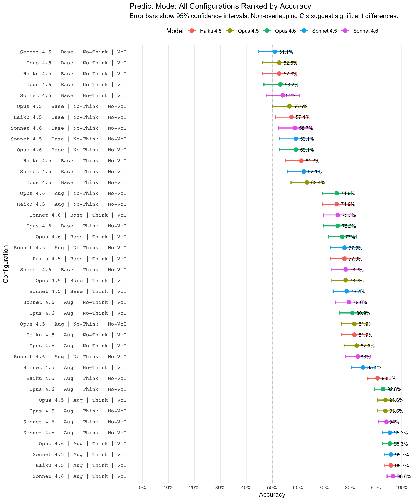
Total configurations: 40 Best performing: Sonnet 4.6 | Aug | Think | VoT Accuracy: 96.6% (95% CI: [94.3%, 98.9%])
4.1.4 Factor-Level Comparisons
Shows accuracy by individual factors, collapsing across other dimensions (marginal effects).
Code
# Calculate marginal effects for each factor
factor_data <- list(
Model = predict_data |>
group_by(model_name) |>
summarise(
n = n(),
accuracy = mean(correct),
ci_lower = accuracy - 1.96 * sqrt(accuracy * (1 - accuracy) / n),
ci_upper = accuracy + 1.96 * sqrt(accuracy * (1 - accuracy) / n)
) |>
mutate(factor = "Model", level = model_name),
Prompt = predict_data |>
group_by(prompt_style) |>
summarise(
n = n(),
accuracy = mean(correct),
ci_lower = accuracy - 1.96 * sqrt(accuracy * (1 - accuracy) / n),
ci_upper = accuracy + 1.96 * sqrt(accuracy * (1 - accuracy) / n)
) |>
mutate(factor = "Prompt", level = prompt_style),
Thinking = predict_data |>
group_by(enable_thinking) |>
summarise(
n = n(),
accuracy = mean(correct),
ci_lower = accuracy - 1.96 * sqrt(accuracy * (1 - accuracy) / n),
ci_upper = accuracy + 1.96 * sqrt(accuracy * (1 - accuracy) / n)
) |>
mutate(factor = "Extended Thinking", level = ifelse(enable_thinking, "Enabled", "Disabled")),
VoT = predict_data |>
group_by(vot_ray_trace) |>
summarise(
n = n(),
accuracy = mean(correct),
ci_lower = accuracy - 1.96 * sqrt(accuracy * (1 - accuracy) / n),
ci_upper = accuracy + 1.96 * sqrt(accuracy * (1 - accuracy) / n)
) |>
mutate(factor = "VoT Ray Trace", level = ifelse(vot_ray_trace, "Enabled", "Disabled"))
) |>
bind_rows() |>
mutate(factor = factor(factor, levels = c("Model", "Prompt", "Extended Thinking", "VoT Ray Trace")))
# Factor comparison plot
p_factors <- ggplot(factor_data, aes(x = accuracy, y = level)) +
geom_point(size = 4, color = "#2C3E50") +
geom_errorbarh(aes(xmin = ci_lower, xmax = ci_upper),
height = 0.2, linewidth = 1, color = "#2C3E50") +
geom_text(aes(label = paste0(round(accuracy * 100, 1), "%")),
hjust = -0.3, size = 3.5) +
facet_wrap(~factor, ncol = 1, scales = "free_y") +
labs(
title = "Main Effects: Accuracy by Individual Factors",
subtitle = "Marginal effects averaging across all other factors",
x = "Accuracy",
y = NULL
) +
scale_x_continuous(
limits = c(0, 1),
labels = scales::percent,
breaks = seq(0, 1, 0.1)
) +
theme_minimal(base_size = 12) +
theme(
strip.text = element_text(face = "bold", size = 12),
panel.grid.major.y = element_blank(),
panel.grid.minor = element_blank()
)
print(p_factors)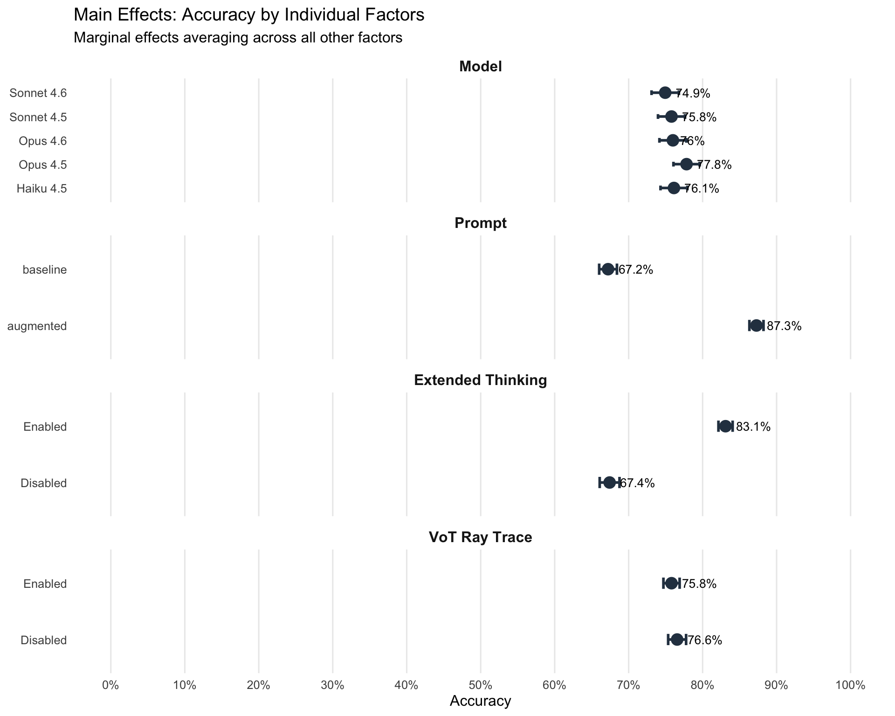
Code
# Accuracy by configuration to assess difficulty variation
predict_by_config <- predict_data |>
group_by(config_index, model_name) |>
summarise(
accuracy = mean(correct),
.groups = "drop"
) |>
pivot_wider(names_from = model_name, values_from = accuracy) |>
mutate(across(where(is.numeric), \(x) round(x, 3)))
kable(predict_by_config,
caption = "Prediction Accuracy by Configuration and Model")| config_index | Haiku 4.5 | Opus 4.5 | Opus 4.6 | Sonnet 4.5 | Sonnet 4.6 |
|---|---|---|---|---|---|
| 0 | 0.676 | 0.696 | 0.652 | 0.662 | 0.671 |
| 1 | 0.783 | 0.818 | 0.788 | 0.783 | 0.798 |
| 2 | 0.804 | 0.813 | 0.804 | 0.804 | 0.676 |
| 3 | 0.734 | 0.738 | 0.698 | 0.690 | 0.726 |
| 4 | 0.765 | 0.815 | 0.802 | 0.796 | 0.815 |
| 5 | 0.810 | 0.825 | 0.847 | 0.804 | 0.815 |
| 6 | 0.833 | 0.843 | 0.819 | 0.819 | 0.829 |
| 7 | 0.676 | 0.681 | 0.676 | 0.676 | 0.700 |
| 8 | 0.809 | 0.822 | 0.791 | 0.822 | 0.796 |
| 9 | 0.726 | 0.748 | 0.744 | 0.739 | 0.701 |
4.1.5 ANOVA: Prediction Accuracy
This analysis uses mixed-effects logistic regression to test whether experimental factors significantly affect prediction accuracy, while accounting for clustering within configurations and individual rays.
Model specification: - Outcome: Correct prediction (binary: 0/1) - Fixed effects: Model, prompt style, extended thinking, VoT ray trace, and their interactions - Covariates: cells_traveled (path length), atoms_affecting (atom density) - Random effects: Nested structure with config_index (configuration-level) and ray_id nested within config (ray-level)
Why nested random effects?
- Configuration-level (config_index): Accounts for overall difficulty due to specific atom placements; allows generalization beyond these 10 configurations
- Ray-level (ray_id:config_index): Accounts for individual ray difficulty; handles correlation when the same ray is tested across multiple experimental conditions
- Why nested?: ray_id “NORTH_3” represents different physical rays across configurations (different atom placements), so must be nested, not crossed
Covariates (cells_traveled, atoms_affecting) are NOT confounders (same rays tested across all conditions) but ARE precision variables that explain variance and improve statistical power.
Code
# Convert factors for ANOVA
predict_data <- predict_data |>
mutate(
model_name = factor(model_name, levels = order_model_names(model_name)),
prompt_style = factor(prompt_style, levels = c("baseline", "augmented")),
enable_thinking = factor(enable_thinking, levels = c(FALSE, TRUE)),
vot_ray_trace = factor(vot_ray_trace, levels = c(FALSE, TRUE)),
config_index = factor(config_index),
# Create unique ray identifier (nested within config)
ray_id = paste(toupper(entry_side), entry_pos, sep = "_")
)
# Build model formula dynamically based on available factor levels
has_model_var <- length(unique(predict_data$model_name)) > 1
has_prompt_var <- length(unique(predict_data$prompt_style)) > 1
has_thinking_var <- length(unique(predict_data$enable_thinking)) > 1
has_vot_var <- length(unique(predict_data$vot_ray_trace)) > 1
# Build formula components
formula_parts <- c()
if (has_model_var) formula_parts <- c(formula_parts, "model_name")
if (has_prompt_var) formula_parts <- c(formula_parts, "prompt_style")
if (has_thinking_var) formula_parts <- c(formula_parts, "enable_thinking")
# Add interactions only if all three main effects are present
if (has_model_var && has_prompt_var && has_thinking_var) {
main_formula <- "model_name * prompt_style * enable_thinking"
} else {
main_formula <- paste(formula_parts, collapse = " + ")
}
# Add VoT if it varies
if (has_vot_var) {
full_formula <- paste0("correct ~ ", main_formula, " + vot_ray_trace + cells_traveled + atoms_affecting + (1 | config_index/ray_id)")
} else {
full_formula <- paste0("correct ~ ", main_formula, " + cells_traveled + atoms_affecting + (1 | config_index/ray_id)")
}
model_predict <- glmer(as.formula(full_formula),
family = binomial(link = "logit"),
data = predict_data,
control = glmerControl(optimizer = "bobyqa"))Model formula: correct ~ model_name * prompt_style * enable_thinking + vot_ray_trace + cells_traveled + atoms_affecting + (1 | config_index/ray_id)
Analysis of Deviance Table (Type III Wald chisquare tests)
Response: correct
Chisq Df Pr(>Chisq)
(Intercept) 51.7468 1 6.314e-13 ***
model_name 1.0685 4 0.899233
prompt_style 43.6763 1 3.874e-11 ***
enable_thinking 150.4678 1 < 2.2e-16 ***
vot_ray_trace 0.1101 1 0.740026
cells_traveled 32.0083 1 1.535e-08 ***
atoms_affecting 20.7904 1 5.124e-06 ***
model_name:prompt_style 4.3551 4 0.360072
model_name:enable_thinking 14.8906 4 0.004934 **
prompt_style:enable_thinking 2.5590 1 0.109670
model_name:prompt_style:enable_thinking 6.8483 4 0.144128
---
Signif. codes: 0 '***' 0.001 '**' 0.01 '*' 0.05 '.' 0.1 ' ' 14.1.5.1 Odds Ratios with 95% Confidence Intervals
Interpretation: OR > 1 means the factor increases odds of correct prediction; OR < 1 means it decreases odds. These are conditional odds ratios (controlling for random effects).
| Term | Odds Ratio | 95% CI Lower | 95% CI Upper | p-value | Sig |
|---|---|---|---|---|---|
| model_nameSonnet 4.5 | 0.976 | 0.647 | 1.474 | 0.9090 | |
| model_nameSonnet 4.6 | 1.000 | 0.662 | 1.510 | 0.9999 | |
| model_nameOpus 4.5 | 1.183 | 0.783 | 1.787 | 0.4250 | |
| model_nameOpus 4.6 | 1.024 | 0.678 | 1.547 | 0.9090 | |
| prompt_styleaugmented | 4.127 | 2.711 | 6.284 | <0.001 | * |
| enable_thinkingTRUE | 12.819 | 8.528 | 19.270 | <0.001 | * |
| vot_ray_traceTRUE | 0.977 | 0.850 | 1.122 | 0.7400 | |
| cells_traveled | 0.703 | 0.622 | 0.794 | <0.001 | * |
| atoms_affecting | 0.277 | 0.160 | 0.481 | <0.001 | * |
| model_nameSonnet 4.5:prompt_styleaugmented | 1.615 | 0.894 | 2.917 | 0.1120 | |
| model_nameSonnet 4.6:prompt_styleaugmented | 1.465 | 0.812 | 2.644 | 0.2047 | |
| model_nameOpus 4.5:prompt_styleaugmented | 1.366 | 0.756 | 2.469 | 0.3014 | |
| model_nameOpus 4.6:prompt_styleaugmented | 1.000 | 0.555 | 1.799 | 0.9988 | |
| model_nameSonnet 4.5:enable_thinkingTRUE | 0.572 | 0.329 | 0.993 | 0.0470 | * |
| model_nameSonnet 4.6:enable_thinkingTRUE | 0.403 | 0.233 | 0.699 | 0.0012 | * |
| model_nameOpus 4.5:enable_thinkingTRUE | 0.879 | 0.501 | 1.541 | 0.6515 | |
| model_nameOpus 4.6:enable_thinkingTRUE | 0.888 | 0.508 | 1.553 | 0.6783 | |
| prompt_styleaugmented:enable_thinkingTRUE | 0.593 | 0.312 | 1.125 | 0.1097 | |
| model_nameSonnet 4.5:prompt_styleaugmented:enable_thinkingTRUE | 1.815 | 0.716 | 4.603 | 0.2091 | |
| model_nameSonnet 4.6:prompt_styleaugmented:enable_thinkingTRUE | 2.616 | 1.038 | 6.592 | 0.0414 | * |
| model_nameOpus 4.5:prompt_styleaugmented:enable_thinkingTRUE | 0.884 | 0.353 | 2.214 | 0.7929 | |
| model_nameOpus 4.6:prompt_styleaugmented:enable_thinkingTRUE | 1.380 | 0.554 | 3.441 | 0.4892 |
4.1.5.2 Random Effects Variance Components
Configuration-level random effects (config_index): - Accounts for overall difficulty due to specific atom placements - Generalizes inference beyond these 10 configurations - Captures configuration-specific effects (e.g., dense vs sparse atom patterns)
Ray-level random effects (ray_id:config_index): - Accounts for individual ray difficulty within each configuration - Handles correlation: Same ray tested across multiple conditions - Allows each ray to have its own baseline difficulty - Essential when same rays appear in multiple experimental conditions
Groups Name Std.Dev.
ray_id:config_index (Intercept) 2.2816
config_index (Intercept) 1.0909 Intraclass Correlation Coefficient (ICC): 0.66 — Proportion of variance due to clustering at both configuration and ray-within-config levels.
Model Fit (Pseudo R², Nakagawa & Schielzeth): - Marginal R² (fixed effects only): 0.237 - Conditional R² (fixed + random effects): 0.741
4.1.5.3 Cramér’s V (Effect Size for Categorical Associations)
Interpretation guidelines: 0.10=small, 0.30=medium, 0.50=large
| Factor | Cramér’s V |
|---|---|
| Model | 0.010 |
| Prompt Style | 0.234 |
| Extended Thinking | 0.182 |
| VoT Ray Trace | 0.000 |
4.1.5.4 Regression Coefficients for Main Effects
Key findings from mixed-effects logistic regression (fixed effects only).
| Term | β (log-odds) | OR | OR 95% CI Lower | OR 95% CI Upper | p-value |
|---|---|---|---|---|---|
| model_nameSonnet 4.5 | -0.024 | 0.976 | 0.647 | 1.474 | 0.909 |
| model_nameSonnet 4.6 | 0.000 | 1.000 | 0.662 | 1.510 | 1.000 |
| model_nameOpus 4.5 | 0.168 | 1.183 | 0.783 | 1.787 | 0.425 |
| model_nameOpus 4.6 | 0.024 | 1.024 | 0.678 | 1.547 | 0.909 |
| prompt_styleaugmented | 1.418 | 4.127 | 2.711 | 6.284 | <0.001 |
| enable_thinkingTRUE | 2.551 | 12.819 | 8.528 | 19.270 | <0.001 |
| vot_ray_traceTRUE | -0.024 | 0.977 | 0.850 | 1.122 | 0.740 |
| cells_traveled | -0.352 | 0.703 | 0.622 | 0.794 | <0.001 |
| atoms_affecting | -1.283 | 0.277 | 0.160 | 0.481 | <0.001 |
4.1.6 Effect Modification by Path Complexity
Does path complexity (measured as total cells traveled: entry + internal + exit) moderate treatment effects? If treatment effects are constant across spatial complexity levels, limitations lie in inferential machinery rather than spatial processing. If effects are moderated by complexity, spatial reasoning contributes to observed failures.
Code
# Only run if we have variation in factors and valid cells_traveled data
run_effect_mod <- has_model_var || has_prompt_var || has_thinking_var
if (run_effect_mod) {
# Build interaction formula
interaction_parts <- c()
if (has_model_var) interaction_parts <- c(interaction_parts, "model_name * cells_traveled")
if (has_prompt_var) interaction_parts <- c(interaction_parts, "prompt_style * cells_traveled")
if (has_thinking_var) interaction_parts <- c(interaction_parts, "enable_thinking * cells_traveled")
# Add nested random effects
pred_mod_formula <- paste0("correct ~ ", paste(interaction_parts, collapse = " + "), " + (1 | config_index/ray_id)")
model_predict_mod <- glmer(as.formula(pred_mod_formula),
family = binomial(link = "logit"),
data = predict_data,
control = glmerControl(optimizer = "bobyqa"))
}Model formula: correct ~ model_name * cells_traveled + prompt_style * cells_traveled + enable_thinking * cells_traveled + (1 | config_index/ray_id)
Analysis of Deviance Table (Type III Wald chisquare tests)
Response: correct
Chisq Df Pr(>Chisq)
(Intercept) 33.2762 1 7.995e-09 ***
model_name 6.0698 4 0.193994
cells_traveled 30.6140 1 3.148e-08 ***
prompt_style 16.8620 1 4.020e-05 ***
enable_thinking 16.1862 1 5.741e-05 ***
model_name:cells_traveled 2.6479 4 0.618357
cells_traveled:prompt_style 10.3156 1 0.001319 **
cells_traveled:enable_thinking 33.3424 1 7.728e-09 ***
---
Signif. codes: 0 '***' 0.001 '**' 0.01 '*' 0.05 '.' 0.1 ' ' 1Interpretation of interactions: - No interaction: Treatment effect is constant across simple and complex paths - Positive interaction: Treatment effect increases with path complexity - Negative interaction: Treatment effect decreases with path complexity
| Interaction Term | β (log-odds) | OR | OR 95% CI Lower | OR 95% CI Upper | p-value |
|---|---|---|---|---|---|
| model_nameSonnet 4.5:cells_traveled | -0.031 | 0.970 | 0.893 | 1.052 | 0.45973 |
| model_nameSonnet 4.6:cells_traveled | 0.025 | 1.025 | 0.946 | 1.112 | 0.54230 |
| model_nameOpus 4.5:cells_traveled | -0.017 | 0.983 | 0.904 | 1.068 | 0.68401 |
| model_nameOpus 4.6:cells_traveled | -0.031 | 0.970 | 0.893 | 1.053 | 0.46107 |
| cells_traveled:prompt_styleaugmented | 0.097 | 1.101 | 1.038 | 1.168 | 0.00132 |
| cells_traveled:enable_thinkingTRUE | 0.174 | 1.190 | 1.122 | 1.262 | < 0.001 |
Path Complexity Distribution (cells traveled):
| Statistic | Value |
|---|---|
| Min | 2 |
| Q1 | 4 |
| Median | 6 |
| Q3 | 9 |
| Max | 13 |
| Mean | 6.49 |
| SD | 2.9 |
4.1.7 Effect Modification by Atom Density
Does atom density (number of atoms adjacent to ray path) moderate treatment effects?
Code
run_effect_mod_atoms <- has_model_var || has_prompt_var || has_thinking_var
if (run_effect_mod_atoms) {
# Build interaction formula
interaction_parts <- c()
if (has_model_var) interaction_parts <- c(interaction_parts, "model_name * atoms_affecting")
if (has_prompt_var) interaction_parts <- c(interaction_parts, "prompt_style * atoms_affecting")
if (has_thinking_var) interaction_parts <- c(interaction_parts, "enable_thinking * atoms_affecting")
# Add nested random effects
pred_mod_formula_atoms <- paste0("correct ~ ", paste(interaction_parts, collapse = " + "), " + (1 | config_index/ray_id)")
model_predict_mod_atoms <- glmer(as.formula(pred_mod_formula_atoms),
family = binomial(link = "logit"),
data = predict_data,
control = glmerControl(optimizer = "bobyqa"))
}Model formula: correct ~ model_name * atoms_affecting + prompt_style * atoms_affecting + enable_thinking * atoms_affecting + (1 | config_index/ray_id)
Mixed-effects logistic regression tests whether treatment effects vary with atom density.
Analysis of Deviance Table (Type III Wald chisquare tests)
Response: correct
Chisq Df Pr(>Chisq)
(Intercept) 1.6971 1 0.1927
model_name 5.2746 4 0.2603
atoms_affecting 0.5299 1 0.4666
prompt_style 745.5906 1 < 2.2e-16 ***
enable_thinking 115.6854 1 < 2.2e-16 ***
model_name:atoms_affecting 0.8421 4 0.9327
atoms_affecting:prompt_style 244.9970 1 < 2.2e-16 ***
atoms_affecting:enable_thinking 20.8624 1 4.935e-06 ***
---
Signif. codes: 0 '***' 0.001 '**' 0.01 '*' 0.05 '.' 0.1 ' ' 1Interpretation of interactions: - No interaction: Treatment effect is constant across low and high atom density - Positive interaction: Treatment effect increases with more atoms affecting path - Negative interaction: Treatment effect decreases with more atoms affecting path
| Interaction Term | β (log-odds) | OR | OR 95% CI Lower | OR 95% CI Upper | p-value |
|---|---|---|---|---|---|
| model_nameSonnet 4.5:atoms_affecting | -0.018 | 0.982 | 0.733 | 1.316 | 0.905 |
| model_nameSonnet 4.6:atoms_affecting | 0.076 | 1.079 | 0.806 | 1.445 | 0.610 |
| model_nameOpus 4.5:atoms_affecting | -0.014 | 0.986 | 0.734 | 1.325 | 0.928 |
| model_nameOpus 4.6:atoms_affecting | -0.055 | 0.946 | 0.707 | 1.267 | 0.710 |
| atoms_affecting:prompt_styleaugmented | -1.697 | 0.183 | 0.148 | 0.227 | <0.001 |
| atoms_affecting:enable_thinkingTRUE | 0.484 | 1.622 | 1.318 | 1.997 | <0.001 |
Atom Density Distribution:
| Statistic | Value |
|---|---|
| Min | 0 |
| Q1 | 1 |
| Median | 1 |
| Q3 | 1 |
| Max | 3 |
| Mean | 0.97 |
| SD | 0.71 |
Code
# Accuracy by model and condition
p1_pred <- predict_data |>
group_by(model_name, prompt_style, enable_thinking) |>
summarise(accuracy = mean(correct),
se = sqrt(accuracy * (1-accuracy) / n()),
.groups = "drop") |>
ggplot(aes(x = model_name, y = accuracy, fill = enable_thinking)) +
geom_col(position = position_dodge(0.8), width = 0.7) +
geom_errorbar(aes(ymin = accuracy - se, ymax = accuracy + se),
position = position_dodge(0.8), width = 0.2) +
facet_wrap(~prompt_style) +
labs(title = "Predict Mode: Accuracy by Model, Thinking, and Prompt Style",
x = "Model", y = "Accuracy", fill = "Extended\nThinking") +
scale_y_continuous(limits = c(0, 1), labels = scales::percent) +
theme(axis.text.x = element_text(angle = 45, hjust = 1))
print(p1_pred)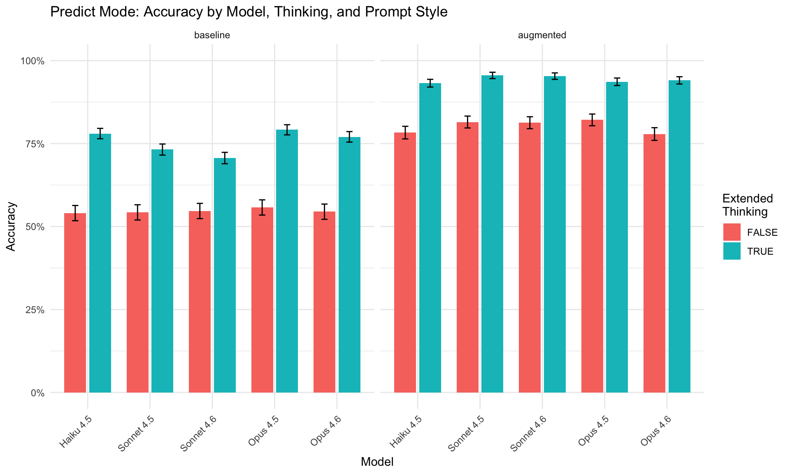
Code
# Accuracy by configuration (difficulty analysis)
p2_pred <- predict_data |>
group_by(config_index, model_name) |>
summarise(accuracy = mean(correct), .groups = "drop") |>
ggplot(aes(x = config_index, y = accuracy, color = model_name, group = model_name)) +
geom_line(linewidth = 1) +
geom_point(size = 2) +
labs(title = "Prediction Accuracy Across Configurations",
subtitle = "Variation indicates configuration difficulty differences",
x = "Configuration Index", y = "Accuracy", color = "Model") +
scale_y_continuous(limits = c(0, 1), labels = scales::percent) +
theme_minimal()
print(p2_pred)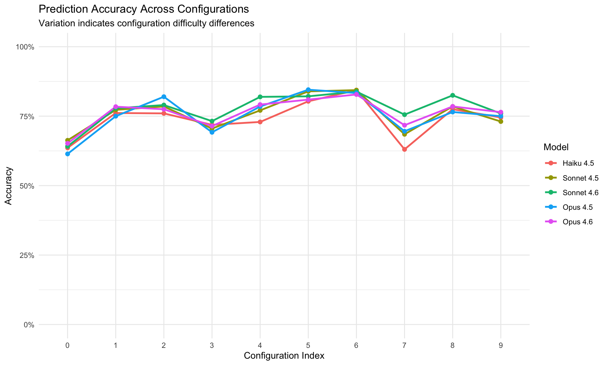
Code
# VoT Ray Trace effect
p3_pred <- predict_data |>
group_by(model_name, vot_ray_trace) |>
summarise(accuracy = mean(correct),
se = sqrt(accuracy * (1-accuracy) / n()),
.groups = "drop") |>
ggplot(aes(x = model_name, y = accuracy, fill = vot_ray_trace)) +
geom_col(position = position_dodge(0.8), width = 0.7) +
geom_errorbar(aes(ymin = accuracy - se, ymax = accuracy + se),
position = position_dodge(0.8), width = 0.2) +
labs(title = "Effect of VoT Ray Trace Visualization",
x = "Model", y = "Accuracy", fill = "VoT Ray\nTrace") +
scale_y_continuous(limits = c(0, 1), labels = scales::percent) +
theme(axis.text.x = element_text(angle = 45, hjust = 1))
print(p3_pred)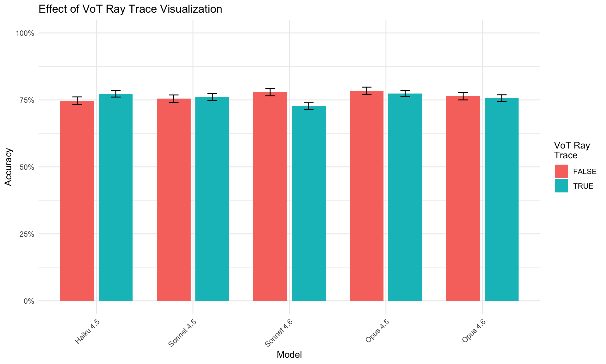
Code
# Path complexity vs accuracy
p4_pred <- predict_data |>
filter(!is.na(cells_traveled)) |>
group_by(cells_traveled, model_name) |>
summarise(accuracy = mean(correct),
n = n(),
.groups = "drop") |>
ggplot(aes(x = cells_traveled, y = accuracy, color = model_name)) +
geom_point(aes(size = n), alpha = 0.6) +
geom_smooth(method = "loess", se = TRUE, linewidth = 1) +
labs(title = "Performance vs Path Complexity",
subtitle = "Does accuracy decline as rays travel through more cells?",
x = "Cells Traveled (Entry + Internal + Exit)",
y = "Accuracy",
color = "Model",
size = "N") +
scale_y_continuous(limits = c(0, 1), labels = scales::percent) +
theme_minimal()
print(p4_pred)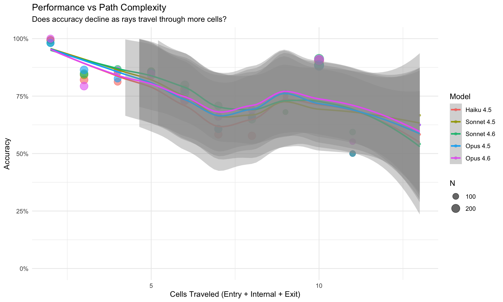
4.1.8 Ray Path Complexity Analysis
Code
# 1. Correlation between complexity measures
complexity_cor <- cor(predict_data$cells_traveled, predict_data$atoms_affecting,
use = "complete.obs")Correlation between cells_traveled and atoms_affecting: -0.213
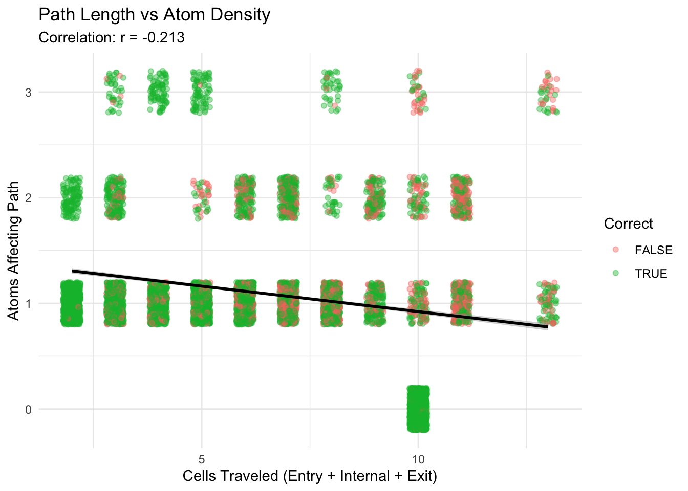
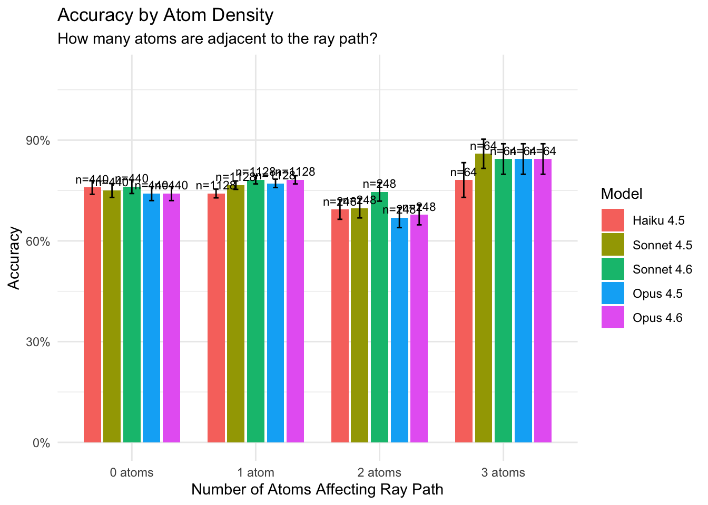
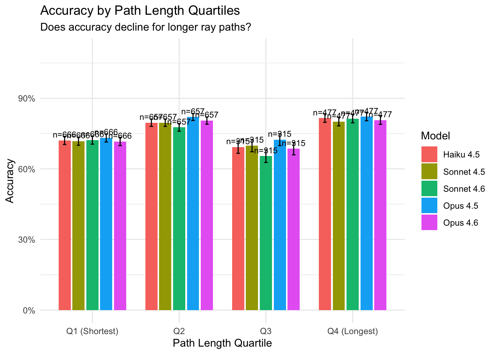
Code
# Analyze error patterns by comparing predicted vs actual
# This helps identify systematic errors (e.g., absorption vs deflection confusion)
# First, extract the type of result from predicted and actual
predict_errors <- predict_data |>
filter(!correct) |>
mutate(
predicted_type = case_when(
grepl("absorbed|HIT", predicted, ignore.case = TRUE) ~ "absorbed",
grepl("reflected|REFLECTION", predicted, ignore.case = TRUE) ~ "reflected",
TRUE ~ "detour"
),
actual_type = case_when(
grepl("absorbed|HIT", actual, ignore.case = TRUE) ~ "absorbed",
grepl("reflected|REFLECTION", actual, ignore.case = TRUE) ~ "reflected",
TRUE ~ "detour"
)
)
# Error confusion matrix
error_matrix <- predict_errors |>
count(actual_type, predicted_type) |>
pivot_wider(names_from = predicted_type, values_from = n, values_fill = 0)
kable(error_matrix, caption = "Prediction Errors: Actual vs Predicted Outcome Type (Rows = Actual, Columns = Predicted)")| actual_type | detour | reflected | absorbed |
|---|---|---|---|
| absorbed | 428 | 38 | 0 |
| detour | 1088 | 23 | 223 |
| reflected | 505 | 0 | 219 |
Code
# Error rates by model
error_by_model <- predict_errors |>
count(model_name, actual_type, predicted_type) |>
group_by(model_name) |>
mutate(prop = n / sum(n)) |>
ungroup()
error_by_model |>
group_by(model_name) |>
slice_max(n, n = 3) |>
mutate(error_pattern = paste(actual_type, "->", predicted_type)) |>
select(model_name, error_pattern, n, prop) |>
mutate(prop = round(prop, 3)) |>
kable(col.names = c("Model", "Error Pattern (Actual → Predicted)", "Count", "Proportion"),
caption = "Most Common Error Types by Model (Top 3 per Model)")| Model | Error Pattern (Actual → Predicted) | Count | Proportion |
|---|---|---|---|
| Haiku 4.5 | detour -> detour | 223 | 0.442 |
| Haiku 4.5 | reflected -> detour | 95 | 0.188 |
| Haiku 4.5 | absorbed -> detour | 77 | 0.152 |
| Sonnet 4.5 | detour -> detour | 219 | 0.428 |
| Sonnet 4.5 | reflected -> detour | 99 | 0.193 |
| Sonnet 4.5 | absorbed -> detour | 85 | 0.166 |
| Sonnet 4.6 | detour -> detour | 230 | 0.434 |
| Sonnet 4.6 | absorbed -> detour | 102 | 0.192 |
| Sonnet 4.6 | reflected -> detour | 99 | 0.187 |
| Opus 4.5 | detour -> detour | 200 | 0.426 |
| Opus 4.5 | reflected -> detour | 104 | 0.222 |
| Opus 4.5 | absorbed -> detour | 77 | 0.164 |
| Opus 4.6 | detour -> detour | 216 | 0.425 |
| Opus 4.6 | reflected -> detour | 108 | 0.213 |
| Opus 4.6 | absorbed -> detour | 87 | 0.171 |
4.1.9 Budget Tag Hallucination Artifact
During experiment runs, we observed that models occasionally hallucinate XML-like <budget:...> tags in their visible response text—fabricating token usage metadata that mimics internal API bookkeeping. These tags (e.g., <budget:used_tokens>, <budget:token_budget>, <budget:token_usage>) are not present in any prompt or API parameter passed to the model; they appear to be confabulated from the model’s awareness of its extended thinking budget context.
Prevalence: 29 of 10575 predictions (0.27%) contained hallucinated budget tags.
Key patterns:
- Exclusive to extended thinking: All 29 instances occurred with extended thinking enabled; no instances were found in non-thinking runs.
- 100% incorrect: Every prediction containing a budget tag hallucination was incorrect (0/29 correct).
- Not present in Play mode: No budget tag hallucinations were found in Play mode data, suggesting the multi-turn conversational structure may suppress this artifact.
| Model | Prompt | Thinking | Count |
|---|---|---|---|
| Opus 4.6 | augmented | TRUE | 8 |
| Opus 4.5 | augmented | TRUE | 5 |
| Haiku 4.5 | augmented | TRUE | 4 |
| Sonnet 4.5 | augmented | TRUE | 4 |
| Sonnet 4.6 | augmented | TRUE | 4 |
| Opus 4.5 | baseline | TRUE | 2 |
| Opus 4.6 | baseline | TRUE | 2 |
The perfect correlation with incorrect predictions suggests these hallucinations are a signal of reasoning process failure: when the model generates metadata artifacts instead of reasoning about ray physics, it invariably produces an incorrect prediction. While the overall prevalence is low (0.27%), this artifact represents a qualitatively distinct failure mode—the model confabulating system-level metadata rather than engaging with the task.
4.2 Play Mode Results
Code
# Load all Play mode experiment JSON files from Experiment 1/Play/
play_json_files <- list.files(
path = "Experiment 1/Play",
pattern = "\\.json$",
full.names = TRUE
)
# Function to extract results from a single JSON file
extract_play_results <- function(json_file) {
data <- jsonlite::fromJSON(json_file, simplifyDataFrame = FALSE)
# Extract results array
results <- data$results
# Convert each result to a tibble row
map_dfr(results, function(r) {
# Calculate mean complexity measures for each ray fired
ray_complexity <- lapply(r$raySequence, function(ray) {
if (!is.null(ray$action) && ray$action == "fire" &&
!is.null(ray$rayResult) && !is.null(ray$rayResult$path)) {
list(
atoms = count_atoms_affecting(ray$rayResult$path, r$atomConfig),
cells = count_ray_cells(ray$rayResult)
)
} else {
list(atoms = NA_real_, cells = NA_real_)
}
})
mean_atoms <- mean(sapply(ray_complexity, function(x) x$atoms), na.rm = TRUE)
mean_cells <- mean(sapply(ray_complexity, function(x) x$cells), na.rm = TRUE)
if (is.nan(mean_atoms)) mean_atoms <- NA_real_
if (is.nan(mean_cells)) mean_cells <- NA_real_
tibble(
experiment_id = r$experimentId,
start_time = r$startTime,
end_time = r$endTime,
model = r$model,
model_name = r$modelName,
prompt_style = r$promptStyle,
prompt_condition = r$promptCondition,
mode = r$mode,
config_index = r$configIndex,
atom_config = list(r$atomConfig),
include_visualization = r$includeVisualization,
allow_hypotheses = r$allowHypotheses,
enable_thinking = r$enableThinking,
thinking_budget = r$thinkingBudget,
vot_grid_state = r$votGridState,
vot_ray_trace = r$votRayTrace,
vot_hypothesis = r$votHypothesis,
rays_used = r$raysUsed,
atoms_correct = r$atomsCorrect,
atoms_missed = r$atomsMissed,
score = r$score,
invalid_moves = r$invalidMoves,
hypothesis_actions = r$hypothesisActions,
total_api_calls = r$totalApiCalls,
total_input_tokens = r$totalInputTokens,
total_output_tokens = r$totalOutputTokens,
total_response_time_ms = r$totalResponseTimeMs,
mean_atoms_per_ray = mean_atoms,
mean_cells_per_ray = mean_cells,
source_file = basename(json_file)
)
})
}
# Load all results into a single long-format tibble
play_data <- map_dfr(play_json_files, extract_play_results)
# Validate: allowHypotheses should be TRUE for all play experiments
hyp_check <- play_data |>
filter(!allow_hypotheses) |>
group_by(source_file) |>
summarise(n_false = n(), .groups = "drop")
if (nrow(hyp_check) > 0) {
warning("Files with allowHypotheses = false detected:\n",
paste0(" ", hyp_check$source_file, " (", hyp_check$n_false, " configs)\n", collapse = ""),
"Total configs with allowHypotheses = false: ", sum(hyp_check$n_false))
}
# Create single VoT condition factor from mutually exclusive binary flags
play_data <- play_data |>
mutate(
vot_condition = case_when(
vot_grid_state ~ "A: Grid State",
vot_ray_trace ~ "B: Ray Trace",
vot_hypothesis ~ "C: Hypothesis",
TRUE ~ "None"
),
vot_condition = factor(vot_condition, levels = c("None", "A: Grid State", "B: Ray Trace", "C: Hypothesis"))
)
# Tag original data
play_data <- play_data |>
mutate(source = "original", run_id = "original")Code
# Load replication runs from Experiment 3 (dynamically picks up new files)
replication_dir <- "Experiment 3 Multiple Runs Top Leaders"
replication_json_files <- if (dir.exists(replication_dir)) {
list.files(path = replication_dir, pattern = "\\.json$", full.names = TRUE)
} else {
character(0)
}
if (length(replication_json_files) > 0) {
replication_data <- map_dfr(replication_json_files, function(f) {
run_id <- stringr::str_extract(basename(f), "\\d{4}-\\d{2}-\\d{2}T\\d{2}-\\d{2}-\\d{2}")
extract_play_results(f) |>
mutate(source = "replication", run_id = run_id)
})
# Apply same VoT condition factor
replication_data <- replication_data |>
mutate(
vot_condition = case_when(
vot_grid_state ~ "A: Grid State",
vot_ray_trace ~ "B: Ray Trace",
vot_hypothesis ~ "C: Hypothesis",
TRUE ~ "None"
),
vot_condition = factor(vot_condition, levels = c("None", "A: Grid State", "B: Ray Trace", "C: Hypothesis"))
)
# Save original-only data for the initial leaderboard
play_data_original <- play_data
# Merge: pooled data includes both original and replication
play_data <- bind_rows(play_data, replication_data)
n_replication_runs <- length(replication_json_files)
n_replication_games <- nrow(replication_data)
replicated_configs <- replication_data |>
distinct(model_name, prompt_style, enable_thinking, vot_grid_state, vot_ray_trace, vot_hypothesis) |>
nrow()
} else {
play_data_original <- play_data
n_replication_runs <- 0
n_replication_games <- 0
replicated_configs <- 0
replicated_conditions <- tibble()
}Data loaded: 800 original experiment results from 28 JSON files. Replication data: 100 additional games from 5 replication runs across 2 model configuration(s). Pooled total: 900 games.
- Models: Haiku 4.5, Sonnet 4.5, Opus 4.5, Sonnet 4.6, Opus 4.6
- Prompt styles: augmented, baseline
- VoT conditions: None, A: Grid State, B: Ray Trace, C: Hypothesis
- Configurations tested: 10
- Mean atoms per ray range: 0–3
- Mean cells per ray range: 2–10
4.2.1 Data Completeness Check
Code
# Define expected full factorial design
expected_play_models <- c("Haiku 4.5", "Sonnet 4.5", "Opus 4.5", "Sonnet 4.6", "Opus 4.6")
expected_play_design <- expand_grid(
model_name = expected_play_models,
prompt_style = c("baseline", "augmented"),
enable_thinking = c(FALSE, TRUE),
vot_condition = factor(
c("None", "A: Grid State", "B: Ray Trace", "C: Hypothesis"),
levels = c("None", "A: Grid State", "B: Ray Trace", "C: Hypothesis")
),
config_index = 0:9
)
# What's actually present
actual_play_conditions <- play_data |>
distinct(model_name, prompt_style, enable_thinking, vot_condition, config_index)
# Find missing cells
missing_play <- anti_join(
expected_play_design, actual_play_conditions,
by = c("model_name", "prompt_style", "enable_thinking", "vot_condition", "config_index")
)
# Summarise missing by condition (collapse config indices)
missing_play_summary <- missing_play |>
group_by(model_name, prompt_style, enable_thinking, vot_condition) |>
summarise(
n_missing_configs = n(),
missing_configs = paste(config_index, collapse = ", "),
.groups = "drop"
) |>
arrange(model_name, prompt_style, enable_thinking, vot_condition)
# Condition-level coverage matrix (how many of 10 configs present per condition)
play_coverage <- expected_play_design |>
distinct(model_name, prompt_style, enable_thinking, vot_condition) |>
left_join(
play_data |>
group_by(model_name, prompt_style, enable_thinking, vot_condition) |>
summarise(configs_present = n_distinct(config_index),
total_games = n(), .groups = "drop"),
by = c("model_name", "prompt_style", "enable_thinking", "vot_condition")
) |>
replace_na(list(configs_present = 0, total_games = 0)) |>
mutate(
condition = paste0(
ifelse(prompt_style == "augmented", "Aug", "Base"), " | ",
ifelse(as.logical(as.character(enable_thinking)), "Think", "No-Think"), " | ",
vot_condition
)
)
# Pivot to show models as columns
play_coverage_matrix <- play_coverage |>
select(model_name, condition, configs_present) |>
pivot_wider(names_from = model_name, values_from = configs_present) |>
arrange(condition)
if (nrow(missing_play) > 0) {
cat("**Missing experimental runs detected.**\n\n")
kable(play_coverage_matrix,
caption = "Play Mode: Configurations Present (out of 10) by Model and Condition",
format = "pipe") |> print()
cat("\n\n**Missing conditions detail:**\n\n")
kable(missing_play_summary,
col.names = c("Model", "Prompt", "Thinking", "VoT", "Missing (n)", "Config Indices"),
caption = "Play Mode: Missing Experimental Runs",
format = "pipe") |> print()
} else {
cat("All", nrow(expected_play_design), "expected play-mode cells are present",
"(5 models x 2 prompts x 2 thinking x 4 VoT x 10 configs).\n")
}All 800 expected play-mode cells are present (5 models x 2 prompts x 2 thinking x 4 VoT x 10 configs).Code
# Check for unexpected model names
unexpected_models_play <- setdiff(unique(play_data$model_name), expected_play_models)
if (length(unexpected_models_play) > 0) {
cat("\n**Unexpected model names in data:**", paste(unexpected_models_play, collapse = ", "), "\n")
}
# Check for duplicate runs (same condition run multiple times)
play_duplicates <- play_data |>
group_by(model_name, prompt_style, enable_thinking, vot_condition, config_index) |>
summarise(n_runs = n(), .groups = "drop") |>
filter(n_runs > 1)
if (nrow(play_duplicates) > 0) {
cat("\n**Duplicate runs detected (same condition × config run multiple times):**\n")
kable(play_duplicates,
col.names = c("Model", "Prompt", "Thinking", "VoT", "Config", "Runs"),
format = "pipe") |> print()
}
**Duplicate runs detected (same condition × config run multiple times):**
|Model |Prompt |Thinking |VoT | Config| Runs|
|:----------|:---------|:--------|:------------|------:|----:|
|Opus 4.6 |augmented |TRUE |B: Ray Trace | 0| 6|
|Opus 4.6 |augmented |TRUE |B: Ray Trace | 1| 6|
|Opus 4.6 |augmented |TRUE |B: Ray Trace | 2| 6|
|Opus 4.6 |augmented |TRUE |B: Ray Trace | 3| 6|
|Opus 4.6 |augmented |TRUE |B: Ray Trace | 4| 6|
|Opus 4.6 |augmented |TRUE |B: Ray Trace | 5| 6|
|Opus 4.6 |augmented |TRUE |B: Ray Trace | 6| 6|
|Opus 4.6 |augmented |TRUE |B: Ray Trace | 7| 6|
|Opus 4.6 |augmented |TRUE |B: Ray Trace | 8| 6|
|Opus 4.6 |augmented |TRUE |B: Ray Trace | 9| 6|
|Sonnet 4.6 |augmented |TRUE |B: Ray Trace | 0| 6|
|Sonnet 4.6 |augmented |TRUE |B: Ray Trace | 1| 6|
|Sonnet 4.6 |augmented |TRUE |B: Ray Trace | 2| 6|
|Sonnet 4.6 |augmented |TRUE |B: Ray Trace | 3| 6|
|Sonnet 4.6 |augmented |TRUE |B: Ray Trace | 4| 6|
|Sonnet 4.6 |augmented |TRUE |B: Ray Trace | 5| 6|
|Sonnet 4.6 |augmented |TRUE |B: Ray Trace | 6| 6|
|Sonnet 4.6 |augmented |TRUE |B: Ray Trace | 7| 6|
|Sonnet 4.6 |augmented |TRUE |B: Ray Trace | 8| 6|
|Sonnet 4.6 |augmented |TRUE |B: Ray Trace | 9| 6|All expected play-mode experimental runs are present.
Code
# Summary statistics by model, prompt, thinking, and VoT condition
play_summary <- play_data |>
group_by(model_name, prompt_style, enable_thinking, vot_condition) |>
summarise(
n = n(),
atoms_correct_mean = mean(atoms_correct),
atoms_correct_sd = sd(atoms_correct),
score_mean = mean(score),
score_sd = sd(score),
mean_atoms_ray = mean(mean_atoms_per_ray, na.rm = TRUE),
rays_used_mean = mean(rays_used),
.groups = "drop"
) |>
mutate(across(where(is.numeric) & !n, \(x) round(x, 2)))
kable(play_summary,
col.names = c("Model", "Prompt", "Thinking", "VoT", "N",
"Atoms Correct (M)", "Atoms Correct (SD)",
"Score (M)", "Score (SD)",
"Atoms/Ray", "Rays Used"))| Model | Prompt | Thinking | VoT | N | Atoms Correct (M) | Atoms Correct (SD) | Score (M) | Score (SD) | Atoms/Ray | Rays Used |
|---|---|---|---|---|---|---|---|---|---|---|
| Haiku 4.5 | augmented | FALSE | None | 10 | 1.00 | 1.25 | 29.50 | 8.44 | 1.04 | 9.90 |
| Haiku 4.5 | augmented | FALSE | A: Grid State | 10 | 0.80 | 1.03 | 34.50 | 8.63 | 1.01 | 12.80 |
| Haiku 4.5 | augmented | FALSE | B: Ray Trace | 10 | 0.80 | 1.32 | 31.40 | 8.92 | 1.00 | 10.70 |
| Haiku 4.5 | augmented | FALSE | C: Hypothesis | 10 | 0.90 | 1.37 | 30.70 | 7.15 | 1.03 | 10.70 |
| Haiku 4.5 | augmented | TRUE | None | 10 | 1.90 | 1.73 | 26.40 | 10.81 | 0.95 | 11.50 |
| Haiku 4.5 | augmented | TRUE | A: Grid State | 10 | 1.70 | 1.34 | 26.50 | 11.74 | 0.96 | 10.90 |
| Haiku 4.5 | augmented | TRUE | B: Ray Trace | 10 | 1.70 | 1.42 | 26.00 | 9.61 | 1.01 | 10.40 |
| Haiku 4.5 | augmented | TRUE | C: Hypothesis | 10 | 1.80 | 1.48 | 26.70 | 10.03 | 0.98 | 11.00 |
| Haiku 4.5 | baseline | FALSE | None | 10 | 0.70 | 1.25 | 34.90 | 7.26 | 1.06 | 13.00 |
| Haiku 4.5 | baseline | FALSE | A: Grid State | 10 | 1.20 | 1.48 | 31.90 | 10.03 | 1.09 | 12.90 |
| Haiku 4.5 | baseline | FALSE | B: Ray Trace | 10 | 0.80 | 0.92 | 31.50 | 6.62 | 1.05 | 11.40 |
| Haiku 4.5 | baseline | FALSE | C: Hypothesis | 10 | 1.00 | 1.15 | 35.50 | 5.50 | 0.99 | 14.60 |
| Haiku 4.5 | baseline | TRUE | None | 10 | 1.20 | 1.40 | 27.00 | 8.94 | 1.08 | 9.30 |
| Haiku 4.5 | baseline | TRUE | A: Grid State | 10 | 0.90 | 1.45 | 30.60 | 9.29 | 1.03 | 11.00 |
| Haiku 4.5 | baseline | TRUE | B: Ray Trace | 10 | 1.10 | 1.29 | 24.30 | 7.57 | 1.03 | 7.20 |
| Haiku 4.5 | baseline | TRUE | C: Hypothesis | 10 | 1.40 | 1.07 | 30.70 | 7.85 | 0.96 | 12.50 |
| Opus 4.5 | augmented | FALSE | None | 10 | 1.30 | 1.34 | 29.50 | 8.44 | 1.04 | 11.20 |
| Opus 4.5 | augmented | FALSE | A: Grid State | 10 | 1.20 | 1.55 | 28.40 | 10.51 | 1.04 | 10.40 |
| Opus 4.5 | augmented | FALSE | B: Ray Trace | 10 | 1.20 | 1.32 | 29.80 | 9.04 | 0.99 | 10.90 |
| Opus 4.5 | augmented | FALSE | C: Hypothesis | 10 | 1.00 | 1.15 | 30.80 | 9.03 | 1.05 | 11.00 |
| Opus 4.5 | augmented | TRUE | None | 10 | 1.60 | 1.35 | 27.20 | 7.15 | 1.08 | 10.80 |
| Opus 4.5 | augmented | TRUE | A: Grid State | 10 | 2.00 | 1.56 | 24.20 | 10.39 | 1.00 | 9.90 |
| Opus 4.5 | augmented | TRUE | B: Ray Trace | 10 | 1.90 | 1.52 | 23.50 | 9.41 | 1.13 | 9.90 |
| Opus 4.5 | augmented | TRUE | C: Hypothesis | 10 | 1.70 | 1.34 | 28.60 | 12.11 | 0.96 | 12.30 |
| Opus 4.5 | baseline | FALSE | None | 10 | 1.00 | 1.41 | 33.00 | 10.35 | 1.06 | 13.00 |
| Opus 4.5 | baseline | FALSE | A: Grid State | 10 | 1.20 | 1.62 | 33.20 | 9.44 | 1.03 | 13.60 |
| Opus 4.5 | baseline | FALSE | B: Ray Trace | 10 | 1.20 | 1.23 | 33.50 | 9.30 | 1.03 | 13.80 |
| Opus 4.5 | baseline | FALSE | C: Hypothesis | 10 | 0.90 | 1.37 | 35.80 | 9.28 | 1.03 | 14.30 |
| Opus 4.5 | baseline | TRUE | None | 10 | 1.50 | 1.43 | 27.40 | 8.18 | 1.12 | 10.70 |
| Opus 4.5 | baseline | TRUE | A: Grid State | 10 | 1.30 | 1.34 | 26.30 | 5.81 | 0.99 | 9.50 |
| Opus 4.5 | baseline | TRUE | B: Ray Trace | 10 | 1.00 | 1.05 | 25.70 | 4.47 | 1.04 | 8.00 |
| Opus 4.5 | baseline | TRUE | C: Hypothesis | 10 | 1.00 | 1.41 | 30.40 | 9.28 | 1.01 | 10.80 |
| Opus 4.6 | augmented | FALSE | None | 10 | 1.40 | 1.35 | 33.10 | 10.31 | 1.10 | 14.50 |
| Opus 4.6 | augmented | FALSE | A: Grid State | 10 | 1.50 | 1.51 | 32.60 | 9.42 | 1.08 | 15.00 |
| Opus 4.6 | augmented | FALSE | B: Ray Trace | 10 | 0.70 | 1.25 | 37.70 | 10.25 | 0.99 | 15.30 |
| Opus 4.6 | augmented | FALSE | C: Hypothesis | 10 | 1.20 | 1.55 | 36.20 | 11.25 | 1.00 | 15.60 |
| Opus 4.6 | augmented | TRUE | None | 10 | 2.40 | 1.35 | 23.30 | 9.80 | 1.06 | 11.10 |
| Opus 4.6 | augmented | TRUE | A: Grid State | 10 | 2.50 | 1.27 | 25.50 | 10.08 | 1.01 | 12.80 |
| Opus 4.6 | augmented | TRUE | B: Ray Trace | 60 | 2.60 | 1.28 | 23.67 | 8.96 | 1.02 | 12.30 |
| Opus 4.6 | augmented | TRUE | C: Hypothesis | 10 | 1.90 | 1.73 | 30.10 | 12.57 | 1.03 | 13.80 |
| Opus 4.6 | baseline | FALSE | None | 10 | 0.60 | 1.07 | 30.40 | 6.04 | 1.12 | 9.80 |
| Opus 4.6 | baseline | FALSE | A: Grid State | 10 | 0.70 | 1.25 | 35.40 | 8.50 | 1.04 | 13.10 |
| Opus 4.6 | baseline | FALSE | B: Ray Trace | 10 | 0.90 | 1.37 | 32.40 | 9.34 | 1.13 | 12.00 |
| Opus 4.6 | baseline | FALSE | C: Hypothesis | 10 | 0.90 | 0.88 | 36.50 | 6.77 | 1.01 | 14.90 |
| Opus 4.6 | baseline | TRUE | None | 10 | 2.30 | 1.57 | 20.50 | 8.91 | 1.04 | 8.90 |
| Opus 4.6 | baseline | TRUE | A: Grid State | 10 | 1.60 | 1.43 | 24.40 | 8.17 | 0.94 | 8.70 |
| Opus 4.6 | baseline | TRUE | B: Ray Trace | 10 | 1.30 | 1.25 | 24.80 | 5.12 | 1.18 | 8.40 |
| Opus 4.6 | baseline | TRUE | C: Hypothesis | 10 | 1.60 | 1.51 | 27.50 | 6.52 | 1.00 | 11.00 |
| Sonnet 4.5 | augmented | FALSE | None | 10 | 1.20 | 1.14 | 29.30 | 7.89 | 1.00 | 10.50 |
| Sonnet 4.5 | augmented | FALSE | A: Grid State | 10 | 1.40 | 1.51 | 31.00 | 13.01 | 0.96 | 12.50 |
| Sonnet 4.5 | augmented | FALSE | B: Ray Trace | 10 | 1.10 | 1.37 | 32.10 | 9.75 | 1.01 | 11.90 |
| Sonnet 4.5 | augmented | FALSE | C: Hypothesis | 10 | 1.20 | 1.40 | 31.30 | 10.38 | 1.01 | 12.00 |
| Sonnet 4.5 | augmented | TRUE | None | 10 | 2.00 | 1.15 | 24.60 | 9.17 | 0.99 | 10.50 |
| Sonnet 4.5 | augmented | TRUE | A: Grid State | 10 | 1.20 | 1.32 | 30.50 | 9.82 | 1.00 | 11.10 |
| Sonnet 4.5 | augmented | TRUE | B: Ray Trace | 10 | 1.70 | 1.42 | 26.70 | 7.90 | 0.92 | 11.10 |
| Sonnet 4.5 | augmented | TRUE | C: Hypothesis | 10 | 1.40 | 1.35 | 28.90 | 9.12 | 1.00 | 11.20 |
| Sonnet 4.5 | baseline | FALSE | None | 10 | 0.80 | 1.14 | 33.30 | 4.72 | 1.00 | 12.10 |
| Sonnet 4.5 | baseline | FALSE | A: Grid State | 10 | 1.00 | 1.05 | 36.50 | 9.32 | 1.05 | 15.40 |
| Sonnet 4.5 | baseline | FALSE | B: Ray Trace | 10 | 0.90 | 1.45 | 33.00 | 10.51 | 1.05 | 12.50 |
| Sonnet 4.5 | baseline | FALSE | C: Hypothesis | 10 | 1.00 | 1.33 | 33.50 | 8.71 | 0.99 | 12.90 |
| Sonnet 4.5 | baseline | TRUE | None | 10 | 1.20 | 1.23 | 28.00 | 7.02 | 1.11 | 10.20 |
| Sonnet 4.5 | baseline | TRUE | A: Grid State | 10 | 1.40 | 1.17 | 28.30 | 8.88 | 1.04 | 10.60 |
| Sonnet 4.5 | baseline | TRUE | B: Ray Trace | 10 | 1.90 | 1.52 | 25.40 | 7.66 | 1.01 | 10.50 |
| Sonnet 4.5 | baseline | TRUE | C: Hypothesis | 10 | 1.60 | 1.26 | 28.00 | 8.04 | 0.96 | 11.40 |
| Sonnet 4.6 | augmented | FALSE | None | 10 | 1.30 | 1.49 | 34.90 | 9.02 | 1.01 | 14.90 |
| Sonnet 4.6 | augmented | FALSE | A: Grid State | 10 | 1.50 | 1.51 | 33.40 | 10.47 | 1.06 | 15.40 |
| Sonnet 4.6 | augmented | FALSE | B: Ray Trace | 10 | 1.20 | 1.55 | 35.80 | 9.03 | 1.01 | 15.70 |
| Sonnet 4.6 | augmented | FALSE | C: Hypothesis | 10 | 1.70 | 0.95 | 33.50 | 6.62 | 0.99 | 15.50 |
| Sonnet 4.6 | augmented | TRUE | None | 10 | 2.60 | 1.26 | 24.50 | 9.23 | 1.02 | 13.20 |
| Sonnet 4.6 | augmented | TRUE | A: Grid State | 10 | 2.40 | 1.17 | 24.30 | 8.04 | 1.04 | 11.90 |
| Sonnet 4.6 | augmented | TRUE | B: Ray Trace | 60 | 2.77 | 1.11 | 22.97 | 7.94 | 1.02 | 12.05 |
| Sonnet 4.6 | augmented | TRUE | C: Hypothesis | 10 | 2.40 | 1.71 | 27.90 | 11.83 | 1.00 | 14.20 |
| Sonnet 4.6 | baseline | FALSE | None | 10 | 1.20 | 1.69 | 32.60 | 7.23 | 1.02 | 13.00 |
| Sonnet 4.6 | baseline | FALSE | A: Grid State | 10 | 0.90 | 1.29 | 34.90 | 8.10 | 1.04 | 14.10 |
| Sonnet 4.6 | baseline | FALSE | B: Ray Trace | 10 | 0.90 | 1.29 | 32.50 | 9.08 | 1.05 | 11.90 |
| Sonnet 4.6 | baseline | FALSE | C: Hypothesis | 10 | 0.80 | 1.03 | 37.20 | 8.11 | 0.99 | 15.20 |
| Sonnet 4.6 | baseline | TRUE | None | 10 | 1.50 | 1.35 | 26.70 | 7.86 | 1.04 | 10.30 |
| Sonnet 4.6 | baseline | TRUE | A: Grid State | 10 | 2.20 | 1.62 | 23.50 | 10.63 | 1.12 | 10.60 |
| Sonnet 4.6 | baseline | TRUE | B: Ray Trace | 10 | 1.40 | 1.51 | 26.00 | 6.80 | 1.05 | 9.60 |
| Sonnet 4.6 | baseline | TRUE | C: Hypothesis | 10 | 1.10 | 1.29 | 31.10 | 9.33 | 1.05 | 11.70 |
Code
# Summary by VoT condition
play_summary_vot <- play_data |>
group_by(vot_condition) |>
summarise(
n = n(),
atoms_correct_mean = mean(atoms_correct),
atoms_correct_sd = sd(atoms_correct),
score_mean = mean(score),
score_sd = sd(score),
rays_used_mean = mean(rays_used),
mean_atoms_ray = mean(mean_atoms_per_ray, na.rm = TRUE),
.groups = "drop"
) |>
mutate(across(where(is.numeric) & !n, \(x) round(x, 2)))
kable(play_summary_vot,
col.names = c("VoT Condition", "N",
"Atoms Correct (M)", "Atoms Correct (SD)",
"Score (M)", "Score (SD)", "Rays Used", "Atoms/Ray"))| VoT Condition | N | Atoms Correct (M) | Atoms Correct (SD) | Score (M) | Score (SD) | Rays Used | Atoms/Ray |
|---|---|---|---|---|---|---|---|
| None | 200 | 1.44 | 1.40 | 28.80 | 8.95 | 11.42 | 1.05 |
| A: Grid State | 200 | 1.43 | 1.41 | 29.80 | 10.05 | 12.11 | 1.03 |
| B: Ray Trace | 300 | 1.80 | 1.47 | 27.06 | 9.36 | 11.58 | 1.03 |
| C: Hypothesis | 200 | 1.32 | 1.34 | 31.55 | 9.31 | 12.83 | 1.00 |
4.2.2 Play Mode Leaderboard
Top 10 configurations by atoms correct. Format matches typical LLM benchmark reporting for cross-study comparison.
Code
leaderboard_play <- play_data_original |>
mutate(
condition = paste0(
model_name, " | ",
ifelse(prompt_style == "augmented", "Aug", "Base"), " | ",
ifelse(as.logical(as.character(enable_thinking)), "Think", "No-Think"), " | ",
vot_condition
)
) |>
group_by(condition, model_name, prompt_style, enable_thinking, vot_condition) |>
summarise(
n = n(),
atoms_correct_mean = mean(atoms_correct),
atoms_correct_se = sd(atoms_correct) / sqrt(n),
score_mean = mean(score),
perfect_games = sum(atoms_correct == 4),
.groups = "drop"
) |>
arrange(desc(atoms_correct_mean), score_mean) |>
mutate(
rank = row_number(),
atoms_ci = paste0(round(atoms_correct_mean, 2), " ± ", round(atoms_correct_se, 2)),
perfect_pct = paste0(round(perfect_games / n * 100, 1), "%")
) |>
select(rank, condition, atoms_ci, score_mean, perfect_pct, n) |>
head(10)
kable(leaderboard_play,
col.names = c("Rank", "Configuration", "Atoms Correct (M ± SE)", "Score (M)", "Perfect Games", "N"),
caption = "Play Mode Leaderboard — Initial Results (Top 10 Configurations, n = 10 per condition)")| Rank | Configuration | Atoms Correct (M ± SE) | Score (M) | Perfect Games | N |
|---|---|---|---|---|---|
| 1 | Opus 4.6 | Aug | Think | B: Ray Trace | 3.1 ± 0.23 | 21.3 | 30% | 10 |
| 2 | Sonnet 4.6 | Aug | Think | B: Ray Trace | 3 ± 0.3 | 20.9 | 30% | 10 |
| 3 | Sonnet 4.6 | Aug | Think | None | 2.6 ± 0.4 | 24.5 | 30% | 10 |
| 4 | Opus 4.6 | Aug | Think | A: Grid State | 2.5 ± 0.4 | 25.5 | 30% | 10 |
| 5 | Opus 4.6 | Aug | Think | None | 2.4 ± 0.43 | 23.3 | 30% | 10 |
| 6 | Sonnet 4.6 | Aug | Think | A: Grid State | 2.4 ± 0.37 | 24.3 | 30% | 10 |
| 7 | Sonnet 4.6 | Aug | Think | C: Hypothesis | 2.4 ± 0.54 | 27.9 | 40% | 10 |
| 8 | Opus 4.6 | Base | Think | None | 2.3 ± 0.5 | 20.5 | 30% | 10 |
| 9 | Sonnet 4.6 | Base | Think | A: Grid State | 2.2 ± 0.51 | 23.5 | 30% | 10 |
| 10 | Opus 4.5 | Aug | Think | A: Grid State | 2 ± 0.49 | 24.2 | 20% | 10 |
4.2.3 Play Mode: Replication and Performance Variance
The initial leaderboard above was computed from 10 games per configuration. To assess the reliability of these rankings, the top-performing model configurations were replicated across 5 additional runs on the same 10 game boards. This replication revealed substantial performance variance and regression to the mean, with important implications for interpreting Play mode results.
Code
if (n_replication_runs > 0) {
# Identify which configs were replicated
replicated_conditions <- replication_data |>
distinct(model_name, prompt_style, enable_thinking, vot_grid_state, vot_ray_trace, vot_hypothesis)
# Build pooled leaderboard with CI overlap tiers
pooled_leaderboard <- play_data |>
mutate(
condition = paste0(
model_name, " | ",
ifelse(prompt_style == "augmented", "Aug", "Base"), " | ",
ifelse(as.logical(as.character(enable_thinking)), "Think", "No-Think"), " | ",
vot_condition
)
) |>
group_by(condition, model_name, prompt_style, enable_thinking,
vot_grid_state, vot_ray_trace, vot_hypothesis, vot_condition) |>
summarise(
n = n(),
atoms_correct_mean = mean(atoms_correct),
atoms_correct_se = sd(atoms_correct) / sqrt(n),
atoms_correct_sd = sd(atoms_correct),
ci_lower = atoms_correct_mean - 1.96 * atoms_correct_se,
ci_upper = atoms_correct_mean + 1.96 * atoms_correct_se,
score_mean = mean(score),
perfect_games = sum(atoms_correct == 4),
.groups = "drop"
) |>
arrange(desc(atoms_correct_mean), score_mean) |>
mutate(rank = row_number())
# Assign CI overlap tiers: configs whose CIs overlap share a tier
# Greedy algorithm: start from the top, extend tier while CIs overlap
pooled_leaderboard <- pooled_leaderboard |> arrange(desc(atoms_correct_mean))
tiers <- character(nrow(pooled_leaderboard))
current_tier <- 1
tier_upper <- pooled_leaderboard$ci_upper[1]
tier_lower <- pooled_leaderboard$ci_lower[1]
for (i in seq_len(nrow(pooled_leaderboard))) {
if (pooled_leaderboard$ci_lower[i] <= tier_upper &&
pooled_leaderboard$ci_upper[i] >= tier_lower) {
# Overlaps with current tier — narrow the overlap band
tier_lower <- max(tier_lower, pooled_leaderboard$ci_lower[i])
tier_upper <- min(tier_upper, pooled_leaderboard$ci_upper[i])
} else {
# Start new tier
current_tier <- current_tier + 1
tier_upper <- pooled_leaderboard$ci_upper[i]
tier_lower <- pooled_leaderboard$ci_lower[i]
}
tiers[i] <- LETTERS[min(current_tier, 26)]
}
pooled_leaderboard$tier <- tiers
# Check if config was replicated
pooled_leaderboard <- pooled_leaderboard |>
mutate(
replicated = pmap_lgl(list(model_name, prompt_style, enable_thinking,
vot_grid_state, vot_ray_trace, vot_hypothesis),
function(mn, ps, et, vgs, vrt, vh) {
any(replicated_conditions$model_name == mn &
replicated_conditions$prompt_style == ps &
replicated_conditions$enable_thinking == et &
replicated_conditions$vot_grid_state == vgs &
replicated_conditions$vot_ray_trace == vrt &
replicated_conditions$vot_hypothesis == vh)
})
)
# Display top 15 with tier and n
pooled_top <- pooled_leaderboard |>
mutate(
atoms_ci = paste0(round(atoms_correct_mean, 2), " ± ", round(atoms_correct_se, 2)),
ci_range = paste0("[", round(ci_lower, 2), ", ", round(ci_upper, 2), "]"),
perfect_pct = paste0(round(perfect_games / n * 100, 1), "%"),
condition_display = ifelse(replicated, paste0(condition, " *"), condition)
) |>
select(rank, tier, condition_display, n, atoms_ci, ci_range, score_mean, perfect_pct) |>
head(15)
kable(pooled_top,
col.names = c("Rank", "Tier", "Configuration", "N", "Atoms (M ± SE)",
"95% CI", "Score (M)", "Perfect"),
caption = "Play Mode Leaderboard — Pooled Results (including replication data). Configurations marked with * were replicated. Tier letters group configurations with overlapping 95% CIs.")
}| Rank | Tier | Configuration | N | Atoms (M ± SE) | 95% CI | Score (M) | Perfect |
|---|---|---|---|---|---|---|---|
| 1 | A | Sonnet 4.6 | Aug | Think | B: Ray Trace * | 60 | 2.77 ± 0.14 | [2.49, 3.05] | 22.96667 | 31.7% |
| 2 | A | Opus 4.6 | Aug | Think | B: Ray Trace * | 60 | 2.6 ± 0.17 | [2.28, 2.92] | 23.66667 | 33.3% |
| 3 | A | Sonnet 4.6 | Aug | Think | None | 10 | 2.6 ± 0.4 | [1.82, 3.38] | 24.50000 | 30% |
| 4 | A | Opus 4.6 | Aug | Think | A: Grid State | 10 | 2.5 ± 0.4 | [1.71, 3.29] | 25.50000 | 30% |
| 5 | A | Opus 4.6 | Aug | Think | None | 10 | 2.4 ± 0.43 | [1.56, 3.24] | 23.30000 | 30% |
| 6 | A | Sonnet 4.6 | Aug | Think | A: Grid State | 10 | 2.4 ± 0.37 | [1.67, 3.13] | 24.30000 | 30% |
| 7 | A | Sonnet 4.6 | Aug | Think | C: Hypothesis | 10 | 2.4 ± 0.54 | [1.34, 3.46] | 27.90000 | 40% |
| 8 | A | Opus 4.6 | Base | Think | None | 10 | 2.3 ± 0.5 | [1.33, 3.27] | 20.50000 | 30% |
| 9 | A | Sonnet 4.6 | Base | Think | A: Grid State | 10 | 2.2 ± 0.51 | [1.2, 3.2] | 23.50000 | 30% |
| 10 | A | Opus 4.5 | Aug | Think | A: Grid State | 10 | 2 ± 0.49 | [1.03, 2.97] | 24.20000 | 20% |
| 11 | A | Sonnet 4.5 | Aug | Think | None | 10 | 2 ± 0.37 | [1.28, 2.72] | 24.60000 | 10% |
| 12 | A | Opus 4.5 | Aug | Think | B: Ray Trace | 10 | 1.9 ± 0.48 | [0.96, 2.84] | 23.50000 | 20% |
| 13 | A | Sonnet 4.5 | Base | Think | B: Ray Trace | 10 | 1.9 ± 0.48 | [0.96, 2.84] | 25.40000 | 20% |
| 14 | A | Haiku 4.5 | Aug | Think | None | 10 | 1.9 ± 0.55 | [0.83, 2.97] | 26.40000 | 30% |
| 15 | A | Opus 4.6 | Aug | Think | C: Hypothesis | 10 | 1.9 ± 0.55 | [0.83, 2.97] | 30.10000 | 30% |
Code
if (n_replication_runs > 0) {
# Before/after comparison for replicated configs
original_means <- play_data_original |>
semi_join(replicated_conditions,
by = c("model_name", "prompt_style", "enable_thinking",
"vot_grid_state", "vot_ray_trace", "vot_hypothesis")) |>
group_by(model_name) |>
summarise(
source = "Original (n = 10)",
n = n(),
mean_correct = mean(atoms_correct),
se = sd(atoms_correct) / sqrt(n()),
ci_lower = mean_correct - 1.96 * se,
ci_upper = mean_correct + 1.96 * se,
score_mean = mean(score),
perfect_pct = sum(atoms_correct == 4) / n(),
.groups = "drop"
)
replication_means <- replication_data |>
group_by(model_name) |>
summarise(
source = paste0("Replication (n = ", n(), ")"),
n = n(),
mean_correct = mean(atoms_correct),
se = sd(atoms_correct) / sqrt(n()),
ci_lower = mean_correct - 1.96 * se,
ci_upper = mean_correct + 1.96 * se,
score_mean = mean(score),
perfect_pct = sum(atoms_correct == 4) / n(),
.groups = "drop"
)
pooled_means <- play_data |>
semi_join(replicated_conditions,
by = c("model_name", "prompt_style", "enable_thinking",
"vot_grid_state", "vot_ray_trace", "vot_hypothesis")) |>
group_by(model_name) |>
summarise(
source = paste0("Pooled (n = ", n(), ")"),
n = n(),
mean_correct = mean(atoms_correct),
se = sd(atoms_correct) / sqrt(n()),
ci_lower = mean_correct - 1.96 * se,
ci_upper = mean_correct + 1.96 * se,
score_mean = mean(score),
perfect_pct = sum(atoms_correct == 4) / n(),
.groups = "drop"
)
comparison_data <- bind_rows(original_means, replication_means, pooled_means) |>
mutate(source = factor(source, levels = unique(source)))
# Table
comparison_table <- comparison_data |>
mutate(
atoms_ci = paste0(round(mean_correct, 2), " ± ", round(se, 2)),
ci_range = paste0("[", round(ci_lower, 2), ", ", round(ci_upper, 2), "]"),
perfect_display = paste0(round(perfect_pct * 100, 1), "%")
) |>
select(model_name, source, n, atoms_ci, ci_range, score_mean, perfect_display)
kable(comparison_table,
col.names = c("Model", "Source", "N", "Atoms (M ± SE)", "95% CI", "Score (M)", "Perfect"),
caption = "Before and after: original results vs. replication runs for top-performing configurations.")
# Visualization: original vs pooled means with CIs
p_before_after <- ggplot(comparison_data, aes(x = source, y = mean_correct, color = model_name)) +
geom_point(size = 4, position = position_dodge(width = 0.4)) +
geom_errorbar(aes(ymin = ci_lower, ymax = ci_upper),
width = 0.2, linewidth = 1, position = position_dodge(width = 0.4)) +
geom_text(aes(label = sprintf("%.2f", mean_correct)),
vjust = -1.2, size = 4, position = position_dodge(width = 0.4)) +
scale_y_continuous(limits = c(0, 4), breaks = seq(0, 4, 0.5)) +
labs(
title = "Regression to the Mean: Original vs. Replication Performance",
subtitle = "Top two configurations replicated across additional runs",
x = NULL, y = "Mean Atoms Correct", color = "Model"
) +
theme_minimal(base_size = 12) +
theme(axis.text.x = element_text(size = 11))
print(p_before_after)
}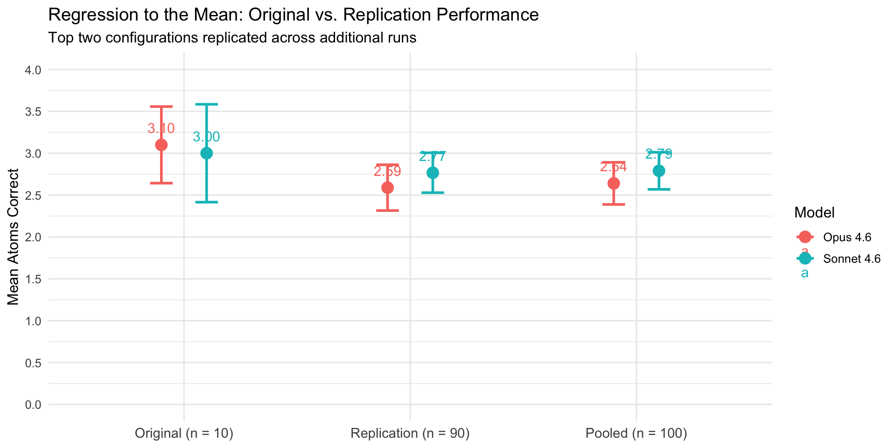
Code
if (n_replication_runs > 0) {
# Per-run breakdown
per_run <- play_data |>
semi_join(replicated_conditions,
by = c("model_name", "prompt_style", "enable_thinking",
"vot_grid_state", "vot_ray_trace", "vot_hypothesis")) |>
mutate(run_label = ifelse(source == "original", "Original",
paste0("Run ", as.integer(factor(run_id))))) |>
group_by(model_name, run_label) |>
summarise(
n = n(),
mean_correct = mean(atoms_correct),
se = sd(atoms_correct) / sqrt(n()),
.groups = "drop"
) |>
mutate(run_label = factor(run_label, levels = c("Original", paste0("Run ", 1:20))))
p_per_run <- ggplot(per_run, aes(x = run_label, y = mean_correct, fill = model_name)) +
geom_col(position = position_dodge(width = 0.7), width = 0.6) +
geom_errorbar(aes(ymin = mean_correct - 1.96 * se,
ymax = pmin(mean_correct + 1.96 * se, 4)),
position = position_dodge(width = 0.7), width = 0.2) +
geom_text(aes(label = sprintf("%.2f", mean_correct)),
vjust = -0.5, size = 3.5, position = position_dodge(width = 0.7)) +
scale_y_continuous(limits = c(0, 4.2), breaks = seq(0, 4, 0.5)) +
labs(
title = "Performance Across Runs",
subtitle = "Same 10 game boards, identical model configuration — each bar is one complete run",
x = NULL, y = "Mean Atoms Correct", fill = "Model"
) +
theme_minimal(base_size = 12)
print(p_per_run)
}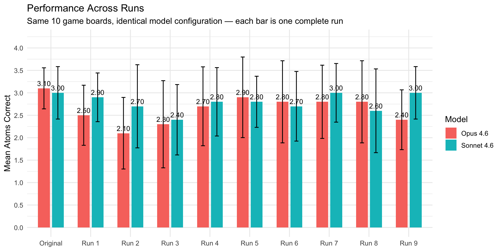
4.2.3.1 Variance Analysis
Code
if (n_replication_runs > 0) {
# Per-config reliability across runs
config_reliability <- play_data |>
semi_join(replicated_conditions,
by = c("model_name", "prompt_style", "enable_thinking",
"vot_grid_state", "vot_ray_trace", "vot_hypothesis")) |>
group_by(model_name, config_index) |>
summarise(
n_games = n(),
mean_correct = mean(atoms_correct),
sd_correct = sd(atoms_correct),
min_correct = min(atoms_correct),
max_correct = max(atoms_correct),
always_perfect = all(atoms_correct == 4),
ever_zero = any(atoms_correct == 0),
.groups = "drop"
)
# Heatmap: config × run, colored by atoms correct
heatmap_data <- play_data |>
semi_join(replicated_conditions,
by = c("model_name", "prompt_style", "enable_thinking",
"vot_grid_state", "vot_ray_trace", "vot_hypothesis")) |>
mutate(run_label = ifelse(source == "original", "Original",
paste0("Run ", as.integer(factor(run_id)))))
p_heatmap <- ggplot(heatmap_data,
aes(x = run_label, y = factor(config_index), fill = atoms_correct)) +
geom_tile(color = "white", linewidth = 0.5) +
geom_text(aes(label = atoms_correct), size = 4, fontface = "bold") +
scale_fill_gradient2(low = "#c62828", mid = "#fff176", high = "#2e7d32",
midpoint = 2, limits = c(0, 4),
name = "Atoms\nCorrect") +
facet_wrap(~model_name, ncol = 2) +
labs(
title = "Per-Configuration Reliability Across Runs",
subtitle = "Some configurations are reliably solved (all green), others swing between failure and success",
x = NULL, y = "Game Configuration"
) +
theme_minimal(base_size = 12) +
theme(axis.text.x = element_text(angle = 45, hjust = 1))
print(p_heatmap)
# Distribution: histogram of atoms correct for replicated configs
p_dist <- ggplot(heatmap_data, aes(x = atoms_correct, fill = source)) +
geom_histogram(binwidth = 1, position = "dodge", color = "white") +
facet_wrap(~model_name) +
scale_x_continuous(breaks = 0:4) +
scale_fill_manual(values = c("original" = "#3498db", "replication" = "#e74c3c"),
labels = c("original" = "Original", "replication" = "Replication")) +
labs(
title = "Distribution of Atoms Correct: Original vs. Replication",
subtitle = "Bimodal pattern: models either solve the configuration fully or fail substantially",
x = "Atoms Correct", y = "Count", fill = "Source"
) +
theme_minimal(base_size = 12)
print(p_dist)
}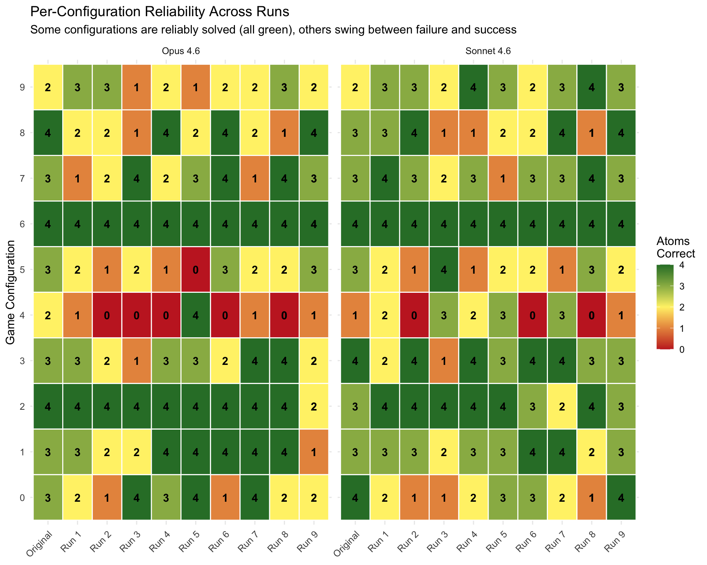
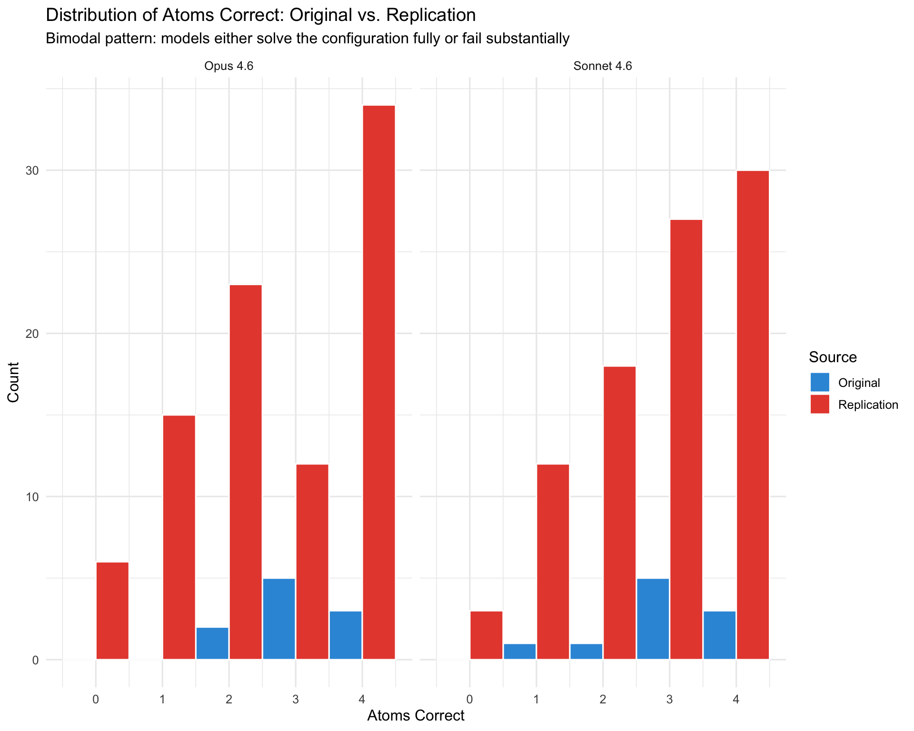
4.2.3.2 Statistical Tests
Code
if (n_replication_runs > 0) {
# Run tests for each replicated model config
test_results <- replicated_conditions |>
pmap_dfr(function(model_name, prompt_style, enable_thinking,
vot_grid_state, vot_ray_trace, vot_hypothesis) {
orig <- play_data_original |>
filter(model_name == !!model_name, prompt_style == !!prompt_style,
enable_thinking == !!enable_thinking,
vot_grid_state == !!vot_grid_state,
vot_ray_trace == !!vot_ray_trace,
vot_hypothesis == !!vot_hypothesis) |>
pull(atoms_correct)
repl <- replication_data |>
filter(model_name == !!model_name, prompt_style == !!prompt_style,
enable_thinking == !!enable_thinking,
vot_grid_state == !!vot_grid_state,
vot_ray_trace == !!vot_ray_trace,
vot_hypothesis == !!vot_hypothesis) |>
pull(atoms_correct)
if (length(orig) < 2 || length(repl) < 2) return(NULL)
# Welch's t-test
t_res <- t.test(orig, repl)
# Mann-Whitney U
w_res <- wilcox.test(orig, repl, conf.int = TRUE)
# Bootstrap: P(sample of n_orig from replication >= observed original mean)
set.seed(42)
orig_mean <- mean(orig)
n_boot <- 100000
boot_means <- replicate(n_boot, mean(sample(repl, length(orig), replace = TRUE)))
p_lucky <- mean(boot_means >= orig_mean)
tibble(
model = model_name,
n_orig = length(orig),
n_repl = length(repl),
orig_mean = mean(orig),
repl_mean = mean(repl),
delta = mean(orig) - mean(repl),
t_stat = t_res$statistic,
t_p = t_res$p.value,
w_p = w_res$p.value,
boot_ci_lower = quantile(boot_means - orig_mean, 0.025) + orig_mean,
boot_ci_upper = quantile(boot_means - orig_mean, 0.975) + orig_mean,
p_lucky_draw = p_lucky
)
})
if (nrow(test_results) > 0) {
test_display <- test_results |>
mutate(
across(c(orig_mean, repl_mean, delta), ~round(., 2)),
t_stat = round(t_stat, 3),
t_p = format.pval(t_p, digits = 3, eps = 0.001),
w_p = format.pval(w_p, digits = 3, eps = 0.001),
p_lucky_draw = paste0(round(p_lucky_draw * 100, 1), "%")
) |>
select(model, n_orig, n_repl, orig_mean, repl_mean, delta, t_p, w_p, p_lucky_draw)
kable(test_display,
col.names = c("Model", "n (orig)", "n (repl)", "M (orig)", "M (repl)",
"Δ", "Welch p", "Mann-Whitney p", "P(lucky draw)"),
caption = "Statistical tests comparing original vs. replication performance. P(lucky draw) = probability of observing the original mean or higher by sampling from the replication distribution.")
}
}| Model | n (orig) | n (repl) | M (orig) | M (repl) | Δ | Welch p | Mann-Whitney p | P(lucky draw) |
|---|---|---|---|---|---|---|---|---|
| Opus 4.6 | 10 | 50 | 3.1 | 2.50 | 0.60 | 0.0581 | 0.243 | 9.3% |
| Sonnet 4.6 | 10 | 50 | 3.0 | 2.72 | 0.28 | 0.4222 | 0.536 | 26.7% |
4.2.3.3 Power Analysis
Code
if (n_replication_runs > 0) {
# Compute typical SD from pooled data
typical_sd <- play_data |>
semi_join(replicated_conditions,
by = c("model_name", "prompt_style", "enable_thinking",
"vot_grid_state", "vot_ray_trace", "vot_hypothesis")) |>
pull(atoms_correct) |>
sd()
power_table <- expand.grid(
delta = c(0.25, 0.50, 0.75, 1.00, 1.50),
target_power = c(0.80, 0.90)
) |>
mutate(
n_needed = ceiling(2 * (qnorm(1 - 0.05/2) + qnorm(target_power))^2 * typical_sd^2 / delta^2),
power_at_10 = pnorm(delta / (typical_sd * sqrt(2/10)) - qnorm(1 - 0.05/2))
)
power_display <- power_table |>
mutate(
power_at_10 = paste0(round(power_at_10 * 100, 1), "%"),
target_power = paste0(target_power * 100, "%")
) |>
select(delta, target_power, n_needed, power_at_10)
kable(power_display,
col.names = c("Effect Size (Δ atoms)", "Target Power", "n Needed (per group)", "Power at n = 10"),
caption = paste0("Power analysis for detecting differences in atoms correct (SD = ",
round(typical_sd, 2),
"). At n = 10, only large effects (Δ ≥ 1.5 atoms) are reliably detectable."))
}| Effect Size (Δ atoms) | Target Power | n Needed (per group) | Power at n = 10 |
|---|---|---|---|
| 0.25 | 80% | 359 | 6.8% |
| 0.50 | 80% | 90 | 15.3% |
| 0.75 | 80% | 40 | 28.9% |
| 1.00 | 80% | 23 | 46.5% |
| 1.50 | 80% | 10 | 80.1% |
| 0.25 | 90% | 481 | 6.8% |
| 0.50 | 90% | 121 | 15.3% |
| 0.75 | 90% | 54 | 28.9% |
| 1.00 | 90% | 31 | 46.5% |
| 1.50 | 90% | 14 | 80.1% |
4.2.3.4 Interpretation
The replication reveals that Play mode performance is highly stochastic at the individual game level. The original n = 10 results placed the top configuration at 3.1 atoms correct. 5 additional runs of the same configuration on the same 10 game boards produced a replication mean of 2.5 (pooled: 2.6). The original result, while within the plausible range, sat at the 91th percentile of the replication distribution.
This variance is itself diagnostic. The heatmap above shows that some configurations (notably 2 and 6) are solved perfectly across every run — the models have reliable access to whatever reasoning these boards require. Other configurations swing between 0/4 and 4/4 across runs, suggesting the models either find a productive reasoning path or do not, with little middle ground. This bimodal pattern is more consistent with stochastic access to a reasoning strategy than consistent partial competence.
The practical implication: at n = 10 per configuration, statistical power is only 46 % to detect a 1-atom difference between conditions. Factor-level conclusions (model, prompt style, thinking) — which aggregate over 40–80+ games — remain robust. Configuration-level rankings should be interpreted with the wide confidence intervals shown in the pooled leaderboard above.
4.2.4 ANOVA: Play Mode Performance
Full factorial ANOVA using mixed-effects models with configuration-level random effects. Covariates (mean_atoms_per_ray, mean_cells_per_ray) capture ray difficulty.
Code
# Convert factors
play_data <- play_data |>
mutate(
model_name = factor(model_name, levels = order_model_names(model_name)),
prompt_style = factor(prompt_style, levels = c("baseline", "augmented")),
enable_thinking = factor(enable_thinking, levels = c(FALSE, TRUE))
)
# Build model formula dynamically
has_model_var <- length(unique(play_data$model_name)) > 1
has_prompt_var <- length(unique(play_data$prompt_style)) > 1
has_thinking_var <- length(unique(play_data$enable_thinking)) > 1
has_vot_var <- length(unique(play_data$vot_condition)) > 1
# Build main formula
formula_parts <- c()
if (has_model_var) formula_parts <- c(formula_parts, "model_name")
if (has_prompt_var) formula_parts <- c(formula_parts, "prompt_style")
if (has_thinking_var) formula_parts <- c(formula_parts, "enable_thinking")
if (has_model_var && has_prompt_var && has_thinking_var) {
main_formula <- "model_name * prompt_style * enable_thinking"
} else {
main_formula <- paste(formula_parts, collapse = " + ")
}
# Add VoT condition factor
if (has_vot_var) {
atoms_formula <- paste0("atoms_correct ~ ", main_formula, " + vot_condition",
" + mean_cells_per_ray + mean_atoms_per_ray + (1 | config_index)")
} else {
atoms_formula <- paste0("atoms_correct ~ ", main_formula,
" + mean_cells_per_ray + mean_atoms_per_ray + (1 | config_index)")
}
model_atoms <- lmer(as.formula(atoms_formula), data = play_data)4.2.4.1 Model 1: Atoms Correct (0-4)
Testing which factors affect the number of atoms correctly identified.
Model formula: atoms_correct ~ model_name * prompt_style * enable_thinking + vot_condition + mean_cells_per_ray + mean_atoms_per_ray + (1 | config_index)
Analysis of Deviance Table (Type III Wald chisquare tests)
Response: atoms_correct
Chisq Df Pr(>Chisq)
(Intercept) 43.5920 1 4.045e-11 ***
model_name 2.1593 4 0.70649
prompt_style 0.0927 1 0.76074
enable_thinking 1.0319 1 0.30971
vot_condition 3.1318 3 0.37174
mean_cells_per_ray 18.8698 1 1.400e-05 ***
mean_atoms_per_ray 23.0973 1 1.540e-06 ***
model_name:prompt_style 5.6717 4 0.22505
model_name:enable_thinking 11.2926 4 0.02346 *
prompt_style:enable_thinking 4.7599 1 0.02913 *
model_name:prompt_style:enable_thinking 9.1250 4 0.05805 .
---
Signif. codes: 0 '***' 0.001 '**' 0.01 '*' 0.05 '.' 0.1 ' ' 1 Groups Name Std.Dev.
config_index (Intercept) 0.75918
Residual 0.87847 Random Effects — Configuration (config_index) variance accounts for config-level difficulty and allows generalization beyond these 10 configurations.
ICC: 0.428 — Proportion of variance due to configuration clustering
Model Fit: - Marginal R² (fixed effects only): 0.254 - Conditional R² (fixed + random effects): 0.573
Code
# Model 2: Score (main effects with config random effects)
if (has_vot_var) {
score_formula <- paste0("score ~ ", main_formula, " + vot_condition",
" + mean_cells_per_ray + mean_atoms_per_ray + (1 | config_index)")
} else {
score_formula <- paste0("score ~ ", main_formula,
" + mean_cells_per_ray + mean_atoms_per_ray + (1 | config_index)")
}
model_score <- lmer(as.formula(score_formula), data = play_data)4.2.4.2 Model 2: Score (Lower is Better)
Testing which factors affect game score.
Model formula: score ~ model_name * prompt_style * enable_thinking + vot_condition + mean_cells_per_ray + mean_atoms_per_ray + (1 | config_index)
Analysis of Deviance Table (Type III Wald chisquare tests)
Response: score
Chisq Df Pr(>Chisq)
(Intercept) 42.4927 1 7.095e-11 ***
model_name 0.8147 4 0.936465
prompt_style 2.8648 1 0.090536 .
enable_thinking 17.7025 1 2.583e-05 ***
vot_condition 30.4985 3 1.084e-06 ***
mean_cells_per_ray 84.5967 1 < 2.2e-16 ***
mean_atoms_per_ray 2.6739 1 0.102003
model_name:prompt_style 13.8781 4 0.007694 **
model_name:enable_thinking 7.0238 4 0.134637
prompt_style:enable_thinking 0.1750 1 0.675677
model_name:prompt_style:enable_thinking 11.6767 4 0.019924 *
---
Signif. codes: 0 '***' 0.001 '**' 0.01 '*' 0.05 '.' 0.1 ' ' 1 Groups Name Std.Dev.
config_index (Intercept) 6.3369
Residual 5.5705 ICC: 0.564
Model Fit: - Marginal R²: 0.233 - Conditional R²: 0.666
### Effect Modification by Ray Complexity (Play Mode)
Does ray complexity (mean atoms per ray) moderate treatment effects?
::: {.cell}
```{.r .cell-code}
run_play_effect_mod <- has_model_var || has_prompt_var || has_thinking_var || has_vot_var
if (run_play_effect_mod) {
# Build interaction formula with random effect
interaction_parts <- c()
if (has_model_var) interaction_parts <- c(interaction_parts, "model_name * mean_atoms_per_ray")
if (has_prompt_var) interaction_parts <- c(interaction_parts, "prompt_style * mean_atoms_per_ray")
if (has_thinking_var) interaction_parts <- c(interaction_parts, "enable_thinking * mean_atoms_per_ray")
if (has_vot_var) interaction_parts <- c(interaction_parts, "vot_condition * mean_atoms_per_ray")
atoms_mod_formula <- paste0("atoms_correct ~ ",
paste(interaction_parts, collapse = " + "),
" + (1 | config_index)")
score_mod_formula <- paste0("score ~ ",
paste(interaction_parts, collapse = " + "),
" + (1 | config_index)")
model_atoms_mod <- lmer(as.formula(atoms_mod_formula), data = play_data)
model_score_mod <- lmer(as.formula(score_mod_formula), data = play_data)
}:::
Atoms Correct Model: atoms_correct ~ model_name * mean_atoms_per_ray + prompt_style * mean_atoms_per_ray + enable_thinking * mean_atoms_per_ray + vot_condition * mean_atoms_per_ray + (1 | config_index)
Analysis of Deviance Table (Type III Wald chisquare tests)
Response: atoms_correct
Chisq Df Pr(>Chisq)
(Intercept) 6.7132 1 0.009570 **
model_name 3.6452 4 0.456146
mean_atoms_per_ray 2.8742 1 0.090011 .
prompt_style 7.0969 1 0.007722 **
enable_thinking 20.8291 1 5.021e-06 ***
vot_condition 6.8416 3 0.077121 .
model_name:mean_atoms_per_ray 0.1109 4 0.998517
mean_atoms_per_ray:prompt_style 0.3816 1 0.536744
mean_atoms_per_ray:enable_thinking 2.6229 1 0.105331
mean_atoms_per_ray:vot_condition 9.7770 3 0.020560 *
---
Signif. codes: 0 '***' 0.001 '**' 0.01 '*' 0.05 '.' 0.1 ' ' 1Score Model: score ~ model_name * mean_atoms_per_ray + prompt_style * mean_atoms_per_ray + enable_thinking * mean_atoms_per_ray + vot_condition * mean_atoms_per_ray + (1 | config_index)
Analysis of Deviance Table (Type III Wald chisquare tests)
Response: score
Chisq Df Pr(>Chisq)
(Intercept) 142.0486 1 < 2.2e-16 ***
model_name 0.7418 4 0.9460697
mean_atoms_per_ray 11.2498 1 0.0007963 ***
prompt_style 17.8356 1 2.408e-05 ***
enable_thinking 25.9191 1 3.560e-07 ***
vot_condition 8.6551 3 0.0342459 *
model_name:mean_atoms_per_ray 0.7354 4 0.9468903
mean_atoms_per_ray:prompt_style 11.0087 1 0.0009068 ***
mean_atoms_per_ray:enable_thinking 0.6080 1 0.4355559
mean_atoms_per_ray:vot_condition 14.5605 3 0.0022335 **
---
Signif. codes: 0 '***' 0.001 '**' 0.01 '*' 0.05 '.' 0.1 ' ' 14.2.5 Regression Analysis: Play Mode
Regression complements ANOVA by providing interpretable effect magnitudes. Coefficients show the expected change in outcome per unit change in predictor.
Code
# Build formula with factors that have variation
regression_parts <- formula_parts # From earlier: model_name, prompt_style, enable_thinking
if (has_vot_var) regression_parts <- c(regression_parts, "vot_condition")
regression_parts <- c(regression_parts, "mean_atoms_per_ray", "mean_cells_per_ray")
atoms_reg_formula <- paste0("atoms_correct ~ ", paste(regression_parts, collapse = " + "),
" + (1 | config_index)")
lmer_atoms <- lmer(as.formula(atoms_reg_formula), data = play_data)
# Tidy summary (fixed effects only)
atoms_reg_summary <- tidy(lmer_atoms, effects = "fixed", conf.int = TRUE) |>
mutate(across(c(estimate, conf.low, conf.high, statistic), ~round(., 3)),
p.value = format.pval(p.value, digits = 3, eps = 0.001)) |>
select(term, estimate, std.error, statistic, p.value, conf.low, conf.high)
kable(atoms_reg_summary,
col.names = c("Term", "β (Coefficient)", "SE", "t-statistic", "p-value", "95% CI Lower", "95% CI Upper"),
caption = "Regression Coefficients: Atoms Correct (Fixed Effects)")| Term | β (Coefficient) | SE | t-statistic | p-value | 95% CI Lower | 95% CI Upper |
|---|---|---|---|---|---|---|
| (Intercept) | 2.512 | 0.4342255 | 5.786 | <0.001 | 1.647 | 3.378 |
| model_nameSonnet 4.5 | 0.143 | 0.1010473 | 1.413 | 0.158 | -0.055 | 0.341 |
| model_nameSonnet 4.6 | 0.553 | 0.0958010 | 5.772 | <0.001 | 0.365 | 0.741 |
| model_nameOpus 4.5 | 0.138 | 0.1010227 | 1.369 | 0.171 | -0.060 | 0.337 |
| model_nameOpus 4.6 | 0.430 | 0.0958889 | 4.480 | <0.001 | 0.241 | 0.618 |
| prompt_styleaugmented | 0.476 | 0.0619140 | 7.688 | <0.001 | 0.354 | 0.597 |
| enable_thinkingTRUE | 0.716 | 0.0619243 | 11.569 | <0.001 | 0.595 | 0.838 |
| vot_conditionA: Grid State | -0.008 | 0.0903876 | -0.091 | 0.927 | -0.186 | 0.169 |
| vot_conditionB: Ray Trace | 0.072 | 0.0842883 | 0.857 | 0.392 | -0.093 | 0.238 |
| vot_conditionC: Hypothesis | -0.138 | 0.0906261 | -1.528 | 0.127 | -0.316 | 0.039 |
| mean_atoms_per_ray | -0.876 | 0.1851624 | -4.732 | <0.001 | -1.240 | -0.513 |
| mean_cells_per_ray | -0.165 | 0.0399275 | -4.137 | <0.001 | -0.244 | -0.087 |
Code
r2_atoms_reg <- performance::r2_nakagawa(lmer_atoms)
# Model for Score
score_reg_formula <- paste0("score ~ ", paste(regression_parts, collapse = " + "),
" + (1 | config_index)")
lmer_score <- lmer(as.formula(score_reg_formula), data = play_data)
score_reg_summary <- tidy(lmer_score, effects = "fixed", conf.int = TRUE) |>
mutate(across(c(estimate, conf.low, conf.high, statistic), ~round(., 3)),
p.value = format.pval(p.value, digits = 3, eps = 0.001)) |>
select(term, estimate, std.error, statistic, p.value, conf.low, conf.high)
kable(score_reg_summary,
col.names = c("Term", "β (Coefficient)", "SE", "t-statistic", "p-value", "95% CI Lower", "95% CI Upper"),
caption = "Regression Coefficients: Score (Fixed Effects)")| Term | β (Coefficient) | SE | t-statistic | p-value | 95% CI Lower | 95% CI Upper |
|---|---|---|---|---|---|---|
| (Intercept) | 22.012 | 3.0698693 | 7.170 | <0.001 | 15.816 | 28.209 |
| model_nameSonnet 4.5 | -0.152 | 0.6382827 | -0.238 | 0.812 | -1.405 | 1.101 |
| model_nameSonnet 4.6 | -0.135 | 0.6051458 | -0.223 | 0.824 | -1.323 | 1.053 |
| model_nameOpus 4.5 | -0.469 | 0.6381292 | -0.735 | 0.463 | -1.721 | 0.784 |
| model_nameOpus 4.6 | -0.202 | 0.6057037 | -0.333 | 0.739 | -1.390 | 0.987 |
| prompt_styleaugmented | -1.488 | 0.3911059 | -3.804 | <0.001 | -2.256 | -0.720 |
| enable_thinkingTRUE | -6.635 | 0.3911688 | -16.961 | <0.001 | -7.402 | -5.867 |
| vot_conditionA: Grid State | 0.751 | 0.5709503 | 1.316 | 0.189 | -0.369 | 1.872 |
| vot_conditionB: Ray Trace | -0.462 | 0.5324215 | -0.867 | 0.386 | -1.507 | 0.583 |
| vot_conditionC: Hypothesis | 2.509 | 0.5724804 | 4.383 | <0.001 | 1.386 | 3.633 |
| mean_atoms_per_ray | -2.095 | 1.1790355 | -1.777 | 0.076 | -4.409 | 0.219 |
| mean_cells_per_ray | 2.167 | 0.2531124 | 8.560 | <0.001 | 1.670 | 2.663 |
Code
r2_score_reg <- performance::r2_nakagawa(lmer_score)
# Standardized coefficients for comparison
std_coef_atoms <- standardize_parameters(lmer_atoms, method = "refit")
std_coef_score <- standardize_parameters(lmer_score, method = "refit")Model Fit — Atoms Correct: - Marginal R²: 0.226 - Conditional R²: 0.547
Model Fit — Score: - Marginal R²: 0.209 - Conditional R²: 0.652
4.2.5.1 Standardized Coefficients (Beta Weights)
Allows comparison of relative importance across fixed effects (based on fixed effects only).
Atoms Correct (Top 10):
# Standardization method: refit
Parameter | Std. Coef. | 95% CI
---------------------------------------------------------
enable thinking [TRUE] | 0.50 | [ 0.42, 0.59]
model name [Sonnet 4.6] | 0.39 | [ 0.26, 0.52]
prompt style [augmented] | 0.33 | [ 0.25, 0.42]
model name [Opus 4.6] | 0.30 | [ 0.17, 0.43]
mean atoms per ray | -0.18 | [-0.25, -0.10]
mean cells per ray | -0.11 | [-0.17, -0.06]
model name [Sonnet 4.5] | 0.10 | [-0.04, 0.24]
vot conditionC × Hypothesis | -0.10 | [-0.22, 0.03]
model name [Opus 4.5] | 0.10 | [-0.04, 0.24]
vot conditionB × Ray Trace | 0.05 | [-0.07, 0.17]Score (Top 10):
# Standardization method: refit
Parameter | Std. Coef. | 95% CI
---------------------------------------------------------
enable thinking [TRUE] | -0.69 | [-0.78, -0.61]
vot conditionC × Hypothesis | 0.26 | [ 0.15, 0.38]
mean cells per ray | 0.22 | [ 0.17, 0.27]
prompt style [augmented] | -0.16 | [-0.24, -0.08]
vot conditionA × Grid State | 0.08 | [-0.04, 0.20]
mean atoms per ray | -0.06 | [-0.13, 0.01]
model name [Opus 4.5] | -0.05 | [-0.18, 0.08]
vot conditionB × Ray Trace | -0.05 | [-0.16, 0.06]
model name [Opus 4.6] | -0.02 | [-0.15, 0.10]
model name [Sonnet 4.5] | -0.02 | [-0.15, 0.12]4.2.6 Interpretation: Why Configuration Random Effects?
Play mode data structure: - Unit of analysis: Entire games (one game per config × condition) - LLM chooses which rays to fire (endogenous ray selection) - Different conditions may fire different rays - Multiple games per configuration (clustering)
Why config-level random effects?
- Games within same config share atom placement
- Some configs are inherently harder/easier (random variation)
- Generalizes inference beyond these 10 specific configurations
- Accounts for correlation among games within same config
Why NOT ray-level random effects (unlike Predict mode)?
- Rays are not predetermined—LLM chooses them
- Different conditions may fire different rays
- Ray selection is part of the strategy (endogenous)
- No repeated measures at individual ray level
Covariates (mean_cells_per_ray, mean_atoms_per_ray): - NOT confounders: Ray choice is endogenous to experimental condition - ARE precision variables: Describe difficulty of rays LLM chose to fire - Improve model fit: Explain variance, increase power
Impact of ignoring config-level clustering: - Underestimates standard errors - Inflates Type I error (false positives) - Invalid inference (cannot generalize beyond these 10 configs)
::: {.cell}
```{.r .cell-code}
# Calculate mean atoms correct and 95% CI for all configurations
play_forest_data <- play_data |>
mutate(
# Create readable configuration labels
config_label = paste0(
model_name, " | ",
ifelse(prompt_style == "augmented", "Aug", "Base"), " | ",
ifelse(as.logical(enable_thinking), "Think", "No-Think"), " | ",
gsub("^[A-C]: ", "", as.character(vot_condition))
)
) |>
group_by(config_label, model_name, prompt_style, enable_thinking, vot_condition) |>
summarise(
n = n(),
mean_correct = mean(atoms_correct),
se = sd(atoms_correct) / sqrt(n()),
ci_lower = mean_correct - 1.96 * se,
ci_upper = mean_correct + 1.96 * se,
.groups = "drop"
) |>
arrange(desc(mean_correct)) |>
mutate(
config_label = factor(config_label, levels = config_label)
)
# Forest plot
p_play_forest <- ggplot(play_forest_data, aes(x = mean_correct, y = config_label)) +
geom_point(aes(color = model_name), size = 3) +
geom_errorbarh(aes(xmin = ci_lower, xmax = ci_upper, color = model_name),
height = 0.3, linewidth = 0.8) +
geom_vline(xintercept = 0.25, linetype = "dotted", color = "red", alpha = 0.7) +
geom_vline(xintercept = 1, linetype = "dashed", color = "gray50", alpha = 0.5) +
geom_text(aes(label = sprintf("%.2f", mean_correct)),
hjust = -0.3, size = 3) +
labs(
title = "Play Mode: All Configurations Ranked by Atoms Correct",
subtitle = "Dotted red line = chance (E[X] = 0.25). Dashed gray line = 1 atom.",
x = "Mean Atoms Correct",
y = "Configuration",
color = "Model"
) +
scale_x_continuous(
limits = c(0, 4),
breaks = seq(0, 4, 0.5)
) +
theme_minimal(base_size = 11) +
theme(
axis.text.y = element_text(size = 9, family = "mono"),
panel.grid.major.y = element_blank(),
panel.grid.minor = element_blank(),
legend.position = "top"
)
print(p_play_forest)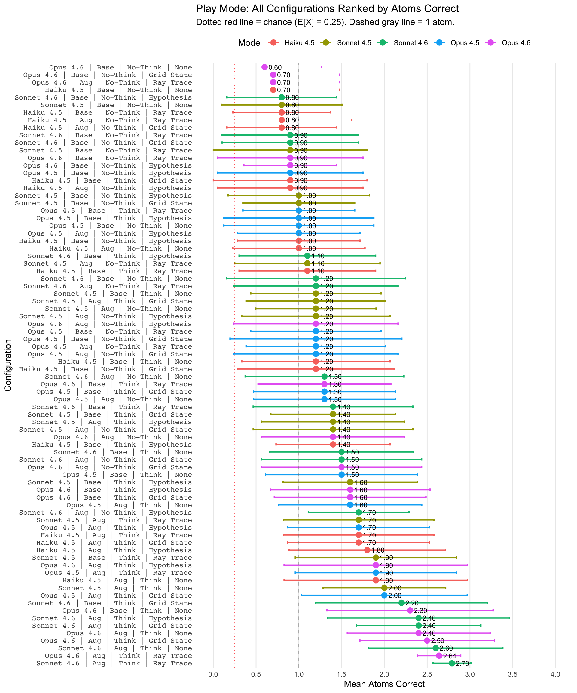
:::
Total configurations: 80 Best performing: Sonnet 4.6 | Aug | Think | Ray Trace (mean = 2.77 atoms correct)
Code
# Atoms correct by model and thinking
p1 <- ggplot(play_data, aes(x = model_name, y = atoms_correct, fill = enable_thinking)) +
geom_boxplot() +
facet_wrap(~prompt_style) +
labs(title = "Atoms Correct by Model, Thinking, and Prompt Style",
x = "Model", y = "Atoms Correct (0-4)", fill = "Thinking") +
theme(axis.text.x = element_text(angle = 45, hjust = 1))
print(p1)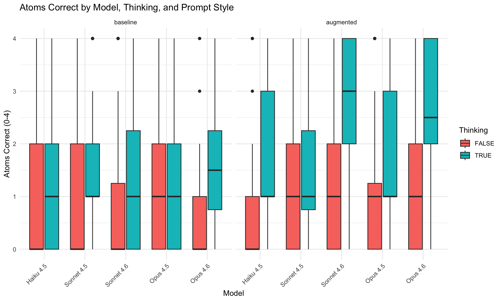
Code
# Score distribution
p2 <- ggplot(play_data, aes(x = model_name, y = score, fill = enable_thinking)) +
geom_boxplot() +
facet_wrap(~prompt_style) +
labs(title = "Score by Model, Thinking, and Prompt Style",
x = "Model", y = "Score (lower is better)", fill = "Thinking") +
theme(axis.text.x = element_text(angle = 45, hjust = 1))
print(p2)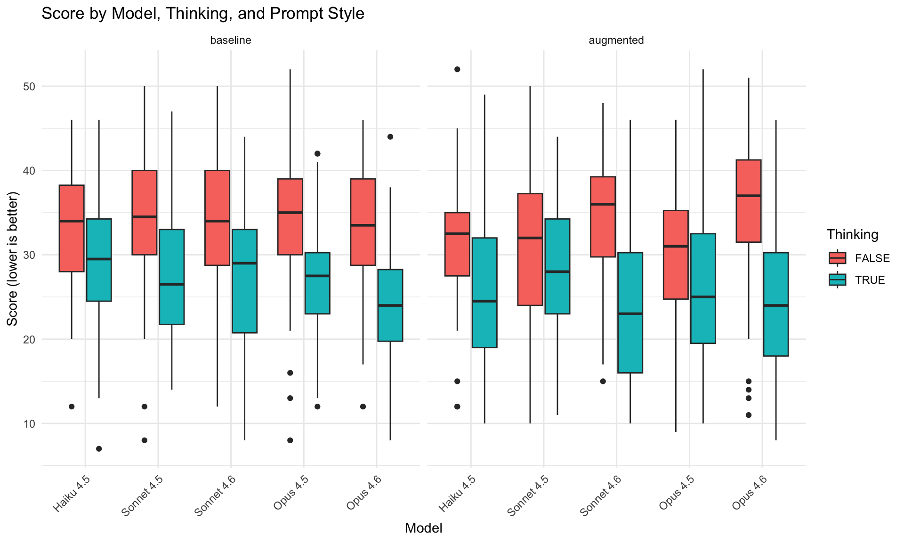
Code
# Mean atoms per ray relationship with performance
p3 <- ggplot(play_data, aes(x = mean_atoms_per_ray, y = atoms_correct, color = model_name)) +
geom_point(alpha = 0.5) +
geom_smooth(method = "lm", se = FALSE) +
labs(title = "Performance vs Ray Complexity",
x = "Mean Atoms Affecting Each Ray", y = "Atoms Correct",
color = "Model") +
theme_minimal()
print(p3)
Code
# Interaction plot: Prompt Style × Thinking
p4 <- ggplot(play_data, aes(x = prompt_style, y = atoms_correct,
color = enable_thinking, group = enable_thinking)) +
stat_summary(fun = mean, geom = "point", size = 3) +
stat_summary(fun = mean, geom = "line", linewidth = 1) +
stat_summary(fun.data = mean_se, geom = "errorbar", width = 0.1) +
labs(title = "Prompt Style × Thinking Interaction",
x = "Prompt Style", y = "Atoms Correct (mean ± SE)",
color = "Thinking") +
theme_minimal()
print(p4)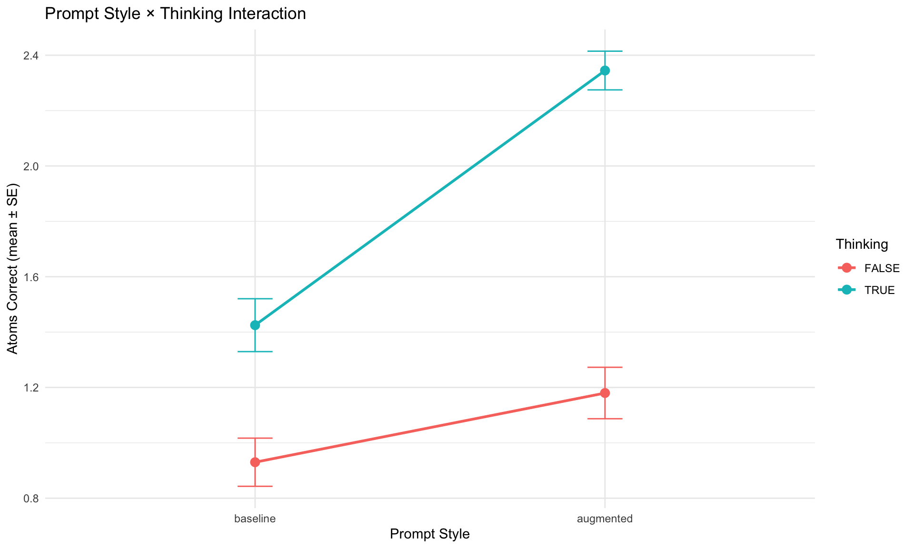
Code
# VoT condition effect on atoms correct
p5 <- ggplot(play_data, aes(x = vot_condition, y = atoms_correct, fill = vot_condition)) +
geom_boxplot() +
facet_wrap(~model_name) +
labs(title = "Effect of VoT Condition on Atoms Correct",
x = "VoT Condition", y = "Atoms Correct (0-4)", fill = "VoT") +
theme(axis.text.x = element_text(angle = 45, hjust = 1))
print(p5)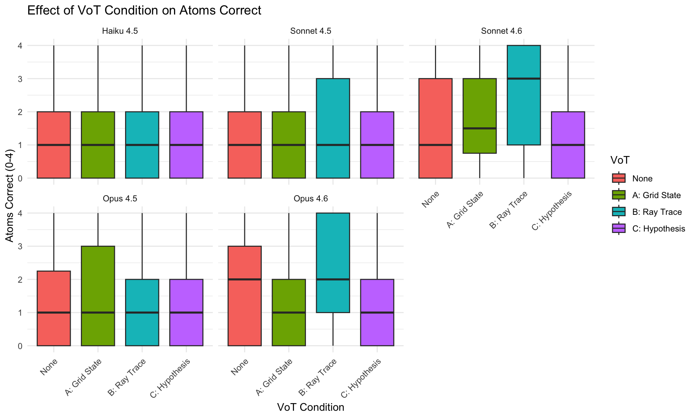
Code
# VoT condition effect on score
p6 <- ggplot(play_data, aes(x = vot_condition, y = score, fill = vot_condition)) +
geom_boxplot() +
facet_wrap(~model_name) +
labs(title = "Effect of VoT Condition on Score",
x = "VoT Condition", y = "Score (lower is better)", fill = "VoT") +
theme(axis.text.x = element_text(angle = 45, hjust = 1))
print(p6)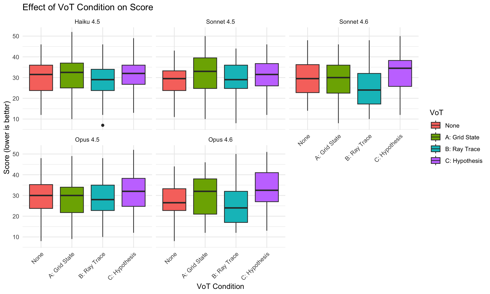
4.3 Predict vs Play: Cross-Mode Comparison
This section examines whether configuration difficulty and model performance are consistent across the two reasoning modes. Predict mode tests forward reasoning (given atoms, predict ray behavior), while Play mode tests inverse reasoning (observe ray behavior, infer atom locations). If forward and inverse reasoning rely on shared spatial representations, we expect configuration difficulty and model rankings to correlate across modes.
Code
# Predict: accuracy by configuration (aggregated across all conditions)
predict_by_config <- predict_data |>
mutate(config_index = as.integer(config_index)) |>
group_by(config_index) |>
summarise(
predict_n = n(),
predict_accuracy = mean(correct),
predict_se = sqrt(predict_accuracy * (1 - predict_accuracy) / predict_n),
.groups = "drop"
)
# Play: performance by configuration (aggregated across all conditions)
play_by_config <- play_data |>
mutate(config_index = as.integer(config_index)) |>
group_by(config_index) |>
summarise(
play_n = n(),
play_atoms_correct = mean(atoms_correct),
play_atoms_sd = sd(atoms_correct),
play_score = mean(score),
play_score_sd = sd(score),
.groups = "drop"
)
# Join predict and play by configuration
cross_mode <- inner_join(predict_by_config, play_by_config, by = "config_index") |>
mutate(across(where(is.numeric) & !c(config_index, predict_n, play_n),
\(x) round(x, 3)))
kable(cross_mode,
col.names = c("Config", "N (Predict)", "Accuracy", "SE",
"N (Play)", "Atoms Correct (M)", "Atoms Correct (SD)",
"Score (M)", "Score (SD)"),
caption = "Configuration-Level Performance: Predict vs Play Mode")| Config | N (Predict) | Accuracy | SE | N (Play) | Atoms Correct (M) | Atoms Correct (SD) | Score (M) | Score (SD) |
|---|---|---|---|---|---|---|---|---|
| 1 | 1035 | 0.671 | 0.015 | 90 | 2.100 | 0.835 | 27.156 | 6.631 |
| 2 | 990 | 0.794 | 0.013 | 90 | 2.344 | 1.609 | 23.122 | 7.936 |
| 3 | 1125 | 0.780 | 0.012 | 90 | 1.467 | 1.201 | 26.811 | 7.588 |
| 4 | 1260 | 0.717 | 0.013 | 90 | 0.456 | 0.837 | 39.911 | 7.469 |
| 5 | 810 | 0.799 | 0.014 | 90 | 0.878 | 0.934 | 34.878 | 6.525 |
| 6 | 945 | 0.820 | 0.012 | 90 | 3.811 | 0.559 | 15.544 | 5.376 |
| 7 | 1080 | 0.829 | 0.011 | 90 | 0.733 | 1.149 | 33.511 | 8.655 |
| 8 | 1035 | 0.682 | 0.014 | 90 | 1.211 | 1.033 | 30.611 | 6.517 |
| 9 | 1125 | 0.808 | 0.012 | 90 | 1.456 | 0.996 | 27.256 | 5.703 |
4.3.1 Difficulty Profile Correlation
Code
# Correlation between predict accuracy and play atoms correct
cor_atoms <- cor.test(cross_mode$predict_accuracy, cross_mode$play_atoms_correct)
cor_score <- cor.test(cross_mode$predict_accuracy, cross_mode$play_score)
p_cross1 <- ggplot(cross_mode, aes(x = predict_accuracy, y = play_atoms_correct)) +
geom_point(size = 3) +
geom_smooth(method = "lm", se = TRUE, alpha = 0.2) +
geom_text(aes(label = config_index), vjust = -0.8, size = 3) +
labs(
title = "Configuration Difficulty: Predict Accuracy vs Play Atoms Correct",
subtitle = paste0("r = ", round(cor_atoms$estimate, 3),
", p = ", format.pval(cor_atoms$p.value, digits = 3)),
x = "Predict Mode Accuracy",
y = "Play Mode Atoms Correct (0–4)"
) +
scale_x_continuous(labels = scales::percent) +
theme_minimal()
p_cross2 <- ggplot(cross_mode, aes(x = predict_accuracy, y = play_score)) +
geom_point(size = 3) +
geom_smooth(method = "lm", se = TRUE, alpha = 0.2) +
geom_text(aes(label = config_index), vjust = -0.8, size = 3) +
labs(
title = "Configuration Difficulty: Predict Accuracy vs Play Score",
subtitle = paste0("r = ", round(cor_score$estimate, 3),
", p = ", format.pval(cor_score$p.value, digits = 3)),
x = "Predict Mode Accuracy",
y = "Play Mode Score (lower is better)"
) +
scale_x_continuous(labels = scales::percent) +
theme_minimal()
gridExtra::grid.arrange(p_cross1, p_cross2, ncol = 2)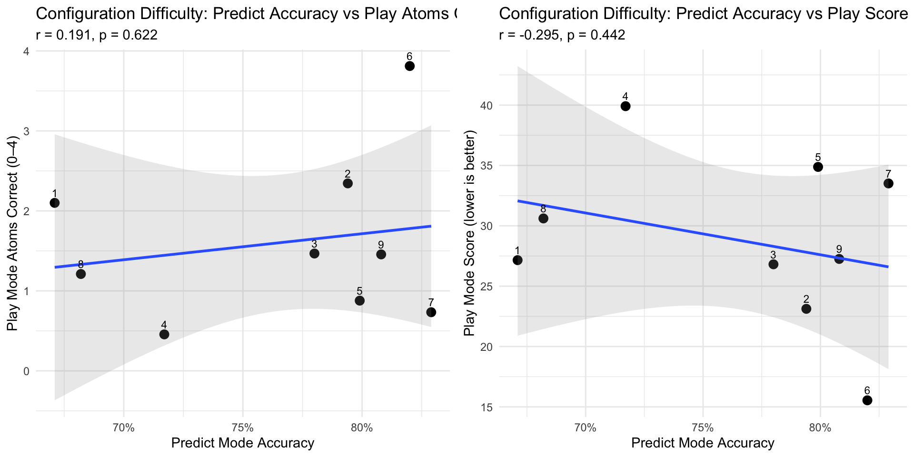
Configuration difficulty shows weak or no correlation across modes, suggesting forward and inverse reasoning may rely on different cognitive demands.
4.3.2 Model Rankings Across Modes
Code
# Predict: accuracy by model and configuration
predict_by_model_config <- predict_data |>
mutate(config_index = as.integer(config_index)) |>
group_by(model_name, config_index) |>
summarise(
predict_accuracy = mean(correct),
.groups = "drop"
)
# Play: atoms correct by model and configuration
play_by_model_config <- play_data |>
mutate(config_index = as.integer(config_index)) |>
group_by(model_name, config_index) |>
summarise(
play_atoms_correct = mean(atoms_correct),
.groups = "drop"
)
# Join by model and configuration
model_config_cross <- inner_join(predict_by_model_config, play_by_model_config,
by = c("model_name", "config_index"))
# Scatter: predict accuracy vs play atoms correct, colored by model
p_model_cross <- ggplot(model_config_cross,
aes(x = predict_accuracy, y = play_atoms_correct,
color = model_name)) +
geom_point(size = 2.5, alpha = 0.7) +
geom_smooth(method = "lm", se = FALSE, linewidth = 0.8) +
geom_text(aes(label = config_index), vjust = -0.6, size = 2.5, show.legend = FALSE) +
labs(
title = "Predict vs Play Performance by Model and Configuration",
x = "Predict Mode Accuracy",
y = "Play Mode Atoms Correct (0–4)",
color = "Model"
) +
scale_x_continuous(labels = scales::percent) +
theme_minimal() +
theme(legend.position = "top")
print(p_model_cross)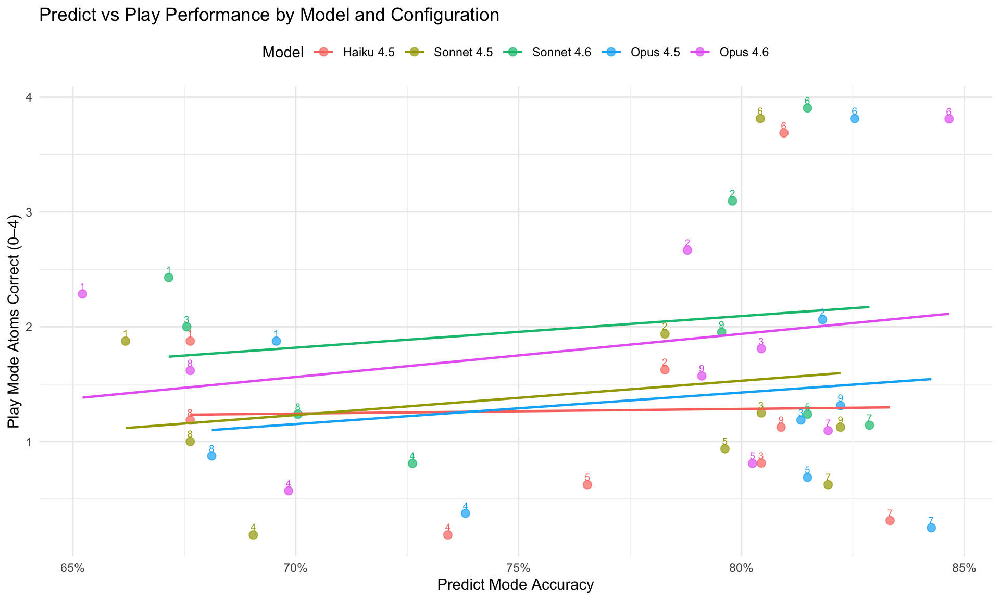
Code
# Per-model correlations
model_cors <- model_config_cross |>
group_by(model_name) |>
summarise(
n_configs = n(),
r = cor(predict_accuracy, play_atoms_correct),
.groups = "drop"
) |>
mutate(r = round(r, 3))
kable(model_cors,
col.names = c("Model", "N Configs", "r (Predict–Play)"),
caption = "Within-Model Correlation Between Predict Accuracy and Play Atoms Correct")| Model | N Configs | r (Predict–Play) |
|---|---|---|
| Haiku 4.5 | 9 | 0.022 |
| Sonnet 4.5 | 9 | 0.186 |
| Sonnet 4.6 | 9 | 0.174 |
| Opus 4.5 | 9 | 0.153 |
| Opus 4.6 | 9 | 0.260 |
4.3.3 Aggregate Model Performance Comparison
Code
# Model-level aggregates
predict_model_agg <- predict_data |>
group_by(model_name) |>
summarise(
predict_accuracy = mean(correct),
predict_se = sqrt(predict_accuracy * (1 - predict_accuracy) / n()),
.groups = "drop"
)
play_model_agg <- play_data |>
group_by(model_name) |>
summarise(
play_atoms_pct = mean(atoms_correct) / 4, # normalize to 0–1 scale
play_atoms_se = sd(atoms_correct) / (4 * sqrt(n())),
.groups = "drop"
)
model_comparison <- inner_join(predict_model_agg, play_model_agg, by = "model_name") |>
pivot_longer(
cols = c(predict_accuracy, play_atoms_pct),
names_to = "mode",
values_to = "performance"
) |>
mutate(
se = ifelse(mode == "predict_accuracy", predict_se, play_atoms_se),
mode = ifelse(mode == "predict_accuracy", "Predict (Accuracy)", "Play (Atoms Correct %)")
)
p_compare <- ggplot(model_comparison, aes(x = model_name, y = performance, fill = mode)) +
geom_col(position = position_dodge(width = 0.7), width = 0.6) +
geom_errorbar(aes(ymin = performance - 1.96 * se, ymax = performance + 1.96 * se),
position = position_dodge(width = 0.7), width = 0.2) +
scale_y_continuous(labels = scales::percent, limits = c(0, 1)) +
labs(
title = "Model Performance: Predict Accuracy vs Play Atoms Correct (%)",
subtitle = "Error bars show 95% confidence intervals. Play atoms correct normalized to 0–100% scale.",
x = "Model", y = "Performance", fill = "Mode"
) +
theme_minimal() +
theme(axis.text.x = element_text(angle = 45, hjust = 1),
legend.position = "top")
print(p_compare)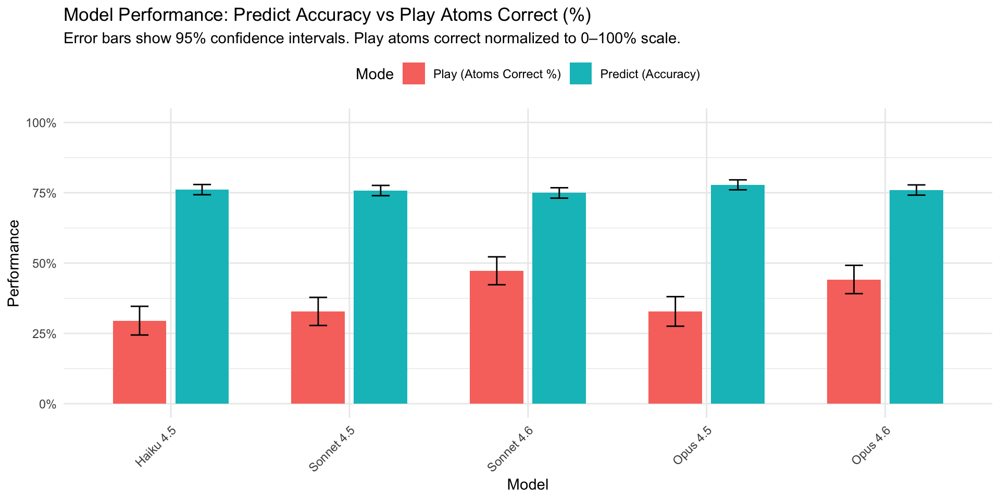
4.3.4 Forward–Inverse Reasoning Gap
Code
# Per-model gap between predict and play
gap_data <- inner_join(predict_model_agg, play_model_agg, by = "model_name") |>
mutate(
gap = predict_accuracy - play_atoms_pct,
gap_pct = paste0(round(gap * 100, 1), " pp")
)
kable(gap_data |>
mutate(across(c(predict_accuracy, play_atoms_pct, gap), \(x) round(x, 3))) |>
select(model_name, predict_accuracy, play_atoms_pct, gap, gap_pct),
col.names = c("Model", "Predict Accuracy", "Play Atoms %", "Gap", "Gap (pp)"),
caption = "Forward–Inverse Reasoning Gap by Model (positive = predict outperforms play)")| Model | Predict Accuracy | Play Atoms % | Gap | Gap (pp) |
|---|---|---|---|---|
| Haiku 4.5 | 0.761 | 0.295 | 0.466 | 46.6 pp |
| Sonnet 4.5 | 0.758 | 0.328 | 0.430 | 43 pp |
| Sonnet 4.6 | 0.749 | 0.473 | 0.277 | 27.7 pp |
| Opus 4.5 | 0.778 | 0.328 | 0.450 | 45 pp |
| Opus 4.6 | 0.760 | 0.442 | 0.318 | 31.8 pp |
All models show a positive gap: forward reasoning (predict) consistently outperforms inverse reasoning (play), consistent with the theoretical expectation that abductive inference is harder than deductive prediction.
4.4 Chance Performance Baseline
To interpret LLM performance meaningfully, we need a lower bound: what would happen if an agent simply guessed 4 atom positions at random with no information? This chance baseline establishes the floor of the performance corridor. Any agent that extracts meaningful signal from ray observations should substantially exceed this level.
4.4.1 Hypergeometric Derivation
An agent guessing 4 positions uniformly at random from the 64-cell grid, with 4 true atoms hidden, follows a hypergeometric distribution:
\[X \sim \text{Hypergeometric}(N=64,\; K=4,\; n=4)\]
where \(X\) counts the number of correctly guessed atoms. The probability mass function is:
\[P(X = k) = \frac{\binom{4}{k}\binom{60}{4-k}}{\binom{64}{4}}, \quad k = 0, 1, 2, 3, 4\]
The expected value is \(E[X] = nK/N = 4 \times 4 / 64 = 0.25\) atoms correct. Since the scoring formula is \(\text{score} = \text{rays\_used} + 5 \times \text{atoms\_missed}\), a random guesser who fires zero rays achieves an expected score of \(E[\text{score}] = 5 \times (4 - 0.25) = 18.75\). This represents a theoretical ceiling on bad performance—any rational agent should score below 18.75 on average.
Code
# Exact hypergeometric PMF for random guessing
chance_pmf <- tibble(
k = 0:4,
prob = dhyper(k, 4, 60, 4),
missed = 4 - k,
penalty = 5 * missed,
score = penalty # no rays fired
)
chance_EX <- sum(chance_pmf$k * chance_pmf$prob)
chance_SD <- sqrt(sum((chance_pmf$k - chance_EX)^2 * chance_pmf$prob))
chance_Escore <- sum(chance_pmf$score * chance_pmf$prob)
kable(chance_pmf |>
mutate(prob = sprintf("%.4f", prob)) |>
rename(`Atoms Correct (k)` = k,
`P(X = k)` = prob,
`Atoms Missed` = missed,
`Miss Penalty` = penalty,
`Score (0 rays)` = score),
caption = "Hypergeometric PMF for Random Guessing (N=64, K=4, n=4)",
align = "ccccc") |>
kable_styling(full_width = FALSE)| Atoms Correct (k) | P(X = k) | Atoms Missed | Miss Penalty | Score (0 rays) |
|---|---|---|---|---|
| 0 | 0.7675 | 4 | 20 | 20 |
| 1 | 0.2154 | 3 | 15 | 15 |
| 2 | 0.0167 | 2 | 10 | 10 |
| 3 | 0.0004 | 1 | 5 | 5 |
| 4 | 0.0000 | 0 | 0 | 0 |
A random guesser finds zero atoms 76.7% of the time, exactly one atom 21.5% of the time, and two or more atoms only 1.7% of the time. The expected number of correct atoms is 0.25 (SD = 0.47), yielding an expected score of 18.75.
4.4.2 LLM Performance Above Chance
Code
# Per-model comparison against chance baseline
chance_comparison <- play_data |>
group_by(model_name) |>
summarise(
n = n(),
mean_atoms = mean(atoms_correct),
sd_atoms = sd(atoms_correct),
mean_score = mean(score),
atoms_above_chance = mean_atoms - chance_EX,
cohens_d = (mean_atoms - chance_EX) / sd_atoms,
t_stat = (mean_atoms - chance_EX) / (sd_atoms / sqrt(n())),
p_value = pt(t_stat, df = n() - 1, lower.tail = FALSE),
score_below_chance = chance_Escore - mean_score,
.groups = "drop"
) |>
mutate(model_name = factor(as.character(model_name),
levels = order_model_names(as.character(model_name))))
kable(chance_comparison |>
arrange(model_name) |>
mutate(
across(c(mean_atoms, sd_atoms, atoms_above_chance, cohens_d, score_below_chance),
\(x) round(x, 2)),
mean_score = round(mean_score, 1),
p_value = ifelse(p_value < 0.001, "< 0.001", sprintf("%.3f", p_value))
) |>
select(model_name, n, mean_atoms, sd_atoms, mean_score,
atoms_above_chance, cohens_d, p_value, score_below_chance),
col.names = c("Model", "N", "Mean Atoms", "SD", "Mean Score",
"Atoms Above Chance", "Cohen's d", "p-value",
"Score Below Chance"),
caption = "LLM Performance vs Chance Baseline (E[X] = 0.25 atoms, E[score] = 18.75)",
align = "lcccccccc") |>
kable_styling(full_width = FALSE)| Model | N | Mean Atoms | SD | Mean Score | Atoms Above Chance | Cohen's d | p-value | Score Below Chance |
|---|---|---|---|---|---|---|---|---|
| Haiku 4.5 | 160 | 1.18 | 1.32 | 29.9 | 0.93 | 0.71 | < 0.001 | -11.13 |
| Sonnet 4.5 | 160 | 1.31 | 1.29 | 30.0 | 1.06 | 0.82 | < 0.001 | -11.27 |
| Sonnet 4.6 | 210 | 1.89 | 1.47 | 28.4 | 1.64 | 1.12 | < 0.001 | -9.66 |
| Opus 4.5 | 160 | 1.31 | 1.36 | 29.2 | 1.06 | 0.78 | < 0.001 | -10.46 |
| Opus 4.6 | 210 | 1.77 | 1.49 | 28.2 | 1.52 | 1.02 | < 0.001 | -9.46 |
All models perform significantly above chance (all p < 0.05). The overall mean of 1.53 atoms correct is 6.1× the chance expectation, confirming that LLMs extract meaningful signal from ray observations.
Code
# Observed LLM distribution
llm_atom_dist <- play_data |>
count(atoms_correct) |>
mutate(
proportion = n / sum(n),
source = "LLM (Observed)"
) |>
rename(k = atoms_correct)
# Chance distribution
chance_dist <- chance_pmf |>
mutate(
n = prob * nrow(play_data), # scale to same total for visual comparison
proportion = prob,
source = "Chance (Hypergeometric)"
) |>
select(k, n, proportion, source)
# Combined for plotting
dist_combined <- bind_rows(llm_atom_dist, chance_dist)
ggplot(dist_combined, aes(x = factor(k), y = proportion, fill = source)) +
geom_col(position = "dodge", width = 0.7) +
scale_fill_manual(values = c("Chance (Hypergeometric)" = "#E57373",
"LLM (Observed)" = "#4CAF50")) +
scale_y_continuous(labels = scales::percent_format()) +
labs(
x = "Atoms Correct",
y = "Proportion",
fill = NULL,
title = "Atoms Correct Distribution: Chance vs LLM",
subtitle = "Chance baseline concentrates at k = 0; LLMs shift dramatically rightward"
) +
theme_minimal() +
theme(legend.position = "top")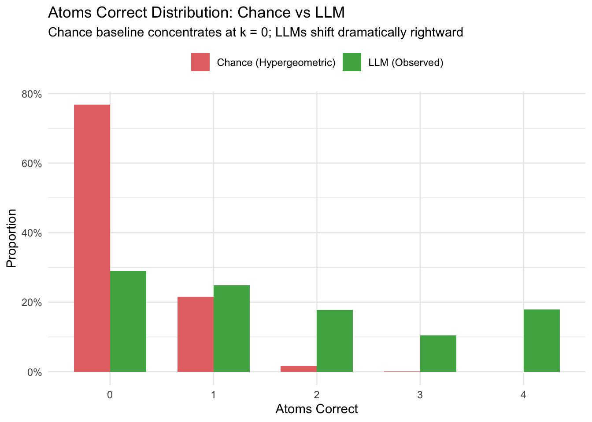
Code
model_score_summary <- play_data |>
group_by(model_name) |>
summarise(
mean_score = mean(score),
se_score = sd(score) / sqrt(n()),
ci_lower = mean_score - 1.96 * se_score,
ci_upper = mean_score + 1.96 * se_score,
.groups = "drop"
) |>
mutate(model_name = factor(as.character(model_name),
levels = order_model_names(as.character(model_name))))
ggplot(model_score_summary, aes(x = model_name, y = mean_score)) +
geom_hline(yintercept = chance_Escore, linetype = "dotted", color = "red", linewidth = 0.8) +
annotate("text", x = -Inf, y = chance_Escore, label = paste0("Chance (", chance_Escore, ")"),
hjust = -0.05, vjust = -0.5, size = 3, color = "red") +
geom_point(size = 3) +
geom_errorbar(aes(ymin = ci_lower, ymax = ci_upper), width = 0.2, linewidth = 0.8) +
labs(
x = "Model",
y = "Mean Score (lower is better)",
title = "Mean Score by Model vs Chance Baseline",
subtitle = "Error bars show 95% CI. Red dotted line = chance score (no rays, random guess)."
) +
theme_minimal() +
theme(axis.text.x = element_text(angle = 30, hjust = 1))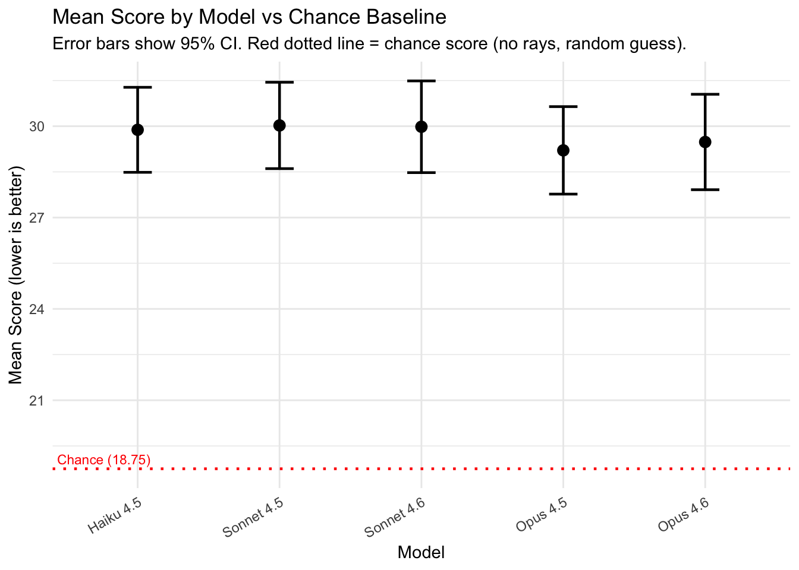
The optimal solver benchmark in the next section completes the performance corridor, providing the lower bound (best achievable score) against which both chance and LLM performance can be measured.
4.5 Optimal Solver Benchmark
The greedy optimal solver uses an information-theoretic strategy that minimizes expected remaining candidates at each step over the full C(64,4) = 635,376 candidate space. This provides a principled upper bound on play performance: the fewest rays and lowest score achievable by a perfectly rational agent with unlimited computation.
Code
# Load optimal solver benchmark results
optimal_json_path <- "optimal_solver_results.json"
has_optimal <- file.exists(optimal_json_path)
if (has_optimal) {
optimal_raw <- fromJSON(optimal_json_path)
# fromJSON flattens configs into a data frame with score as nested df
optimal_data <- tibble(
config_index = optimal_raw$configs$config_index,
optimal_rays = optimal_raw$configs$optimal_rays,
optimal_ray_points = optimal_raw$configs$score$ray_points,
optimal_score = optimal_raw$configs$score$total,
optimal_solved = optimal_raw$configs$solved
)
cat("Optimal solver benchmark loaded:",
optimal_raw$metadata$n_configs, "configs,",
"strategy:", optimal_raw$metadata$strategy, "\n")
cat("Configs hash:", optimal_raw$metadata$configs_hash, "\n")
cat("Generated:", optimal_raw$metadata$generated_at, "\n")
} else {
warning("optimal_solver_results.json not found. Run: python blackbox_solver.py benchmark")
}Optimal solver benchmark loaded: 10 configs, strategy: greedy_optimal
Configs hash: 44b512d953aa6111
Generated: 2026-03-20T00:32:07.634195+00:00 Code
# Identify the best condition by lowest mean score (most comparable to optimal solver)
best_condition_lookup <- play_data |>
mutate(
condition = paste0(
model_name, " | ",
ifelse(prompt_style == "augmented", "Aug", "Base"), " | ",
ifelse(as.logical(as.character(enable_thinking)), "Think", "No-Think"), " | ",
vot_condition
)
) |>
group_by(condition, model_name) |>
summarise(
score_mean = mean(score),
rays_mean = mean(rays_used),
atoms_mean = mean(atoms_correct),
n = n(),
.groups = "drop"
) |>
arrange(score_mean) |>
slice(1)
best_condition_label <- best_condition_lookup$condition
# Aggregate best condition's data per config_index
best_config_agg <- play_data |>
mutate(
condition = paste0(
model_name, " | ",
ifelse(prompt_style == "augmented", "Aug", "Base"), " | ",
ifelse(as.logical(as.character(enable_thinking)), "Think", "No-Think"), " | ",
vot_condition
)
) |>
filter(condition == best_condition_label) |>
group_by(config_index) |>
summarise(
best_rays_mean = mean(rays_used),
best_atoms_mean = mean(atoms_correct),
best_score_mean = mean(score),
best_n = n(),
.groups = "drop"
)
# Short label for chart legends (just model name)
best_short_label <- paste0("Best (", best_condition_lookup$model_name, ")")Code
kable(optimal_data |>
select(config_index, optimal_rays, optimal_ray_points, optimal_score, optimal_solved),
col.names = c("Config", "Rays", "Ray Points", "Total Score", "Solved"),
caption = "Optimal Solver Performance by Configuration (greedy strategy, no missed atoms)") |>
kable_styling(bootstrap_options = c("striped", "hover", "condensed"))| Config | Rays | Ray Points | Total Score | Solved |
|---|---|---|---|---|
| 0 | 8 | 12 | 12 | TRUE |
| 1 | 9 | 13 | 13 | TRUE |
| 2 | 7 | 11 | 11 | TRUE |
| 3 | 7 | 9 | 9 | TRUE |
| 4 | 7 | 12 | 12 | TRUE |
| 5 | 9 | 14 | 14 | TRUE |
| 6 | 8 | 12 | 12 | TRUE |
| 7 | 8 | 12 | 12 | TRUE |
| 8 | 8 | 10 | 10 | TRUE |
| 9 | 5 | 8 | 8 | TRUE |
The greedy optimal solver solves all 10 configurations in a mean of 7.6 rays (range: 5–9) with a mean score of 11.3 (range: 8–14). Since it always identifies all 4 atoms, the score consists entirely of ray points with no missed-atom penalty.
4.5.1 LLM vs Optimal Comparison
Code
# Aggregate play data by config
play_config_agg <- play_data |>
group_by(config_index) |>
summarise(
n_games = n(),
llm_rays_mean = mean(rays_used),
llm_atoms_mean = mean(atoms_correct),
llm_score_mean = mean(score),
.groups = "drop"
)
# Join with optimal data and best condition data
comparison <- inner_join(play_config_agg, optimal_data, by = "config_index") |>
left_join(best_config_agg, by = "config_index") |>
mutate(
rays_ratio = round(llm_rays_mean / optimal_rays, 2),
score_ratio = round(llm_score_mean / optimal_score, 2),
best_rays_ratio = round(best_rays_mean / optimal_rays, 2),
best_score_ratio = round(best_score_mean / optimal_score, 2)
)
kable(comparison |>
mutate(across(c(llm_rays_mean, llm_atoms_mean, llm_score_mean,
best_rays_mean, best_atoms_mean, best_score_mean), \(x) round(x, 1))) |>
select(config_index, optimal_rays, best_rays_mean, best_rays_ratio,
llm_rays_mean, rays_ratio,
optimal_score, best_score_mean, best_score_ratio,
llm_score_mean, score_ratio,
best_atoms_mean, llm_atoms_mean),
col.names = c("Config", "Opt Rays", "Best Rays (M)", "Best Ratio",
"LLM Rays (M)", "LLM Ratio",
"Opt Score", "Best Score (M)", "Best Ratio",
"LLM Score (M)", "LLM Ratio",
"Best Atoms (M)", "LLM Atoms (M)"),
caption = paste0("Optimal vs Best Condition vs LLM Mean (Best = ",
best_condition_label, "; ratio = agent / optimal)")) |>
kable_styling(bootstrap_options = c("striped", "hover", "condensed")) |>
scroll_box(width = "100%")| Config | Opt Rays | Best Rays (M) | Best Ratio | LLM Rays (M) | LLM Ratio | Opt Score | Best Score (M) | Best Ratio | LLM Score (M) | LLM Ratio | Best Atoms (M) | LLM Atoms (M) |
|---|---|---|---|---|---|---|---|---|---|---|---|---|
| 0 | 8 | 8 | 1.00 | 10.5 | 1.31 | 12 | 13 | 1.08 | 31.7 | 2.64 | 4 | 0.8 |
| 1 | 9 | 11 | 1.22 | 12.2 | 1.36 | 13 | 26 | 2.00 | 27.2 | 2.09 | 2 | 2.1 |
| 2 | 7 | 8 | 1.14 | 11.8 | 1.69 | 11 | 8 | 0.73 | 23.1 | 2.10 | 4 | 2.3 |
| 3 | 7 | 11 | 1.57 | 12.1 | 1.73 | 9 | 29 | 3.22 | 26.8 | 2.98 | 1 | 1.5 |
| 4 | 7 | 6 | 0.86 | 12.9 | 1.84 | 12 | 29 | 2.42 | 39.9 | 3.33 | 0 | 0.5 |
| 5 | 9 | 10 | 1.11 | 13.1 | 1.45 | 14 | 34 | 2.43 | 34.9 | 2.49 | 0 | 0.9 |
| 6 | 8 | 9 | 1.12 | 11.5 | 1.43 | 12 | 11 | 0.92 | 15.5 | 1.30 | 4 | 3.8 |
| 7 | 8 | 5 | 0.62 | 11.4 | 1.42 | 12 | 18 | 1.50 | 33.5 | 2.79 | 2 | 0.7 |
| 8 | 8 | 14 | 1.75 | 13.0 | 1.62 | 10 | 23 | 2.30 | 30.6 | 3.06 | 3 | 1.2 |
| 9 | 5 | 7 | 1.40 | 11.0 | 2.20 | 8 | 14 | 1.75 | 27.3 | 3.41 | 3 | 1.5 |
Across configurations, LLMs use 1.6× as many rays as the optimal solver on average (range: 1.3×–2.2×) and achieve scores 2.6× the optimal (range: 1.3×–3.4×). The best condition (Opus 4.6 | Base | Think | None) narrows the gap: 1.2× rays (range: 0.6×–1.8×) and 1.8× score (range: 0.7×–3.2×). Score ratios above 1.0× reflect both extra ray costs and missed-atom penalties.
Code
rays_long <- comparison |>
select(config_index, optimal_rays, best_rays_mean, llm_rays_mean) |>
pivot_longer(cols = c(optimal_rays, best_rays_mean, llm_rays_mean),
names_to = "agent", values_to = "rays") |>
mutate(agent = case_when(
agent == "optimal_rays" ~ "Optimal Solver",
agent == "best_rays_mean" ~ best_short_label,
TRUE ~ "LLM (Mean)"
)) |>
mutate(agent = factor(agent, levels = c("Optimal Solver", best_short_label, "LLM (Mean)")))
ggplot(rays_long, aes(x = config_index, y = rays, color = agent, group = agent)) +
geom_line(linewidth = 1) +
geom_point(size = 2.5) +
scale_color_manual(values = setNames(
c("#2196F3", "#4CAF50", "#FF9800"),
c("Optimal Solver", best_short_label, "LLM (Mean)")
)) +
scale_x_continuous(breaks = unique(rays_long$config_index)) +
labs(x = "Configuration", y = "Rays Used", color = NULL,
title = "Rays Used: Optimal vs Best Condition vs LLM Mean") +
theme_minimal() +
theme(legend.position = "top")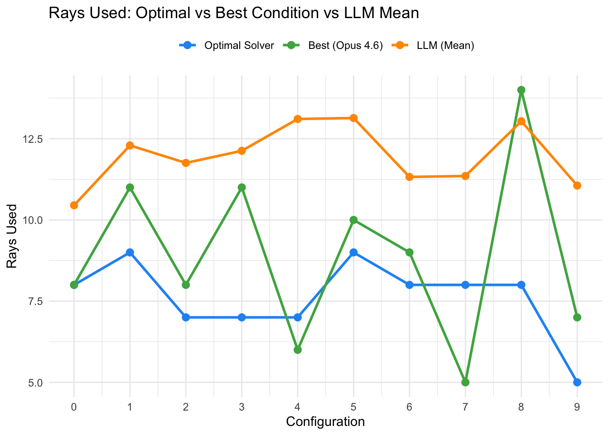
Code
score_long <- comparison |>
select(config_index, optimal_score, best_score_mean, llm_score_mean) |>
pivot_longer(cols = c(optimal_score, best_score_mean, llm_score_mean),
names_to = "agent", values_to = "score_val") |>
mutate(agent = case_when(
agent == "optimal_score" ~ "Optimal Solver",
agent == "best_score_mean" ~ best_short_label,
TRUE ~ "LLM (Mean)"
)) |>
mutate(agent = factor(agent, levels = c("Optimal Solver", best_short_label, "LLM (Mean)")))
ggplot(score_long, aes(x = config_index, y = score_val, color = agent, group = agent)) +
geom_hline(yintercept = 18.75, linetype = "dotted", color = "red", linewidth = 0.8) +
annotate("text", x = max(score_long$config_index) + 0.3, y = 18.75,
label = "Chance (18.75)", hjust = 1, vjust = -0.5, size = 3, color = "red") +
geom_line(linewidth = 1) +
geom_point(size = 2.5) +
scale_color_manual(values = setNames(
c("#2196F3", "#4CAF50", "#FF9800"),
c("Optimal Solver", best_short_label, "LLM (Mean)")
)) +
scale_x_continuous(breaks = unique(score_long$config_index)) +
labs(x = "Configuration", y = "Score (lower is better)", color = NULL,
title = "Score: Optimal vs Best Condition vs LLM Mean") +
theme_minimal() +
theme(legend.position = "top")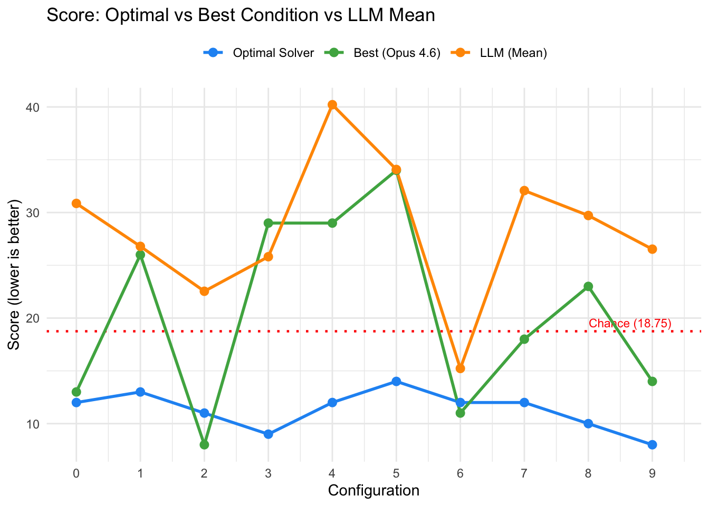
Code
# Per-model per-config aggregation
play_model_config <- play_data |>
group_by(model_name, config_index) |>
summarise(
llm_score_mean = mean(score),
llm_rays_mean = mean(rays_used),
llm_atoms_mean = mean(atoms_correct),
.groups = "drop"
) |>
inner_join(optimal_data, by = "config_index") |>
mutate(
score_ratio = llm_score_mean / optimal_score,
is_best = model_name == best_condition_lookup$model_name
)
chance_ratio_data <- optimal_data |>
mutate(chance_ratio = 18.75 / optimal_score)
ggplot(play_model_config, aes(x = config_index, y = score_ratio, color = model_name, group = model_name)) +
geom_line(linewidth = 1) +
geom_point(aes(shape = is_best), size = 2.5) +
scale_shape_manual(values = c("TRUE" = 18, "FALSE" = 16), guide = "none") +
geom_hline(yintercept = 1.0, linetype = "dashed", color = "grey40") +
annotate("text", x = min(play_model_config$config_index) - 0.3, y = 1.0,
label = "1.0× (optimal)", hjust = 0, vjust = -0.5, size = 3, color = "grey40") +
geom_line(data = chance_ratio_data, aes(x = config_index, y = chance_ratio, group = 1),
inherit.aes = FALSE, linetype = "dotted", color = "red", linewidth = 0.8) +
annotate("text", x = max(play_model_config$config_index) + 0.3,
y = mean(chance_ratio_data$chance_ratio),
label = "Chance", hjust = 1, vjust = -0.5, size = 3, color = "red") +
scale_x_continuous(breaks = unique(play_model_config$config_index)) +
labs(x = "Configuration", y = "Score Ratio (LLM / Optimal)",
color = "Model",
title = "Score Ratio by Model and Configuration",
subtitle = paste0("Dashed line = optimal (1.0×). Dotted red = chance. Diamond = best model (",
best_condition_lookup$model_name, ").")) +
theme_minimal() +
theme(legend.position = "top")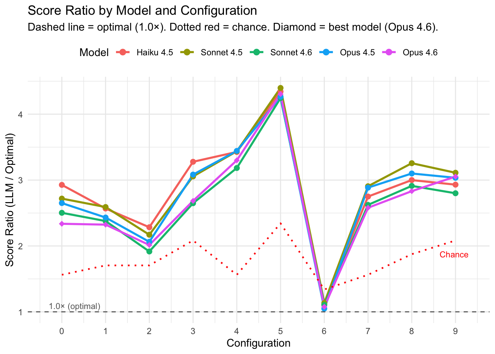
Code
diff_cor <- cor.test(play_model_config$optimal_rays, play_model_config$llm_atoms_mean)
# Join best condition data with optimal rays for scatter overlay
best_scatter <- best_config_agg |>
inner_join(optimal_data |> select(config_index, optimal_rays), by = "config_index")
ggplot(play_model_config, aes(x = optimal_rays, y = llm_atoms_mean, color = model_name)) +
geom_jitter(width = 0.1, height = 0.05, size = 2.5, alpha = 0.7) +
geom_point(data = best_scatter, aes(x = optimal_rays, y = best_atoms_mean),
inherit.aes = FALSE, shape = 18, size = 4.5, color = "#4CAF50") +
geom_smooth(method = "lm", se = TRUE, aes(group = 1), color = "grey40", linetype = "dashed") +
labs(x = "Optimal Solver Rays (configuration difficulty)",
y = "LLM Atoms Correct (mean)",
color = "Model",
title = "Configuration Difficulty vs LLM Atom Identification",
subtitle = paste0("r = ", round(diff_cor$estimate, 3),
", p = ", format.pval(diff_cor$p.value, digits = 3),
". Green diamonds = best condition (", best_condition_lookup$model_name, ").")) +
scale_y_continuous(limits = c(0, 4)) +
theme_minimal() +
theme(legend.position = "top")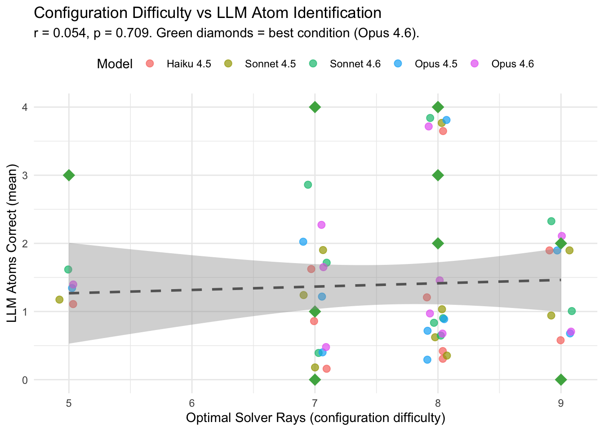
Best condition summary. The best-performing condition by score is Opus 4.6 | Base | Think | None. Compared to the overall LLM mean, the best condition reduces the score ratio from 2.6× to 1.8× optimal (a 30% reduction) and the rays ratio from 1.6× to 1.2× optimal. This highlights how much of the gap to optimal is driven by model capability vs. the averaging across weaker conditions.
4.6 Error Analysis
To move beyond the outcome-level confusion matrix above, we classify which specific ray physics rule broke down for each incorrect prediction. Since Predict mode is inherently spatial (given atoms, predict ray outcome), all errors are spatial — the interesting question is which rule the model failed to apply correctly.
We use a deterministic classification approach: comparing the predicted and actual outcome types (absorbed/reflected/detour) and exit positions to identify the specific failure mechanism. This requires no LLM judge and is 100% reproducible. The classification script (classify_errors.py --mode predict) processes all incorrect predictions.
For Play mode, where errors span both spatial and non-spatial domains (experiment design, constraint tracking, belief updating), we use an LLM-as-judge approach with optional gold-standard validation (classify_errors.py --mode play --api-key KEY --gold-standard). We additionally provide a deterministic analysis that replays each LLM’s ray sequence through the solver’s candidate space to quantify suboptimal ray selection, constraint violations, and excess rays (blackbox_solver.py analyze).
Code
error_class_file <- "error_classifications.json"
has_error_classifications <- file.exists(error_class_file)
if (has_error_classifications) {
error_data <- jsonlite::fromJSON(error_class_file)
# Predict mode: deterministic classifications
has_predict_errors <- !is.null(error_data$predict) && length(error_data$predict) > 0
if (has_predict_errors) {
predict_errors <- as_tibble(error_data$predict) |>
mutate(model_name = model)
} else {
predict_errors <- tibble()
has_predict_errors <- FALSE
}
# Play mode: LLM-as-judge classifications (if available)
has_play_errors <- !is.null(error_data$play) && length(error_data$play) > 0
if (has_play_errors) {
play_errors <- as_tibble(error_data$play) |>
mutate(
error_label = case_when(
primary_failure_mode == "ray_path_error" ~ "Ray path error",
primary_failure_mode == "deflection_geometry_error" ~ "Deflection geometry error",
primary_failure_mode == "constraint_tracking_error" ~ "Constraint tracking error",
primary_failure_mode == "experiment_design_error" ~ "Experiment design error",
primary_failure_mode == "belief_updating_error" ~ "Belief updating error",
primary_failure_mode == "premature_commitment" ~ "Premature commitment",
TRUE ~ primary_failure_mode
),
error_domain = ifelse(is_spatial, "Spatial", "Non-spatial"),
model_name = model
)
}
# Gold-standard validation (if available)
has_gold <- !is.null(error_data$play_gold_standard) &&
length(error_data$play_gold_standard) > 0
if (has_predict_errors) {
cat("Loaded", nrow(predict_errors), "Predict mode error classifications",
"(deterministic)\n")
} else {
cat("No predict error classifications found.\n")
}
if (has_play_errors) cat("Loaded", nrow(play_errors),
"Play mode classifications (LLM-as-judge)\n")
if (has_gold) cat("Loaded", length(error_data$play_gold_standard),
"gold-standard validations (Opus)\n")
cat("Classification date:", error_data$metadata$classification_date, "\n")
} else {
has_play_errors <- FALSE
has_gold <- FALSE
cat("Error classifications not found. Run: python classify_errors.py --mode predict\n")
}No predict error classifications found.
Loaded 100 Play mode classifications (LLM-as-judge)
Classification date: 2026-03-18T17:38:10 4.6.1 Predict Mode: Ray Physics Rule Failures
In Predict mode, all errors are spatial by definition — the task is purely spatial reasoning. The deterministic classifier identifies which specific ray physics rule the model failed to apply, based on comparing the predicted vs. actual outcome types and exit positions.
Error taxonomy:
| Error Category | Pattern | Description |
|---|---|---|
| Missed absorption | pred: detour/reflected → actual: absorbed | Failed to check for atom directly in ray’s path before checking diagonals |
| Missed reflection | pred: detour/absorbed → actual: reflected | Failed to recognize reflection condition at entry point |
| False absorption | pred: absorbed → actual: detour/reflected | Incorrectly identified absorption; confused diagonal atom with forward atom |
| False reflection | pred: reflected → actual: detour/absorbed | Incorrectly identified reflection condition |
| Deflection direction error | pred: detour(side A) → actual: detour(side B) | Deflected ray in wrong direction (e.g., south instead of west) |
| Off-by-one path error | pred: detour(side-N) → actual: detour(side-N±1) | Coordinate indexing error in cell-by-cell tracing; 97% of same-side errors |
| Large path tracking error | pred: detour(side-N) → actual: detour(side-M), |N-M| ≥ 2 | Multiple accumulated errors in ray tracing |
Code
# Error category distribution - overall
cat_summary <- predict_errors |>
count(error_label) |>
arrange(desc(n)) |>
mutate(pct = round(n / sum(n) * 100, 1))
kable(cat_summary,
col.names = c("Error Category", "Count", "Percentage"),
caption = "Predict Mode Error Categories (Deterministic Classification, N = 2,284)")
# Error category by model
error_by_model <- predict_errors |>
count(model_name, error_label) |>
group_by(model_name) |>
mutate(pct = n / sum(n) * 100) |>
ungroup()
# Define order and colors based on error type
cat_order <- c("Missed reflection", "Off-by-one path error",
"Deflection direction error", "Missed absorption",
"False absorption", "Large path tracking error",
"False reflection")
error_by_model$error_label <- factor(error_by_model$error_label, levels = cat_order)
# Color scheme: rule confusion errors in warm tones, path tracking in cool tones
p_cats <- ggplot(error_by_model, aes(x = model_name, y = pct, fill = error_label)) +
geom_col(position = "stack", width = 0.7) +
scale_fill_manual(values = c(
"Missed reflection" = "#e74c3c",
"Off-by-one path error" = "#3498db",
"Deflection direction error" = "#2ecc71",
"Missed absorption" = "#e67e22",
"False absorption" = "#9b59b6",
"Large path tracking error" = "#1abc9c",
"False reflection" = "#95a5a6"
)) +
labs(
title = "Predict Mode Error Distribution by Model",
subtitle = "Deterministic classification from outcome type comparison",
x = "Model", y = "Percentage of Errors", fill = "Error Category"
) +
theme_minimal() +
theme(axis.text.x = element_text(angle = 45, hjust = 1), legend.position = "right")
print(p_cats)4.6.2 Prompt Effect on Error Patterns
The augmented prompt includes explicit coordinate system explanation, detailed deflection geometry with worked examples, and common error warnings. How does this change the error distribution?
Code
# Error categories by prompt style
error_by_prompt <- predict_errors |>
count(prompt_style, error_label) |>
group_by(prompt_style) |>
mutate(pct = n / sum(n) * 100) |>
ungroup()
error_by_prompt$error_label <- factor(error_by_prompt$error_label, levels = cat_order)
p_prompt <- ggplot(error_by_prompt, aes(x = prompt_style, y = pct, fill = error_label)) +
geom_col(position = "stack", width = 0.5) +
scale_fill_manual(values = c(
"Missed reflection" = "#e74c3c",
"Off-by-one path error" = "#3498db",
"Deflection direction error" = "#2ecc71",
"Missed absorption" = "#e67e22",
"False absorption" = "#9b59b6",
"Large path tracking error" = "#1abc9c",
"False reflection" = "#95a5a6"
)) +
labs(
title = "Error Distribution: Baseline vs Augmented Prompt",
subtitle = "Augmented prompt eliminates rule confusion errors but remaining errors are path tracking",
x = "Prompt Style", y = "Percentage of Errors", fill = "Error Category"
) +
theme_minimal() +
theme(legend.position = "right")
print(p_prompt)
# Table: side-by-side comparison
prompt_comparison <- predict_errors |>
count(prompt_style, error_label) |>
group_by(prompt_style) |>
mutate(pct = round(n / sum(n) * 100, 1)) |>
ungroup() |>
select(prompt_style, error_label, pct) |>
pivot_wider(names_from = prompt_style, values_from = pct, values_fill = 0)
kable(prompt_comparison,
caption = "Error Category Distribution by Prompt Style (% of errors within each style)")Code
# Group errors into: rule confusion (missed/false absorption/reflection) vs path tracking
predict_errors_grouped <- predict_errors |>
mutate(error_group = case_when(
error_category %in% c("missed_absorption", "missed_reflection",
"false_absorption", "false_reflection") ~ "Rule confusion",
error_category %in% c("deflection_direction_error", "off_by_one_error",
"large_path_error") ~ "Path tracking"
))
group_by_prompt <- predict_errors_grouped |>
count(prompt_style, error_group) |>
group_by(prompt_style) |>
mutate(pct = round(n / sum(n) * 100, 1)) |>
ungroup()
kable(group_by_prompt,
col.names = c("Prompt", "Error Group", "Count", "%"),
caption = "Rule Confusion vs Path Tracking Errors by Prompt Style")4.6.3 Entry Side Asymmetry
Code
# Count total trials per side from the full predict dataset (correct + incorrect)
# predict_data has entry_side as a direct column
trials_per_side <- predict_data |>
count(entry_side, name = "trials")
# Error counts by entry side
# predict_errors has ray_entry as a nested data.frame from fromJSON
errors_per_side <- predict_errors |>
mutate(entry_side = ray_entry$side) |>
count(entry_side, name = "errors")
# Join to compute error rate normalized by trials
entry_rate <- trials_per_side |>
left_join(errors_per_side, by = "entry_side") |>
mutate(
errors = replace_na(errors, 0),
error_rate = errors / trials * 100
) |>
arrange(desc(error_rate))
kable(entry_rate,
col.names = c("Entry Side", "Trials", "Errors", "Error Rate (%)"),
digits = 1,
caption = "Error Rate by Ray Entry Side (normalized by trials)")
# Error category distribution by entry side
entry_side <- predict_errors |>
mutate(entry_side = ray_entry$side) |>
count(entry_side, error_label) |>
left_join(trials_per_side, by = "entry_side") |>
mutate(rate = n / trials * 100)
entry_side$error_label <- factor(entry_side$error_label, levels = cat_order)
p_entry <- ggplot(entry_side, aes(x = entry_side, y = rate, fill = error_label)) +
geom_col(position = "stack", width = 0.6) +
scale_fill_manual(values = c(
"Missed reflection" = "#e74c3c",
"Off-by-one path error" = "#3498db",
"Deflection direction error" = "#2ecc71",
"Missed absorption" = "#e67e22",
"False absorption" = "#9b59b6",
"Large path tracking error" = "#1abc9c",
"False reflection" = "#95a5a6"
)) +
labs(
title = "Error Rate by Ray Entry Side (Normalized by Trials)",
subtitle = "Error rate = errors / rays tested per side; later sides have fewer trials due to skip logic",
x = "Entry Side", y = "Error Rate (%)", fill = "Error Category"
) +
theme_minimal() +
theme(legend.position = "right")
print(p_entry)Limitation: In predict mode, rays are tested in a fixed order (North 1–8, South 1–8, East 1–8, West 1–8), and rays whose entry point was already observed as an exit point of a prior ray are skipped. This means later sides (East, West) are tested on fewer rays — and specifically on the subset of positions that were not exit points for earlier rays. The table above normalizes error counts by the number of trials actually conducted per side. However, the non-random subsetting means the tested positions for later sides may be systematically different in difficulty. A stronger design would test all 32 entry points independently, regardless of prior exits.
4.6.4 Play Mode: Spatial vs. Non-Spatial Failure Modes
Code
play_cat_summary <- play_errors |>
count(error_label, error_domain) |>
arrange(desc(n)) |>
mutate(pct = round(n / sum(n) * 100, 1))
kable(play_cat_summary,
col.names = c("Primary Failure Mode", "Domain", "Count", "Percentage"),
caption = "Play Mode: Primary Failure Mode Distribution (LLM-as-judge)")| Primary Failure Mode | Domain | Count | Percentage |
|---|---|---|---|
| Deflection geometry error | Spatial | 45 | 45 |
| Constraint tracking error | Non-spatial | 34 | 34 |
| Premature commitment | Non-spatial | 13 | 13 |
| Ray path error | Spatial | 6 | 6 |
| Belief updating error | Non-spatial | 2 | 2 |
Code
# Spatial vs non-spatial by model
play_spatial_by_model <- play_errors |>
count(model_name, error_domain) |>
group_by(model_name) |>
mutate(pct = n / sum(n) * 100) |>
ungroup()
p_play_spatial <- ggplot(play_spatial_by_model,
aes(x = model_name, y = pct, fill = error_domain)) +
geom_col(position = "stack", width = 0.6) +
geom_text(aes(label = paste0(round(pct, 0), "%")),
position = position_stack(vjust = 0.5), size = 3.5) +
scale_fill_manual(values = c("Spatial" = "#e74c3c", "Non-spatial" = "#3498db")) +
labs(
title = "Play Mode: Spatial vs Non-Spatial Primary Failure Mode",
subtitle = "Classified by LLM-as-judge (Claude Haiku 4.5)",
x = "Model", y = "Percentage", fill = "Error Domain"
) +
theme_minimal() +
theme(axis.text.x = element_text(angle = 45, hjust = 1), legend.position = "top")
print(p_play_spatial)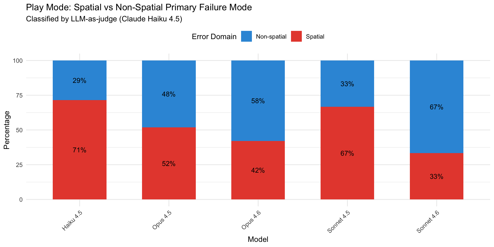
Code
# Spatial errors per game vs atoms correct
if ("spatial_errors_in_game" %in% names(play_errors)) {
p_spatial_atoms <- ggplot(play_errors,
aes(x = spatial_errors_in_game, y = atoms_correct)) +
geom_jitter(aes(color = model_name), width = 0.2, height = 0.1, size = 2, alpha = 0.7) +
geom_smooth(method = "lm", se = TRUE, color = "grey40", linetype = "dashed") +
labs(
title = "Spatial Errors During Game vs Final Accuracy",
x = "Number of Spatial Reasoning Errors in Game",
y = "Atoms Correctly Identified (0-4)",
color = "Model"
) +
theme_minimal() +
theme(legend.position = "top")
print(p_spatial_atoms)
}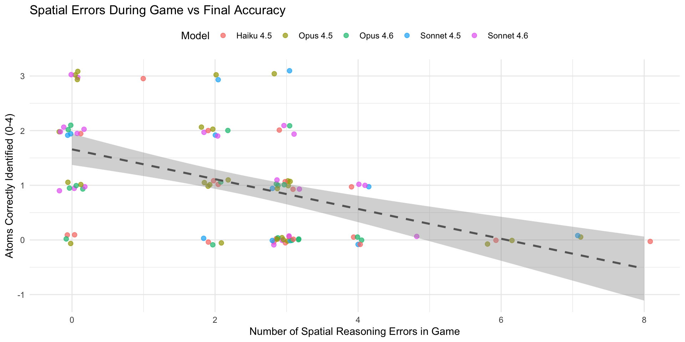
4.6.5 Gold-Standard Validation: Haiku vs Opus Agreement
Code
gold <- as_tibble(error_data$play_gold_standard)
agree_rate <- mean(gold$agreement) * 100
cat(paste0("Overall Haiku-Opus agreement: ", round(agree_rate, 1), "% (",
sum(gold$agreement), "/", nrow(gold), ")\n"))
# Agreement by category
gold_confusion <- gold |>
count(haiku_primary, primary_failure_mode) |>
pivot_wider(names_from = primary_failure_mode, values_from = n, values_fill = 0)
kable(gold_confusion,
caption = "Gold-Standard Confusion Matrix: Haiku (rows) vs Opus (columns)")
# Agreement for spatial vs non-spatial
gold_spatial <- gold |>
mutate(both_spatial = is_spatial & haiku_is_spatial,
both_nonspatial = !is_spatial & !haiku_is_spatial,
domain_agree = (is_spatial == haiku_is_spatial))
domain_agree_rate <- mean(gold_spatial$domain_agree) * 100
cat(paste0("Spatial/non-spatial domain agreement: ", round(domain_agree_rate, 1), "%\n"))4.6.6 Play Mode: Deterministic Error Analysis
Where the LLM-as-judge classification above assigns categorical labels to whole-game failures, this section uses a complementary deterministic approach: replaying each LLM’s ray sequence through the solver’s full C(64,4) = 635,376 candidate space. This produces three quantitative error metrics without any subjective judgment:
- Suboptimal ray selection — For each ray fired, the solver computes the information-theoretically optimal ray and ranks the LLM’s choice among all 32 options.
- Constraint violations — Hypothesis marks and final guesses are checked against the set of candidate configurations consistent with all observed ray outcomes.
- Excess rays — Rays fired after the candidate set has already been narrowed to a unique solution.
Generated by: python blackbox_solver.py analyze <experiment.json>
Code
# Load from known prerender output path (falls back to glob for compatibility)
det_analysis_files <- if (file.exists("experiment1_play_combined_analysis.json")) {
"experiment1_play_combined_analysis.json"
} else {
Sys.glob("*_analysis.json")
}
has_det_play <- length(det_analysis_files) > 0
if (has_det_play) {
# Load and concatenate all analysis files
det_all_games <- list()
det_all_rays <- list()
det_all_marks <- list()
for (f in det_analysis_files) {
raw <- jsonlite::fromJSON(f, simplifyDataFrame = FALSE)
for (game in raw$games) {
# Build game-level row
s <- game$summary
game_row <- tibble(
experiment_id = game$experiment_id %||% NA_character_,
model = game$model %||% NA_character_,
model_name = game$model_name %||% NA_character_,
config_index = game$config_index %||% NA_integer_,
prompt_style = game$prompt_style %||% NA_character_,
enable_thinking = game$enable_thinking %||% FALSE,
total_rays_fired = s$total_rays_fired %||% NA_integer_,
n_optimal_rays = s$n_optimal_rays %||% NA_integer_,
n_suboptimal_rays = s$n_suboptimal_rays %||% NA_integer_,
mean_ray_rank = s$mean_ray_rank %||% NA_real_,
mean_score_delta = s$mean_score_delta %||% NA_real_,
uniquely_identified_at_ray = s$uniquely_identified_at_ray %||% NA_integer_,
excess_rays = s$excess_rays %||% NA_integer_,
n_marks = s$n_marks %||% NA_integer_,
n_inconsistent_marks = s$n_inconsistent_marks %||% NA_integer_,
guess_in_candidates = s$guess_in_candidates %||% NA,
atoms_correct = s$atoms_correct %||% NA_integer_,
game_score = s$game_score %||% NA_real_,
optimal_solver_rays = s$optimal_solver_rays %||% NA_integer_,
rays_surplus = s$rays_surplus %||% NA_integer_,
source_file = f
)
det_all_games <- c(det_all_games, list(game_row))
# Unnest ray_analysis
game_id <- paste0(game$model_name, "_", game$config_index)
for (ray in game$ray_analysis) {
opt_ray <- ray$optimal_ray
ray_row <- tibble(
game_id = game_id,
model_name = game$model_name %||% NA_character_,
config_index = game$config_index %||% NA_integer_,
ray_number = ray$ray_number,
side = ray$side,
position = ray$position,
outcome = ray$outcome %||% NA_character_,
candidates_before = ray$candidates_before,
candidates_after = ray$candidates_after,
is_excess = ray$is_excess,
optimal_side = if (!is.null(opt_ray)) opt_ray$side else NA_character_,
optimal_position = if (!is.null(opt_ray)) opt_ray$position else NA_integer_,
optimal_score = ray$optimal_score %||% NA_real_,
llm_score = ray$llm_score %||% NA_real_,
score_delta = ray$score_delta %||% NA_real_,
llm_rank = ray$llm_rank %||% NA_integer_,
is_optimal = ray$is_optimal
)
det_all_rays <- c(det_all_rays, list(ray_row))
}
# Unnest mark_analysis
for (mark in game$mark_analysis) {
mark_row <- tibble(
game_id = game_id,
model_name = game$model_name %||% NA_character_,
config_index = game$config_index %||% NA_integer_,
step_index = mark$step_index,
mark_row_pos = mark$position[[1]],
mark_col_pos = mark$position[[2]],
candidates_at_mark = mark$candidates_at_mark,
candidates_with_atom = mark$candidates_with_atom,
is_consistent = mark$is_consistent,
is_certain = mark$is_certain
)
det_all_marks <- c(det_all_marks, list(mark_row))
}
}
}
det_games <- bind_rows(det_all_games)
det_rays <- bind_rows(det_all_rays)
det_marks <- if (length(det_all_marks) > 0) bind_rows(det_all_marks) else tibble()
cat("Deterministic play analysis loaded:",
nrow(det_games), "games,",
nrow(det_rays), "rays,",
nrow(det_marks), "marks\n")
cat("Source files:", paste(det_analysis_files, collapse = ", "), "\n")
} else {
cat("No *_analysis.json files found.",
"Run: python blackbox_solver.py analyze <experiment.json>\n")
}Deterministic play analysis loaded: 800 games, 9517 rays, 3626 marks
Source files: experiment1_play_combined_analysis.json 4.6.6.1 Suboptimal Ray Selection
Code
# Summary table: ray quality by model
det_ray_summary <- det_games |>
group_by(model_name) |>
summarise(
n_games = n(),
total_rays = sum(total_rays_fired),
pct_optimal = round(sum(n_optimal_rays) / sum(total_rays_fired) * 100, 1),
pct_suboptimal = round(sum(n_suboptimal_rays) / sum(total_rays_fired) * 100, 1),
mean_rank = round(mean(mean_ray_rank, na.rm = TRUE), 2),
mean_score_delta = round(mean(mean_score_delta, na.rm = TRUE), 1),
.groups = "drop"
)
kable(det_ray_summary,
col.names = c("Model", "Games", "Total Rays", "% Optimal", "% Suboptimal",
"Mean Rank", "Mean Score Delta"),
caption = "Ray Selection Quality by Model (Deterministic Analysis)") |>
kable_styling(bootstrap_options = c("striped", "hover", "condensed"))| Model | Games | Total Rays | % Optimal | % Suboptimal | Mean Rank | Mean Score Delta |
|---|---|---|---|---|---|---|
| Haiku 4.5 | 160 | 1798 | 15.2 | 84.8 | 14.64 | 3525.6 |
| Opus 4.5 | 160 | 1801 | 15.4 | 84.6 | 14.76 | 4012.1 |
| Opus 4.6 | 160 | 1967 | 17.5 | 82.5 | 14.31 | 3443.3 |
| Sonnet 4.5 | 160 | 1864 | 14.6 | 85.4 | 14.57 | 3809.1 |
| Sonnet 4.6 | 160 | 2087 | 20.6 | 79.4 | 13.48 | 3217.5 |
Code
# Figure 1: Histogram of ray ranks by model
non_excess_rays <- det_rays |> filter(!is_excess)
p_rank_hist <- ggplot(non_excess_rays, aes(x = llm_rank)) +
geom_histogram(binwidth = 1, fill = "#3498db", color = "white", alpha = 0.8) +
geom_vline(xintercept = 1, linetype = "dashed", color = "#e74c3c", linewidth = 0.8) +
facet_wrap(~model_name, scales = "free_y") +
labs(
title = "Distribution of Ray Selection Rank by Model",
subtitle = "Rank 1 = information-theoretically optimal (competition ranking: ties share rank); dashed line marks optimal",
x = "LLM Ray Rank (competition ranking, among 32 possible rays)",
y = "Count"
) +
theme_minimal() +
theme(legend.position = "top")
print(p_rank_hist)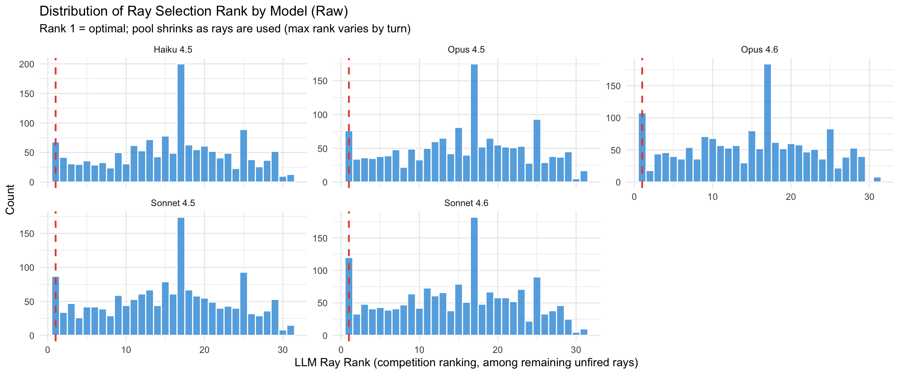
Code
# Figure 2: Score delta vs ray number (does selection improve over game?)
p_delta_prog <- ggplot(non_excess_rays |> filter(!is.na(score_delta)),
aes(x = ray_number, y = score_delta, color = model_name)) +
geom_point(alpha = 0.3, size = 1.5) +
geom_smooth(method = "loess", se = TRUE, linewidth = 1) +
scale_color_manual(values = c("#e74c3c", "#3498db", "#2ecc71", "#f39c12", "#9b59b6")) +
labs(
title = "Ray Selection Quality Over Game Progression",
subtitle = "Score delta = E[remain] for LLM's ray minus optimal; lower is better",
x = "Ray Number (within game)",
y = "Score Delta (E[remaining] above optimal)",
color = "Model"
) +
theme_minimal() +
theme(legend.position = "top")
print(p_delta_prog)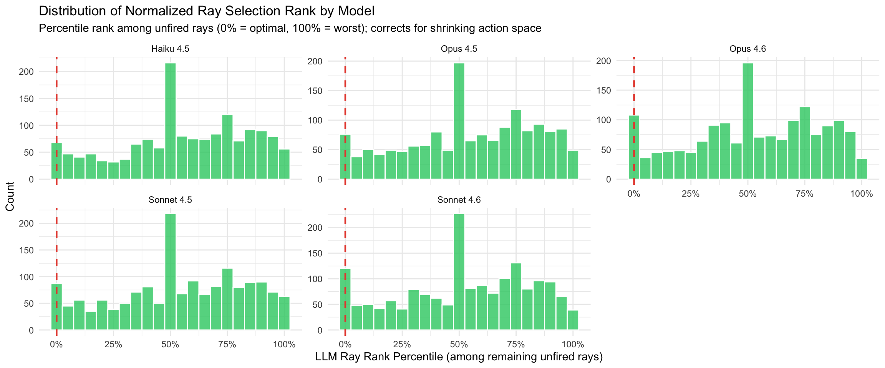
Ray selection summary. Across all models, 16.7% of non-excess rays matched the information-theoretically optimal E[remaining] score (including ties among equally-optimal rays). The mean rank was 14.35, indicating that LLM ray choices were typically near-optimal in the ranking but not at the top.
4.6.6.2 Excess Rays
Code
# Summary table: excess rays by model
det_excess_summary <- det_games |>
filter(!is.na(uniquely_identified_at_ray)) |>
group_by(model_name) |>
summarise(
n_uniquely_identified = n(),
mean_excess = round(mean(excess_rays), 2),
mean_llm_rays = round(mean(total_rays_fired), 2),
mean_optimal_solver_rays = round(mean(optimal_solver_rays, na.rm = TRUE), 2),
.groups = "drop"
)
kable(det_excess_summary,
col.names = c("Model", "Games Uniquely ID'd", "Mean Excess Rays",
"Mean LLM Rays", "Mean Optimal Rays"),
caption = "Excess Rays: Rays Fired After Unique Identification") |>
kable_styling(bootstrap_options = c("striped", "hover", "condensed"))| Model | Games Uniquely ID'd | Mean Excess Rays | Mean LLM Rays | Mean Optimal Rays |
|---|---|---|---|---|
| Haiku 4.5 | 65 | 3.68 | 12.52 | 7.71 |
| Opus 4.5 | 57 | 3.79 | 12.74 | 7.47 |
| Opus 4.6 | 70 | 3.66 | 13.73 | 7.33 |
| Sonnet 4.5 | 65 | 3.11 | 13.14 | 7.54 |
| Sonnet 4.6 | 79 | 4.16 | 14.27 | 7.43 |
Code
# Figure: Paired comparison — optimal vs LLM rays per config
det_config_compare <- det_games |>
filter(!is.na(optimal_solver_rays)) |>
group_by(model_name, config_index) |>
summarise(
mean_llm_rays = mean(total_rays_fired),
optimal_rays = first(optimal_solver_rays),
mean_excess = mean(excess_rays),
.groups = "drop"
)
p_excess_compare <- ggplot(det_config_compare) +
geom_segment(aes(x = factor(config_index), xend = factor(config_index),
y = optimal_rays, yend = mean_llm_rays),
color = "grey60", linewidth = 0.5) +
geom_point(aes(x = factor(config_index), y = optimal_rays),
color = "#2ecc71", size = 3, shape = 17) +
geom_point(aes(x = factor(config_index), y = mean_llm_rays, color = model_name),
size = 3) +
scale_color_manual(values = c("#e74c3c", "#3498db", "#2ecc71", "#f39c12", "#9b59b6")) +
facet_wrap(~model_name) +
labs(
title = "LLM Rays vs Optimal Solver Rays by Configuration",
subtitle = "Green triangles = optimal solver; circles = LLM mean; segments show surplus",
x = "Configuration Index",
y = "Number of Rays",
color = "Model"
) +
theme_minimal() +
theme(legend.position = "none",
axis.text.x = element_text(size = 8))
print(p_excess_compare)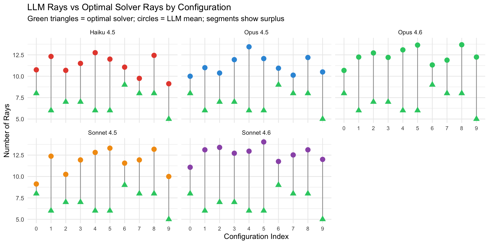
Excess ray summary. Among games where the LLM’s rays uniquely identified the configuration, models fired an average of 3.7 excess rays beyond the point of unique identification. This suggests difficulty recognizing when the constraint set has converged to a single solution.
4.6.6.3 Constraint Violations
Code
# Summary table: constraint consistency by model
det_constraint_summary <- det_games |>
group_by(model_name) |>
summarise(
n_games = n(),
total_marks = sum(n_marks),
inconsistent_marks = sum(n_inconsistent_marks),
pct_inconsistent = if (sum(n_marks) > 0)
round(sum(n_inconsistent_marks) / sum(n_marks) * 100, 1) else 0,
n_with_guess = sum(!is.na(guess_in_candidates)),
guess_in_candidates = sum(guess_in_candidates == TRUE, na.rm = TRUE),
pct_guess_consistent = if (sum(!is.na(guess_in_candidates)) > 0)
round(sum(guess_in_candidates == TRUE, na.rm = TRUE) /
sum(!is.na(guess_in_candidates)) * 100, 1) else NA_real_,
.groups = "drop"
)
kable(det_constraint_summary |>
select(model_name, n_games, total_marks, inconsistent_marks,
pct_inconsistent, pct_guess_consistent),
col.names = c("Model", "Games", "Total Marks", "Inconsistent Marks",
"% Inconsistent", "% Guess in Candidates"),
caption = "Constraint Consistency: Marks and Guesses vs Candidate Space") |>
kable_styling(bootstrap_options = c("striped", "hover", "condensed"))| Model | Games | Total Marks | Inconsistent Marks | % Inconsistent | % Guess in Candidates |
|---|---|---|---|---|---|
| Haiku 4.5 | 160 | 713 | 444 | 62.3 | 0 |
| Opus 4.5 | 160 | 733 | 401 | 54.7 | 0 |
| Opus 4.6 | 160 | 745 | 437 | 58.7 | 0 |
| Sonnet 4.5 | 160 | 714 | 415 | 58.1 | 0 |
| Sonnet 4.6 | 160 | 721 | 413 | 57.3 | 0 |
Code
# Figure: Stacked bar — consistent vs inconsistent marks
if (nrow(det_marks) > 0) {
mark_consistency <- det_marks |>
mutate(consistency = ifelse(is_consistent, "Consistent", "Inconsistent")) |>
count(model_name, consistency)
p_marks <- ggplot(mark_consistency,
aes(x = model_name, y = n, fill = consistency)) +
geom_col(position = "stack", width = 0.6) +
geom_text(aes(label = n), position = position_stack(vjust = 0.5), size = 3.5) +
scale_fill_manual(values = c("Consistent" = "#2ecc71", "Inconsistent" = "#e74c3c")) +
labs(
title = "Hypothesis Mark Consistency with Candidate Space",
subtitle = "Marks checked against configurations consistent with all observed rays",
x = "Model", y = "Number of Marks", fill = ""
) +
theme_minimal() +
theme(legend.position = "top")
print(p_marks)
}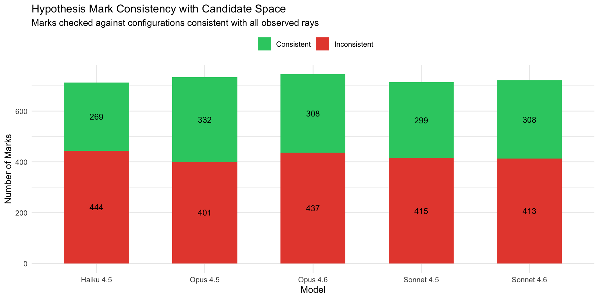
Code
# Link constraint violations to accuracy
det_guess_accuracy <- det_games |>
filter(!is.na(guess_in_candidates), !is.na(atoms_correct)) |>
group_by(guess_in_candidates) |>
summarise(
n = n(),
mean_atoms_correct = round(mean(atoms_correct), 2),
.groups = "drop"
)
if (nrow(det_guess_accuracy) > 0) {
cat("\nGuess consistency vs accuracy:\n")
for (i in seq_len(nrow(det_guess_accuracy))) {
row <- det_guess_accuracy[i, ]
cat(paste0(" Guess ", ifelse(row$guess_in_candidates, "in", "not in"),
" candidates: mean atoms correct = ", row$mean_atoms_correct,
" (n=", row$n, ")\n"))
}
}
Guess consistency vs accuracy:
Guess not in candidates: mean atoms correct = 0.95 (n=656)
Guess in candidates: mean atoms correct = 3.54 (n=140)Constraint violation summary. Of 3626 total hypothesis marks, 2110 (58.2%) were inconsistent with the candidate space — the marked position did not appear as an atom in any remaining candidate configuration. This indicates the LLM is not maintaining a faithful constraint set.
4.6.6.4 Per-Game Summary
Code
det_game_table <- det_games |>
arrange(model_name, config_index) |>
select(
model_name, config_index, total_rays_fired, optimal_solver_rays,
rays_surplus, n_optimal_rays, excess_rays, mean_ray_rank,
n_inconsistent_marks, guess_in_candidates, atoms_correct, game_score
) |>
mutate(
guess_in_candidates = ifelse(is.na(guess_in_candidates), "—",
ifelse(guess_in_candidates, "Yes", "No"))
)
kable(det_game_table,
col.names = c("Model", "Config", "Rays", "Optimal Rays", "Surplus",
"Optimal Selections", "Excess", "Mean Rank",
"Inconsistent Marks", "Guess OK", "Atoms Correct", "Score"),
caption = "Deterministic Play Analysis: Per-Game Detail",
digits = 2) |>
kable_styling(bootstrap_options = c("striped", "hover", "condensed"),
font_size = 12) |>
scroll_box(width = "100%")| Model | Config | Rays | Optimal Rays | Surplus | Optimal Selections | Excess | Mean Rank | Inconsistent Marks | Guess OK | Atoms Correct | Score |
|---|---|---|---|---|---|---|---|---|---|---|---|
| Haiku 4.5 | 0 | 10 | 8 | 2 | 3 | 2 | 11.60 | 3 | No | 1 | 31 |
| Haiku 4.5 | 0 | 9 | 8 | 1 | 3 | 2 | 12.22 | 3 | No | 0 | 35 |
| Haiku 4.5 | 0 | 8 | 8 | 0 | 3 | 2 | 12.25 | 4 | No | 0 | 35 |
| Haiku 4.5 | 0 | 13 | 8 | 5 | 5 | 4 | 11.08 | 4 | No | 0 | 41 |
| Haiku 4.5 | 0 | 11 | 8 | 3 | 5 | 4 | 8.91 | 4 | No | 0 | 38 |
| Haiku 4.5 | 0 | 16 | 8 | 8 | 12 | 12 | 3.38 | 3 | No | 1 | 40 |
| Haiku 4.5 | 0 | 9 | 8 | 1 | 0 | 0 | 14.11 | 3 | No | 2 | 24 |
| Haiku 4.5 | 0 | 8 | 8 | 0 | 0 | 0 | 16.50 | 2 | No | 1 | 27 |
| Haiku 4.5 | 0 | 10 | 8 | 2 | 1 | 0 | 14.60 | 3 | No | 0 | 36 |
| Haiku 4.5 | 0 | 11 | 8 | 3 | 1 | 1 | 15.18 | 4 | No | 0 | 37 |
| Haiku 4.5 | 0 | 17 | 8 | 9 | 9 | 8 | 5.41 | 7 | No | 0 | 46 |
| Haiku 4.5 | 0 | 15 | 8 | 7 | 5 | 3 | 11.53 | 6 | No | 0 | 43 |
| Haiku 4.5 | 0 | 10 | 8 | 2 | 0 | 0 | 15.10 | 5 | No | 0 | 35 |
| Haiku 4.5 | 0 | 10 | 8 | 2 | 0 | 0 | 12.50 | 4 | No | 0 | 36 |
| Haiku 4.5 | 0 | 6 | 8 | -2 | 0 | 0 | 17.67 | 3 | No | 0 | 29 |
| Haiku 4.5 | 0 | 9 | 8 | 1 | 0 | 0 | 13.11 | 1 | No | 1 | 29 |
| Haiku 4.5 | 1 | 11 | 9 | 2 | 0 | 0 | 18.17 | 3 | No | 1 | 32 |
| Haiku 4.5 | 1 | 14 | 9 | 5 | 2 | 6 | 16.30 | 2 | No | 2 | 30 |
| Haiku 4.5 | 1 | 10 | 9 | 1 | 0 | 0 | 11.70 | 2 | No | 2 | 26 |
| Haiku 4.5 | 1 | 13 | 9 | 4 | 4 | 4 | 15.38 | 2 | No | 2 | 28 |
| Haiku 4.5 | 1 | 8 | 9 | -1 | 1 | 0 | 13.25 | 1 | No | 3 | 16 |
| Haiku 4.5 | 1 | 7 | 9 | -2 | 0 | 0 | 22.00 | 0 | No | 1 | 24 |
| Haiku 4.5 | 1 | 13 | 9 | 4 | 2 | 1 | 12.31 | 2 | No | 2 | 28 |
| Haiku 4.5 | 1 | 13 | 9 | 4 | 0 | 0 | 19.00 | 4 | No | 3 | 24 |
| Haiku 4.5 | 1 | 16 | 9 | 7 | 6 | 6 | 11.50 | 3 | No | 1 | 39 |
| Haiku 4.5 | 1 | 19 | 9 | 10 | 4 | 11 | 13.42 | 4 | No | 2 | 37 |
| Haiku 4.5 | 1 | 15 | 9 | 6 | 1 | 0 | 13.47 | 6 | No | 2 | 31 |
| Haiku 4.5 | 1 | 17 | 9 | 8 | 8 | 8 | 11.65 | 1 | No | 3 | 29 |
| Haiku 4.5 | 1 | 11 | 9 | 2 | 3 | 5 | 14.00 | 4 | No | 1 | 30 |
| Haiku 4.5 | 1 | 8 | 9 | -1 | 0 | 0 | 15.00 | 1 | No | 3 | 16 |
| Haiku 4.5 | 1 | 9 | 9 | 0 | 0 | 0 | 16.86 | 6 | No | 1 | 28 |
| Haiku 4.5 | 1 | 13 | 9 | 4 | 2 | 1 | 11.54 | 3 | No | 1 | 34 |
| Haiku 4.5 | 2 | 8 | 7 | 1 | 0 | 0 | 14.62 | 4 | No | 0 | 32 |
| Haiku 4.5 | 2 | 10 | 7 | 3 | 0 | 0 | 16.70 | 4 | No | 0 | 33 |
| Haiku 4.5 | 2 | 11 | 7 | 4 | 0 | 0 | 17.55 | 4 | No | 0 | 34 |
| Haiku 4.5 | 2 | 11 | 7 | 4 | 0 | 0 | 16.45 | 4 | No | 0 | 35 |
| Haiku 4.5 | 2 | 16 | 7 | 9 | 0 | 0 | 19.44 | 0 | Yes | 4 | 16 |
| Haiku 4.5 | 2 | 10 | 7 | 3 | 0 | 0 | 18.30 | 0 | Yes | 4 | 10 |
| Haiku 4.5 | 2 | 11 | 7 | 4 | 0 | 0 | 19.00 | 0 | Yes | 4 | 12 |
| Haiku 4.5 | 2 | 14 | 7 | 7 | 0 | 0 | 16.64 | 0 | Yes | 4 | 17 |
| Haiku 4.5 | 2 | 8 | 7 | 1 | 0 | 0 | 18.75 | 4 | No | 0 | 32 |
| Haiku 4.5 | 2 | 16 | 7 | 9 | 0 | 0 | 15.88 | 1 | No | 3 | 25 |
| Haiku 4.5 | 2 | 6 | 7 | -1 | 0 | 0 | 23.67 | 2 | No | 1 | 23 |
| Haiku 4.5 | 2 | 17 | 7 | 10 | 0 | 0 | 16.65 | 8 | No | 2 | 32 |
| Haiku 4.5 | 2 | 11 | 7 | 4 | 1 | 0 | 14.55 | 3 | No | 2 | 25 |
| Haiku 4.5 | 2 | 8 | 7 | 1 | 1 | 0 | 17.25 | 3 | No | 1 | 25 |
| Haiku 4.5 | 2 | 5 | 7 | -2 | 0 | 0 | 22.80 | 1 | No | 0 | 26 |
| Haiku 4.5 | 2 | 9 | 7 | 2 | 0 | 0 | 20.89 | 2 | No | 1 | 25 |
| Haiku 4.5 | 3 | 11 | 7 | 4 | 0 | 0 | 21.36 | 2 | No | 0 | 32 |
| Haiku 4.5 | 3 | 12 | 7 | 5 | 0 | 0 | 15.33 | 2 | No | 0 | 34 |
| Haiku 4.5 | 3 | 13 | 7 | 6 | 5 | 5 | 9.54 | 3 | No | 0 | 37 |
| Haiku 4.5 | 3 | 10 | 7 | 3 | 3 | 2 | 12.00 | 2 | No | 2 | 24 |
| Haiku 4.5 | 3 | 8 | 7 | 1 | 0 | 0 | 16.62 | 2 | No | 1 | 24 |
| Haiku 4.5 | 3 | 10 | 7 | 3 | 0 | 0 | 17.20 | 2 | No | 2 | 21 |
| Haiku 4.5 | 3 | 7 | 7 | 0 | 0 | 0 | 18.86 | 2 | No | 1 | 24 |
| Haiku 4.5 | 3 | 8 | 7 | 1 | 0 | 0 | 16.88 | 2 | No | 2 | 19 |
| Haiku 4.5 | 3 | 13 | 7 | 6 | 3 | 2 | 14.08 | 3 | No | 0 | 36 |
| Haiku 4.5 | 3 | 17 | 7 | 10 | 2 | 1 | 16.82 | 3 | No | 0 | 40 |
| Haiku 4.5 | 3 | 16 | 7 | 9 | 3 | 3 | 16.25 | 2 | No | 0 | 38 |
| Haiku 4.5 | 3 | 14 | 7 | 7 | 8 | 7 | 8.93 | 9 | No | 0 | 36 |
| Haiku 4.5 | 3 | 10 | 7 | 3 | 3 | 1 | 14.00 | 3 | No | 1 | 28 |
| Haiku 4.5 | 3 | 14 | 7 | 7 | 2 | 2 | 15.43 | 5 | No | 0 | 35 |
| Haiku 4.5 | 3 | 7 | 7 | 0 | 0 | 0 | 19.43 | 0 | No | 2 | 18 |
| Haiku 4.5 | 3 | 14 | 7 | 7 | 3 | 3 | 11.21 | 4 | No | 2 | 26 |
| Haiku 4.5 | 4 | 14 | 7 | 7 | 1 | 10 | 9.20 | 4 | No | 0 | 45 |
| Haiku 4.5 | 4 | 18 | 7 | 11 | 0 | 0 | 21.75 | 3 | No | 0 | 52 |
| Haiku 4.5 | 4 | 14 | 7 | 7 | 1 | 0 | 14.71 | 3 | No | 0 | 44 |
| Haiku 4.5 | 4 | 8 | 7 | 1 | 0 | 0 | 17.50 | 3 | No | 0 | 32 |
| Haiku 4.5 | 4 | 14 | 7 | 7 | 0 | 0 | 18.91 | 3 | No | 0 | 44 |
| Haiku 4.5 | 4 | 14 | 7 | 7 | 0 | 0 | 18.00 | 3 | No | 0 | 44 |
| Haiku 4.5 | 4 | 12 | 7 | 5 | 0 | 0 | 14.22 | 4 | No | 0 | 40 |
| Haiku 4.5 | 4 | 16 | 7 | 9 | 1 | 8 | 10.22 | 6 | No | 0 | 49 |
| Haiku 4.5 | 4 | 10 | 7 | 3 | 1 | 1 | 9.80 | 4 | No | 0 | 36 |
| Haiku 4.5 | 4 | 14 | 7 | 7 | 1 | 0 | 15.75 | 4 | No | 0 | 44 |
| Haiku 4.5 | 4 | 7 | 7 | 0 | 0 | 0 | 18.57 | 3 | No | 0 | 30 |
| Haiku 4.5 | 4 | 13 | 7 | 6 | 0 | 0 | 17.25 | 4 | No | 0 | 44 |
| Haiku 4.5 | 4 | 12 | 7 | 5 | 1 | 0 | 12.67 | 5 | No | 0 | 41 |
| Haiku 4.5 | 4 | 14 | 7 | 7 | 0 | 0 | 17.75 | 3 | No | 0 | 46 |
| Haiku 4.5 | 4 | 10 | 7 | 3 | 0 | 0 | 14.88 | 6 | No | 1 | 31 |
| Haiku 4.5 | 4 | 14 | 7 | 7 | 0 | 0 | 17.43 | 4 | No | 2 | 36 |
| Haiku 4.5 | 5 | 10 | 9 | 1 | 5 | 4 | 7.40 | 2 | No | 2 | 24 |
| Haiku 4.5 | 5 | 16 | 9 | 7 | 3 | 2 | 14.12 | 2 | No | 1 | 38 |
| Haiku 4.5 | 5 | 9 | 9 | 0 | 3 | 2 | 10.11 | 4 | No | 0 | 33 |
| Haiku 4.5 | 5 | 9 | 9 | 0 | 3 | 0 | 7.44 | 4 | No | 0 | 33 |
| Haiku 4.5 | 5 | 15 | 9 | 6 | 0 | 0 | 13.73 | 2 | No | 1 | 38 |
| Haiku 4.5 | 5 | 12 | 9 | 3 | 0 | 0 | 18.42 | 1 | No | 1 | 32 |
| Haiku 4.5 | 5 | 16 | 9 | 7 | 5 | 5 | 11.50 | 3 | No | 1 | 40 |
| Haiku 4.5 | 5 | 10 | 9 | 1 | 0 | 0 | 19.40 | 1 | No | 2 | 25 |
| Haiku 4.5 | 5 | 13 | 9 | 4 | 7 | 6 | 8.69 | 3 | No | 0 | 41 |
| Haiku 4.5 | 5 | 15 | 9 | 6 | 9 | 7 | 5.20 | 4 | No | 0 | 43 |
| Haiku 4.5 | 5 | 9 | 9 | 0 | 0 | 0 | 18.22 | 4 | No | 0 | 34 |
| Haiku 4.5 | 5 | 16 | 9 | 7 | 11 | 9 | 8.06 | 9 | No | 1 | 38 |
| Haiku 4.5 | 5 | 11 | 9 | 2 | 3 | 2 | 11.91 | 4 | No | 0 | 35 |
| Haiku 4.5 | 5 | 9 | 9 | 0 | 1 | 0 | 9.67 | 4 | No | 0 | 32 |
| Haiku 4.5 | 5 | 6 | 9 | -3 | 0 | 0 | 17.67 | 2 | No | 0 | 30 |
| Haiku 4.5 | 5 | 16 | 9 | 7 | 1 | 0 | 13.81 | 3 | No | 1 | 40 |
| Haiku 4.5 | 6 | 9 | 8 | 1 | 0 | 0 | 17.00 | 0 | Yes | 4 | 12 |
| Haiku 4.5 | 6 | 13 | 8 | 5 | 0 | 0 | 14.85 | 0 | No | 3 | 21 |
| Haiku 4.5 | 6 | 9 | 8 | 1 | 0 | 0 | 18.89 | 0 | Yes | 4 | 12 |
| Haiku 4.5 | 6 | 11 | 8 | 3 | 0 | 0 | 15.82 | 0 | Yes | 4 | 15 |
| Haiku 4.5 | 6 | 11 | 8 | 3 | 2 | 0 | 14.73 | 0 | Yes | 4 | 14 |
| Haiku 4.5 | 6 | 8 | 8 | 0 | 0 | 0 | 16.12 | 0 | Yes | 4 | 10 |
| Haiku 4.5 | 6 | 9 | 8 | 1 | 0 | 0 | 17.56 | 0 | Yes | 4 | 12 |
| Haiku 4.5 | 6 | 11 | 8 | 3 | 1 | 0 | 12.00 | 0 | Yes | 4 | 13 |
| Haiku 4.5 | 6 | 16 | 8 | 8 | 4 | 2 | 10.94 | 0 | Yes | 4 | 20 |
| Haiku 4.5 | 6 | 10 | 8 | 2 | 0 | 0 | 19.60 | 0 | Yes | 4 | 12 |
| Haiku 4.5 | 6 | 11 | 8 | 3 | 1 | 0 | 15.55 | 2 | No | 2 | 25 |
| Haiku 4.5 | 6 | 17 | 8 | 9 | 2 | 0 | 16.47 | 1 | No | 2 | 32 |
| Haiku 4.5 | 6 | 11 | 8 | 3 | 2 | 0 | 17.09 | 0 | Yes | 4 | 14 |
| Haiku 4.5 | 6 | 13 | 8 | 5 | 1 | 0 | 14.08 | 0 | Yes | 4 | 16 |
| Haiku 4.5 | 6 | 6 | 8 | -2 | 0 | 0 | 21.17 | 0 | Yes | 4 | 7 |
| Haiku 4.5 | 6 | 12 | 8 | 4 | 0 | 0 | 16.17 | 0 | Yes | 4 | 14 |
| Haiku 4.5 | 7 | 7 | 8 | -1 | 1 | 1 | 10.57 | 4 | No | 0 | 33 |
| Haiku 4.5 | 7 | 13 | 8 | 5 | 8 | 8 | 4.85 | 3 | No | 0 | 42 |
| Haiku 4.5 | 7 | 10 | 8 | 2 | 4 | 3 | 7.40 | 4 | No | 0 | 34 |
| Haiku 4.5 | 7 | 10 | 8 | 2 | 4 | 3 | 8.10 | 2 | No | 0 | 36 |
| Haiku 4.5 | 7 | 8 | 8 | 0 | 4 | 4 | 5.62 | 4 | No | 0 | 32 |
| Haiku 4.5 | 7 | 11 | 8 | 3 | 1 | 1 | 14.09 | 2 | No | 2 | 26 |
| Haiku 4.5 | 7 | 8 | 8 | 0 | 0 | 0 | 12.50 | 1 | No | 0 | 30 |
| Haiku 4.5 | 7 | 8 | 8 | 0 | 3 | 2 | 11.00 | 3 | No | 0 | 32 |
| Haiku 4.5 | 7 | 18 | 8 | 10 | 3 | 3 | 13.61 | 6 | No | 0 | 46 |
| Haiku 4.5 | 7 | 6 | 8 | -2 | 0 | 0 | 19.00 | 3 | No | 0 | 28 |
| Haiku 4.5 | 7 | 8 | 8 | 0 | 0 | 0 | 21.12 | 5 | No | 0 | 31 |
| Haiku 4.5 | 7 | 13 | 8 | 5 | 1 | 0 | 13.69 | 4 | No | 0 | 39 |
| Haiku 4.5 | 7 | 5 | 8 | -3 | 1 | 0 | 11.40 | 2 | No | 1 | 23 |
| Haiku 4.5 | 7 | 9 | 8 | 1 | 2 | 2 | 12.44 | 3 | No | 0 | 34 |
| Haiku 4.5 | 7 | 9 | 8 | 1 | 0 | 0 | 16.78 | 1 | No | 2 | 22 |
| Haiku 4.5 | 7 | 13 | 8 | 5 | 8 | 8 | 4.85 | 5 | No | 0 | 40 |
| Haiku 4.5 | 8 | 13 | 8 | 5 | 0 | 0 | 16.54 | 1 | No | 1 | 30 |
| Haiku 4.5 | 8 | 15 | 8 | 7 | 0 | 0 | 18.53 | 2 | No | 1 | 35 |
| Haiku 4.5 | 8 | 16 | 8 | 8 | 0 | 0 | 16.62 | 3 | No | 1 | 36 |
| Haiku 4.5 | 8 | 13 | 8 | 5 | 1 | 0 | 19.00 | 3 | No | 1 | 32 |
| Haiku 4.5 | 8 | 14 | 8 | 6 | 0 | 0 | 16.07 | 0 | Yes | 4 | 19 |
| Haiku 4.5 | 8 | 16 | 8 | 8 | 1 | 1 | 16.38 | 3 | No | 1 | 37 |
| Haiku 4.5 | 8 | 10 | 8 | 2 | 0 | 0 | 16.70 | 4 | No | 2 | 22 |
| Haiku 4.5 | 8 | 11 | 8 | 3 | 0 | 0 | 17.55 | 3 | No | 1 | 31 |
| Haiku 4.5 | 8 | 17 | 8 | 9 | 0 | 0 | 14.82 | 3 | No | 1 | 36 |
| Haiku 4.5 | 8 | 13 | 8 | 5 | 0 | 0 | 19.92 | 4 | No | 2 | 27 |
| Haiku 4.5 | 8 | 16 | 8 | 8 | 2 | 2 | 11.88 | 6 | No | 2 | 29 |
| Haiku 4.5 | 8 | 10 | 8 | 2 | 0 | 0 | 19.10 | 4 | No | 0 | 34 |
| Haiku 4.5 | 8 | 6 | 8 | -2 | 0 | 0 | 16.00 | 0 | Yes | 0 | 26 |
| Haiku 4.5 | 8 | 12 | 8 | 4 | 1 | 0 | 18.17 | 4 | No | 0 | 35 |
| Haiku 4.5 | 8 | 5 | 8 | -3 | 0 | 0 | 19.60 | 2 | Yes | 1 | 21 |
| Haiku 4.5 | 8 | 12 | 8 | 4 | 0 | 0 | 16.50 | 4 | No | 1 | 30 |
| Haiku 4.5 | 9 | 6 | 5 | 1 | 0 | 0 | 19.17 | 1 | No | 1 | 24 |
| Haiku 4.5 | 9 | 8 | 5 | 3 | 0 | 0 | 16.50 | 3 | No | 1 | 25 |
| Haiku 4.5 | 9 | 7 | 5 | 2 | 0 | 0 | 19.00 | 1 | No | 1 | 23 |
| Haiku 4.5 | 9 | 9 | 5 | 4 | 0 | 0 | 20.22 | 2 | No | 0 | 31 |
| Haiku 4.5 | 9 | 10 | 5 | 5 | 3 | 1 | 10.40 | 1 | No | 2 | 23 |
| Haiku 4.5 | 9 | 5 | 5 | 0 | 0 | 0 | 17.60 | 1 | No | 1 | 21 |
| Haiku 4.5 | 9 | 9 | 5 | 4 | 5 | 4 | 5.67 | 3 | No | 1 | 28 |
| Haiku 4.5 | 9 | 11 | 5 | 6 | 6 | 6 | 7.18 | 4 | No | 1 | 30 |
| Haiku 4.5 | 9 | 9 | 5 | 4 | 0 | 0 | 19.89 | 3 | No | 1 | 27 |
| Haiku 4.5 | 9 | 8 | 5 | 3 | 0 | 0 | 16.75 | 1 | No | 1 | 26 |
| Haiku 4.5 | 9 | 9 | 5 | 4 | 5 | 3 | 9.00 | 3 | No | 1 | 28 |
| Haiku 4.5 | 9 | 14 | 5 | 9 | 8 | 7 | 8.50 | 4 | No | 2 | 28 |
| Haiku 4.5 | 9 | 6 | 5 | 1 | 0 | 0 | 19.83 | 0 | Yes | 3 | 13 |
| Haiku 4.5 | 9 | 13 | 5 | 8 | 8 | 8 | 6.54 | 5 | No | 1 | 31 |
| Haiku 4.5 | 9 | 9 | 5 | 4 | 1 | 1 | 13.44 | 4 | No | 0 | 31 |
| Haiku 4.5 | 9 | 13 | 5 | 8 | 8 | 7 | 7.15 | 4 | No | 1 | 33 |
| Opus 4.5 | 0 | 10 | 8 | 2 | 1 | 0 | 13.50 | 2 | No | 1 | 32 |
| Opus 4.5 | 0 | 5 | 8 | -3 | 1 | 0 | 17.40 | 3 | No | 0 | 29 |
| Opus 4.5 | 0 | 9 | 8 | 1 | 0 | 0 | 15.11 | 4 | No | 0 | 35 |
| Opus 4.5 | 0 | 13 | 8 | 5 | 3 | 2 | 11.92 | 3 | No | 1 | 33 |
| Opus 4.5 | 0 | 13 | 8 | 5 | 7 | 7 | 6.69 | 1 | No | 3 | 25 |
| Opus 4.5 | 0 | 7 | 8 | -1 | 1 | 1 | 14.57 | 4 | No | 0 | 32 |
| Opus 4.5 | 0 | 8 | 8 | 0 | 0 | 0 | 18.25 | 0 | Yes | 2 | 21 |
| Opus 4.5 | 0 | 10 | 8 | 2 | 4 | 4 | 10.30 | 1 | No | 3 | 22 |
| Opus 4.5 | 0 | 15 | 8 | 7 | 5 | 5 | 11.87 | 7 | No | 0 | 41 |
| Opus 4.5 | 0 | 9 | 8 | 1 | 3 | 3 | 11.33 | 4 | No | 0 | 34 |
| Opus 4.5 | 0 | 16 | 8 | 8 | 12 | 10 | 4.06 | 3 | No | 1 | 39 |
| Opus 4.5 | 0 | 17 | 8 | 9 | 13 | 11 | 3.88 | 4 | No | 0 | 45 |
| Opus 4.5 | 0 | 5 | 8 | -3 | 0 | 0 | 19.80 | 2 | No | 0 | 26 |
| Opus 4.5 | 0 | 6 | 8 | -2 | 0 | 0 | 17.67 | 4 | No | 0 | 29 |
| Opus 4.5 | 0 | 4 | 8 | -4 | 0 | 0 | 18.75 | 2 | No | 0 | 25 |
| Opus 4.5 | 0 | 13 | 8 | 5 | 3 | 3 | 11.92 | 8 | No | 0 | 41 |
| Opus 4.5 | 1 | 15 | 9 | 6 | 0 | 0 | 18.17 | 3 | No | 1 | 39 |
| Opus 4.5 | 1 | 12 | 9 | 3 | 0 | 0 | 20.33 | 3 | No | 1 | 34 |
| Opus 4.5 | 1 | 12 | 9 | 3 | 0 | 0 | 16.30 | 2 | No | 2 | 28 |
| Opus 4.5 | 1 | 11 | 9 | 2 | 0 | 0 | 20.86 | 3 | No | 1 | 32 |
| Opus 4.5 | 1 | 7 | 9 | -2 | 0 | 0 | 17.86 | 2 | No | 1 | 25 |
| Opus 4.5 | 1 | 9 | 9 | 0 | 0 | 0 | 20.33 | 1 | No | 3 | 16 |
| Opus 4.5 | 1 | 7 | 9 | -2 | 1 | 0 | 14.57 | 0 | Yes | 3 | 14 |
| Opus 4.5 | 1 | 9 | 9 | 0 | 0 | 0 | 13.44 | 3 | No | 1 | 29 |
| Opus 4.5 | 1 | 16 | 9 | 7 | 2 | 8 | 18.11 | 2 | No | 3 | 28 |
| Opus 4.5 | 1 | 10 | 9 | 1 | 0 | 0 | 17.90 | 3 | No | 1 | 30 |
| Opus 4.5 | 1 | 11 | 9 | 2 | 1 | 0 | 16.73 | 2 | No | 2 | 26 |
| Opus 4.5 | 1 | 16 | 9 | 7 | 0 | 0 | 20.80 | 4 | No | 2 | 34 |
| Opus 4.5 | 1 | 13 | 9 | 4 | 1 | 0 | 13.82 | 6 | No | 2 | 30 |
| Opus 4.5 | 1 | 10 | 9 | 1 | 1 | 0 | 16.40 | 1 | No | 3 | 18 |
| Opus 4.5 | 1 | 6 | 9 | -3 | 0 | 0 | 14.83 | 2 | No | 2 | 18 |
| Opus 4.5 | 1 | 12 | 9 | 3 | 3 | 2 | 12.58 | 3 | No | 2 | 27 |
| Opus 4.5 | 2 | 14 | 7 | 7 | 0 | 0 | 13.36 | 1 | No | 3 | 24 |
| Opus 4.5 | 2 | 9 | 7 | 2 | 0 | 0 | 19.11 | 0 | Yes | 4 | 9 |
| Opus 4.5 | 2 | 9 | 7 | 2 | 0 | 0 | 14.78 | 2 | No | 2 | 24 |
| Opus 4.5 | 2 | 10 | 7 | 3 | 1 | 0 | 14.40 | 3 | No | 0 | 35 |
| Opus 4.5 | 2 | 10 | 7 | 3 | 0 | 0 | 17.90 | 1 | No | 3 | 18 |
| Opus 4.5 | 2 | 11 | 7 | 4 | 0 | 0 | 17.18 | 0 | Yes | 4 | 12 |
| Opus 4.5 | 2 | 8 | 7 | 1 | 0 | 0 | 14.62 | 1 | Yes | 4 | 10 |
| Opus 4.5 | 2 | 10 | 7 | 3 | 0 | 0 | 17.10 | 0 | Yes | 2 | 21 |
| Opus 4.5 | 2 | 11 | 7 | 4 | 0 | 0 | 17.82 | 4 | No | 0 | 34 |
| Opus 4.5 | 2 | 18 | 7 | 11 | 1 | 0 | 16.44 | 0 | Yes | 4 | 22 |
| Opus 4.5 | 2 | 15 | 7 | 8 | 1 | 0 | 17.13 | 3 | No | 2 | 29 |
| Opus 4.5 | 2 | 7 | 7 | 0 | 0 | 0 | 19.71 | 2 | No | 0 | 30 |
| Opus 4.5 | 2 | 13 | 7 | 6 | 1 | 0 | 11.92 | 1 | No | 3 | 23 |
| Opus 4.5 | 2 | 11 | 7 | 4 | 0 | 0 | 21.45 | 0 | Yes | 2 | 21 |
| Opus 4.5 | 2 | 6 | 7 | -1 | 0 | 0 | 18.67 | 1 | No | 0 | 27 |
| Opus 4.5 | 2 | 4 | 7 | -3 | 0 | 0 | 14.00 | 0 | Yes | 0 | 24 |
| Opus 4.5 | 3 | 7 | 7 | 0 | 0 | 0 | 18.43 | 2 | No | 1 | 23 |
| Opus 4.5 | 3 | 10 | 7 | 3 | 0 | 0 | 21.80 | 2 | No | 0 | 30 |
| Opus 4.5 | 3 | 9 | 7 | 2 | 0 | 0 | 20.11 | 2 | No | 0 | 29 |
| Opus 4.5 | 3 | 11 | 7 | 4 | 0 | 0 | 15.00 | 1 | No | 1 | 27 |
| Opus 4.5 | 3 | 7 | 7 | 0 | 0 | 0 | 13.14 | 2 | No | 1 | 23 |
| Opus 4.5 | 3 | 8 | 7 | 1 | 1 | 0 | 12.88 | 1 | No | 3 | 15 |
| Opus 4.5 | 3 | 14 | 7 | 7 | 2 | 1 | 18.43 | 3 | No | 1 | 30 |
| Opus 4.5 | 3 | 15 | 7 | 8 | 7 | 7 | 8.13 | 2 | No | 2 | 27 |
| Opus 4.5 | 3 | 14 | 7 | 7 | 3 | 3 | 9.71 | 4 | No | 1 | 32 |
| Opus 4.5 | 3 | 15 | 7 | 8 | 3 | 2 | 13.13 | 5 | No | 1 | 33 |
| Opus 4.5 | 3 | 18 | 7 | 11 | 8 | 7 | 10.39 | 1 | No | 1 | 36 |
| Opus 4.5 | 3 | 17 | 7 | 10 | 4 | 2 | 15.41 | 5 | No | 0 | 40 |
| Opus 4.5 | 3 | 12 | 7 | 5 | 4 | 4 | 8.83 | 1 | No | 3 | 20 |
| Opus 4.5 | 3 | 13 | 7 | 6 | 4 | 2 | 13.77 | 1 | No | 1 | 30 |
| Opus 4.5 | 3 | 7 | 7 | 0 | 0 | 0 | 21.86 | 1 | No | 1 | 23 |
| Opus 4.5 | 3 | 14 | 7 | 7 | 3 | 0 | 12.29 | 2 | No | 2 | 26 |
| Opus 4.5 | 4 | 12 | 7 | 5 | 0 | 0 | 17.17 | 1 | No | 2 | 30 |
| Opus 4.5 | 4 | 12 | 7 | 5 | 0 | 0 | 18.83 | 3 | No | 0 | 40 |
| Opus 4.5 | 4 | 15 | 7 | 8 | 0 | 0 | 16.75 | 3 | No | 0 | 46 |
| Opus 4.5 | 4 | 15 | 7 | 8 | 5 | 5 | 10.33 | 3 | No | 0 | 46 |
| Opus 4.5 | 4 | 9 | 7 | 2 | 0 | 0 | 17.86 | 3 | No | 0 | 34 |
| Opus 4.5 | 4 | 11 | 7 | 4 | 0 | 0 | 16.50 | 4 | No | 1 | 34 |
| Opus 4.5 | 4 | 11 | 7 | 4 | 0 | 0 | 17.43 | 6 | No | 1 | 34 |
| Opus 4.5 | 4 | 18 | 7 | 11 | 0 | 0 | 16.33 | 3 | No | 0 | 52 |
| Opus 4.5 | 4 | 16 | 7 | 9 | 0 | 0 | 18.00 | 4 | No | 0 | 48 |
| Opus 4.5 | 4 | 16 | 7 | 9 | 0 | 0 | 16.56 | 3 | No | 0 | 49 |
| Opus 4.5 | 4 | 16 | 7 | 9 | 0 | 0 | 16.86 | 4 | No | 0 | 48 |
| Opus 4.5 | 4 | 18 | 7 | 11 | 0 | 0 | 16.67 | 5 | No | 0 | 52 |
| Opus 4.5 | 4 | 13 | 7 | 6 | 0 | 0 | 13.56 | 7 | No | 0 | 42 |
| Opus 4.5 | 4 | 11 | 7 | 4 | 0 | 0 | 15.00 | 4 | No | 1 | 35 |
| Opus 4.5 | 4 | 9 | 7 | 2 | 1 | 0 | 16.78 | 5 | No | 1 | 29 |
| Opus 4.5 | 4 | 13 | 7 | 6 | 1 | 0 | 15.75 | 5 | No | 0 | 42 |
| Opus 4.5 | 5 | 13 | 9 | 4 | 4 | 3 | 10.46 | 4 | No | 0 | 39 |
| Opus 4.5 | 5 | 16 | 9 | 7 | 2 | 1 | 14.31 | 2 | No | 1 | 38 |
| Opus 4.5 | 5 | 15 | 9 | 6 | 3 | 2 | 15.00 | 2 | No | 1 | 36 |
| Opus 4.5 | 5 | 9 | 9 | 0 | 2 | 1 | 11.44 | 4 | No | 0 | 33 |
| Opus 4.5 | 5 | 16 | 9 | 7 | 0 | 0 | 13.62 | 3 | No | 1 | 39 |
| Opus 4.5 | 5 | 16 | 9 | 7 | 4 | 3 | 13.12 | 1 | No | 3 | 31 |
| Opus 4.5 | 5 | 11 | 9 | 2 | 2 | 0 | 15.09 | 0 | Yes | 3 | 20 |
| Opus 4.5 | 5 | 15 | 9 | 6 | 2 | 1 | 13.93 | 2 | No | 1 | 38 |
| Opus 4.5 | 5 | 15 | 9 | 6 | 8 | 6 | 10.87 | 5 | No | 1 | 35 |
| Opus 4.5 | 5 | 14 | 9 | 5 | 6 | 5 | 12.57 | 4 | No | 0 | 40 |
| Opus 4.5 | 5 | 9 | 9 | 0 | 0 | 0 | 14.78 | 4 | No | 0 | 34 |
| Opus 4.5 | 5 | 11 | 9 | 2 | 6 | 3 | 11.36 | 4 | No | 0 | 35 |
| Opus 4.5 | 5 | 9 | 9 | 0 | 1 | 0 | 14.89 | 3 | No | 0 | 34 |
| Opus 4.5 | 5 | 8 | 9 | -1 | 0 | 0 | 19.75 | 2 | No | 0 | 30 |
| Opus 4.5 | 5 | 6 | 9 | -3 | 0 | 0 | 20.17 | 1 | No | 0 | 28 |
| Opus 4.5 | 5 | 10 | 9 | 1 | 0 | 0 | 14.40 | 4 | No | 0 | 36 |
| Opus 4.5 | 6 | 9 | 8 | 1 | 0 | 0 | 18.89 | 0 | Yes | 4 | 12 |
| Opus 4.5 | 6 | 9 | 8 | 1 | 0 | 0 | 19.67 | 0 | Yes | 4 | 12 |
| Opus 4.5 | 6 | 10 | 8 | 2 | 0 | 0 | 17.70 | 0 | Yes | 4 | 13 |
| Opus 4.5 | 6 | 10 | 8 | 2 | 0 | 0 | 15.90 | 0 | Yes | 4 | 12 |
| Opus 4.5 | 6 | 16 | 8 | 8 | 0 | 0 | 14.88 | 0 | Yes | 4 | 21 |
| Opus 4.5 | 6 | 10 | 8 | 2 | 0 | 0 | 16.40 | 0 | Yes | 4 | 12 |
| Opus 4.5 | 6 | 11 | 8 | 3 | 0 | 0 | 15.55 | 0 | Yes | 4 | 13 |
| Opus 4.5 | 6 | 10 | 8 | 2 | 0 | 0 | 16.00 | 0 | Yes | 4 | 12 |
| Opus 4.5 | 6 | 8 | 8 | 0 | 0 | 0 | 26.25 | 0 | Yes | 4 | 8 |
| Opus 4.5 | 6 | 12 | 8 | 4 | 1 | 0 | 13.00 | 0 | Yes | 4 | 16 |
| Opus 4.5 | 6 | 11 | 8 | 3 | 0 | 0 | 19.45 | 0 | Yes | 4 | 13 |
| Opus 4.5 | 6 | 11 | 8 | 3 | 0 | 0 | 18.73 | 1 | No | 2 | 24 |
| Opus 4.5 | 6 | 10 | 8 | 2 | 0 | 0 | 18.10 | 0 | Yes | 4 | 12 |
| Opus 4.5 | 6 | 14 | 8 | 6 | 1 | 0 | 13.50 | 0 | Yes | 4 | 19 |
| Opus 4.5 | 6 | 15 | 8 | 7 | 1 | 0 | 9.33 | 1 | No | 3 | 23 |
| Opus 4.5 | 6 | 9 | 8 | 1 | 0 | 0 | 18.22 | 0 | Yes | 4 | 13 |
| Opus 4.5 | 7 | 11 | 8 | 3 | 0 | 0 | 9.73 | 4 | No | 0 | 36 |
| Opus 4.5 | 7 | 7 | 8 | -1 | 0 | 0 | 10.14 | 3 | No | 0 | 30 |
| Opus 4.5 | 7 | 9 | 8 | 1 | 2 | 2 | 9.33 | 3 | No | 0 | 35 |
| Opus 4.5 | 7 | 9 | 8 | 1 | 2 | 2 | 10.00 | 2 | No | 1 | 32 |
| Opus 4.5 | 7 | 8 | 8 | 0 | 4 | 4 | 7.12 | 2 | No | 2 | 22 |
| Opus 4.5 | 7 | 14 | 8 | 6 | 10 | 10 | 3.64 | 4 | No | 0 | 42 |
| Opus 4.5 | 7 | 6 | 8 | -2 | 0 | 0 | 11.67 | 2 | No | 0 | 28 |
| Opus 4.5 | 7 | 15 | 8 | 7 | 0 | 0 | 10.53 | 4 | No | 0 | 42 |
| Opus 4.5 | 7 | 10 | 8 | 2 | 6 | 6 | 6.90 | 4 | No | 0 | 36 |
| Opus 4.5 | 7 | 14 | 8 | 6 | 6 | 5 | 10.93 | 9 | No | 0 | 41 |
| Opus 4.5 | 7 | 11 | 8 | 3 | 3 | 3 | 11.18 | 4 | No | 0 | 38 |
| Opus 4.5 | 7 | 11 | 8 | 3 | 4 | 4 | 9.27 | 4 | No | 0 | 38 |
| Opus 4.5 | 7 | 9 | 8 | 1 | 4 | 3 | 7.78 | 3 | No | 1 | 29 |
| Opus 4.5 | 7 | 6 | 8 | -2 | 0 | 0 | 15.00 | 3 | No | 0 | 31 |
| Opus 4.5 | 7 | 9 | 8 | 1 | 4 | 4 | 7.33 | 4 | No | 0 | 34 |
| Opus 4.5 | 7 | 13 | 8 | 5 | 8 | 7 | 5.85 | 4 | No | 0 | 40 |
| Opus 4.5 | 8 | 12 | 8 | 4 | 1 | 0 | 13.50 | 3 | No | 0 | 34 |
| Opus 4.5 | 8 | 17 | 8 | 9 | 0 | 0 | 15.47 | 3 | No | 1 | 37 |
| Opus 4.5 | 8 | 12 | 8 | 4 | 0 | 0 | 18.25 | 3 | No | 1 | 30 |
| Opus 4.5 | 8 | 16 | 8 | 8 | 0 | 0 | 16.25 | 3 | No | 1 | 36 |
| Opus 4.5 | 8 | 10 | 8 | 2 | 0 | 0 | 14.10 | 0 | No | 1 | 28 |
| Opus 4.5 | 8 | 7 | 8 | -1 | 0 | 0 | 18.71 | 1 | No | 1 | 25 |
| Opus 4.5 | 8 | 10 | 8 | 2 | 0 | 0 | 16.00 | 1 | No | 1 | 27 |
| Opus 4.5 | 8 | 9 | 8 | 1 | 0 | 0 | 18.00 | 1 | No | 1 | 25 |
| Opus 4.5 | 8 | 16 | 8 | 8 | 0 | 0 | 16.00 | 3 | No | 1 | 36 |
| Opus 4.5 | 8 | 12 | 8 | 4 | 0 | 0 | 20.92 | 4 | No | 0 | 36 |
| Opus 4.5 | 8 | 17 | 8 | 9 | 9 | 9 | 10.06 | 4 | No | 1 | 37 |
| Opus 4.5 | 8 | 19 | 8 | 11 | 2 | 1 | 14.26 | 10 | No | 1 | 39 |
| Opus 4.5 | 8 | 10 | 8 | 2 | 1 | 0 | 16.50 | 0 | No | 1 | 26 |
| Opus 4.5 | 8 | 10 | 8 | 2 | 1 | 0 | 18.70 | 7 | No | 1 | 28 |
| Opus 4.5 | 8 | 9 | 8 | 1 | 0 | 0 | 21.33 | 2 | No | 2 | 22 |
| Opus 4.5 | 8 | 9 | 8 | 1 | 0 | 0 | 18.33 | 0 | No | 0 | 30 |
| Opus 4.5 | 9 | 9 | 5 | 4 | 3 | 2 | 15.11 | 3 | No | 1 | 26 |
| Opus 4.5 | 9 | 7 | 5 | 2 | 1 | 1 | 15.86 | 2 | No | 1 | 25 |
| Opus 4.5 | 9 | 9 | 5 | 4 | 1 | 0 | 17.00 | 2 | No | 2 | 22 |
| Opus 4.5 | 9 | 6 | 5 | 1 | 0 | 0 | 17.67 | 0 | No | 1 | 22 |
| Opus 4.5 | 9 | 12 | 5 | 7 | 1 | 1 | 13.92 | 3 | No | 0 | 37 |
| Opus 4.5 | 9 | 6 | 5 | 1 | 0 | 0 | 15.83 | 0 | No | 1 | 23 |
| Opus 4.5 | 9 | 13 | 5 | 8 | 2 | 1 | 14.62 | 5 | No | 0 | 38 |
| Opus 4.5 | 9 | 12 | 5 | 7 | 0 | 0 | 18.25 | 0 | Yes | 3 | 18 |
| Opus 4.5 | 9 | 9 | 5 | 4 | 0 | 0 | 19.33 | 3 | No | 0 | 32 |
| Opus 4.5 | 9 | 16 | 5 | 11 | 11 | 10 | 6.00 | 4 | No | 2 | 31 |
| Opus 4.5 | 9 | 14 | 5 | 9 | 10 | 8 | 6.14 | 2 | No | 1 | 35 |
| Opus 4.5 | 9 | 16 | 5 | 11 | 8 | 7 | 8.94 | 9 | Yes | 4 | 21 |
| Opus 4.5 | 9 | 13 | 5 | 8 | 8 | 7 | 7.15 | 4 | No | 1 | 32 |
| Opus 4.5 | 9 | 6 | 5 | 1 | 0 | 0 | 19.33 | 0 | No | 1 | 22 |
| Opus 4.5 | 9 | 9 | 5 | 4 | 4 | 2 | 8.67 | 2 | No | 1 | 28 |
| Opus 4.5 | 9 | 11 | 5 | 6 | 6 | 3 | 8.00 | 2 | No | 2 | 25 |
| Opus 4.6 | 0 | 9 | 8 | 1 | 0 | 0 | 15.67 | 1 | No | 2 | 23 |
| Opus 4.6 | 0 | 15 | 8 | 7 | 1 | 0 | 11.87 | 3 | No | 1 | 37 |
| Opus 4.6 | 0 | 12 | 8 | 4 | 5 | 1 | 11.00 | 4 | No | 0 | 39 |
| Opus 4.6 | 0 | 12 | 8 | 4 | 0 | 0 | 16.83 | 3 | No | 1 | 32 |
| Opus 4.6 | 0 | 14 | 8 | 6 | 1 | 1 | 13.86 | 3 | No | 1 | 34 |
| Opus 4.6 | 0 | 15 | 8 | 7 | 9 | 9 | 4.40 | 4 | No | 2 | 34 |
| Opus 4.6 | 0 | 14 | 8 | 6 | 6 | 6 | 8.36 | 4 | No | 0 | 41 |
| Opus 4.6 | 0 | 8 | 8 | 0 | 0 | 0 | 17.75 | 0 | Yes | 3 | 16 |
| Opus 4.6 | 0 | 5 | 8 | -3 | 0 | 0 | 19.80 | 3 | No | 0 | 26 |
| Opus 4.6 | 0 | 8 | 8 | 0 | 0 | 0 | 19.75 | 3 | No | 0 | 32 |
| Opus 4.6 | 0 | 16 | 8 | 8 | 4 | 2 | 8.00 | 4 | No | 0 | 43 |
| Opus 4.6 | 0 | 17 | 8 | 9 | 5 | 2 | 8.06 | 8 | No | 0 | 45 |
| Opus 4.6 | 0 | 8 | 8 | 0 | 0 | 0 | 12.88 | 1 | Yes | 4 | 13 |
| Opus 4.6 | 0 | 8 | 8 | 0 | 2 | 1 | 14.50 | 4 | No | 0 | 32 |
| Opus 4.6 | 0 | 5 | 8 | -3 | 0 | 0 | 21.20 | 2 | No | 1 | 22 |
| Opus 4.6 | 0 | 6 | 8 | -2 | 0 | 0 | 13.50 | 3 | No | 1 | 25 |
| Opus 4.6 | 1 | 13 | 9 | 4 | 0 | 0 | 13.54 | 1 | No | 3 | 24 |
| Opus 4.6 | 1 | 16 | 9 | 7 | 0 | 0 | 22.71 | 4 | No | 1 | 38 |
| Opus 4.6 | 1 | 15 | 9 | 6 | 0 | 0 | 20.25 | 4 | No | 2 | 32 |
| Opus 4.6 | 1 | 16 | 9 | 7 | 0 | 0 | 16.27 | 3 | No | 1 | 37 |
| Opus 4.6 | 1 | 17 | 9 | 8 | 0 | 0 | 22.67 | 4 | No | 1 | 41 |
| Opus 4.6 | 1 | 14 | 9 | 5 | 4 | 3 | 13.21 | 3 | No | 2 | 30 |
| Opus 4.6 | 1 | 14 | 9 | 5 | 0 | 0 | 19.00 | 5 | No | 4 | 19 |
| Opus 4.6 | 1 | 15 | 9 | 6 | 0 | 0 | 17.43 | 11 | No | 3 | 29 |
| Opus 4.6 | 1 | 12 | 9 | 3 | 0 | 0 | 19.20 | 4 | No | 3 | 22 |
| Opus 4.6 | 1 | 9 | 9 | 0 | 0 | 0 | 19.67 | 3 | No | 1 | 28 |
| Opus 4.6 | 1 | 16 | 9 | 7 | 10 | 9 | 8.75 | 4 | No | 2 | 33 |
| Opus 4.6 | 1 | 13 | 9 | 4 | 4 | 4 | 14.15 | 2 | No | 2 | 29 |
| Opus 4.6 | 1 | 11 | 9 | 2 | 0 | 0 | 20.17 | 4 | No | 2 | 26 |
| Opus 4.6 | 1 | 5 | 9 | -4 | 0 | 0 | 24.80 | 0 | Yes | 2 | 15 |
| Opus 4.6 | 1 | 8 | 9 | -1 | 0 | 0 | 20.62 | 2 | No | 2 | 21 |
| Opus 4.6 | 1 | 12 | 9 | 3 | 0 | 0 | 19.88 | 7 | No | 2 | 27 |
| Opus 4.6 | 2 | 14 | 7 | 7 | 1 | 0 | 14.57 | 0 | Yes | 4 | 20 |
| Opus 4.6 | 2 | 16 | 7 | 9 | 0 | 0 | 14.25 | 1 | No | 3 | 25 |
| Opus 4.6 | 2 | 18 | 7 | 11 | 0 | 0 | 17.50 | 0 | Yes | 4 | 20 |
| Opus 4.6 | 2 | 12 | 7 | 5 | 0 | 0 | 14.25 | 4 | No | 0 | 36 |
| Opus 4.6 | 2 | 16 | 7 | 9 | 5 | 4 | 8.56 | 0 | Yes | 4 | 21 |
| Opus 4.6 | 2 | 11 | 7 | 4 | 2 | 0 | 11.91 | 0 | Yes | 4 | 15 |
| Opus 4.6 | 2 | 14 | 7 | 7 | 1 | 0 | 14.64 | 0 | Yes | 4 | 18 |
| Opus 4.6 | 2 | 13 | 7 | 6 | 1 | 0 | 13.85 | 0 | Yes | 4 | 17 |
| Opus 4.6 | 2 | 5 | 7 | -2 | 0 | 0 | 21.80 | 2 | No | 0 | 26 |
| Opus 4.6 | 2 | 17 | 7 | 10 | 1 | 0 | 14.71 | 3 | No | 1 | 38 |
| Opus 4.6 | 2 | 12 | 7 | 5 | 2 | 1 | 14.92 | 4 | No | 0 | 38 |
| Opus 4.6 | 2 | 17 | 7 | 10 | 4 | 4 | 12.12 | 8 | No | 1 | 39 |
| Opus 4.6 | 2 | 8 | 7 | 1 | 0 | 0 | 14.62 | 0 | Yes | 4 | 8 |
| Opus 4.6 | 2 | 7 | 7 | 0 | 1 | 0 | 15.57 | 3 | No | 1 | 25 |
| Opus 4.6 | 2 | 8 | 7 | 1 | 0 | 0 | 11.12 | 2 | No | 0 | 32 |
| Opus 4.6 | 2 | 12 | 7 | 5 | 0 | 0 | 11.75 | 2 | No | 2 | 27 |
| Opus 4.6 | 3 | 9 | 7 | 2 | 3 | 0 | 11.67 | 0 | Yes | 4 | 9 |
| Opus 4.6 | 3 | 15 | 7 | 8 | 4 | 3 | 11.67 | 5 | No | 2 | 27 |
| Opus 4.6 | 3 | 16 | 7 | 9 | 1 | 0 | 16.38 | 5 | No | 1 | 32 |
| Opus 4.6 | 3 | 15 | 7 | 8 | 3 | 3 | 10.47 | 4 | No | 0 | 38 |
| Opus 4.6 | 3 | 15 | 7 | 8 | 6 | 6 | 7.93 | 5 | No | 0 | 38 |
| Opus 4.6 | 3 | 11 | 7 | 4 | 4 | 2 | 11.91 | 0 | Yes | 4 | 13 |
| Opus 4.6 | 3 | 11 | 7 | 4 | 1 | 0 | 8.36 | 1 | No | 3 | 18 |
| Opus 4.6 | 3 | 12 | 7 | 5 | 2 | 2 | 15.33 | 3 | No | 3 | 20 |
| Opus 4.6 | 3 | 8 | 7 | 1 | 0 | 0 | 26.25 | 0 | Yes | 0 | 28 |
| Opus 4.6 | 3 | 14 | 7 | 7 | 3 | 2 | 13.36 | 6 | No | 1 | 32 |
| Opus 4.6 | 3 | 8 | 7 | 1 | 0 | 0 | 26.25 | 0 | Yes | 0 | 28 |
| Opus 4.6 | 3 | 17 | 7 | 10 | 5 | 3 | 14.88 | 3 | No | 1 | 35 |
| Opus 4.6 | 3 | 11 | 7 | 4 | 1 | 0 | 13.64 | 4 | No | 1 | 29 |
| Opus 4.6 | 3 | 10 | 7 | 3 | 3 | 2 | 7.50 | 2 | No | 2 | 23 |
| Opus 4.6 | 3 | 8 | 7 | 1 | 0 | 0 | 14.00 | 1 | No | 2 | 20 |
| Opus 4.6 | 3 | 14 | 7 | 7 | 3 | 3 | 11.86 | 2 | No | 2 | 27 |
| Opus 4.6 | 4 | 11 | 7 | 4 | 1 | 0 | 17.82 | 2 | No | 2 | 28 |
| Opus 4.6 | 4 | 14 | 7 | 7 | 0 | 0 | 16.33 | 4 | No | 0 | 44 |
| Opus 4.6 | 4 | 15 | 7 | 8 | 0 | 0 | 17.25 | 4 | No | 0 | 46 |
| Opus 4.6 | 4 | 15 | 7 | 8 | 1 | 0 | 15.75 | 4 | No | 0 | 46 |
| Opus 4.6 | 4 | 16 | 7 | 9 | 0 | 0 | 17.70 | 3 | No | 0 | 48 |
| Opus 4.6 | 4 | 12 | 7 | 5 | 0 | 0 | 15.18 | 2 | No | 2 | 30 |
| Opus 4.6 | 4 | 14 | 7 | 7 | 2 | 3 | 11.92 | 8 | No | 0 | 45 |
| Opus 4.6 | 4 | 10 | 7 | 3 | 0 | 0 | 15.67 | 4 | No | 2 | 28 |
| Opus 4.6 | 4 | 13 | 7 | 6 | 0 | 0 | 13.33 | 4 | No | 0 | 42 |
| Opus 4.6 | 4 | 15 | 7 | 8 | 0 | 0 | 18.83 | 4 | No | 0 | 46 |
| Opus 4.6 | 4 | 15 | 7 | 8 | 0 | 0 | 16.33 | 4 | No | 0 | 46 |
| Opus 4.6 | 4 | 15 | 7 | 8 | 0 | 0 | 16.33 | 4 | No | 0 | 46 |
| Opus 4.6 | 4 | 6 | 7 | -1 | 0 | 0 | 13.83 | 4 | No | 0 | 29 |
| Opus 4.6 | 4 | 11 | 7 | 4 | 0 | 0 | 15.75 | 3 | No | 1 | 35 |
| Opus 4.6 | 4 | 4 | 7 | -3 | 0 | 0 | 21.50 | 0 | Yes | 0 | 24 |
| Opus 4.6 | 4 | 14 | 7 | 7 | 1 | 0 | 16.50 | 5 | No | 0 | 44 |
| Opus 4.6 | 5 | 16 | 9 | 7 | 7 | 5 | 8.38 | 3 | No | 2 | 32 |
| Opus 4.6 | 5 | 19 | 9 | 10 | 2 | 1 | 15.68 | 2 | No | 1 | 44 |
| Opus 4.6 | 5 | 13 | 9 | 4 | 7 | 6 | 8.62 | 3 | No | 1 | 34 |
| Opus 4.6 | 5 | 20 | 9 | 11 | 4 | 3 | 12.75 | 0 | — | NA | 50 |
| Opus 4.6 | 5 | 20 | 9 | 11 | 7 | 7 | 11.15 | 0 | — | NA | 51 |
| Opus 4.6 | 5 | 17 | 9 | 8 | 2 | 0 | 11.88 | 2 | No | 2 | 35 |
| Opus 4.6 | 5 | 18 | 9 | 9 | 1 | 1 | 13.50 | 3 | No | 1 | 41 |
| Opus 4.6 | 5 | 13 | 9 | 4 | 2 | 0 | 10.00 | 0 | Yes | 3 | 24 |
| Opus 4.6 | 5 | 5 | 9 | -4 | 1 | 0 | 21.20 | 4 | No | 0 | 26 |
| Opus 4.6 | 5 | 14 | 9 | 5 | 4 | 4 | 13.21 | 4 | No | 0 | 40 |
| Opus 4.6 | 5 | 7 | 9 | -2 | 0 | 0 | 21.00 | 3 | No | 0 | 30 |
| Opus 4.6 | 5 | 9 | 9 | 0 | 0 | 0 | 16.11 | 4 | No | 0 | 34 |
| Opus 4.6 | 5 | 10 | 9 | 1 | 1 | 0 | 15.20 | 3 | No | 0 | 34 |
| Opus 4.6 | 5 | 12 | 9 | 3 | 0 | 0 | 11.42 | 3 | No | 0 | 38 |
| Opus 4.6 | 5 | 10 | 9 | 1 | 0 | 0 | 15.70 | 2 | No | 1 | 31 |
| Opus 4.6 | 5 | 6 | 9 | -3 | 0 | 0 | 18.00 | 3 | No | 0 | 28 |
| Opus 4.6 | 6 | 7 | 8 | -1 | 0 | 0 | 21.57 | 0 | Yes | 4 | 8 |
| Opus 4.6 | 6 | 8 | 8 | 0 | 0 | 0 | 20.25 | 0 | Yes | 4 | 11 |
| Opus 4.6 | 6 | 13 | 8 | 5 | 0 | 0 | 19.69 | 0 | Yes | 4 | 15 |
| Opus 4.6 | 6 | 11 | 8 | 3 | 1 | 0 | 17.55 | 0 | Yes | 4 | 13 |
| Opus 4.6 | 6 | 12 | 8 | 4 | 0 | 0 | 20.50 | 0 | Yes | 4 | 14 |
| Opus 4.6 | 6 | 10 | 8 | 2 | 0 | 0 | 16.40 | 0 | Yes | 4 | 12 |
| Opus 4.6 | 6 | 10 | 8 | 2 | 0 | 0 | 14.60 | 0 | Yes | 4 | 13 |
| Opus 4.6 | 6 | 9 | 8 | 1 | 0 | 0 | 17.11 | 0 | Yes | 4 | 12 |
| Opus 4.6 | 6 | 16 | 8 | 8 | 2 | 0 | 17.69 | 2 | No | 2 | 30 |
| Opus 4.6 | 6 | 12 | 8 | 4 | 1 | 0 | 14.42 | 0 | Yes | 4 | 17 |
| Opus 4.6 | 6 | 10 | 8 | 2 | 2 | 0 | 21.20 | 0 | Yes | 4 | 12 |
| Opus 4.6 | 6 | 14 | 8 | 6 | 1 | 0 | 16.36 | 1 | No | 2 | 27 |
| Opus 4.6 | 6 | 9 | 8 | 1 | 0 | 0 | 19.78 | 0 | Yes | 4 | 11 |
| Opus 4.6 | 6 | 12 | 8 | 4 | 0 | 0 | 13.67 | 0 | Yes | 4 | 16 |
| Opus 4.6 | 6 | 15 | 8 | 7 | 2 | 0 | 11.87 | 0 | Yes | 4 | 18 |
| Opus 4.6 | 6 | 16 | 8 | 8 | 2 | 0 | 12.25 | 0 | Yes | 4 | 22 |
| Opus 4.6 | 7 | 13 | 8 | 5 | 8 | 8 | 5.46 | 4 | No | 0 | 41 |
| Opus 4.6 | 7 | 14 | 8 | 6 | 10 | 8 | 4.57 | 4 | No | 0 | 42 |
| Opus 4.6 | 7 | 15 | 8 | 7 | 8 | 8 | 9.67 | 4 | No | 0 | 42 |
| Opus 4.6 | 7 | 17 | 8 | 9 | 7 | 5 | 6.06 | 4 | No | 0 | 46 |
| Opus 4.6 | 7 | 14 | 8 | 6 | 9 | 9 | 4.86 | 3 | No | 1 | 38 |
| Opus 4.6 | 7 | 14 | 8 | 6 | 8 | 8 | 6.14 | 6 | No | 0 | 41 |
| Opus 4.6 | 7 | 17 | 8 | 9 | 12 | 12 | 3.88 | 4 | No | 0 | 46 |
| Opus 4.6 | 7 | 11 | 8 | 3 | 5 | 3 | 8.73 | 5 | No | 3 | 23 |
| Opus 4.6 | 7 | 10 | 8 | 2 | 5 | 4 | 9.10 | 3 | No | 0 | 36 |
| Opus 4.6 | 7 | 12 | 8 | 4 | 5 | 5 | 9.42 | 8 | No | 0 | 38 |
| Opus 4.6 | 7 | 9 | 8 | 1 | 3 | 2 | 10.44 | 4 | No | 0 | 34 |
| Opus 4.6 | 7 | 16 | 8 | 8 | 4 | 4 | 10.19 | 9 | No | 0 | 44 |
| Opus 4.6 | 7 | 5 | 8 | -3 | 0 | 0 | 13.20 | 2 | No | 2 | 18 |
| Opus 4.6 | 7 | 10 | 8 | 2 | 1 | 1 | 17.80 | 1 | Yes | 4 | 16 |
| Opus 4.6 | 7 | 12 | 8 | 4 | 6 | 5 | 8.83 | 4 | No | 1 | 32 |
| Opus 4.6 | 7 | 6 | 8 | -2 | 0 | 0 | 16.67 | 2 | No | 0 | 28 |
| Opus 4.6 | 8 | 9 | 8 | 1 | 3 | 0 | 12.33 | 1 | No | 1 | 25 |
| Opus 4.6 | 8 | 10 | 8 | 2 | 1 | 0 | 12.90 | 0 | Yes | 0 | 30 |
| Opus 4.6 | 8 | 17 | 8 | 9 | 0 | 0 | 15.47 | 4 | No | 1 | 36 |
| Opus 4.6 | 8 | 19 | 8 | 11 | 3 | 1 | 14.74 | 3 | No | 1 | 41 |
| Opus 4.6 | 8 | 16 | 8 | 8 | 5 | 5 | 10.12 | 4 | No | 0 | 41 |
| Opus 4.6 | 8 | 15 | 8 | 7 | 0 | 0 | 17.80 | 0 | Yes | 3 | 24 |
| Opus 4.6 | 8 | 16 | 8 | 8 | 4 | 3 | 9.81 | 3 | No | 2 | 31 |
| Opus 4.6 | 8 | 14 | 8 | 6 | 1 | 0 | 16.14 | 0 | Yes | 4 | 18 |
| Opus 4.6 | 8 | 15 | 8 | 7 | 0 | 0 | 16.73 | 3 | No | 1 | 35 |
| Opus 4.6 | 8 | 17 | 8 | 9 | 0 | 0 | 16.59 | 4 | No | 0 | 44 |
| Opus 4.6 | 8 | 11 | 8 | 3 | 0 | 0 | 19.82 | 4 | No | 1 | 30 |
| Opus 4.6 | 8 | 15 | 8 | 7 | 0 | 0 | 16.67 | 10 | No | 1 | 35 |
| Opus 4.6 | 8 | 14 | 8 | 6 | 0 | 0 | 18.50 | 2 | Yes | 3 | 23 |
| Opus 4.6 | 8 | 5 | 8 | -3 | 0 | 0 | 14.00 | 0 | Yes | 1 | 21 |
| Opus 4.6 | 8 | 4 | 8 | -4 | 0 | 0 | 17.00 | 0 | Yes | 0 | 24 |
| Opus 4.6 | 8 | 15 | 8 | 7 | 0 | 0 | 15.40 | 1 | Yes | 4 | 19 |
| Opus 4.6 | 9 | 10 | 5 | 5 | 3 | 3 | 11.00 | 2 | No | 2 | 23 |
| Opus 4.6 | 9 | 18 | 5 | 13 | 13 | 12 | 5.44 | 2 | No | 2 | 33 |
| Opus 4.6 | 9 | 16 | 5 | 11 | 8 | 6 | 7.88 | 2 | No | 2 | 30 |
| Opus 4.6 | 9 | 16 | 5 | 11 | 7 | 5 | 9.06 | 2 | No | 0 | 38 |
| Opus 4.6 | 9 | 16 | 5 | 11 | 6 | 5 | 11.38 | 3 | No | 1 | 36 |
| Opus 4.6 | 9 | 9 | 5 | 4 | 1 | 0 | 15.67 | 1 | No | 2 | 21 |
| Opus 4.6 | 9 | 10 | 5 | 5 | 0 | 0 | 14.60 | 4 | No | 1 | 29 |
| Opus 4.6 | 9 | 13 | 5 | 8 | 0 | 0 | 14.08 | 1 | No | 2 | 26 |
| Opus 4.6 | 9 | 9 | 5 | 4 | 1 | 0 | 15.11 | 4 | No | 0 | 33 |
| Opus 4.6 | 9 | 13 | 5 | 8 | 8 | 7 | 7.15 | 4 | No | 0 | 39 |
| Opus 4.6 | 9 | 16 | 5 | 11 | 12 | 10 | 5.50 | 2 | No | 2 | 30 |
| Opus 4.6 | 9 | 16 | 5 | 11 | 7 | 7 | 11.31 | 11 | No | 2 | 31 |
| Opus 4.6 | 9 | 7 | 5 | 2 | 0 | 0 | 19.00 | 1 | Yes | 3 | 14 |
| Opus 4.6 | 9 | 7 | 5 | 2 | 0 | 0 | 18.71 | 1 | No | 1 | 23 |
| Opus 4.6 | 9 | 10 | 5 | 5 | 5 | 4 | 9.00 | 6 | No | 2 | 24 |
| Opus 4.6 | 9 | 9 | 5 | 4 | 4 | 3 | 10.22 | 3 | No | 1 | 28 |
| Sonnet 4.5 | 0 | 10 | 8 | 2 | 4 | 3 | 10.90 | 4 | No | 0 | 38 |
| Sonnet 4.5 | 0 | 6 | 8 | -2 | 1 | 0 | 15.17 | 2 | No | 2 | 21 |
| Sonnet 4.5 | 0 | 10 | 8 | 2 | 2 | 1 | 11.60 | 4 | No | 0 | 37 |
| Sonnet 4.5 | 0 | 8 | 8 | 0 | 0 | 0 | 18.12 | 1 | No | 0 | 32 |
| Sonnet 4.5 | 0 | 6 | 8 | -2 | 0 | 0 | 14.00 | 4 | No | 1 | 25 |
| Sonnet 4.5 | 0 | 12 | 8 | 4 | 2 | 1 | 13.67 | 4 | No | 0 | 39 |
| Sonnet 4.5 | 0 | 5 | 8 | -3 | 0 | 0 | 22.20 | 3 | No | 0 | 27 |
| Sonnet 4.5 | 0 | 10 | 8 | 2 | 2 | 2 | 11.30 | 4 | No | 0 | 36 |
| Sonnet 4.5 | 0 | 8 | 8 | 0 | 0 | 0 | 21.38 | 4 | No | 0 | 32 |
| Sonnet 4.5 | 0 | 14 | 8 | 6 | 3 | 2 | 14.71 | 9 | No | 0 | 41 |
| Sonnet 4.5 | 0 | 15 | 8 | 7 | 7 | 6 | 5.87 | 4 | No | 0 | 43 |
| Sonnet 4.5 | 0 | 10 | 8 | 2 | 1 | 0 | 13.30 | 3 | No | 0 | 36 |
| Sonnet 4.5 | 0 | 6 | 8 | -2 | 1 | 0 | 13.83 | 3 | No | 0 | 28 |
| Sonnet 4.5 | 0 | 11 | 8 | 3 | 1 | 1 | 13.36 | 3 | No | 1 | 33 |
| Sonnet 4.5 | 0 | 9 | 8 | 1 | 0 | 0 | 14.56 | 4 | No | 0 | 34 |
| Sonnet 4.5 | 0 | 6 | 8 | -2 | 0 | 0 | 12.33 | 1 | No | 2 | 20 |
| Sonnet 4.5 | 1 | 12 | 9 | 3 | 0 | 0 | 14.83 | 2 | No | 1 | 33 |
| Sonnet 4.5 | 1 | 10 | 9 | 1 | 0 | 0 | 21.57 | 3 | No | 1 | 30 |
| Sonnet 4.5 | 1 | 11 | 9 | 2 | 1 | 0 | 10.73 | 2 | No | 2 | 28 |
| Sonnet 4.5 | 1 | 13 | 9 | 4 | 0 | 0 | 19.33 | 3 | No | 2 | 30 |
| Sonnet 4.5 | 1 | 14 | 9 | 5 | 3 | 2 | 16.00 | 2 | No | 2 | 29 |
| Sonnet 4.5 | 1 | 9 | 9 | 0 | 1 | 0 | 15.67 | 2 | No | 1 | 28 |
| Sonnet 4.5 | 1 | 8 | 9 | -1 | 0 | 0 | 16.00 | 1 | No | 1 | 25 |
| Sonnet 4.5 | 1 | 17 | 9 | 8 | 1 | 0 | 11.40 | 3 | No | 2 | 35 |
| Sonnet 4.5 | 1 | 16 | 9 | 7 | 1 | 0 | 19.55 | 2 | No | 3 | 29 |
| Sonnet 4.5 | 1 | 17 | 9 | 8 | 7 | 9 | 8.53 | 2 | No | 2 | 34 |
| Sonnet 4.5 | 1 | 15 | 9 | 6 | 2 | 0 | 11.67 | 2 | No | 3 | 27 |
| Sonnet 4.5 | 1 | 14 | 9 | 5 | 5 | 5 | 13.07 | 2 | No | 2 | 30 |
| Sonnet 4.5 | 1 | 8 | 9 | -1 | 1 | 0 | 18.25 | 3 | No | 2 | 21 |
| Sonnet 4.5 | 1 | 11 | 9 | 2 | 3 | 2 | 11.82 | 2 | No | 2 | 25 |
| Sonnet 4.5 | 1 | 11 | 9 | 2 | 1 | 0 | 16.27 | 2 | No | 2 | 26 |
| Sonnet 4.5 | 1 | 12 | 9 | 3 | 0 | 0 | 17.20 | 4 | No | 2 | 26 |
| Sonnet 4.5 | 2 | 10 | 7 | 3 | 0 | 0 | 16.10 | 2 | No | 2 | 24 |
| Sonnet 4.5 | 2 | 13 | 7 | 6 | 0 | 0 | 16.23 | 0 | Yes | 4 | 14 |
| Sonnet 4.5 | 2 | 9 | 7 | 2 | 0 | 0 | 14.00 | 2 | No | 2 | 24 |
| Sonnet 4.5 | 2 | 10 | 7 | 3 | 0 | 0 | 15.90 | 0 | Yes | 3 | 18 |
| Sonnet 4.5 | 2 | 8 | 7 | 1 | 0 | 0 | 18.62 | 4 | No | 3 | 15 |
| Sonnet 4.5 | 2 | 11 | 7 | 4 | 0 | 0 | 14.36 | 1 | No | 2 | 24 |
| Sonnet 4.5 | 2 | 15 | 7 | 8 | 3 | 1 | 13.60 | 1 | No | 3 | 25 |
| Sonnet 4.5 | 2 | 8 | 7 | 1 | 0 | 0 | 16.88 | 1 | No | 3 | 15 |
| Sonnet 4.5 | 2 | 8 | 7 | 1 | 0 | 0 | 19.62 | 4 | No | 0 | 32 |
| Sonnet 4.5 | 2 | 16 | 7 | 9 | 0 | 0 | 18.69 | 2 | No | 1 | 35 |
| Sonnet 4.5 | 2 | 7 | 7 | 0 | 0 | 0 | 21.29 | 4 | No | 0 | 30 |
| Sonnet 4.5 | 2 | 12 | 7 | 5 | 5 | 4 | 7.92 | 4 | No | 0 | 39 |
| Sonnet 4.5 | 2 | 11 | 7 | 4 | 0 | 0 | 20.09 | 2 | No | 2 | 22 |
| Sonnet 4.5 | 2 | 6 | 7 | -1 | 0 | 0 | 19.17 | 3 | No | 0 | 28 |
| Sonnet 4.5 | 2 | 9 | 7 | 2 | 2 | 0 | 10.89 | 1 | No | 3 | 17 |
| Sonnet 4.5 | 2 | 11 | 7 | 4 | 0 | 0 | 11.82 | 1 | No | 3 | 20 |
| Sonnet 4.5 | 3 | 7 | 7 | 0 | 0 | 0 | 19.43 | 1 | No | 1 | 22 |
| Sonnet 4.5 | 3 | 13 | 7 | 6 | 0 | 0 | 15.31 | 2 | No | 0 | 35 |
| Sonnet 4.5 | 3 | 11 | 7 | 4 | 0 | 0 | 17.00 | 4 | No | 0 | 33 |
| Sonnet 4.5 | 3 | 10 | 7 | 3 | 1 | 1 | 14.60 | 2 | No | 1 | 27 |
| Sonnet 4.5 | 3 | 11 | 7 | 4 | 1 | 0 | 18.36 | 2 | No | 3 | 17 |
| Sonnet 4.5 | 3 | 8 | 7 | 1 | 1 | 0 | 15.38 | 2 | No | 2 | 20 |
| Sonnet 4.5 | 3 | 13 | 7 | 6 | 0 | 0 | 20.77 | 3 | No | 1 | 28 |
| Sonnet 4.5 | 3 | 13 | 7 | 6 | 4 | 3 | 14.15 | 2 | No | 2 | 25 |
| Sonnet 4.5 | 3 | 14 | 7 | 7 | 0 | 0 | 12.79 | 4 | No | 2 | 26 |
| Sonnet 4.5 | 3 | 16 | 7 | 9 | 6 | 5 | 12.38 | 5 | No | 1 | 35 |
| Sonnet 4.5 | 3 | 17 | 7 | 10 | 3 | 3 | 15.41 | 6 | No | 0 | 39 |
| Sonnet 4.5 | 3 | 18 | 7 | 11 | 6 | 3 | 15.06 | 2 | No | 2 | 31 |
| Sonnet 4.5 | 3 | 8 | 7 | 1 | 1 | 0 | 19.12 | 1 | No | 1 | 24 |
| Sonnet 4.5 | 3 | 8 | 7 | 1 | 2 | 0 | 18.50 | 2 | No | 2 | 19 |
| Sonnet 4.5 | 3 | 9 | 7 | 2 | 1 | 0 | 12.78 | 2 | No | 0 | 32 |
| Sonnet 4.5 | 3 | 15 | 7 | 8 | 2 | 1 | 13.33 | 3 | No | 2 | 27 |
| Sonnet 4.5 | 4 | 10 | 7 | 3 | 1 | 0 | 14.80 | 2 | No | 1 | 31 |
| Sonnet 4.5 | 4 | 17 | 7 | 10 | 0 | 0 | 17.82 | 3 | No | 0 | 50 |
| Sonnet 4.5 | 4 | 14 | 7 | 7 | 0 | 0 | 14.50 | 4 | No | 0 | 44 |
| Sonnet 4.5 | 4 | 15 | 7 | 8 | 0 | 0 | 18.00 | 3 | No | 0 | 46 |
| Sonnet 4.5 | 4 | 13 | 7 | 6 | 0 | 0 | 15.91 | 3 | No | 0 | 43 |
| Sonnet 4.5 | 4 | 14 | 7 | 7 | 0 | 0 | 17.36 | 4 | No | 0 | 44 |
| Sonnet 4.5 | 4 | 12 | 7 | 5 | 0 | 0 | 19.40 | 4 | No | 0 | 41 |
| Sonnet 4.5 | 4 | 8 | 7 | 1 | 0 | 0 | 20.43 | 4 | No | 0 | 33 |
| Sonnet 4.5 | 4 | 12 | 7 | 5 | 0 | 0 | 13.33 | 4 | No | 0 | 40 |
| Sonnet 4.5 | 4 | 17 | 7 | 10 | 0 | 0 | 17.14 | 4 | No | 0 | 50 |
| Sonnet 4.5 | 4 | 9 | 7 | 2 | 0 | 0 | 14.80 | 4 | No | 0 | 36 |
| Sonnet 4.5 | 4 | 14 | 7 | 7 | 0 | 0 | 17.25 | 4 | No | 1 | 39 |
| Sonnet 4.5 | 4 | 12 | 7 | 5 | 1 | 0 | 12.67 | 4 | No | 0 | 41 |
| Sonnet 4.5 | 4 | 15 | 7 | 8 | 0 | 0 | 13.00 | 3 | No | 0 | 47 |
| Sonnet 4.5 | 4 | 11 | 7 | 4 | 3 | 2 | 12.27 | 3 | No | 1 | 34 |
| Sonnet 4.5 | 4 | 12 | 7 | 5 | 0 | 0 | 21.00 | 4 | No | 0 | 41 |
| Sonnet 4.5 | 5 | 10 | 9 | 1 | 0 | 0 | 18.50 | 2 | No | 1 | 30 |
| Sonnet 4.5 | 5 | 17 | 9 | 8 | 3 | 3 | 14.29 | 2 | No | 1 | 41 |
| Sonnet 4.5 | 5 | 11 | 9 | 2 | 3 | 0 | 9.36 | 4 | No | 0 | 36 |
| Sonnet 4.5 | 5 | 17 | 9 | 8 | 2 | 1 | 14.94 | 2 | No | 1 | 40 |
| Sonnet 4.5 | 5 | 13 | 9 | 4 | 1 | 0 | 14.69 | 2 | No | 2 | 30 |
| Sonnet 4.5 | 5 | 17 | 9 | 8 | 6 | 6 | 12.71 | 2 | No | 1 | 41 |
| Sonnet 4.5 | 5 | 14 | 9 | 5 | 0 | 0 | 15.21 | 2 | No | 1 | 36 |
| Sonnet 4.5 | 5 | 9 | 9 | 0 | 0 | 0 | 14.67 | 4 | No | 1 | 29 |
| Sonnet 4.5 | 5 | 17 | 9 | 8 | 2 | 2 | 14.82 | 2 | No | 1 | 40 |
| Sonnet 4.5 | 5 | 16 | 9 | 7 | 4 | 4 | 13.06 | 2 | No | 1 | 37 |
| Sonnet 4.5 | 5 | 13 | 9 | 4 | 1 | 0 | 14.92 | 4 | No | 0 | 42 |
| Sonnet 4.5 | 5 | 14 | 9 | 5 | 0 | 0 | 13.50 | 4 | No | 0 | 41 |
| Sonnet 4.5 | 5 | 10 | 9 | 1 | 4 | 3 | 6.50 | 3 | No | 1 | 28 |
| Sonnet 4.5 | 5 | 16 | 9 | 7 | 6 | 6 | 9.25 | 2 | No | 2 | 33 |
| Sonnet 4.5 | 5 | 12 | 9 | 3 | 0 | 0 | 14.17 | 2 | No | 1 | 33 |
| Sonnet 4.5 | 5 | 7 | 9 | -2 | 0 | 0 | 11.57 | 1 | No | 1 | 26 |
| Sonnet 4.5 | 6 | 10 | 8 | 2 | 0 | 0 | 17.70 | 0 | Yes | 4 | 13 |
| Sonnet 4.5 | 6 | 7 | 8 | -1 | 0 | 0 | 17.71 | 0 | Yes | 4 | 10 |
| Sonnet 4.5 | 6 | 10 | 8 | 2 | 0 | 0 | 15.60 | 0 | Yes | 4 | 13 |
| Sonnet 4.5 | 6 | 9 | 8 | 1 | 0 | 0 | 17.00 | 0 | Yes | 4 | 12 |
| Sonnet 4.5 | 6 | 10 | 8 | 2 | 0 | 0 | 19.90 | 0 | Yes | 4 | 11 |
| Sonnet 4.5 | 6 | 10 | 8 | 2 | 0 | 0 | 18.20 | 0 | Yes | 4 | 14 |
| Sonnet 4.5 | 6 | 19 | 8 | 11 | 4 | 1 | 9.47 | 0 | Yes | 4 | 25 |
| Sonnet 4.5 | 6 | 10 | 8 | 2 | 0 | 0 | 15.00 | 0 | Yes | 4 | 12 |
| Sonnet 4.5 | 6 | 13 | 8 | 5 | 1 | 0 | 13.00 | 2 | No | 2 | 30 |
| Sonnet 4.5 | 6 | 12 | 8 | 4 | 2 | 0 | 17.17 | 1 | No | 3 | 20 |
| Sonnet 4.5 | 6 | 8 | 8 | 0 | 0 | 0 | 26.25 | 0 | Yes | 4 | 8 |
| Sonnet 4.5 | 6 | 10 | 8 | 2 | 2 | 0 | 21.20 | 0 | Yes | 4 | 12 |
| Sonnet 4.5 | 6 | 16 | 8 | 8 | 3 | 2 | 10.12 | 0 | Yes | 4 | 21 |
| Sonnet 4.5 | 6 | 11 | 8 | 3 | 0 | 0 | 15.00 | 0 | Yes | 4 | 14 |
| Sonnet 4.5 | 6 | 17 | 8 | 9 | 2 | 0 | 14.65 | 0 | Yes | 4 | 22 |
| Sonnet 4.5 | 6 | 13 | 8 | 5 | 1 | 0 | 13.08 | 0 | Yes | 4 | 17 |
| Sonnet 4.5 | 7 | 10 | 8 | 2 | 2 | 1 | 10.90 | 2 | No | 0 | 37 |
| Sonnet 4.5 | 7 | 17 | 8 | 9 | 12 | 12 | 3.88 | 5 | No | 0 | 45 |
| Sonnet 4.5 | 7 | 15 | 8 | 7 | 9 | 8 | 6.73 | 3 | No | 0 | 42 |
| Sonnet 4.5 | 7 | 13 | 8 | 5 | 8 | 8 | 4.85 | 4 | No | 0 | 41 |
| Sonnet 4.5 | 7 | 9 | 8 | 1 | 0 | 0 | 14.78 | 2 | No | 2 | 23 |
| Sonnet 4.5 | 7 | 9 | 8 | 1 | 4 | 4 | 6.00 | 4 | No | 0 | 36 |
| Sonnet 4.5 | 7 | 5 | 8 | -3 | 0 | 0 | 15.20 | 1 | No | 3 | 14 |
| Sonnet 4.5 | 7 | 12 | 8 | 4 | 8 | 8 | 4.08 | 4 | No | 0 | 40 |
| Sonnet 4.5 | 7 | 12 | 8 | 4 | 0 | 0 | 16.83 | 5 | No | 0 | 34 |
| Sonnet 4.5 | 7 | 19 | 8 | 11 | 9 | 7 | 7.47 | 4 | No | 0 | 47 |
| Sonnet 4.5 | 7 | 15 | 8 | 7 | 5 | 4 | 13.00 | 8 | No | 0 | 42 |
| Sonnet 4.5 | 7 | 9 | 8 | 1 | 0 | 0 | 16.89 | 4 | No | 0 | 34 |
| Sonnet 4.5 | 7 | 15 | 8 | 7 | 11 | 11 | 4.40 | 3 | No | 1 | 38 |
| Sonnet 4.5 | 7 | 11 | 8 | 3 | 2 | 0 | 10.09 | 3 | No | 1 | 31 |
| Sonnet 4.5 | 7 | 7 | 8 | -1 | 0 | 0 | 18.43 | 0 | No | 3 | 15 |
| Sonnet 4.5 | 7 | 13 | 8 | 5 | 8 | 8 | 4.77 | 5 | No | 0 | 39 |
| Sonnet 4.5 | 8 | 17 | 8 | 9 | 1 | 1 | 15.82 | 3 | No | 1 | 37 |
| Sonnet 4.5 | 8 | 15 | 8 | 7 | 0 | 0 | 17.67 | 4 | No | 1 | 35 |
| Sonnet 4.5 | 8 | 18 | 8 | 10 | 6 | 6 | 11.72 | 3 | No | 1 | 40 |
| Sonnet 4.5 | 8 | 16 | 8 | 8 | 2 | 1 | 13.50 | 3 | No | 1 | 35 |
| Sonnet 4.5 | 8 | 11 | 8 | 3 | 0 | 0 | 17.91 | 2 | No | 1 | 30 |
| Sonnet 4.5 | 8 | 11 | 8 | 3 | 0 | 0 | 15.73 | 3 | No | 2 | 25 |
| Sonnet 4.5 | 8 | 10 | 8 | 2 | 0 | 0 | 17.70 | 3 | No | 1 | 29 |
| Sonnet 4.5 | 8 | 14 | 8 | 6 | 1 | 1 | 14.57 | 3 | No | 1 | 34 |
| Sonnet 4.5 | 8 | 8 | 8 | 0 | 0 | 0 | 18.75 | 2 | No | 0 | 32 |
| Sonnet 4.5 | 8 | 17 | 8 | 9 | 0 | 0 | 16.24 | 4 | No | 0 | 42 |
| Sonnet 4.5 | 8 | 16 | 8 | 8 | 3 | 3 | 14.56 | 4 | No | 1 | 34 |
| Sonnet 4.5 | 8 | 16 | 8 | 8 | 1 | 1 | 16.00 | 7 | No | 0 | 42 |
| Sonnet 4.5 | 8 | 9 | 8 | 1 | 2 | 1 | 17.11 | 4 | No | 0 | 32 |
| Sonnet 4.5 | 8 | 9 | 8 | 1 | 0 | 0 | 17.22 | 1 | No | 1 | 27 |
| Sonnet 4.5 | 8 | 12 | 8 | 4 | 0 | 0 | 19.42 | 2 | Yes | 4 | 16 |
| Sonnet 4.5 | 8 | 12 | 8 | 4 | 0 | 0 | 13.17 | 3 | No | 1 | 31 |
| Sonnet 4.5 | 9 | 9 | 5 | 4 | 1 | 1 | 14.56 | 2 | No | 1 | 28 |
| Sonnet 4.5 | 9 | 10 | 5 | 5 | 0 | 0 | 16.20 | 4 | No | 1 | 29 |
| Sonnet 4.5 | 9 | 10 | 5 | 5 | 1 | 1 | 15.00 | 1 | No | 2 | 24 |
| Sonnet 4.5 | 9 | 9 | 5 | 4 | 4 | 4 | 5.78 | 3 | No | 0 | 32 |
| Sonnet 4.5 | 9 | 10 | 5 | 5 | 0 | 0 | 20.00 | 2 | No | 2 | 23 |
| Sonnet 4.5 | 9 | 10 | 5 | 5 | 3 | 3 | 13.30 | 3 | No | 0 | 34 |
| Sonnet 4.5 | 9 | 10 | 5 | 5 | 0 | 0 | 16.20 | 0 | Yes | 3 | 17 |
| Sonnet 4.5 | 9 | 11 | 5 | 6 | 0 | 0 | 12.36 | 1 | No | 1 | 30 |
| Sonnet 4.5 | 9 | 13 | 5 | 8 | 7 | 6 | 9.08 | 5 | No | 0 | 38 |
| Sonnet 4.5 | 9 | 10 | 5 | 5 | 6 | 3 | 7.70 | 2 | No | 2 | 24 |
| Sonnet 4.5 | 9 | 10 | 5 | 5 | 3 | 2 | 12.00 | 3 | No | 1 | 29 |
| Sonnet 4.5 | 9 | 12 | 5 | 7 | 6 | 5 | 9.75 | 3 | No | 1 | 31 |
| Sonnet 4.5 | 9 | 7 | 5 | 2 | 0 | 0 | 15.00 | 1 | No | 1 | 25 |
| Sonnet 4.5 | 9 | 8 | 5 | 3 | 0 | 0 | 16.38 | 1 | No | 1 | 26 |
| Sonnet 4.5 | 9 | 8 | 5 | 3 | 0 | 0 | 15.25 | 2 | No | 1 | 25 |
| Sonnet 4.5 | 9 | 13 | 5 | 8 | 8 | 7 | 7.00 | 5 | No | 1 | 33 |
| Sonnet 4.6 | 0 | 14 | 8 | 6 | 6 | 5 | 8.64 | 4 | No | 0 | 41 |
| Sonnet 4.6 | 0 | 9 | 8 | 1 | 0 | 0 | 19.33 | 1 | No | 3 | 18 |
| Sonnet 4.6 | 0 | 14 | 8 | 6 | 2 | 0 | 13.07 | 2 | No | 2 | 30 |
| Sonnet 4.6 | 0 | 13 | 8 | 5 | 1 | 0 | 13.31 | 0 | Yes | 4 | 19 |
| Sonnet 4.6 | 0 | 15 | 8 | 7 | 8 | 7 | 6.07 | 4 | No | 0 | 42 |
| Sonnet 4.6 | 0 | 11 | 8 | 3 | 1 | 0 | 18.64 | 4 | No | 0 | 36 |
| Sonnet 4.6 | 0 | 14 | 8 | 6 | 2 | 2 | 12.64 | 3 | No | 1 | 37 |
| Sonnet 4.6 | 0 | 13 | 8 | 5 | 0 | 0 | 14.15 | 4 | No | 3 | 25 |
| Sonnet 4.6 | 0 | 10 | 8 | 2 | 1 | 0 | 12.40 | 3 | No | 0 | 36 |
| Sonnet 4.6 | 0 | 15 | 8 | 7 | 10 | 8 | 4.80 | 4 | No | 0 | 43 |
| Sonnet 4.6 | 0 | 11 | 8 | 3 | 2 | 1 | 11.73 | 3 | No | 0 | 38 |
| Sonnet 4.6 | 0 | 17 | 8 | 9 | 7 | 7 | 8.65 | 3 | No | 1 | 40 |
| Sonnet 4.6 | 0 | 8 | 8 | 0 | 0 | 0 | 14.00 | 4 | No | 0 | 32 |
| Sonnet 4.6 | 0 | 7 | 8 | -1 | 2 | 0 | 13.57 | 3 | No | 0 | 30 |
| Sonnet 4.6 | 0 | 9 | 8 | 1 | 1 | 1 | 14.22 | 5 | No | 0 | 33 |
| Sonnet 4.6 | 0 | 10 | 8 | 2 | 0 | 0 | 12.40 | 8 | No | 0 | 35 |
| Sonnet 4.6 | 1 | 16 | 9 | 7 | 0 | 0 | 20.78 | 4 | No | 3 | 29 |
| Sonnet 4.6 | 1 | 11 | 9 | 2 | 0 | 0 | 16.91 | 1 | No | 3 | 19 |
| Sonnet 4.6 | 1 | 9 | 9 | 0 | 0 | 0 | 18.67 | 3 | No | 2 | 23 |
| Sonnet 4.6 | 1 | 13 | 9 | 4 | 3 | 1 | 12.92 | 1 | No | 3 | 24 |
| Sonnet 4.6 | 1 | 17 | 9 | 8 | 0 | 0 | 19.60 | 4 | No | 1 | 39 |
| Sonnet 4.6 | 1 | 16 | 9 | 7 | 4 | 3 | 12.75 | 3 | No | 1 | 40 |
| Sonnet 4.6 | 1 | 16 | 9 | 7 | 1 | 0 | 16.17 | 3 | No | 2 | 33 |
| Sonnet 4.6 | 1 | 14 | 9 | 5 | 3 | 2 | 11.50 | 6 | No | 4 | 21 |
| Sonnet 4.6 | 1 | 17 | 9 | 8 | 9 | 8 | 10.29 | 2 | No | 2 | 34 |
| Sonnet 4.6 | 1 | 18 | 9 | 9 | 3 | 10 | 14.27 | 3 | No | 2 | 34 |
| Sonnet 4.6 | 1 | 16 | 9 | 7 | 3 | 1 | 10.56 | 3 | No | 2 | 33 |
| Sonnet 4.6 | 1 | 19 | 9 | 10 | 0 | 0 | 26.75 | 4 | No | 3 | 32 |
| Sonnet 4.6 | 1 | 9 | 9 | 0 | 1 | 0 | 16.56 | 1 | No | 3 | 17 |
| Sonnet 4.6 | 1 | 13 | 9 | 4 | 5 | 6 | 13.00 | 4 | No | 3 | 24 |
| Sonnet 4.6 | 1 | 9 | 9 | 0 | 0 | 0 | 19.86 | 4 | No | 1 | 28 |
| Sonnet 4.6 | 1 | 13 | 9 | 4 | 1 | 3 | 13.27 | 6 | No | 2 | 30 |
| Sonnet 4.6 | 2 | 17 | 7 | 10 | 0 | 0 | 17.41 | 1 | No | 3 | 27 |
| Sonnet 4.6 | 2 | 16 | 7 | 9 | 0 | 0 | 16.62 | 0 | Yes | 4 | 18 |
| Sonnet 4.6 | 2 | 14 | 7 | 7 | 0 | 0 | 18.71 | 0 | Yes | 4 | 16 |
| Sonnet 4.6 | 2 | 11 | 7 | 4 | 1 | 0 | 14.55 | 1 | Yes | 3 | 21 |
| Sonnet 4.6 | 2 | 17 | 7 | 10 | 0 | 0 | 17.35 | 0 | Yes | 4 | 20 |
| Sonnet 4.6 | 2 | 17 | 7 | 10 | 0 | 0 | 18.00 | 0 | Yes | 4 | 18 |
| Sonnet 4.6 | 2 | 16 | 7 | 9 | 1 | 1 | 14.19 | 2 | No | 2 | 31 |
| Sonnet 4.6 | 2 | 14 | 7 | 7 | 11 | 8 | 4.14 | 0 | Yes | 4 | 21 |
| Sonnet 4.6 | 2 | 18 | 7 | 11 | 8 | 8 | 10.83 | 0 | Yes | 4 | 22 |
| Sonnet 4.6 | 2 | 15 | 7 | 8 | 0 | 0 | 13.13 | 4 | No | 0 | 40 |
| Sonnet 4.6 | 2 | 16 | 7 | 9 | 0 | 0 | 13.19 | 3 | No | 1 | 38 |
| Sonnet 4.6 | 2 | 5 | 7 | -2 | 0 | 0 | 18.80 | 1 | No | 0 | 26 |
| Sonnet 4.6 | 2 | 11 | 7 | 4 | 0 | 0 | 19.64 | 2 | No | 2 | 23 |
| Sonnet 4.6 | 2 | 8 | 7 | 1 | 0 | 0 | 15.00 | 0 | Yes | 4 | 8 |
| Sonnet 4.6 | 2 | 14 | 7 | 7 | 0 | 0 | 17.86 | 0 | Yes | 4 | 16 |
| Sonnet 4.6 | 2 | 8 | 7 | 1 | 0 | 0 | 16.25 | 1 | Yes | 2 | 19 |
| Sonnet 4.6 | 3 | 13 | 7 | 6 | 7 | 6 | 8.08 | 3 | No | 1 | 32 |
| Sonnet 4.6 | 3 | 12 | 7 | 5 | 5 | 3 | 8.42 | 0 | Yes | 4 | 14 |
| Sonnet 4.6 | 3 | 13 | 7 | 6 | 5 | 5 | 12.54 | 0 | Yes | 4 | 16 |
| Sonnet 4.6 | 3 | 8 | 7 | 1 | 1 | 0 | 13.50 | 0 | Yes | 4 | 10 |
| Sonnet 4.6 | 3 | 16 | 7 | 9 | 4 | 2 | 12.00 | 2 | No | 2 | 29 |
| Sonnet 4.6 | 3 | 14 | 7 | 7 | 8 | 7 | 6.00 | 4 | No | 0 | 38 |
| Sonnet 4.6 | 3 | 16 | 7 | 9 | 11 | 11 | 4.19 | 3 | No | 1 | 34 |
| Sonnet 4.6 | 3 | 17 | 7 | 10 | 2 | 1 | 14.94 | 1 | No | 3 | 23 |
| Sonnet 4.6 | 3 | 15 | 7 | 8 | 10 | 9 | 5.53 | 7 | No | 2 | 28 |
| Sonnet 4.6 | 3 | 15 | 7 | 8 | 4 | 3 | 14.87 | 3 | No | 1 | 33 |
| Sonnet 4.6 | 3 | 15 | 7 | 8 | 9 | 6 | 8.67 | 2 | No | 1 | 34 |
| Sonnet 4.6 | 3 | 20 | 7 | 13 | 7 | 6 | 12.10 | 1 | — | NA | 43 |
| Sonnet 4.6 | 3 | 10 | 7 | 3 | 2 | 0 | 16.70 | 2 | No | 1 | 26 |
| Sonnet 4.6 | 3 | 11 | 7 | 4 | 2 | 1 | 11.73 | 3 | No | 2 | 24 |
| Sonnet 4.6 | 3 | 7 | 7 | 0 | 1 | 0 | 21.29 | 0 | Yes | 2 | 17 |
| Sonnet 4.6 | 3 | 8 | 7 | 1 | 2 | 1 | 6.88 | 2 | No | 0 | 30 |
| Sonnet 4.6 | 4 | 16 | 7 | 9 | 0 | 0 | 22.00 | 4 | No | 0 | 48 |
| Sonnet 4.6 | 4 | 13 | 7 | 6 | 1 | 0 | 15.86 | 4 | No | 1 | 37 |
| Sonnet 4.6 | 4 | 10 | 7 | 3 | 1 | 0 | 15.33 | 4 | No | 1 | 33 |
| Sonnet 4.6 | 4 | 12 | 7 | 5 | 2 | 0 | 10.71 | 4 | No | 1 | 35 |
| Sonnet 4.6 | 4 | 15 | 7 | 8 | 0 | 0 | 16.70 | 3 | No | 0 | 46 |
| Sonnet 4.6 | 4 | 16 | 7 | 9 | 0 | 0 | 15.43 | 4 | No | 0 | 48 |
| Sonnet 4.6 | 4 | 15 | 7 | 8 | 4 | 4 | 10.17 | 4 | No | 2 | 38 |
| Sonnet 4.6 | 4 | 15 | 7 | 8 | 1 | 0 | 15.40 | 4 | No | 0 | 46 |
| Sonnet 4.6 | 4 | 14 | 7 | 7 | 2 | 0 | 14.14 | 4 | No | 0 | 44 |
| Sonnet 4.6 | 4 | 9 | 7 | 2 | 0 | 0 | 16.88 | 4 | No | 0 | 36 |
| Sonnet 4.6 | 4 | 15 | 7 | 8 | 1 | 0 | 16.71 | 4 | No | 0 | 46 |
| Sonnet 4.6 | 4 | 17 | 7 | 10 | 0 | 0 | 21.83 | 4 | No | 0 | 50 |
| Sonnet 4.6 | 4 | 9 | 7 | 2 | 0 | 0 | 16.25 | 4 | No | 0 | 36 |
| Sonnet 4.6 | 4 | 11 | 7 | 4 | 0 | 0 | 11.25 | 4 | No | 0 | 39 |
| Sonnet 4.6 | 4 | 5 | 7 | -2 | 0 | 0 | 14.60 | 2 | No | 1 | 23 |
| Sonnet 4.6 | 4 | 13 | 7 | 6 | 0 | 0 | 16.44 | 5 | No | 1 | 38 |
| Sonnet 4.6 | 5 | 16 | 9 | 7 | 3 | 3 | 12.50 | 3 | No | 1 | 38 |
| Sonnet 4.6 | 5 | 16 | 9 | 7 | 2 | 2 | 15.62 | 2 | No | 1 | 39 |
| Sonnet 4.6 | 5 | 15 | 9 | 6 | 9 | 8 | 7.60 | 3 | No | 1 | 36 |
| Sonnet 4.6 | 5 | 16 | 9 | 7 | 1 | 0 | 12.88 | 2 | No | 3 | 29 |
| Sonnet 4.6 | 5 | 14 | 9 | 5 | 7 | 6 | 9.21 | 3 | No | 1 | 35 |
| Sonnet 4.6 | 5 | 15 | 9 | 6 | 1 | 0 | 13.27 | 3 | No | 1 | 37 |
| Sonnet 4.6 | 5 | 16 | 9 | 7 | 11 | 10 | 6.81 | 3 | No | 1 | 39 |
| Sonnet 4.6 | 5 | 17 | 9 | 8 | 3 | 2 | 12.82 | 4 | No | 1 | 40 |
| Sonnet 4.6 | 5 | 7 | 9 | -2 | 2 | 0 | 14.71 | 4 | No | 0 | 30 |
| Sonnet 4.6 | 5 | 17 | 9 | 8 | 5 | 5 | 12.47 | 4 | No | 0 | 45 |
| Sonnet 4.6 | 5 | 6 | 9 | -3 | 0 | 0 | 17.67 | 1 | No | 0 | 28 |
| Sonnet 4.6 | 5 | 15 | 9 | 6 | 0 | 0 | 13.53 | 7 | No | 1 | 38 |
| Sonnet 4.6 | 5 | 14 | 9 | 5 | 6 | 5 | 10.14 | 6 | No | 0 | 39 |
| Sonnet 4.6 | 5 | 10 | 9 | 1 | 0 | 0 | 12.60 | 1 | Yes | 4 | 14 |
| Sonnet 4.6 | 5 | 12 | 9 | 3 | 2 | 1 | 15.33 | 2 | No | 1 | 32 |
| Sonnet 4.6 | 5 | 16 | 9 | 7 | 0 | 0 | 9.75 | 4 | No | 0 | 44 |
| Sonnet 4.6 | 6 | 12 | 8 | 4 | 0 | 0 | 12.17 | 0 | Yes | 4 | 17 |
| Sonnet 4.6 | 6 | 11 | 8 | 3 | 1 | 0 | 15.82 | 0 | Yes | 4 | 14 |
| Sonnet 4.6 | 6 | 9 | 8 | 1 | 0 | 0 | 19.78 | 0 | Yes | 4 | 12 |
| Sonnet 4.6 | 6 | 14 | 8 | 6 | 1 | 0 | 12.71 | 0 | Yes | 4 | 16 |
| Sonnet 4.6 | 6 | 12 | 8 | 4 | 0 | 0 | 16.92 | 0 | Yes | 4 | 15 |
| Sonnet 4.6 | 6 | 18 | 8 | 10 | 2 | 1 | 14.06 | 0 | Yes | 4 | 24 |
| Sonnet 4.6 | 6 | 14 | 8 | 6 | 0 | 0 | 17.93 | 0 | Yes | 4 | 17 |
| Sonnet 4.6 | 6 | 11 | 8 | 3 | 1 | 0 | 13.45 | 0 | Yes | 4 | 13 |
| Sonnet 4.6 | 6 | 18 | 8 | 10 | 5 | 3 | 10.78 | 0 | Yes | 4 | 26 |
| Sonnet 4.6 | 6 | 13 | 8 | 5 | 2 | 0 | 14.77 | 0 | Yes | 4 | 18 |
| Sonnet 4.6 | 6 | 10 | 8 | 2 | 2 | 0 | 21.20 | 0 | Yes | 4 | 12 |
| Sonnet 4.6 | 6 | 11 | 8 | 3 | 0 | 0 | 18.73 | 1 | No | 2 | 24 |
| Sonnet 4.6 | 6 | 11 | 8 | 3 | 0 | 0 | 16.91 | 0 | Yes | 4 | 15 |
| Sonnet 4.6 | 6 | 8 | 8 | 0 | 0 | 0 | 26.00 | 0 | Yes | 4 | 8 |
| Sonnet 4.6 | 6 | 15 | 8 | 7 | 2 | 0 | 14.87 | 0 | Yes | 4 | 20 |
| Sonnet 4.6 | 6 | 10 | 8 | 2 | 1 | 0 | 16.30 | 0 | Yes | 4 | 12 |
| Sonnet 4.6 | 7 | 14 | 8 | 6 | 6 | 6 | 10.86 | 4 | No | 0 | 42 |
| Sonnet 4.6 | 7 | 15 | 8 | 7 | 6 | 3 | 8.73 | 2 | No | 2 | 29 |
| Sonnet 4.6 | 7 | 13 | 8 | 5 | 7 | 7 | 5.31 | 2 | No | 2 | 30 |
| Sonnet 4.6 | 7 | 7 | 8 | -1 | 0 | 0 | 18.00 | 1 | Yes | 3 | 15 |
| Sonnet 4.6 | 7 | 17 | 8 | 9 | 1 | 0 | 11.82 | 4 | No | 0 | 45 |
| Sonnet 4.6 | 7 | 18 | 8 | 10 | 8 | 6 | 8.67 | 4 | No | 0 | 46 |
| Sonnet 4.6 | 7 | 16 | 8 | 8 | 11 | 8 | 4.19 | 3 | No | 1 | 38 |
| Sonnet 4.6 | 7 | 16 | 8 | 8 | 11 | 11 | 3.94 | 5 | No | 0 | 44 |
| Sonnet 4.6 | 7 | 16 | 8 | 8 | 8 | 8 | 9.44 | 4 | No | 0 | 44 |
| Sonnet 4.6 | 7 | 15 | 8 | 7 | 2 | 2 | 10.13 | 4 | No | 0 | 40 |
| Sonnet 4.6 | 7 | 7 | 8 | -1 | 2 | 0 | 15.57 | 4 | No | 0 | 30 |
| Sonnet 4.6 | 7 | 16 | 8 | 8 | 6 | 6 | 10.69 | 6 | No | 0 | 44 |
| Sonnet 4.6 | 7 | 11 | 8 | 3 | 5 | 5 | 6.45 | 3 | No | 2 | 28 |
| Sonnet 4.6 | 7 | 10 | 8 | 2 | 3 | 3 | 10.70 | 3 | No | 1 | 32 |
| Sonnet 4.6 | 7 | 9 | 8 | 1 | 3 | 1 | 10.78 | 3 | No | 0 | 34 |
| Sonnet 4.6 | 7 | 11 | 8 | 3 | 1 | 0 | 13.00 | 3 | No | 0 | 36 |
| Sonnet 4.6 | 8 | 17 | 8 | 9 | 2 | 2 | 14.18 | 4 | No | 0 | 41 |
| Sonnet 4.6 | 8 | 14 | 8 | 6 | 1 | 0 | 13.57 | 1 | Yes | 1 | 31 |
| Sonnet 4.6 | 8 | 10 | 8 | 2 | 1 | 0 | 12.60 | 0 | Yes | 2 | 21 |
| Sonnet 4.6 | 8 | 10 | 8 | 2 | 0 | 0 | 17.30 | 0 | Yes | 3 | 16 |
| Sonnet 4.6 | 8 | 16 | 8 | 8 | 0 | 0 | 16.12 | 3 | No | 1 | 36 |
| Sonnet 4.6 | 8 | 16 | 8 | 8 | 1 | 0 | 11.62 | 2 | No | 1 | 36 |
| Sonnet 4.6 | 8 | 17 | 8 | 9 | 1 | 1 | 14.35 | 3 | No | 1 | 38 |
| Sonnet 4.6 | 8 | 13 | 8 | 5 | 1 | 0 | 14.15 | 0 | No | 1 | 31 |
| Sonnet 4.6 | 8 | 6 | 8 | -2 | 0 | 0 | 21.67 | 4 | No | 0 | 29 |
| Sonnet 4.6 | 8 | 16 | 8 | 8 | 1 | 1 | 14.62 | 5 | No | 1 | 34 |
| Sonnet 4.6 | 8 | 14 | 8 | 6 | 1 | 1 | 16.86 | 8 | No | 0 | 38 |
| Sonnet 4.6 | 8 | 16 | 8 | 8 | 1 | 0 | 12.81 | 8 | No | 0 | 40 |
| Sonnet 4.6 | 8 | 12 | 8 | 4 | 1 | 0 | 18.50 | 3 | No | 1 | 30 |
| Sonnet 4.6 | 8 | 14 | 8 | 6 | 1 | 0 | 9.57 | 5 | No | 1 | 33 |
| Sonnet 4.6 | 8 | 7 | 8 | -1 | 0 | 0 | 20.14 | 1 | No | 1 | 25 |
| Sonnet 4.6 | 8 | 15 | 8 | 7 | 0 | 0 | 17.20 | 3 | No | 1 | 35 |
| Sonnet 4.6 | 9 | 14 | 5 | 9 | 8 | 7 | 7.86 | 3 | No | 1 | 34 |
| Sonnet 4.6 | 9 | 15 | 5 | 10 | 9 | 9 | 8.20 | 1 | No | 3 | 26 |
| Sonnet 4.6 | 9 | 12 | 5 | 7 | 5 | 5 | 9.58 | 2 | No | 2 | 26 |
| Sonnet 4.6 | 9 | 11 | 5 | 6 | 5 | 5 | 8.91 | 2 | No | 2 | 24 |
| Sonnet 4.6 | 9 | 15 | 5 | 10 | 7 | 7 | 9.93 | 2 | No | 2 | 27 |
| Sonnet 4.6 | 9 | 16 | 5 | 11 | 5 | 4 | 11.31 | 3 | No | 1 | 35 |
| Sonnet 4.6 | 9 | 15 | 5 | 10 | 10 | 9 | 6.33 | 2 | No | 2 | 30 |
| Sonnet 4.6 | 9 | 12 | 5 | 7 | 3 | 3 | 8.33 | 2 | Yes | 4 | 15 |
| Sonnet 4.6 | 9 | 9 | 5 | 4 | 1 | 0 | 17.00 | 4 | No | 0 | 33 |
| Sonnet 4.6 | 9 | 8 | 5 | 3 | 0 | 0 | 16.75 | 1 | No | 1 | 26 |
| Sonnet 4.6 | 9 | 9 | 5 | 4 | 5 | 3 | 9.00 | 3 | No | 1 | 28 |
| Sonnet 4.6 | 9 | 16 | 5 | 11 | 5 | 4 | 11.31 | 6 | No | 1 | 35 |
| Sonnet 4.6 | 9 | 8 | 5 | 3 | 3 | 1 | 13.12 | 1 | No | 2 | 21 |
| Sonnet 4.6 | 9 | 14 | 5 | 9 | 4 | 3 | 12.86 | 0 | No | 3 | 23 |
| Sonnet 4.6 | 9 | 9 | 5 | 4 | 3 | 1 | 11.22 | 3 | — | NA | 32 |
| Sonnet 4.6 | 9 | 13 | 5 | 8 | 6 | 4 | 7.69 | 3 | No | 1 | 32 |
5 Experiment 2: Baseline Prompt Correction
5.1 Background
During post-hoc review of Experiment 1, we discovered that the baseline system prompt contained a terminology error: the word “ball” appeared in 6 places where “atom” was the correct term. This inconsistency meant that the system prompt used different terminology from both the user prompt and the game’s own output, which always refer to hidden objects as “atoms.”
The erroneous baseline play prompt opened with:
Your opponent has hidden 4 balls within this box. By shooting rays into
the box and observing where they emerge, it is possible to deduce the
positions of the hidden balls.and described absorption as:
HIT (H): The ray strikes a ball directly and is absorbed.The erroneous baseline predict prompt similarly used:
As a ray approaches a ball it is deflected ninety degrees. Rays can be
deflected multiple times.The corrected baseline prompt replaces all instances of “ball” with “atom,” producing a terminologically consistent prompt. This experiment tests whether fixing this inconsistency affects LLM prediction accuracy. If terminology consistency matters, we would expect improved performance under the corrected prompt — particularly for models that are sensitive to subtle prompt variations. If it does not matter, performance should be statistically equivalent, suggesting that LLMs are robust to minor terminological mismatches.
All other experimental parameters (visualization, thinking, VoT) remain identical to Experiment 1, enabling direct paired comparison of matched conditions.
5.2 Predict Mode Comparison
5.2.1 Data Loading
Code
# --- Original (erroneous "ball" prompt) from archive ---
e2_erroneous_predict_files <- list.files(
path = "Experiment 1/Erroneous Baseline/Predict",
pattern = "\\.json$",
full.names = TRUE
)
e2_predict_original <- map_dfr(e2_erroneous_predict_files, extract_predict_results) |>
mutate(prompt_version = "Original")
# Deduplicate in case of re-exported files
e2_predict_original <- e2_predict_original |>
distinct(experiment_id, entry_side, entry_pos, .keep_all = TRUE)
# --- Corrected ("atom" prompt) from main Experiment 1 data ---
e2_predict_corrected <- predict_data |>
filter(prompt_style == "baseline") |>
mutate(
prompt_version = "Corrected",
config_index = as.integer(as.character(config_index)),
model_name = as.character(model_name),
prompt_style = as.character(prompt_style),
enable_thinking = as.logical(as.character(enable_thinking)),
vot_ray_trace = as.logical(as.character(vot_ray_trace))
)
# Deduplicate corrected data for consistency
e2_predict_corrected <- e2_predict_corrected |>
distinct(experiment_id, entry_side, entry_pos, .keep_all = TRUE)
# Combine
e2_predict_data <- bind_rows(e2_predict_original, e2_predict_corrected) |>
mutate(
prompt_version = factor(prompt_version, levels = c("Original", "Corrected")),
model_name = factor(model_name, levels = order_model_names(model_name)),
enable_thinking = as.logical(as.character(enable_thinking)),
vot_ray_trace = as.logical(as.character(vot_ray_trace)),
config_index = factor(config_index)
)Data loaded: 9400 total predictions (4700 Original, 4700 Corrected) across 5 models.
- Original models: Haiku 4.5, Sonnet 4.5, Opus 4.5, Sonnet 4.6, Opus 4.6
- Corrected models: Haiku 4.5, Sonnet 4.5, Sonnet 4.6, Opus 4.5, Opus 4.6
5.2.2 Data Completeness
Code
# Coverage matrix: model × condition × version
e2_coverage <- e2_predict_data |>
mutate(
condition = paste0(
ifelse(enable_thinking, "Think", "No-Think"), " | ",
ifelse(vot_ray_trace, "VoT", "No-VoT")
)
) |>
group_by(prompt_version, model_name, condition) |>
summarise(
configs_present = n_distinct(config_index),
n_predictions = n(),
.groups = "drop"
)
# Pivot to show versions side by side
e2_coverage_wide <- e2_coverage |>
pivot_wider(
names_from = prompt_version,
values_from = c(configs_present, n_predictions),
values_fill = 0
)
kable(e2_coverage_wide,
col.names = c("Model", "Condition",
"Configs (Orig)", "Configs (Corr)",
"N (Orig)", "N (Corr)"),
caption = "Experiment 2: Data Coverage by Model, Condition, and Prompt Version") |>
kable_styling(bootstrap_options = c("striped", "hover", "condensed"),
font_size = 11)| Model | Condition | Configs (Orig) | Configs (Corr) | N (Orig) | N (Corr) |
|---|---|---|---|---|---|
| Haiku 4.5 | No-Think | No-VoT | 10 | 10 | 235 | 235 |
| Haiku 4.5 | No-Think | VoT | 10 | 10 | 235 | 235 |
| Haiku 4.5 | Think | No-VoT | 10 | 10 | 235 | 235 |
| Haiku 4.5 | Think | VoT | 10 | 10 | 235 | 235 |
| Sonnet 4.5 | No-Think | No-VoT | 10 | 10 | 235 | 235 |
| Sonnet 4.5 | No-Think | VoT | 10 | 10 | 235 | 235 |
| Sonnet 4.5 | Think | No-VoT | 10 | 10 | 235 | 235 |
| Sonnet 4.5 | Think | VoT | 10 | 10 | 235 | 235 |
| Sonnet 4.6 | No-Think | No-VoT | 10 | 10 | 235 | 235 |
| Sonnet 4.6 | No-Think | VoT | 10 | 10 | 235 | 235 |
| Sonnet 4.6 | Think | No-VoT | 10 | 10 | 235 | 235 |
| Sonnet 4.6 | Think | VoT | 10 | 10 | 235 | 235 |
| Opus 4.5 | No-Think | No-VoT | 10 | 10 | 235 | 235 |
| Opus 4.5 | No-Think | VoT | 10 | 10 | 235 | 235 |
| Opus 4.5 | Think | No-VoT | 10 | 10 | 235 | 235 |
| Opus 4.5 | Think | VoT | 10 | 10 | 235 | 235 |
| Opus 4.6 | No-Think | No-VoT | 10 | 10 | 235 | 235 |
| Opus 4.6 | No-Think | VoT | 10 | 10 | 235 | 235 |
| Opus 4.6 | Think | No-VoT | 10 | 10 | 235 | 235 |
| Opus 4.6 | Think | VoT | 10 | 10 | 235 | 235 |
Code
# Identify matched conditions (present in both versions)
e2_matched_conditions <- e2_coverage |>
group_by(model_name, condition) |>
filter(n_distinct(prompt_version) == 2) |>
ungroup() |>
distinct(model_name, condition)
# Filter to matched conditions only
e2_predict_matched <- e2_predict_data |>
mutate(
condition = paste0(
ifelse(enable_thinking, "Think", "No-Think"), " | ",
ifelse(vot_ray_trace, "VoT", "No-VoT")
)
) |>
semi_join(e2_matched_conditions, by = c("model_name", "condition"))
cat("\n**Matched conditions** (present in both Original and Corrected):",
nrow(e2_matched_conditions), "model-condition pairs.\n")
**Matched conditions** (present in both Original and Corrected): 20 model-condition pairs.Code
cat("**Matched predictions**: ", nrow(e2_predict_matched),
" (", sum(e2_predict_matched$prompt_version == "Original"), " Original + ",
sum(e2_predict_matched$prompt_version == "Corrected"), " Corrected)\n", sep = "")**Matched predictions**: 9400 (4700 Original + 4700 Corrected)5.2.3 Accuracy Comparison by Model
Code
e2_predict_summary <- e2_predict_matched |>
group_by(model_name, prompt_version, enable_thinking, vot_ray_trace) |>
summarise(
n = n(),
n_correct = sum(correct),
accuracy = mean(correct),
accuracy_se = sqrt(accuracy * (1 - accuracy) / n),
ci_lower = accuracy - 1.96 * accuracy_se,
ci_upper = accuracy + 1.96 * accuracy_se,
.groups = "drop"
) |>
mutate(across(c(accuracy, accuracy_se, ci_lower, ci_upper), \(x) round(x, 3)))
kable(e2_predict_summary,
col.names = c("Model", "Prompt Version", "Thinking", "VoT",
"N", "Correct", "Accuracy", "SE", "CI Lower", "CI Upper"),
caption = "Experiment 2: Predict Accuracy by Model, Condition, and Prompt Version") |>
kable_styling(bootstrap_options = c("striped", "hover", "condensed"),
font_size = 11)| Model | Prompt Version | Thinking | VoT | N | Correct | Accuracy | SE | CI Lower | CI Upper |
|---|---|---|---|---|---|---|---|---|---|
| Haiku 4.5 | Original | FALSE | FALSE | 235 | 135 | 0.574 | 0.032 | 0.511 | 0.638 |
| Haiku 4.5 | Original | FALSE | TRUE | 235 | 124 | 0.528 | 0.033 | 0.464 | 0.591 |
| Haiku 4.5 | Original | TRUE | FALSE | 235 | 144 | 0.613 | 0.032 | 0.550 | 0.675 |
| Haiku 4.5 | Original | TRUE | TRUE | 235 | 183 | 0.779 | 0.027 | 0.726 | 0.832 |
| Haiku 4.5 | Corrected | FALSE | FALSE | 235 | 129 | 0.549 | 0.032 | 0.485 | 0.613 |
| Haiku 4.5 | Corrected | FALSE | TRUE | 235 | 125 | 0.532 | 0.033 | 0.468 | 0.596 |
| Haiku 4.5 | Corrected | TRUE | FALSE | 235 | 184 | 0.783 | 0.027 | 0.730 | 0.836 |
| Haiku 4.5 | Corrected | TRUE | TRUE | 235 | 183 | 0.779 | 0.027 | 0.726 | 0.832 |
| Sonnet 4.5 | Original | FALSE | FALSE | 235 | 139 | 0.591 | 0.032 | 0.529 | 0.654 |
| Sonnet 4.5 | Original | FALSE | TRUE | 235 | 120 | 0.511 | 0.033 | 0.447 | 0.575 |
| Sonnet 4.5 | Original | TRUE | FALSE | 235 | 146 | 0.621 | 0.032 | 0.559 | 0.683 |
| Sonnet 4.5 | Original | TRUE | TRUE | 235 | 185 | 0.787 | 0.027 | 0.735 | 0.840 |
| Sonnet 4.5 | Corrected | FALSE | FALSE | 235 | 130 | 0.553 | 0.032 | 0.490 | 0.617 |
| Sonnet 4.5 | Corrected | FALSE | TRUE | 235 | 125 | 0.532 | 0.033 | 0.468 | 0.596 |
| Sonnet 4.5 | Corrected | TRUE | FALSE | 235 | 172 | 0.732 | 0.029 | 0.675 | 0.789 |
| Sonnet 4.5 | Corrected | TRUE | TRUE | 235 | 172 | 0.732 | 0.029 | 0.675 | 0.789 |
| Sonnet 4.6 | Original | FALSE | FALSE | 235 | 138 | 0.587 | 0.032 | 0.524 | 0.650 |
| Sonnet 4.6 | Original | FALSE | TRUE | 235 | 127 | 0.540 | 0.033 | 0.477 | 0.604 |
| Sonnet 4.6 | Original | TRUE | FALSE | 235 | 184 | 0.783 | 0.027 | 0.730 | 0.836 |
| Sonnet 4.6 | Original | TRUE | TRUE | 235 | 177 | 0.753 | 0.028 | 0.698 | 0.808 |
| Sonnet 4.6 | Corrected | FALSE | FALSE | 235 | 134 | 0.570 | 0.032 | 0.507 | 0.634 |
| Sonnet 4.6 | Corrected | FALSE | TRUE | 235 | 123 | 0.523 | 0.033 | 0.460 | 0.587 |
| Sonnet 4.6 | Corrected | TRUE | FALSE | 235 | 182 | 0.774 | 0.027 | 0.721 | 0.828 |
| Sonnet 4.6 | Corrected | TRUE | TRUE | 235 | 158 | 0.672 | 0.031 | 0.612 | 0.732 |
| Opus 4.5 | Original | FALSE | FALSE | 235 | 133 | 0.566 | 0.032 | 0.503 | 0.629 |
| Opus 4.5 | Original | FALSE | TRUE | 235 | 124 | 0.528 | 0.033 | 0.464 | 0.591 |
| Opus 4.5 | Original | TRUE | FALSE | 235 | 149 | 0.634 | 0.031 | 0.572 | 0.696 |
| Opus 4.5 | Original | TRUE | TRUE | 235 | 184 | 0.783 | 0.027 | 0.730 | 0.836 |
| Opus 4.5 | Corrected | FALSE | FALSE | 235 | 133 | 0.566 | 0.032 | 0.503 | 0.629 |
| Opus 4.5 | Corrected | FALSE | TRUE | 235 | 129 | 0.549 | 0.032 | 0.485 | 0.613 |
| Opus 4.5 | Corrected | TRUE | FALSE | 235 | 192 | 0.817 | 0.025 | 0.768 | 0.866 |
| Opus 4.5 | Corrected | TRUE | TRUE | 235 | 183 | 0.779 | 0.027 | 0.726 | 0.832 |
| Opus 4.6 | Original | FALSE | FALSE | 235 | 139 | 0.591 | 0.032 | 0.529 | 0.654 |
| Opus 4.6 | Original | FALSE | TRUE | 235 | 125 | 0.532 | 0.033 | 0.468 | 0.596 |
| Opus 4.6 | Original | TRUE | FALSE | 235 | 177 | 0.753 | 0.028 | 0.698 | 0.808 |
| Opus 4.6 | Original | TRUE | TRUE | 235 | 181 | 0.770 | 0.027 | 0.716 | 0.824 |
| Opus 4.6 | Corrected | FALSE | FALSE | 235 | 133 | 0.566 | 0.032 | 0.503 | 0.629 |
| Opus 4.6 | Corrected | FALSE | TRUE | 235 | 123 | 0.523 | 0.033 | 0.460 | 0.587 |
| Opus 4.6 | Corrected | TRUE | FALSE | 235 | 191 | 0.813 | 0.025 | 0.763 | 0.863 |
| Opus 4.6 | Corrected | TRUE | TRUE | 235 | 176 | 0.749 | 0.028 | 0.693 | 0.804 |
5.2.4 Leaderboard
Top 10 configurations by overall accuracy, including prompt version as a distinguishing factor.
Code
e2_leaderboard <- e2_predict_matched |>
mutate(
condition = paste0(
model_name, " | Base | ",
ifelse(enable_thinking, "Think", "No-Think"), " | ",
ifelse(vot_ray_trace, "VoT", "No-VoT"), " | ",
prompt_version
)
) |>
group_by(condition, model_name, prompt_version, enable_thinking, vot_ray_trace) |>
summarise(
n = n(),
accuracy = mean(correct),
ci_lower = accuracy - 1.96 * sqrt(accuracy * (1 - accuracy) / n),
ci_upper = accuracy + 1.96 * sqrt(accuracy * (1 - accuracy) / n),
.groups = "drop"
) |>
arrange(desc(accuracy)) |>
mutate(
rank = row_number(),
accuracy_pct = paste0(round(accuracy * 100, 1), "%"),
ci_95 = paste0("[", round(ci_lower * 100, 1), "%, ", round(ci_upper * 100, 1), "%]")
) |>
select(rank, condition, accuracy_pct, ci_95, n) |>
head(10)
kable(e2_leaderboard,
col.names = c("Rank", "Configuration", "Accuracy", "95% CI", "N"),
caption = "Experiment 2: Predict Mode Leaderboard (Top 10)")| Rank | Configuration | Accuracy | 95% CI | N |
|---|---|---|---|---|
| 1 | Opus 4.5 | Base | Think | No-VoT | Corrected | 81.7% | [76.8%, 86.6%] | 235 |
| 2 | Opus 4.6 | Base | Think | No-VoT | Corrected | 81.3% | [76.3%, 86.3%] | 235 |
| 3 | Sonnet 4.5 | Base | Think | VoT | Original | 78.7% | [73.5%, 84%] | 235 |
| 4 | Haiku 4.5 | Base | Think | No-VoT | Corrected | 78.3% | [73%, 83.6%] | 235 |
| 5 | Opus 4.5 | Base | Think | VoT | Original | 78.3% | [73%, 83.6%] | 235 |
| 6 | Sonnet 4.6 | Base | Think | No-VoT | Original | 78.3% | [73%, 83.6%] | 235 |
| 7 | Haiku 4.5 | Base | Think | VoT | Corrected | 77.9% | [72.6%, 83.2%] | 235 |
| 8 | Haiku 4.5 | Base | Think | VoT | Original | 77.9% | [72.6%, 83.2%] | 235 |
| 9 | Opus 4.5 | Base | Think | VoT | Corrected | 77.9% | [72.6%, 83.2%] | 235 |
| 10 | Sonnet 4.6 | Base | Think | No-VoT | Corrected | 77.4% | [72.1%, 82.8%] | 235 |
5.2.5 Forest Plot: Paired Comparison
All configurations ranked by accuracy, colored by prompt version and shaped by model, enabling visual comparison of matched Original vs Corrected conditions.
Code
e2_forest_data <- e2_predict_matched |>
mutate(
config_label = paste0(
model_name, " | ",
ifelse(enable_thinking, "Think", "No-Think"), " | ",
ifelse(vot_ray_trace, "VoT", "No-VoT"), " | ",
prompt_version
)
) |>
group_by(config_label, model_name, prompt_version, enable_thinking, vot_ray_trace) |>
summarise(
n = n(),
accuracy = mean(correct),
ci_lower = accuracy - 1.96 * sqrt(accuracy * (1 - accuracy) / n),
ci_upper = accuracy + 1.96 * sqrt(accuracy * (1 - accuracy) / n),
.groups = "drop"
) |>
arrange(desc(accuracy)) |>
mutate(config_label = factor(config_label, levels = rev(config_label)))
p_e2_forest <- ggplot(e2_forest_data,
aes(x = accuracy, y = config_label)) +
geom_point(aes(color = prompt_version, shape = model_name), size = 3) +
geom_errorbarh(aes(xmin = ci_lower, xmax = ci_upper, color = prompt_version),
height = 0.3, linewidth = 0.8) +
geom_vline(xintercept = 0.5, linetype = "dashed", color = "gray50", alpha = 0.5) +
geom_text(aes(label = paste0(round(accuracy * 100, 1), "%")),
hjust = -0.3, size = 3) +
labs(
title = "Experiment 2: All Configurations Ranked by Accuracy",
subtitle = "Colored by prompt version, shaped by model. Non-overlapping CIs suggest significant differences.",
x = "Accuracy",
y = "Configuration",
color = "Prompt Version",
shape = "Model"
) +
scale_x_continuous(
limits = c(0, 1),
labels = scales::percent,
breaks = seq(0, 1, 0.1)
) +
scale_color_manual(values = c("Original" = "#E74C3C", "Corrected" = "#2ECC71")) +
theme_minimal(base_size = 11) +
theme(
axis.text.y = element_text(size = 9, family = "mono"),
panel.grid.major.y = element_blank(),
panel.grid.minor = element_blank(),
legend.position = "top"
)
print(p_e2_forest)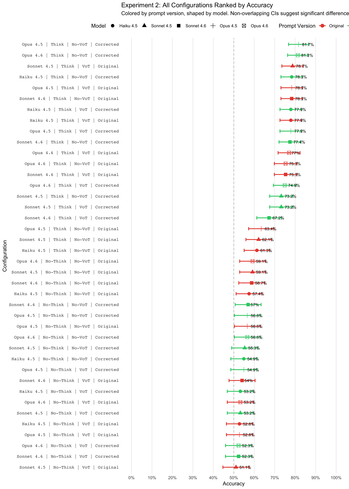
5.2.6 Accuracy Delta Plot
For each matched condition (model x thinking x VoT), the accuracy difference (Corrected minus Original) with 95% confidence interval for the difference. Positive values indicate the corrected prompt improved accuracy.
Code
# Compute accuracy per condition-version pair
e2_delta_data <- e2_predict_matched |>
group_by(model_name, enable_thinking, vot_ray_trace, prompt_version) |>
summarise(
n = n(),
accuracy = mean(correct),
.groups = "drop"
) |>
pivot_wider(
names_from = prompt_version,
values_from = c(accuracy, n)
) |>
mutate(
delta = accuracy_Corrected - accuracy_Original,
# SE of difference of two independent proportions
se_delta = sqrt(
accuracy_Original * (1 - accuracy_Original) / n_Original +
accuracy_Corrected * (1 - accuracy_Corrected) / n_Corrected
),
ci_lower = delta - 1.96 * se_delta,
ci_upper = delta + 1.96 * se_delta,
condition_label = paste0(
ifelse(enable_thinking, "Think", "No-Think"), " | ",
ifelse(vot_ray_trace, "VoT", "No-VoT")
)
)
p_e2_delta <- ggplot(e2_delta_data,
aes(x = delta, y = condition_label)) +
geom_vline(xintercept = 0, linetype = "dashed", color = "gray50") +
geom_point(size = 3, color = "#2C3E50") +
geom_errorbarh(aes(xmin = ci_lower, xmax = ci_upper),
height = 0.2, linewidth = 0.8, color = "#2C3E50") +
geom_text(aes(label = paste0(ifelse(delta > 0, "+", ""),
round(delta * 100, 1), " pp")),
hjust = -0.3, size = 3) +
facet_wrap(~model_name, ncol = 1, scales = "free_y") +
labs(
title = "Accuracy Change: Corrected vs Original Baseline Prompt",
subtitle = "Positive values = corrected prompt improved accuracy. Error bars = 95% CI for difference.",
x = "Accuracy Difference (Corrected - Original)",
y = "Condition"
) +
scale_x_continuous(labels = scales::percent) +
theme_minimal(base_size = 11) +
theme(
strip.text = element_text(face = "bold", size = 12),
panel.grid.major.y = element_blank(),
panel.grid.minor = element_blank()
)
print(p_e2_delta)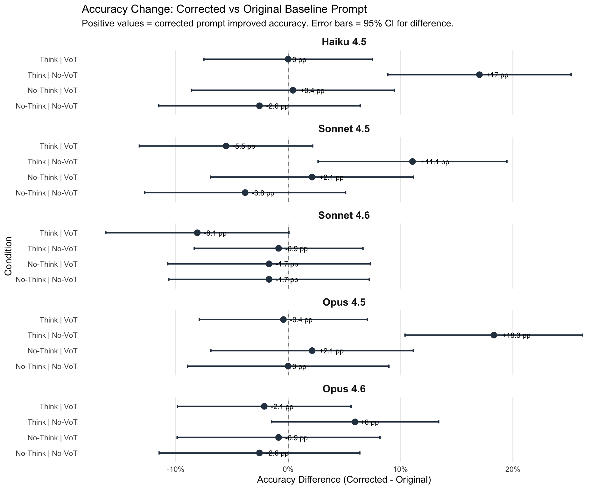
5.2.7 ANOVA: Prompt Version Effect
Mixed-effects logistic regression testing whether the corrected prompt significantly affects prediction accuracy, controlling for model, thinking, VoT, and ray complexity.
Model specification:
- Outcome: Correct prediction (binary: 0/1)
- Fixed effects:
prompt_version * model_name + enable_thinking + vot_ray_trace + cells_traveled + atoms_affecting - Random effects:
(1 | config_index/ray_id)— nested configuration and ray-level intercepts - Key factor:
prompt_version(Original vs Corrected)
Code
# Prepare factors
e2_predict_matched <- e2_predict_matched |>
mutate(
model_name = factor(as.character(model_name),
levels = order_model_names(as.character(model_name))),
prompt_version = factor(as.character(prompt_version),
levels = c("Original", "Corrected")),
enable_thinking = factor(as.logical(as.character(enable_thinking)),
levels = c(FALSE, TRUE)),
vot_ray_trace = factor(as.logical(as.character(vot_ray_trace)),
levels = c(FALSE, TRUE)),
config_index = factor(config_index),
ray_id = paste(toupper(entry_side), entry_pos, sep = "_")
)
e2_formula <- "correct ~ prompt_version * model_name + enable_thinking + vot_ray_trace + cells_traveled + atoms_affecting + (1 | config_index/ray_id)"
e2_model <- glmer(as.formula(e2_formula),
family = binomial(link = "logit"),
data = e2_predict_matched,
control = glmerControl(optimizer = "bobyqa"))Model formula: correct ~ prompt_version * model_name + enable_thinking + vot_ray_trace + cells_traveled + atoms_affecting + (1 | config_index/ray_id)
Analysis of Deviance Table (Type III Wald chisquare tests)
Response: correct
Chisq Df Pr(>Chisq)
(Intercept) 50.8570 1 9.935e-13 ***
prompt_version 9.1096 1 0.0025427 **
model_name 22.9084 4 0.0001321 ***
enable_thinking 701.7082 1 < 2.2e-16 ***
vot_ray_trace 0.5419 1 0.4616538
cells_traveled 35.5638 1 2.468e-09 ***
atoms_affecting 19.4253 1 1.046e-05 ***
prompt_version:model_name 26.7849 4 2.197e-05 ***
---
Signif. codes: 0 '***' 0.001 '**' 0.01 '*' 0.05 '.' 0.1 ' ' 15.2.7.1 Odds Ratios with 95% Confidence Intervals
Interpretation: OR > 1 means the factor increases odds of correct prediction; OR < 1 means it decreases odds.
| Term | Odds Ratio | 95% CI Lower | 95% CI Upper | p-value | Sig |
|---|---|---|---|---|---|
| prompt_versionCorrected | 1.645 | 1.191 | 2.273 | 0.0025 | * |
| model_nameSonnet 4.5 | 1.058 | 0.769 | 1.454 | 0.7309 | |
| model_nameSonnet 4.6 | 1.795 | 1.298 | 2.483 | <0.001 | * |
| model_nameOpus 4.5 | 1.088 | 0.791 | 1.496 | 0.6059 | |
| model_nameOpus 4.6 | 1.693 | 1.225 | 2.340 | 0.0014 | * |
| enable_thinkingTRUE | 10.333 | 8.693 | 12.281 | <0.001 | * |
| vot_ray_traceTRUE | 0.947 | 0.819 | 1.095 | 0.4617 | |
| cells_traveled | 0.654 | 0.569 | 0.752 | <0.001 | * |
| atoms_affecting | 0.242 | 0.129 | 0.455 | <0.001 | * |
| prompt_versionCorrected:model_nameSonnet 4.5 | 0.671 | 0.426 | 1.057 | 0.0852 | |
| prompt_versionCorrected:model_nameSonnet 4.6 | 0.368 | 0.233 | 0.583 | <0.001 | * |
| prompt_versionCorrected:model_nameOpus 4.5 | 1.064 | 0.673 | 1.682 | 0.7900 | |
| prompt_versionCorrected:model_nameOpus 4.6 | 0.599 | 0.378 | 0.949 | 0.0291 | * |
5.2.7.2 Random Effects Variance Components
Groups Name Std.Dev.
ray_id:config_index (Intercept) 2.6592
config_index (Intercept) 1.1736 ICC: 0.72 — Proportion of variance due to clustering at configuration and ray-within-config levels.
Model Fit (Pseudo R², Nakagawa & Schielzeth):
- Marginal R² (fixed effects only): 0.22
- Conditional R² (fixed + random effects): 0.781
5.2.7.3 Effect Size
Cramér’s V (prompt version × accuracy): 0.01 — Interpretation: 0.10 = small, 0.30 = medium, 0.50 = large.
5.2.8 Effect Modification by Path Complexity
Does the prompt correction effect vary with ray complexity? If the corrected prompt helps more on complex rays, the terminology fix may reduce cognitive load for the model on harder spatial reasoning tasks.
Code
e2_mod_formula <- "correct ~ prompt_version * cells_traveled + model_name + (1 | config_index/ray_id)"
e2_model_mod <- glmer(as.formula(e2_mod_formula),
family = binomial(link = "logit"),
data = e2_predict_matched,
control = glmerControl(optimizer = "bobyqa"))Model formula: correct ~ prompt_version * cells_traveled + model_name + (1 | config_index/ray_id)
Analysis of Deviance Table (Type III Wald chisquare tests)
Response: correct
Chisq Df Pr(>Chisq)
(Intercept) 45.3532 1 1.645e-11 ***
prompt_version 0.5019 1 0.47869
cells_traveled 25.5673 1 4.272e-07 ***
model_name 10.9375 4 0.02728 *
prompt_version:cells_traveled 0.0434 1 0.83499
---
Signif. codes: 0 '***' 0.001 '**' 0.01 '*' 0.05 '.' 0.1 ' ' 1| Interaction Term | β (log-odds) | OR | OR 95% CI Lower | OR 95% CI Upper | p-value |
|---|---|---|---|---|---|
| prompt_versionCorrected:cells_traveled | -0.005 | 0.995 | 0.946 | 1.046 | 0.835 |
Interpretation: A significant interaction would indicate that the prompt correction effect differs across ray complexity levels. A non-significant interaction suggests the effect (or lack thereof) of prompt correction is constant regardless of spatial complexity.
5.2.9 Error Pattern Comparison
Do the types of errors differ between the original and corrected prompt? If terminology correction changes which errors models make (not just how many), it suggests the prompt wording shapes the model’s reasoning strategy.
Code
# Classify error types for both versions
e2_errors <- e2_predict_matched |>
filter(!correct) |>
mutate(
predicted_type = case_when(
grepl("absorbed|HIT", predicted, ignore.case = TRUE) ~ "absorbed",
grepl("reflected|REFLECTION", predicted, ignore.case = TRUE) ~ "reflected",
TRUE ~ "detour"
),
actual_type = case_when(
grepl("absorbed|HIT", actual, ignore.case = TRUE) ~ "absorbed",
grepl("reflected|REFLECTION", actual, ignore.case = TRUE) ~ "reflected",
TRUE ~ "detour"
),
error_type = paste(actual_type, "->", predicted_type)
)
# Confusion matrix by prompt version
e2_error_matrix_orig <- e2_errors |>
filter(prompt_version == "Original") |>
count(actual_type, predicted_type) |>
pivot_wider(names_from = predicted_type, values_from = n, values_fill = 0)
e2_error_matrix_corr <- e2_errors |>
filter(prompt_version == "Corrected") |>
count(actual_type, predicted_type) |>
pivot_wider(names_from = predicted_type, values_from = n, values_fill = 0)
cat("**Original Prompt Error Matrix:**\n\n")**Original Prompt Error Matrix:**Code
kable(e2_error_matrix_orig,
caption = "Original Prompt: Actual vs Predicted Outcome Type") |>
print()
Table: Original Prompt: Actual vs Predicted Outcome Type
|actual_type | detour| reflected| absorbed|
|:-----------|------:|---------:|--------:|
|absorbed | 266| 6| 0|
|detour | 602| 19| 229|
|reflected | 375| 0| 189|Code
cat("\n**Corrected Prompt Error Matrix:**\n\n")
**Corrected Prompt Error Matrix:**Code
kable(e2_error_matrix_corr,
caption = "Corrected Prompt: Actual vs Predicted Outcome Type") |>
print()
Table: Corrected Prompt: Actual vs Predicted Outcome Type
|actual_type | detour| reflected| absorbed|
|:-----------|------:|---------:|--------:|
|absorbed | 257| 9| 0|
|detour | 612| 15| 185|
|reflected | 371| 0| 174|Code
# Chi-squared test on error type distribution
e2_error_table <- table(e2_errors$prompt_version, e2_errors$error_type)
if (min(dim(e2_error_table)) > 1 && sum(e2_error_table) > 0) {
e2_chi_test <- chisq.test(e2_error_table, simulate.p.value = TRUE, B = 10000)
cat("\n**Chi-squared test** (error type distribution × prompt version):\n")
cat(" X² =", round(e2_chi_test$statistic, 2),
", p =", format.pval(e2_chi_test$p.value, digits = 3), "\n")
}
**Chi-squared test** (error type distribution × prompt version):
X² = 5.43 , p = 0.492 Code
# Stacked bar chart of error types by version, faceted by model
e2_error_by_model <- e2_errors |>
count(model_name, prompt_version, error_type) |>
group_by(model_name, prompt_version) |>
mutate(prop = n / sum(n)) |>
ungroup()
p_e2_errors <- ggplot(e2_error_by_model,
aes(x = prompt_version, y = prop, fill = error_type)) +
geom_col(position = "stack") +
facet_wrap(~model_name, nrow = 1) +
labs(
title = "Error Type Distribution by Prompt Version",
subtitle = "Proportional breakdown of error types for incorrect predictions",
x = "Prompt Version",
y = "Proportion of Errors",
fill = "Error Type\n(Actual -> Predicted)"
) +
scale_y_continuous(labels = scales::percent) +
theme_minimal(base_size = 11) +
theme(
strip.text = element_text(face = "bold"),
axis.text.x = element_text(angle = 45, hjust = 1),
legend.position = "bottom"
)
print(p_e2_errors)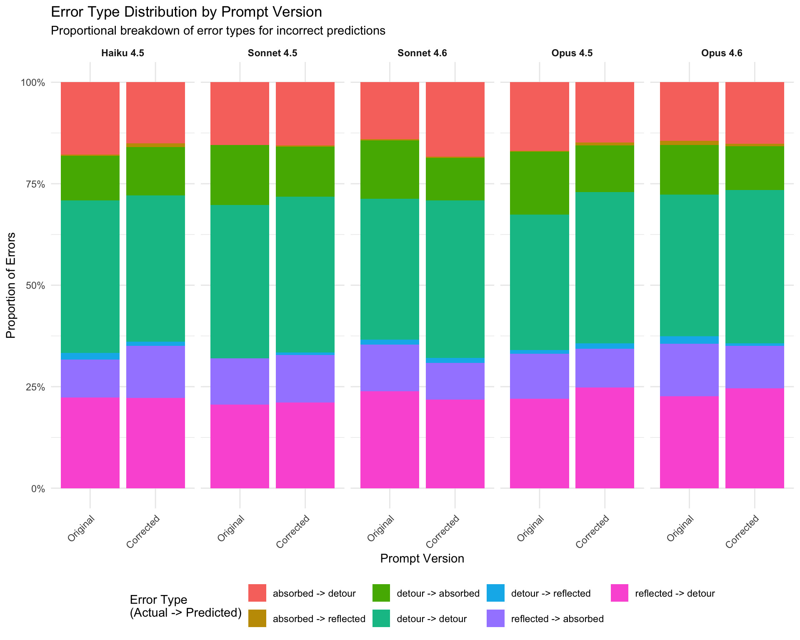
5.3 Play Mode Comparison
Code
# Check if erroneous baseline play data exists in archive
e2_play_dir <- "Experiment 1/Erroneous Baseline/Play"
e2_play_available <- dir.exists(e2_play_dir) &&
length(list.files(e2_play_dir, pattern = "\\.json$")) > 0Code
# Original (erroneous "ball" prompt) from archive
e2_play_original <- map_dfr(
list.files(e2_play_dir, pattern = "\\.json$", full.names = TRUE),
extract_play_results
) |>
mutate(prompt_version = "Original")
# Deduplicate
e2_play_original <- e2_play_original |>
distinct(experiment_id, .keep_all = TRUE)
# Corrected ("atom" prompt) from main Experiment 1 data
e2_play_corrected <- play_data |>
filter(prompt_style == "baseline") |>
mutate(
prompt_version = "Corrected",
config_index = as.integer(as.character(config_index)),
model_name = as.character(model_name),
prompt_style = as.character(prompt_style),
enable_thinking = as.logical(as.character(enable_thinking)),
vot_ray_trace = as.logical(as.character(vot_ray_trace))
)
# Deduplicate for consistency
e2_play_corrected <- e2_play_corrected |>
distinct(experiment_id, .keep_all = TRUE)
# Combine
e2_play_data <- bind_rows(e2_play_original, e2_play_corrected) |>
mutate(
prompt_version = factor(prompt_version, levels = c("Original", "Corrected")),
model_name = factor(model_name, levels = order_model_names(model_name)),
enable_thinking = as.logical(as.character(enable_thinking)),
vot_ray_trace = as.logical(as.character(vot_ray_trace)),
config_index = factor(config_index)
)Code
e2_play_coverage <- e2_play_data |>
mutate(
condition = paste0(
ifelse(enable_thinking, "Think", "No-Think"), " | ",
ifelse(vot_ray_trace, "VoT", "No-VoT")
)
) |>
group_by(prompt_version, model_name, condition) |>
summarise(
configs_present = n_distinct(config_index),
n_games = n(),
.groups = "drop"
)
kable(e2_play_coverage,
col.names = c("Version", "Model", "Condition", "Configs", "Games"),
caption = "Experiment 2: Play Mode Data Coverage") |>
kable_styling(bootstrap_options = c("striped", "hover", "condensed"),
font_size = 11)| Version | Model | Condition | Configs | Games |
|---|---|---|---|---|
| Original | Haiku 4.5 | No-Think | No-VoT | 10 | 30 |
| Original | Haiku 4.5 | No-Think | VoT | 10 | 10 |
| Original | Haiku 4.5 | Think | No-VoT | 10 | 30 |
| Original | Haiku 4.5 | Think | VoT | 10 | 10 |
| Original | Sonnet 4.5 | No-Think | No-VoT | 10 | 30 |
| Original | Sonnet 4.5 | No-Think | VoT | 10 | 10 |
| Original | Sonnet 4.5 | Think | No-VoT | 10 | 30 |
| Original | Sonnet 4.5 | Think | VoT | 10 | 10 |
| Original | Sonnet 4.6 | No-Think | No-VoT | 10 | 30 |
| Original | Sonnet 4.6 | No-Think | VoT | 10 | 10 |
| Original | Sonnet 4.6 | Think | No-VoT | 10 | 30 |
| Original | Sonnet 4.6 | Think | VoT | 10 | 10 |
| Original | Opus 4.5 | No-Think | No-VoT | 10 | 30 |
| Original | Opus 4.5 | No-Think | VoT | 10 | 10 |
| Original | Opus 4.5 | Think | No-VoT | 10 | 30 |
| Original | Opus 4.5 | Think | VoT | 10 | 10 |
| Original | Opus 4.6 | No-Think | No-VoT | 10 | 30 |
| Original | Opus 4.6 | No-Think | VoT | 10 | 10 |
| Original | Opus 4.6 | Think | No-VoT | 10 | 30 |
| Original | Opus 4.6 | Think | VoT | 10 | 10 |
| Corrected | Haiku 4.5 | No-Think | No-VoT | 10 | 30 |
| Corrected | Haiku 4.5 | No-Think | VoT | 10 | 10 |
| Corrected | Haiku 4.5 | Think | No-VoT | 10 | 30 |
| Corrected | Haiku 4.5 | Think | VoT | 10 | 10 |
| Corrected | Sonnet 4.5 | No-Think | No-VoT | 10 | 30 |
| Corrected | Sonnet 4.5 | No-Think | VoT | 10 | 10 |
| Corrected | Sonnet 4.5 | Think | No-VoT | 10 | 30 |
| Corrected | Sonnet 4.5 | Think | VoT | 10 | 10 |
| Corrected | Sonnet 4.6 | No-Think | No-VoT | 10 | 30 |
| Corrected | Sonnet 4.6 | No-Think | VoT | 10 | 10 |
| Corrected | Sonnet 4.6 | Think | No-VoT | 10 | 30 |
| Corrected | Sonnet 4.6 | Think | VoT | 10 | 10 |
| Corrected | Opus 4.5 | No-Think | No-VoT | 10 | 30 |
| Corrected | Opus 4.5 | No-Think | VoT | 10 | 10 |
| Corrected | Opus 4.5 | Think | No-VoT | 10 | 30 |
| Corrected | Opus 4.5 | Think | VoT | 10 | 10 |
| Corrected | Opus 4.6 | No-Think | No-VoT | 10 | 30 |
| Corrected | Opus 4.6 | No-Think | VoT | 10 | 10 |
| Corrected | Opus 4.6 | Think | No-VoT | 10 | 30 |
| Corrected | Opus 4.6 | Think | VoT | 10 | 10 |
Code
# Filter to matched conditions
e2_play_matched_conds <- e2_play_coverage |>
group_by(model_name, condition) |>
filter(n_distinct(prompt_version) == 2) |>
ungroup() |>
distinct(model_name, condition)
e2_play_matched <- e2_play_data |>
mutate(
condition = paste0(
ifelse(enable_thinking, "Think", "No-Think"), " | ",
ifelse(vot_ray_trace, "VoT", "No-VoT")
)
) |>
semi_join(e2_play_matched_conds, by = c("model_name", "condition"))Code
e2_play_summary <- e2_play_matched |>
group_by(model_name, prompt_version, enable_thinking, vot_ray_trace) |>
summarise(
n_games = n(),
mean_atoms_correct = mean(atoms_correct, na.rm = TRUE),
mean_score = mean(score, na.rm = TRUE),
mean_rays = mean(rays_used, na.rm = TRUE),
.groups = "drop"
) |>
mutate(across(c(mean_atoms_correct, mean_score, mean_rays), \(x) round(x, 2)))
kable(e2_play_summary,
col.names = c("Model", "Version", "Thinking", "VoT",
"Games", "Atoms Correct", "Score", "Rays Used"),
caption = "Experiment 2: Play Mode Performance by Model and Prompt Version") |>
kable_styling(bootstrap_options = c("striped", "hover", "condensed"),
font_size = 11)| Model | Version | Thinking | VoT | Games | Atoms Correct | Score | Rays Used |
|---|---|---|---|---|---|---|---|
| Haiku 4.5 | Original | FALSE | FALSE | 30 | 0.83 | 26.63 | 7.83 |
| Haiku 4.5 | Original | FALSE | TRUE | 10 | 0.80 | 27.30 | 8.10 |
| Haiku 4.5 | Original | TRUE | FALSE | 30 | 0.70 | 30.37 | 9.73 |
| Haiku 4.5 | Original | TRUE | TRUE | 10 | 0.90 | 28.20 | 8.80 |
| Haiku 4.5 | Corrected | FALSE | FALSE | 30 | 0.97 | 34.10 | 13.50 |
| Haiku 4.5 | Corrected | FALSE | TRUE | 10 | 0.80 | 31.50 | 11.40 |
| Haiku 4.5 | Corrected | TRUE | FALSE | 30 | 1.17 | 29.43 | 10.93 |
| Haiku 4.5 | Corrected | TRUE | TRUE | 10 | 1.10 | 24.30 | 7.20 |
| Sonnet 4.5 | Original | FALSE | FALSE | 30 | 1.03 | 28.03 | 9.50 |
| Sonnet 4.5 | Original | FALSE | TRUE | 10 | 0.80 | 25.80 | 7.10 |
| Sonnet 4.5 | Original | TRUE | FALSE | 30 | 0.97 | 28.07 | 9.17 |
| Sonnet 4.5 | Original | TRUE | TRUE | 10 | 0.90 | 27.80 | 8.60 |
| Sonnet 4.5 | Corrected | FALSE | FALSE | 30 | 0.93 | 34.43 | 13.47 |
| Sonnet 4.5 | Corrected | FALSE | TRUE | 10 | 0.90 | 33.00 | 12.50 |
| Sonnet 4.5 | Corrected | TRUE | FALSE | 30 | 1.40 | 28.10 | 10.73 |
| Sonnet 4.5 | Corrected | TRUE | TRUE | 10 | 1.90 | 25.40 | 10.50 |
| Sonnet 4.6 | Original | FALSE | FALSE | 30 | 0.93 | 35.77 | 14.23 |
| Sonnet 4.6 | Original | FALSE | TRUE | 10 | 0.90 | 32.30 | 12.00 |
| Sonnet 4.6 | Original | TRUE | FALSE | 30 | 1.20 | 27.37 | 9.37 |
| Sonnet 4.6 | Original | TRUE | TRUE | 10 | 1.20 | 25.90 | 8.30 |
| Sonnet 4.6 | Corrected | FALSE | FALSE | 30 | 0.97 | 34.90 | 14.10 |
| Sonnet 4.6 | Corrected | FALSE | TRUE | 10 | 0.90 | 32.50 | 11.90 |
| Sonnet 4.6 | Corrected | TRUE | FALSE | 30 | 1.60 | 27.10 | 10.87 |
| Sonnet 4.6 | Corrected | TRUE | TRUE | 10 | 1.40 | 26.00 | 9.60 |
| Opus 4.5 | Original | FALSE | FALSE | 30 | 0.97 | 28.07 | 9.00 |
| Opus 4.5 | Original | FALSE | TRUE | 10 | 0.80 | 28.60 | 8.80 |
| Opus 4.5 | Original | TRUE | FALSE | 30 | 0.90 | 28.87 | 9.37 |
| Opus 4.5 | Original | TRUE | TRUE | 10 | 1.00 | 26.80 | 7.90 |
| Opus 4.5 | Corrected | FALSE | FALSE | 30 | 1.03 | 34.00 | 13.63 |
| Opus 4.5 | Corrected | FALSE | TRUE | 10 | 1.20 | 33.50 | 13.80 |
| Opus 4.5 | Corrected | TRUE | FALSE | 30 | 1.27 | 28.03 | 10.33 |
| Opus 4.5 | Corrected | TRUE | TRUE | 10 | 1.00 | 25.70 | 8.00 |
| Opus 4.6 | Original | FALSE | FALSE | 30 | 1.13 | 31.67 | 12.37 |
| Opus 4.6 | Original | FALSE | TRUE | 10 | 0.90 | 31.20 | 11.00 |
| Opus 4.6 | Original | TRUE | FALSE | 30 | 1.47 | 26.93 | 10.13 |
| Opus 4.6 | Original | TRUE | TRUE | 10 | 1.50 | 25.60 | 9.50 |
| Opus 4.6 | Corrected | FALSE | FALSE | 30 | 0.73 | 34.10 | 12.60 |
| Opus 4.6 | Corrected | FALSE | TRUE | 10 | 0.90 | 32.40 | 12.00 |
| Opus 4.6 | Corrected | TRUE | FALSE | 30 | 1.83 | 24.13 | 9.53 |
| Opus 4.6 | Corrected | TRUE | TRUE | 10 | 1.30 | 24.80 | 8.40 |
Code
e2_play_delta <- e2_play_matched |>
group_by(model_name, enable_thinking, vot_ray_trace, prompt_version) |>
summarise(
n = n(),
mean_atoms = mean(atoms_correct, na.rm = TRUE),
.groups = "drop"
) |>
pivot_wider(
names_from = prompt_version,
values_from = c(mean_atoms, n)
) |>
mutate(
delta = mean_atoms_Corrected - mean_atoms_Original,
condition_label = paste0(
ifelse(enable_thinking, "Think", "No-Think"), " | ",
ifelse(vot_ray_trace, "VoT", "No-VoT")
)
)
p_e2_play_delta <- ggplot(e2_play_delta,
aes(x = delta, y = condition_label)) +
geom_vline(xintercept = 0, linetype = "dashed", color = "gray50") +
geom_point(size = 3, color = "#2C3E50") +
geom_text(aes(label = round(delta, 2)), hjust = -0.3, size = 3) +
facet_wrap(~model_name, ncol = 1, scales = "free_y") +
labs(
title = "Play Mode: Atoms Correct Change (Corrected - Original)",
subtitle = "Positive values = corrected prompt found more atoms",
x = "Difference in Mean Atoms Correct",
y = "Condition"
) +
theme_minimal(base_size = 11) +
theme(
strip.text = element_text(face = "bold", size = 12),
panel.grid.major.y = element_blank(),
panel.grid.minor = element_blank()
)
print(p_e2_play_delta)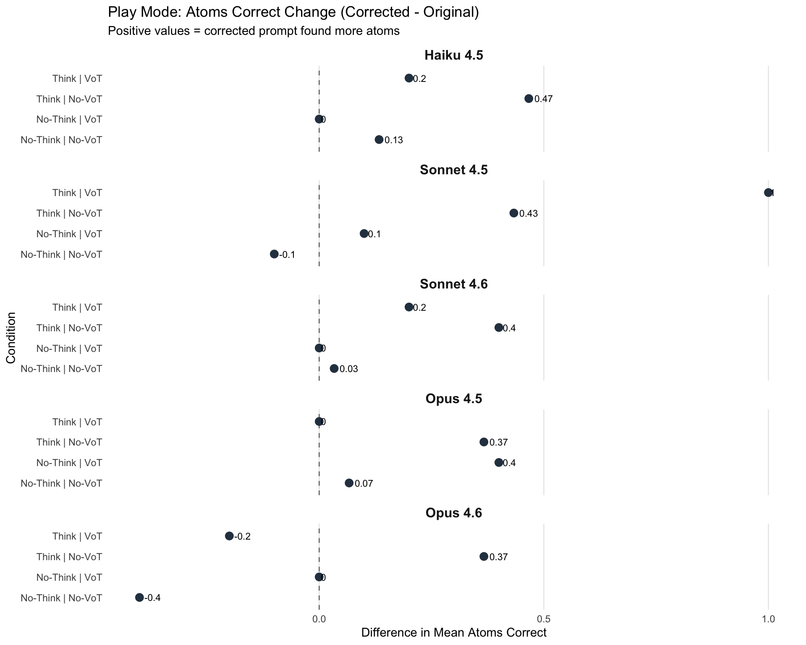
Code
e2_play_matched <- e2_play_matched |>
mutate(
model_name = factor(model_name, levels = order_model_names(as.character(model_name))),
prompt_version = factor(prompt_version, levels = c("Original", "Corrected")),
enable_thinking = factor(enable_thinking, levels = c(FALSE, TRUE)),
vot_ray_trace = factor(vot_ray_trace, levels = c(FALSE, TRUE)),
config_index = factor(config_index)
)
e2_play_formula <- "atoms_correct ~ prompt_version * model_name + enable_thinking + vot_ray_trace + (1 | config_index)"
e2_play_model <- lmer(as.formula(e2_play_formula),
data = e2_play_matched)
cat("**Model formula**:", e2_play_formula, "\n\n")**Model formula**: atoms_correct ~ prompt_version * model_name + enable_thinking + vot_ray_trace + (1 | config_index) Code
print(Anova(e2_play_model, type = 3))Analysis of Deviance Table (Type III Wald chisquare tests)
Response: atoms_correct
Chisq Df Pr(>Chisq)
(Intercept) 3.5876 1 0.058213 .
prompt_version 3.7602 1 0.052486 .
model_name 15.8455 4 0.003234 **
enable_thinking 27.9835 1 1.224e-07 ***
vot_ray_trace 0.4913 1 0.483333
prompt_version:model_name 3.6098 4 0.461380
---
Signif. codes: 0 '***' 0.001 '**' 0.01 '*' 0.05 '.' 0.1 ' ' 15.4 Cross-Mode Summary
Code
# Summarise the prompt version effect across both modes
e2_cross_mode <- tibble(
Mode = c("Predict", "Play"),
`Original Accuracy` = c(
round(mean(e2_predict_matched$correct[e2_predict_matched$prompt_version == "Original"]) * 100, 1),
round(mean(e2_play_matched$atoms_correct[e2_play_matched$prompt_version == "Original"], na.rm = TRUE), 2)
),
`Corrected Accuracy` = c(
round(mean(e2_predict_matched$correct[e2_predict_matched$prompt_version == "Corrected"]) * 100, 1),
round(mean(e2_play_matched$atoms_correct[e2_play_matched$prompt_version == "Corrected"], na.rm = TRUE), 2)
),
Metric = c("% Correct", "Mean Atoms Correct")
)
e2_cross_mode <- e2_cross_mode |>
mutate(Delta = `Corrected Accuracy` - `Original Accuracy`)
kable(e2_cross_mode,
caption = "Experiment 2: Cross-Mode Summary of Prompt Correction Effect") |>
kable_styling(bootstrap_options = c("striped", "hover", "condensed"))| Mode | Original Accuracy | Corrected Accuracy | Metric | Delta |
|---|---|---|---|---|
| Predict | 64.1 | 65.50 | % Correct | 1.40 |
| Play | 1.0 | 1.18 | Mean Atoms Correct | 0.18 |
6 Discussion
6.1 Summary of Findings
[To be completed after data collection]
6.2 Relation to Literature
6.2.1 Constraint Satisfaction
[Discuss how results relate to ZebraLogic, GenCP findings]
6.2.2 Spatial Reasoning
[Discuss how results relate to PLUGH, spatial reasoning benchmarks]
6.2.3 World Models
[Discuss how results relate to pulley system, text world simulator findings]
6.2.4 Abductive Reasoning
[Discuss how results relate to Occam’s Razor, hypothesis generation findings]
6.3 Benchmark Comparison
No single existing benchmark tests the full diagnostic reasoning pipeline that Black Box requires. Established benchmarks typically isolate spatial reasoning, constraint satisfaction, or game-playing individually, whereas Black Box demands all three capabilities operate simultaneously—spatial ray tracing, constraint propagation from accumulated evidence, and abductive inference about hidden state. This section contextualizes Claude’s Black Box performance against its published results on benchmarks targeting each component capability. We restrict comparison to benchmarks where Claude-specific performance data is available, avoiding extrapolation from other model families.
Code
benchmark_comparison <- tibble::tribble(
~Benchmark, ~`Capability Tested`, ~`Claude Result`, ~`Black Box Analog`,
"ZebraLogic", "Constraint satisfaction (logic grids)", "33.4% overall; 12.4% on hard puzzles (Sonnet 3.5)", "Tracking excluded cells across ray observations",
"ConstraintBench", "Constraint satisfaction (optimization)", "49.0-50.5% feasibility (Opus 4.5/4.6)", "Maintaining feasible hypothesis sets under accumulating ray evidence",
"LogicGame", "Rule-based planning", "19.15% overall (Sonnet 3.5)", "Multi-step ray selection strategy",
"CrossWordBench", "Intersecting grid constraints", "0.482 WCR (Sonnet 3.7)", "Multi-ray constraints on shared grid cells",
"BALROG", "Game environments (text/visual)", "Partial success on simple games only", "Performance collapse on complex atom configurations",
"PuzzlePlex", "Multi-turn puzzle solving", "Below simple heuristics", "LLMs use ~2x optimal rays",
"lmgame-Bench", "Game-playing (incl. Sokoban)", "Top non-reasoning tier (Sonnet 3.7)", "Structured prompts yield modest gains",
"Black Box Predict", "Spatial + forward reasoning", "[from experiment data]", "Forward reasoning baseline",
"Black Box Play", "Spatial + constraint + abductive", "[from experiment data]", "Full diagnostic pipeline"
)
kable(benchmark_comparison,
col.names = c("Benchmark", "Capability Tested", "Claude Result", "Black Box Analog"),
caption = "Claude performance on established benchmarks compared to Black Box analogs. All results reflect published Claude model evaluations.") |>
kable_styling(bootstrap_options = c("striped", "hover", "condensed")) |>
pack_rows("Constraint Satisfaction", 1, 4) |>
pack_rows("Game-Playing & Spatial Reasoning", 5, 7) |>
pack_rows("Black Box (This Study)", 8, 9)| Benchmark | Capability Tested | Claude Result | Black Box Analog |
|---|---|---|---|
| Constraint Satisfaction | |||
| ZebraLogic | Constraint satisfaction (logic grids) | 33.4% overall; 12.4% on hard puzzles (Sonnet 3.5) | Tracking excluded cells across ray observations |
| ConstraintBench | Constraint satisfaction (optimization) | 49.0-50.5% feasibility (Opus 4.5/4.6) | Maintaining feasible hypothesis sets under accumulating ray evidence |
| LogicGame | Rule-based planning | 19.15% overall (Sonnet 3.5) | Multi-step ray selection strategy |
| CrossWordBench | Intersecting grid constraints | 0.482 WCR (Sonnet 3.7) | Multi-ray constraints on shared grid cells |
| Game-Playing & Spatial Reasoning | |||
| BALROG | Game environments (text/visual) | Partial success on simple games only | Performance collapse on complex atom configurations |
| PuzzlePlex | Multi-turn puzzle solving | Below simple heuristics | LLMs use ~2x optimal rays |
| lmgame-Bench | Game-playing (incl. Sokoban) | Top non-reasoning tier (Sonnet 3.7) | Structured prompts yield modest gains |
| Black Box (This Study) | |||
| Black Box Predict | Spatial + forward reasoning | [from experiment data] | Forward reasoning baseline |
| Black Box Play | Spatial + constraint + abductive | [from experiment data] | Full diagnostic pipeline |
6.3.1 Consistent Constraint Satisfaction Weakness
Claude’s performance on constraint satisfaction benchmarks reveals a systematic limitation that Black Box corroborates. On ZebraLogic, Claude Sonnet 3.5 achieves 33.4% overall accuracy that drops to 12.4% on hard puzzles (Lin et al. 2024); on LogicGame, the same model reaches only 19.15% (Gui et al. 2024); and on CrossWordBench, Claude Sonnet 3.7 achieves a word completion rate of 0.482 (J. Wang et al. 2025). ConstraintBench further confirms this pattern, with Claude Opus models achieving only 49–51% feasibility on constraint satisfaction problems, identifying constraint satisfaction—not objective optimization—as the primary bottleneck (Tso et al. 2026). Black Box’s constraint tracking task (ruling out candidate cells based on accumulated ray evidence) is fundamentally a constraint satisfaction problem, and the approximately 2\(\times\) gap between LLM and optimal solver performance is consistent with these benchmark results. The pattern across benchmarks is clear: performance degrades sharply as constraint complexity increases.
6.3.2 Performance Collapse at Complexity Thresholds
BALROG demonstrates that Claude achieves partial success on simple game environments but fails on complex ones (Paglieri et al. 2024). PuzzlePlex confirms that LLMs perform below simple heuristics on multi-turn puzzles (Authors 2025b). lmgame-Bench shows Claude Sonnet 3.7 performing in the top tier among non-reasoning models but still far below optimal play on structured games like Sokoban (Hu et al. 2025). Black Box exhibits the same pattern: the optimal solver requires 5–9 rays depending on configuration difficulty, LLMs use approximately twice as many, and the gap widens on harder configurations. This aligns with Shojaee et al. (2025)’s observation of “accuracy collapse” at complexity thresholds, where reasoning model performance deteriorates abruptly rather than gradually as problem difficulty increases.
6.3.3 What Black Box Uniquely Reveals
The benchmarks reviewed above each test isolated capabilities—constraint satisfaction, spatial reasoning, or game-playing—in separate task environments. Black Box’s contribution is testing the intersection of spatial reasoning, constraint satisfaction, abductive inference, active test selection, and sequential belief updating within a single unified task. Its two-mode design (Predict and Play) enables decomposition of the forward–inverse reasoning asymmetry: Predict isolates spatial simulation (given atoms, predict ray behavior), while Play requires the full diagnostic pipeline (observe rays, infer hidden atoms). This decomposition, absent from existing benchmarks, reveals whether failures stem from inability to simulate the physics or from inability to reason backward from observations. Furthermore, the optimal solver provides an information-theoretic performance ceiling, enabling rationality ratio analysis (LLM rays / optimal rays) rather than simple accuracy reporting—a quantitative measure of reasoning efficiency that most benchmarks lack.
6.4 Implications
6.4.1 For LLM Deployment in Diagnostic Domains
[Discuss implications for medical diagnosis, fault detection, and other diagnostic tasks]
6.4.2 For LLM-Modulo Architectures
[Discuss whether tool augmentation addresses the limitations]
6.4.3 For Benchmark Development
[Discuss Black Box as a diagnostic tool for reasoning assessment]
6.5 Limitations
- Single game domain: Results may not generalize to all reasoning tasks
- Prompt sensitivity: Different prompt formulations might yield different results
- Model versions: Rapid model updates may change performance characteristics
- Sample size: [Discuss statistical power]
- Predict mode ray selection: In predict mode, rays are tested in a fixed sequential order (North 1–8, South 1–8, East 1–8, West 1–8), and entry points already observed as exit points of prior rays are skipped. This means later sides (East, West) are tested on fewer rays, and the tested subset is non-random — it excludes positions that served as exits for earlier rays. All 32 entry points should have been tested independently to enable unbiased comparison across entry sides.
6.6 Future Directions
- Extended model comparison: GPT-4, Gemini, open-source models
- Tool augmentation study: Provide ray-tracing verification tool
- Difficulty manipulation: Vary grid size, atom count, atom arrangement
- Human baseline: Compare LLM performance to human players
- Fine-tuning study: Following the approach of Y. Wang et al. (2025), who demonstrated substantial reasoning improvements through game-specific training on Doudizhu and Go, test whether task-specific training on Black Box traces improves performance. Of particular interest is whether such training would generalize to novel atom configurations (in-distribution transfer) and to other spatial reasoning tasks (out-of-distribution transfer), or whether improvements would be limited to memorized patterns—the “catastrophic forgetting” phenomenon observed in their work when game training interfered with unrelated reasoning tasks
7 Conclusion
[To be completed after data collection]
8 References
9 Appendix A: Prompt Texts
9.1 Baseline Play Prompt
You are playing Black Box, a game of hide and seek played on an 8 by 8 grid
(the Black Box).
Your opponent has hidden 4 atoms within this box. By shooting rays into the
box and observing where they emerge, it is possible to deduce the positions
of the hidden atoms.
GRID: 8x8, rows 1-8 (top to bottom), columns 1-8 (left to right).
RAYS: Fire from edge positions - NORTH/SOUTH use columns 1-8, EAST/WEST use rows 1-8.
There are three possible outcomes for each ray you send into the box:
DETOUR: The ray is deflected and emerges somewhere other than where you sent
it in. Detours are denoted by matching pairs of numbers.
REFLECTION (R): The ray is reflected and emerges in the same place it was sent in.
HIT (H): The ray strikes an atom directly and is absorbed. It does not emerge
from the box.
[ASCII diagram examples showing deflection, reflection, and hit patterns...]
SCORING:
Your goal is to minimize your score. Lower is better.
- Each ray entry point costs 1 point
- Each ray exit point costs 1 point (detours cost 2 total, reflections cost 1,
absorptions cost 1)
- Each missed atom costs 5 points
Strategy: Use as few rays as possible while still finding all 4 atoms.
RULES:
- You cannot fire from positions already used as entry or exit points.
- Maximum 20 rays.
Respond with JSON only:
{"action": "fire", "side": "north|south|east|west", "position": 1-8, "reasoning": "..."}
{"action": "guess", "atoms": [[row,col], [row,col], [row,col], [row,col]], "reasoning": "..."}
When you think you know where all 4 atoms are, make your guess.9.2 Baseline Predict Prompt
Predict where a ray will exit in Black Box.
GRID: 8x8, rows 1-8 (top to bottom), columns 1-8 (left to right).
EDGES: NORTH/SOUTH use columns 1-8, EAST/WEST use rows 1-8.
As a ray approaches an atom it is deflected ninety degrees. Rays can be
deflected multiple times. In these diagrams, - is empty, O is an atom,
* is the ray path.
[ASCII diagram examples showing deflection, reflection, and hit patterns...]
Important: A hit takes priority over a reflection. If an atom is in the
entry cell, it is absorbed even if diagonal atoms would otherwise cause
reflection.
Respond with JSON only:
{"exit_side": "north|south|east|west", "exit_position": 1-8, "reasoning": "..."}
OR for absorption: {"absorbed": true, "reasoning": "..."}
OR for reflection: {"reflected": true, "reasoning": "..."}9.3 Augmented Prompt
[Full augmented prompt text to be included]
9.4 Hypothesis-Enabled Play Prompt Extension
When hypotheses are enabled, the response format is extended:
Respond with JSON only:
{"action": "fire", "side": "north|south|east|west", "position": 1-8, "reasoning": "..."}
{"action": "mark", "row": 1-8, "col": 1-8, "reasoning": "..."} - mark suspected atom
{"action": "unmark", "row": 1-8, "col": 1-8, "reasoning": "..."} - remove marked position
{"action": "check", "reasoning": "..."} - submit answer (requires exactly 4 marked positions)10 Appendix B: Sample Game Traces
[Representative game traces showing LLM reasoning]
11 Appendix C: Error Taxonomy
[Detailed coding scheme for error analysis]
References
Authors, Various. 2025a. “Auto-Bench: An Automated Benchmark for Scientific Discovery in LLMs.” arXiv Preprint arXiv:2502.15224. https://arxiv.org/abs/2502.15224.
———. 2025b. “PuzzlePlex: A Benchmark to Evaluate the Reasoning and Planning of Large Language Models on Puzzles.” In International Conference on Learning Representations (ICLR).
Bonlarron, Alexandre, Jean-Charles Régin, and Elisabetta De Maria. 2024. “Combining Constraint Programming Reasoning with Large Language Model Predictions.” In Proceedings of the 30th International Conference on Principles and Practice of Constraint Programming (CP 2024), 307:25. LIPIcs. Schloss Dagstuhl. https://doi.org/10.4230/LIPIcs.CP.2024.25.
Bos, Nathan. 2024. “Language Models and Spatial Reasoning: What’s Good, What Is Still Terrible, and What Is Improving.” Towards Data Science. https://medium.com/data-science/language-models-and-spatial-reasoning.
Chen, Fangru et al. 2024. “An Empirical Analysis on Spatial Reasoning Capabilities of Large Multimodal Models,” 1195.
Freuder, Eugene C. 2024. “Conversational Modeling for Constraint Satisfaction.” Proceedings of the AAAI Conference on Artificial Intelligence 38 (20): 22592–97. https://doi.org/10.1609/aaai.v38i20.30225.
Giadikiaroglou, Panagiotis, Maria Lymperaiou, Giorgos Filandrianos, and Giorgos Stamou. 2024. “Puzzle Solving Using Reasoning of Large Language Models: A Survey.” arXiv Preprint arXiv:2402.11291. https://arxiv.org/abs/2402.11291.
Gui, Jiayi, Yiming Liu, Jiale Cheng, Xiaotao Gu, Xiao Liu, Hongning Wang, Yuxiao Dong, Jie Tang, and Minlie Huang. 2024. “LogicGame: Benchmarking Rule-Based Reasoning Abilities of Large Language Models.” arXiv Preprint arXiv:2408.15778. https://arxiv.org/abs/2408.15778.
Harig, Tobin et al. 2025. “LLM World Models Are Mental: Output Layer Evidence of Brittle World Model Use in LLM Mechanical Reasoning.” arXiv Preprint arXiv:2507.15521.
Hu, Lanxiang, Mingjia Huo, Yuxuan Zhang, Haoyang Yu, Eric P. Xing, Ion Stoica, Tajana Rosing, Haojian Jin, and Hao Zhang. 2025. “Lmgame-Bench: How Good Are LLMs at Playing Games?” arXiv Preprint arXiv:2505.15146. https://arxiv.org/abs/2505.15146.
Kambhampati, Subbarao et al. 2024. “LLMs Can’t Plan, but Can Help Planning in LLM-Modulo Frameworks.” arXiv Preprint arXiv:2402.01817.
Lin, Bill Yuchen et al. 2024. “ZebraLogic: Benchmarking the Logical Reasoning Ability of Language Models.” Hugging Face Blog. https://huggingface.co/blog/yuchenlin/zebra-logic.
Liu, Emmy, Graham Neubig, and Jacob Andreas. 2024. “An Incomplete Loop: Deductive, Inductive, and Abductive Learning in Large Language Models.” arXiv Preprint arXiv:2404.03028.
Michailidis, Kostis, Dimosthenis Tsouros, and Tias Guns. 2024. “Constraint Modelling with LLMs Using in-Context Learning.” In Proceedings of the 30th International Conference on Principles and Practice of Constraint Programming (CP 2024), 307:20. LIPIcs. Schloss Dagstuhl. https://doi.org/10.4230/LIPIcs.CP.2024.20.
Omar, Mahmud, Reem Agbareia, Alon Gorenshtein, Alexander W Charney, Benjamin S Glicksberg, Girish N Nadkarni, and Eyal Klang. 2025. “Large Language Models Chase Zebras: Salient Cues Overrule Base Rates in Clinical Diagnosis.” SSRN Preprint.
Paglieri, Davide, Bartłomiej Cupiał, Samuel Coward, Ulyana Piterbarg, Maciej Wolczyk, Akbir Khan, Eduardo Pignatelli, et al. 2024. “BALROG: Benchmarking Agentic LLM and VLM Reasoning on Games.” arXiv Preprint arXiv:2411.13543. https://arxiv.org/abs/2411.13543.
Quan, Yida et al. 2025. “Benchmarking Spatiotemporal Reasoning in LLMs and Reasoning Models: Capabilities and Challenges.” arXiv Preprint arXiv:2505.11618.
Rodriguez, Pablo et al. 2025. “Analogical Mappings of Facts and Counterfactuals in the Human Mind and Peirce’s Abduction: Limitations in LLMs.” Cognitive Systems Research. https://doi.org/10.1016/j.cogsys.2025.101389.
Shojaee, Parshin, Iman Mirzadeh, Keivan Alizadeh, Maxwell Horton, Samy Bengio, and Mehrdad Farajtabar. 2025. “The Illusion of Thinking: Understanding the Strengths and Limitations of Reasoning Models via the Lens of Problem Complexity.” arXiv Preprint arXiv:2506.06941.
Tikhonov, Alexey et al. 2024. “PLUGH: A Benchmark for Spatial Understanding and Reasoning in Large Language Models.” In arXiv Preprint. https://arxiv.org/abs/2408.04648.
Tso, Joseph, Preston Schmittou, Quan Huynh, and Jibran Hutchins. 2026. “ConstraintBench: Benchmarking LLM Constraint Reasoning on Direct Optimization.” arXiv Preprint arXiv:2602.22465. https://arxiv.org/abs/2602.22465.
Valmeekam, Karthik, Matthew Marquez, Alberto Olmo, Sarath Sreedharan, and Subbarao Kambhampati. 2023. “On the Planning Abilities of Large Language Models: A Critical Investigation.” Advances in Neural Information Processing Systems 36.
Wang, Jixuan et al. 2025. “CrossWordBench: Evaluating the Reasoning Capabilities of LLMs and LVLMs with Controllable Puzzle Generation.” arXiv Preprint arXiv:2510.13271. https://arxiv.org/abs/2510.13271.
Wang, Ruoyao, Graham Todd, Xingdi Yuan, et al. 2024. “Can Language Models Serve as Text-Based World Simulators?” In Proceedings of the 62nd Annual Meeting of the Association for Computational Linguistics.
Wang, Yifan, Xinnan Li, Yifei Niu, Shimin Hu, et al. 2025. “Empowering LLMs in Decision Games Through Algorithmic Data Synthesis.” arXiv Preprint arXiv:2503.13980. https://arxiv.org/abs/2503.13980.
Wang, Zonglin et al. 2025. “Language Models Do Not Follow Occam’s Razor: A Benchmark for Inductive and Abductive Reasoning.” arXiv Preprint arXiv:2509.03345.
Wen, Andrew, Qiuhao Lu, Yu-Neng Chuang, et al. 2025. “Context Matching Is Not Reasoning When Performing Generalized Clinical Evaluation of Generative Language Models.” Npj Digital Medicine. https://doi.org/10.1038/s41746-025-02253-2.
Wikipedia contributors. 2024. “Black Box (Game).” https://en.wikipedia.org/wiki/Black_Box_(game).
Yang, Yunfan et al. 2025. “From Reasoning to Learning: A Survey on Hypothesis Discovery and Rule Learning with Large Language Models.” arXiv Preprint arXiv:2505.21935.